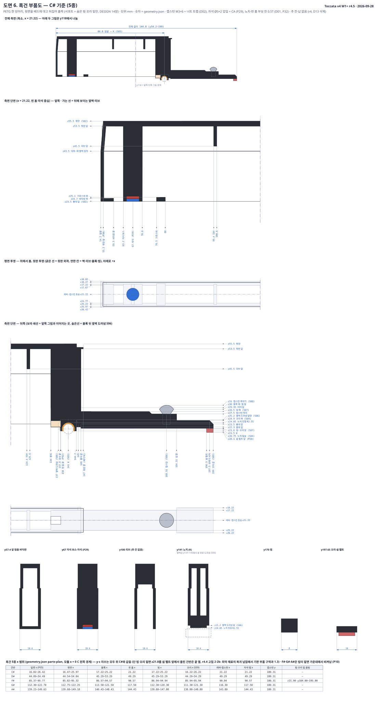
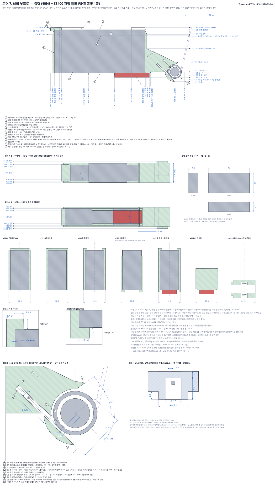
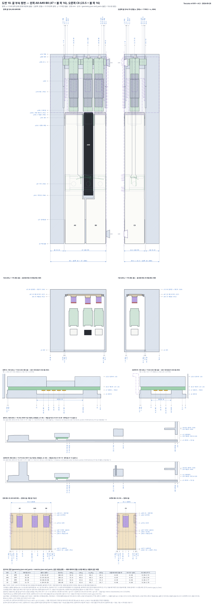
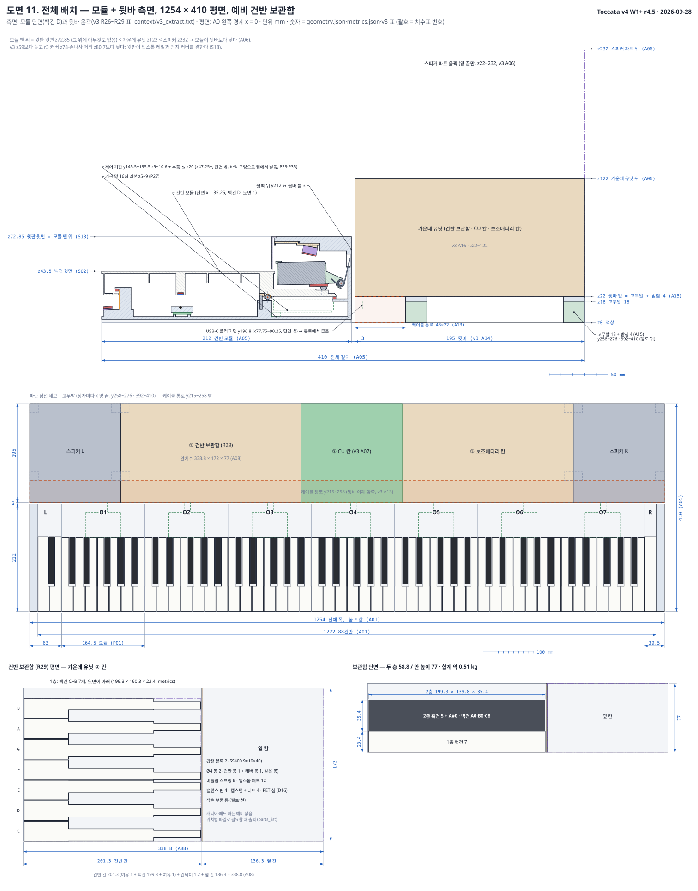
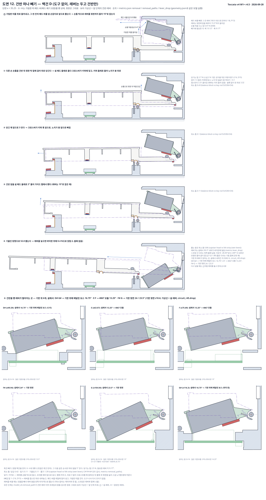
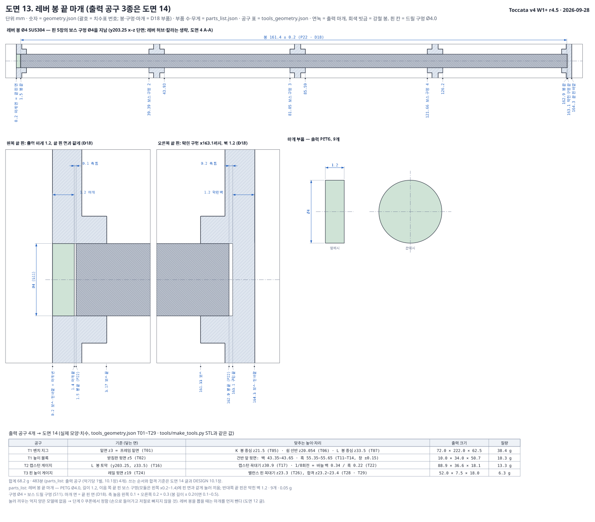
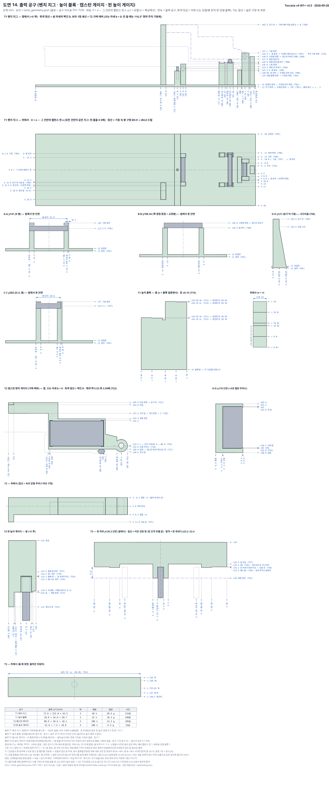
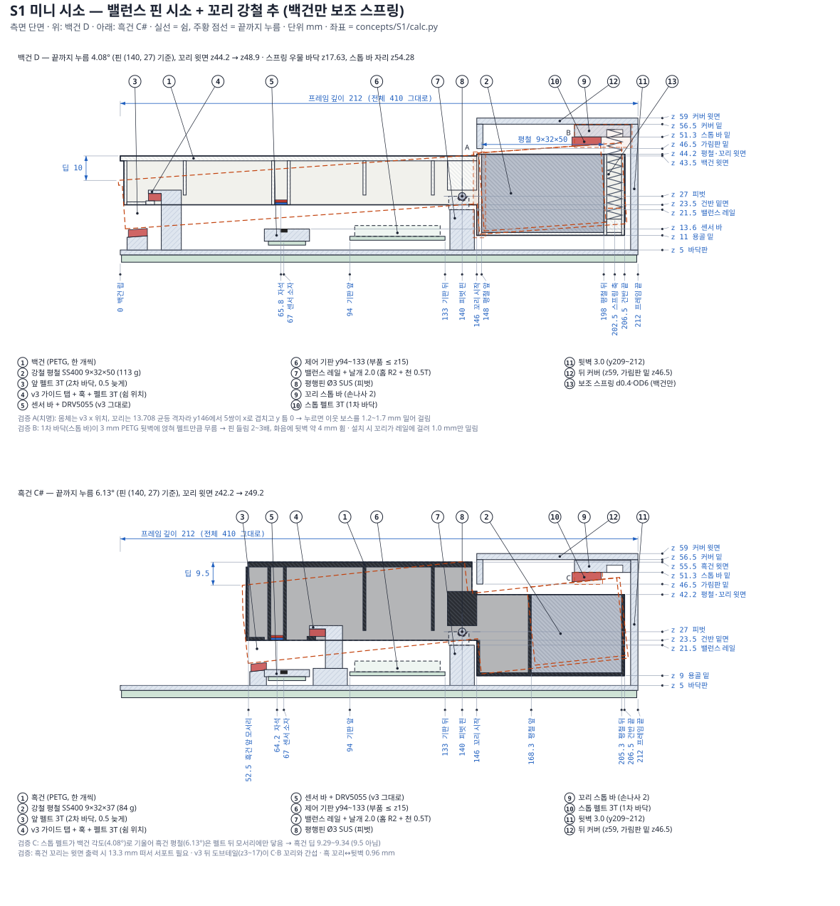

<meta charset="utf-8">
<title>Toccata v4 건반 4.5차</title>
<link rel="preconnect" href="https://fonts.googleapis.com"><link rel="preconnect" href="https://fonts.gstatic.com" crossorigin>
<link rel="stylesheet" href="https://fonts.googleapis.com/css2?family=IBM+Plex+Mono:wght@400;500;600&family=IBM+Plex+Sans+KR:wght@400;500;600;700&display=swap">
<style>:root{
  --paper:#F4F5F7; --card:#FFFFFF; --ink:#1A2030; --ink-2:#556074; --ink-3:#7E889A; --rule:#DCE1E8; --rule-2:#C9D0DA;
  --blue:#1F5FBF; --blue-ink:#184E9F; --felt:#B3342D; --felt-soft:#F7E4E2; --tint-blue:#E7EEF9; --tint-green:#E2F0E6;
  --tint-amber:#FBF0DC; --amber:#9A5B00; --good:#1E7A46; --warn:#A15C00; --shadow:0 1px 2px rgba(20,28,45,.06),0 4px 14px rgba(20,28,45,.05);
  --sheet:#FFFFFF; --sheet-rule:#C9D0DA;
  --s1:#2a78d6; --s2:#eb6834; --s3:#1baf7a; --s4:#eda100; --s5:#e87ba4; --s6:#008300;
  --mono:"IBM Plex Mono",ui-monospace,SFMono-Regular,Menlo,monospace;
  --sans:"IBM Plex Sans KR","Apple SD Gothic Neo","Noto Sans KR","Malgun Gothic",system-ui,sans-serif;
  /* drawing tokens: sheets stay paper-white in both themes */
  --d-ink:#1d2433; --d-dim:#1f5fbf; --d-ext:#8a96ab; --d-ph:#6b7690; --d-press:#c2410c;
  --d-wood:#ecdcc2; --d-wood-h:#b89868; --d-print:#dfe6ef; --d-print-h:#8fa1bb; --d-print2:#cfe3d6;
  --d-key:#fbfbf8; --d-keyfar:#eeeee8; --d-key-h:#9aa3b2; --d-black:#2a2d33;
  --d-steel:#b9c0cc; --d-steel-h:#5d6778; --d-felt:#c74a4a; --d-magN:#c0392b; --d-magS:#2f6fd6;
  --d-sensor:#222; --d-wire:#e0a526; --d-void:#ffffff; --d-bg:#ffffff; --d-spring:#4a5568;
}
@media (prefers-color-scheme: dark){
  :root:not([data-theme="light"]){
    color-scheme:dark;
    --paper:#11141A; --card:#1A1F28; --ink:#E7EAF0; --ink-2:#A6AEBD; --ink-3:#7D8698; --rule:#2B323E; --rule-2:#39414F;
    --blue:#86B4FF; --blue-ink:#A9C9FF; --felt:#F0837B; --felt-soft:#3A2224; --tint-blue:#1C2940; --tint-green:#172E22;
    --tint-amber:#33280F; --amber:#F2B45A; --good:#6FD69B; --warn:#F2B45A; --shadow:0 1px 2px rgba(0,0,0,.4);
    --sheet:#F7F7F5; --sheet-rule:#39414F;
    --s1:#3987e5; --s2:#d95926; --s3:#199e70; --s4:#c98500; --s5:#d55181; --s6:#008300;
  }
}
:root[data-theme="dark"]{
  color-scheme:dark;
  --paper:#11141A; --card:#1A1F28; --ink:#E7EAF0; --ink-2:#A6AEBD; --ink-3:#7D8698; --rule:#2B323E; --rule-2:#39414F;
  --blue:#86B4FF; --blue-ink:#A9C9FF; --felt:#F0837B; --felt-soft:#3A2224; --tint-blue:#1C2940; --tint-green:#172E22;
  --tint-amber:#33280F; --amber:#F2B45A; --good:#6FD69B; --warn:#F2B45A; --shadow:0 1px 2px rgba(0,0,0,.4);
  --sheet:#F7F7F5; --sheet-rule:#39414F;
  --s1:#3987e5; --s2:#d95926; --s3:#199e70; --s4:#c98500; --s5:#d55181; --s6:#008300;
}
*{box-sizing:border-box}
body{background:var(--paper);color:var(--ink);font-family:var(--sans);font-size:15px;line-height:1.62;margin:0;-webkit-font-smoothing:antialiased}
a{color:var(--blue);text-underline-offset:2px}
a:focus-visible,button:focus-visible,summary:focus-visible{outline:2px solid var(--blue);outline-offset:2px;border-radius:4px}
.wrap{max-width:1240px;margin:0 auto;padding-inline:20px}
@media (max-width:560px){.wrap{padding-inline:16px}}

/* title block */
.tb{border-bottom:1px solid var(--rule);background:var(--card)}
.tb .wrap{display:grid;grid-template-columns:1fr auto;gap:18px;align-items:end;padding-block:22px 16px}
.tb h1{font-size:clamp(24px,3.2vw,34px);line-height:1.15;margin:0;font-weight:700;letter-spacing:-.01em;text-wrap:balance}
.tb .kicker{font-family:var(--mono);font-size:11.5px;letter-spacing:.12em;text-transform:uppercase;color:var(--ink-3);margin-bottom:6px}
.tb .sub{color:var(--ink-2);margin:.35rem 0 0;max-width:68ch}
.tbgrid{display:grid;grid-template-columns:repeat(2,auto);border:1px solid var(--rule-2);font-family:var(--mono);font-size:11.5px}
.tbgrid div{padding:5px 10px;border-right:1px solid var(--rule);border-bottom:1px solid var(--rule)}
.tbgrid div:nth-child(2n){border-right:0}
.tbgrid b{display:block;font-size:10px;color:var(--ink-3);font-weight:500;letter-spacing:.06em}
@media (max-width:820px){.tb .wrap{grid-template-columns:1fr}.tbgrid{justify-self:start}}

/* nav */
nav.tabs{position:sticky;top:env(safe-area-inset-top,0px);z-index:20;background:color-mix(in srgb,var(--paper) 92%,transparent);backdrop-filter:blur(8px);border-bottom:1px solid var(--rule)}
nav.tabs .wrap{display:flex;gap:4px;overflow-x:auto;scrollbar-width:none;padding-block:8px}
nav.tabs .wrap::-webkit-scrollbar{display:none}
nav.tabs a{flex:none;text-decoration:none;color:var(--ink-2);font-size:13.5px;padding:7px 12px;border-radius:7px;white-space:nowrap;border:1px solid transparent}
nav.tabs a .tag{font-family:var(--mono);font-size:11px;color:var(--ink-3);margin-right:5px}
nav.tabs a:hover{background:var(--card);color:var(--ink)}
nav.tabs a[aria-current="page"]{background:var(--ink);color:var(--paper);}
nav.tabs a[aria-current="page"] .tag{color:inherit;opacity:.7}
nav.tabs .sep{flex:none;width:1px;background:var(--rule);margin:6px 4px}

main{padding-block:26px 80px}
.page > h2{font-size:clamp(22px,2.6vw,28px);margin:0 0 4px;letter-spacing:-.01em;text-wrap:balance}
.page .lede{color:var(--ink-2);max-width:72ch;margin:0 0 22px}
h3{font-size:18px;margin:34px 0 10px;text-wrap:balance}
h3 .no{font-family:var(--mono);font-size:12px;color:var(--ink-3);font-weight:500;margin-right:8px;letter-spacing:.06em}
h4{font-size:15px;margin:0}
p{max-width:75ch}
.eyebrow{font-family:var(--mono);font-size:11.5px;letter-spacing:.1em;text-transform:uppercase;color:var(--ink-3)}
.muted{color:var(--ink-2)}
.small{font-size:13px}
.mono,.num{font-family:var(--mono);font-variant-numeric:tabular-nums}

/* sheets (drawings) */
.sheet{background:var(--sheet);border:1px solid var(--sheet-rule);border-radius:10px;padding:10px 12px 8px;margin:10px 0 6px;color-scheme:light;--ink:#1A2030;--ink-2:#556074;--card:#FFFFFF;--tint-blue:#E7EEF9;--tint-green:#E2F0E6;color:#1A2030}
.sheet .cap{display:flex;justify-content:space-between;gap:12px;flex-wrap:wrap;font-size:12.5px;color:#556074;border-bottom:1px solid #E3E7ED;padding:0 2px 7px;margin-bottom:6px}
.sheet .cap b{color:#1A2030;font-weight:600}
.sheet .cap .mono{font-size:11.5px}
.dw{overflow-x:auto;-webkit-overflow-scrolling:touch}
.dw svg{display:block;width:100%;height:auto;min-width:760px;margin:0 auto}
.dw.narrow svg{min-width:480px}
.legend-mat{display:flex;flex-wrap:wrap;gap:6px 14px;font-size:12px;color:#556074;padding:6px 2px 2px}
.legend-mat span{display:inline-flex;align-items:center;gap:6px}
.legend-mat i{width:14px;height:10px;border:1px solid #1d2433;display:inline-block;border-radius:2px}

/* grids & cards */
.grid{display:grid;gap:14px}
.g2{grid-template-columns:repeat(2,minmax(0,1fr))}
.g3{grid-template-columns:repeat(3,minmax(0,1fr))}
.g4{grid-template-columns:repeat(4,minmax(0,1fr))}
@media (max-width:960px){.g4{grid-template-columns:repeat(2,minmax(0,1fr))}.g3{grid-template-columns:repeat(2,minmax(0,1fr))}}
@media (max-width:620px){.g2,.g3,.g4{grid-template-columns:minmax(0,1fr)}}
.grid>*,.cols>*{min-width:0}
.card{background:var(--card);border:1px solid var(--rule);border-radius:12px;padding:16px 18px}
.note{border-left:3px solid var(--blue);background:var(--tint-blue);padding:10px 14px;border-radius:0 8px 8px 0;font-size:14px;margin:12px 0;max-width:none}
.note.warn{border-color:var(--amber);background:var(--tint-amber)}
.note.felt{border-color:var(--felt);background:var(--felt-soft)}

/* method cards on overview */
.mcard{background:var(--card);border:1px solid var(--rule);border-radius:12px;padding:16px;display:flex;flex-direction:column;gap:10px;text-decoration:none;color:inherit}
.mcard:hover{border-color:var(--blue)}
.mcard .id{font-family:var(--mono);font-size:28px;font-weight:600;line-height:1;color:var(--ink)}
.mcard .nm{font-weight:600}
.mcard dl{display:grid;grid-template-columns:auto 1fr;gap:3px 10px;margin:0;font-size:13px}
.mcard dt{color:var(--ink-3)}
.mcard dd{margin:0;font-family:var(--mono);font-variant-numeric:tabular-nums;text-align:right}
.mcard .cost{font-family:var(--mono);font-size:20px;font-weight:600;border-top:1px dashed var(--rule-2);padding-top:8px;display:flex;justify-content:space-between;align-items:baseline}
.mcard .cost small{font-size:11px;color:var(--ink-3);font-family:var(--sans);font-weight:400}
.pill{display:inline-block;font-size:11.5px;padding:2px 8px;border-radius:99px;border:1px solid var(--rule-2);color:var(--ink-2);background:var(--paper)}
.pill.rec{border-color:var(--felt);color:var(--felt);background:var(--felt-soft);font-weight:600}
.meter{display:flex;gap:3px}
.meter i{width:12px;height:6px;border-radius:2px;background:var(--rule-2)}
.meter i.on{background:var(--ink-2)}

/* key figures strip */
.kfs{display:grid;grid-template-columns:repeat(auto-fit,minmax(140px,1fr));gap:1px;background:var(--rule);border:1px solid var(--rule);border-radius:12px;overflow:hidden;margin:6px 0 20px}
.kf{background:var(--card);padding:12px 14px}
.kf b{display:block;font-family:var(--mono);font-size:19px;font-weight:600;font-variant-numeric:tabular-nums}
.kf span{font-size:12px;color:var(--ink-3)}

/* tables */
.tbl{overflow-x:auto;border:1px solid var(--rule);border-radius:10px;background:var(--card);margin:10px 0}
table{border-collapse:collapse;width:100%;font-size:13.5px}
th,td{padding:7px 10px;border-bottom:1px solid var(--rule);text-align:left;vertical-align:top}
th{font-size:12px;color:var(--ink-3);font-weight:600;background:color-mix(in srgb,var(--paper) 60%,var(--card));white-space:nowrap}
tr:last-child td{border-bottom:0}
td.r,th.r{text-align:right}
td.num,td .num{font-family:var(--mono);font-variant-numeric:tabular-nums;white-space:nowrap}
tr.total td{font-weight:700;background:color-mix(in srgb,var(--paper) 50%,var(--card))}
tr.sub td{color:var(--ink-2);font-size:12.5px}
.bal{display:inline-grid;place-items:center;width:22px;height:22px;border:1px solid var(--ink);border-radius:50%;font-family:var(--mono);font-size:11px;font-weight:600}

/* part cards */
.parts{display:grid;grid-template-columns:repeat(auto-fill,minmax(270px,1fr));gap:14px;margin:12px 0}
.part{background:var(--card);border:1px solid var(--rule);border-radius:12px;overflow:hidden;display:flex;flex-direction:column}
.part .ph{aspect-ratio:4/3;background:#fff;display:grid;place-items:center;border-bottom:1px solid var(--rule);position:relative}
.part .ph img{width:100%;height:100%;object-fit:contain;padding:10px}
.part .ph .noimg{font-size:12px;color:#7E889A}
.part .ph .qty{position:absolute;left:10px;top:10px;font-family:var(--mono);font-size:11.5px;background:#1A2030;color:#fff;border-radius:6px;padding:2px 7px}
.part .ph .opt{position:absolute;right:10px;top:10px;font-size:11px;background:#FBF0DC;color:#7a4700;border-radius:6px;padding:2px 7px}
.part .ph .sim{position:absolute;left:10px;bottom:8px;font-size:11px;background:#EEF1F6;color:#3d4657;border-radius:6px;padding:2px 7px}
.part .pb{padding:12px 14px 14px;display:flex;flex-direction:column;gap:6px;flex:1}
.part .cat{font-family:var(--mono);font-size:10.5px;letter-spacing:.08em;color:var(--ink-3);text-transform:uppercase}
.part h4{font-size:15px;line-height:1.35}
.part .model{font-family:var(--mono);font-size:12px;color:var(--ink-2);word-break:break-word}
.part .role{font-size:13px;color:var(--ink-2);margin:0}
.part .price{margin-top:auto;display:flex;justify-content:space-between;align-items:baseline;gap:8px;border-top:1px dashed var(--rule-2);padding-top:8px;font-size:12.5px;color:var(--ink-2)}
.part .price b{font-family:var(--mono);font-size:16px;color:var(--ink);font-variant-numeric:tabular-nums}
.part .links{display:flex;flex-wrap:wrap;gap:6px}
.part .links a{font-size:12px;text-decoration:none;border:1px solid var(--rule-2);border-radius:6px;padding:3px 8px;color:var(--ink)}
.part .links a:hover{border-color:var(--blue);color:var(--blue)}
.part .links a .pr{font-family:var(--mono);color:var(--ink-3);margin-left:4px}
details.spec summary{cursor:pointer;font-size:12.5px;color:var(--blue);list-style:none;padding:2px 0}
details.spec summary::-webkit-details-marker{display:none}
details.spec summary::before{content:"＋ ";font-family:var(--mono)}
details.spec[open] summary::before{content:"－ "}
details.spec table{font-size:12.5px;margin-top:6px}
details.spec td,details.spec th{padding:4px 6px}
details.spec td:first-child{color:var(--ink-3);white-space:nowrap;width:1%}
details.spec .alt{font-size:12.5px;color:var(--ink-2);margin:.5em 0 0}

/* cost chart */
.costbars{display:grid;gap:10px;margin:8px 0 4px}
.cb-row{display:grid;grid-template-columns:120px 1fr 110px;gap:10px;align-items:center}
.cb-row .lab{font-size:13px}
.cb-row .bar{display:flex;height:22px;gap:2px}
.cb-row .bar span{height:100%;border-radius:0}
.cb-row .bar span:first-child{border-radius:4px 0 0 4px}
.cb-row .bar span:last-child{border-radius:0 4px 4px 0}
.cb-row .tot{font-family:var(--mono);font-weight:600;text-align:right;font-variant-numeric:tabular-nums}
.cb-leg{display:flex;flex-wrap:wrap;gap:6px 16px;font-size:12.5px;color:var(--ink-2);margin-top:6px}
.cb-leg i{display:inline-block;width:10px;height:10px;border-radius:2px;margin-right:6px;vertical-align:-1px}
.c1{background:var(--s1)}.c2{background:var(--s2)}.c3{background:var(--s3)}.c4{background:var(--s4)}.c5{background:var(--s5)}.c6{background:var(--s6)}
.tip{position:fixed;pointer-events:none;background:var(--ink);color:var(--paper);font-size:12px;padding:6px 9px;border-radius:6px;z-index:50;font-family:var(--mono);white-space:nowrap}
@media (max-width:560px){.cb-row{grid-template-columns:70px 1fr 88px}}

/* segmented control */
.seg{display:inline-flex;border:1px solid var(--rule-2);border-radius:8px;overflow:hidden;background:var(--card)}
.seg button{font:inherit;font-size:13px;border:0;background:transparent;color:var(--ink-2);padding:6px 12px;cursor:pointer}
.seg button[aria-pressed="true"]{background:var(--ink);color:var(--paper)}
.toolbar{display:flex;gap:12px;align-items:center;flex-wrap:wrap;margin:8px 0}

.chart{width:100%;height:auto;display:block}
.chart .grid{stroke:var(--rule)}.chart .ax{fill:var(--ink-2);font:11px var(--mono)}.chart .curve{fill:none;stroke:var(--ink);stroke-width:2}
.chart .lim{fill:var(--blue);fill-opacity:.07}.chart .win{stroke-width:6;stroke-linecap:round}
.chart .w0{stroke:var(--s1)}.chart .w1{stroke:var(--s2)}.chart .w2{stroke:var(--s3)}.chart .w3{stroke:var(--s4)}
.proslist{margin:0;padding-left:1.1em}
.proslist li{margin:3px 0}
.cols{display:grid;grid-template-columns:minmax(0,1fr) minmax(0,1fr);gap:14px}
@media (max-width:720px){.cols{grid-template-columns:minmax(0,1fr)}}
.src{font-size:12.5px;color:var(--ink-2)}
.src li{margin:2px 0;word-break:break-word}
footer{border-top:1px solid var(--rule);color:var(--ink-3);font-size:12.5px;padding-block:18px 40px}
@media (prefers-reduced-motion:reduce){*{scroll-behavior:auto!important;transition:none!important}}

.dwimg{overflow-x:auto;-webkit-overflow-scrolling:touch;background:#fff}
.dwimg img{display:block;width:100%;min-width:720px;height:auto}
.sheet figcaption{padding:6px 2px 2px;color:#556074;max-width:none}
.sheet{margin:14px 0 18px}
ol.flow,ul.flow{margin:0 0 10px;padding-left:1.3em;display:grid;gap:5px}
ol.flow li,ul.flow li{max-width:80ch}
ol.dtoc{columns:2;column-gap:28px;padding-left:1.3em;font-size:14px}
@media (max-width:620px){ol.dtoc{columns:1}}
.sub4{font-size:15px;margin:18px 0 6px}
code{font-family:var(--mono);font-size:.92em;background:var(--tint-blue);padding:0 4px;border-radius:4px}
</style>
<header class="tb"><div class="wrap"><div><div class="kicker">Toccata · v4 건반 액션 · 4.5차 설계</div><h1>무게로 돌아오는 건반, 4.5차</h1>
<p class="sub">4차의 남은 문제를 고치고 스프링을 기성품으로 바꾼 설계입니다. 도면 15장, 검증 기록, 부품·출력·조립·공구·단계 0 시험, 대안 비교.</p></div>
<div class="tbgrid"><div><b>날짜</b>2026-09-28</div><div><b>단계</b>상세 설계 4.5차 (r4.5)</div><div><b>기준</b>sound-requirements.md</div><div><b>모듈</b>164.5 × 212</div></div></div></header>
<nav class="tabs" aria-label="페이지"><div class="wrap"><a href="#overview" data-to="overview"><span class="tag">00</span>4.5차 결과</a><a href="#design" data-to="design"><span class="tag">01</span>W1+ 구조</a><a href="#drawings" data-to="drawings"><span class="tag">02</span>도면 15</a><a href="#check" data-to="check"><span class="tag">03</span>검증·남은 문제</a><a href="#parts" data-to="parts"><span class="tag">04</span>부품·비용</a><a href="#build" data-to="build"><span class="tag">05</span>출력·조립</a><a href="#compare" data-to="compare"><span class="tag">06</span>5안 비교</a><span class="sep"></span><a href="#s1" data-to="s1"><span class="tag">S1</span>S1 미니 시소</a><a href="#h1" data-to="h1"><span class="tag">H1</span>H1 카시오형 해머</a><a href="#k1" data-to="k1"><span class="tag">K1</span>K1 스프링 + 관성 추</a><a href="#f1" data-to="f1"><span class="tag">F1</span>F1 꼬리 위 무게 레버</a></div></nav>
<main class="wrap"><section class="page" id="p-overview">
<h2>4.5차 설계: 남은 문제를 고치고 스프링을 기성품으로</h2>
<p class="lede">4차(r4.3)에서 남은 문제를 고치고(r4.4), 회로 세션의 기판 요청을 넣고, 비틀림 스프링을 미스미 기성품으로 바꿨습니다(r4.5). 출력 공구와 단계 0 시험 키트도 실제 치수로 만들었습니다. 검증 기준은 4차와 같습니다: 보통 연주(건반 앞 1.5 m/s까지)는 모든 기능 목표, 2.5 m/s 내려치기는 부서지지 않으면 됩니다.</p>
<h3>이번에 바뀐 것 (r4.3 → r4.5)</h3>
<div class="tbl"><table><thead><tr><th>무엇</th><th>문제</th><th>고친 방법</th></tr></thead><tbody>
<tr><td>레버 윗 스냅 립</td><td>끝까지 누르면 립이 자기 패드 옆 0.64 mm까지 와서 틈 기준(공차 뒤 1.0)에 못 미쳤다. 립이 좌표 모델에 없어서 검사에서 빠졌다.</td><td>앞 립을 줄이고 뒤 립을 뒷벽까지 늘렸다. 립은 이제 패드와 2.25 mm 떨어진다. 립·핀 구멍·봉 마개를 모델과 틈 검사에 넣었다.</td></tr>
<tr><td>강철 블록 고정</td><td>출력 걸쇠만으로는 칠 때마다 걸쇠가 0.8~1.2 mm 벌어진다. 물린 깊이는 1.0 mm뿐이다.</td><td>강철을 끼운 뒤 옆면을 MS 폴리머 탄성 접착제(세메다인 슈퍼X)로 붙인다. 접착층 틈은 0.10 mm다. 5분 에폭시는 온도가 15 °C만 바뀌어도 떨어져서 쓰지 않는다.</td></tr>
<tr><td>F·F# 쉼 펠트</td><td>USB 선반 홈 때문에 펠트가 반쯤만 얹힌다. 복귀 넘침 자세에서 틈이 1.3 mm보다 좁은 곳이 3군데 있었다.</td><td>펠트 자르는 자리만 바꿨다. F#은 착지가 42 %에서 55 %로 늘었다.</td></tr>
<tr><td>누른 자세 도형</td><td>흑건과 백건 모두 강체 바닥각(6.22° 등)으로 도면을 그렸다.</td><td>1 N으로 눌러 멈춘 실제 자세(백 4.05°, 흑 6.08°)로 그린다.</td></tr>
<tr><td>제어 기판 넣기</td><td>한 덩어리 프레임에는 기판을 넣을 길이 없었다.</td><td>기판 밑 바닥을 뚫었다. F|F# 핀은 킬로 밸런스 레일에 붙였다. 받침 4개는 위에서 매단 보스로 바꾸고, M3 나사는 밑에서 조인다.</td></tr>
<tr><td>회로 세션 요청 7건</td><td>기판 부품 격자 좌표, 받침 기둥, 끝 부속 선 나갈 길, USB 플러그 위치, 리본 기판 밑으로.</td><td>모두 반영했다. 틈 검사도 통과했다.</td></tr>
<tr><td>비틀림 스프링</td><td>사용자 결정에 따라 미스미 기성품 C-UA90R5-3-0.5로 바꿨다. 그런데 코일이 봉 위에서 떠서 토크가 41 % 줄었고, 연주 목표 3개를 못 맞췄다.</td><td>짧은 다리를 8.0 mm로 자르고 폭 0.7 mm 가둠 홈에 넣었다. 코일이 봉에 닿지 않고 쉼 토크는 4.19 N·mm 그대로다. 두 다리는 22.3 / 8.0 mm로 자른다.</td></tr>
<tr><td>출력 공구</td><td>작업 높이만 있고 모양이 없었다. 벤치에서 손가락으로 누르면 누르는 힘에 따라 건반 높이가 ±0.3 mm 달라진다.</td><td>공구 4개를 실제 치수로 설계했다(도면 14). 캡스턴 게이지는 실제 레버와 같은 모멘트로 누르는 가짜 레버다.</td></tr>
<tr><td>단계 0 시험</td><td>시험 방법만 글로 있었다.</td><td>시편·지그를 STL로 바로 출력할 수 있게 만들었다(도면 15). 합격 숫자와 결과별로 바꿀 값을 적은 절차서도 있다.</td></tr>
<tr><td>USB-C 케이블</td><td>몰드가 12.5 × 7.6 × 25 mm 안에 드는지 확인된 선이 없었다.</td><td>세 치수가 모두 공개된 CVILUX DH-20M50052를 대안으로 넣었다. 지금 선(NA993)은 두께가 공개되지 않아 단계 0에서 꽂아 확인한다.</td></tr>
</tbody></table></div>

<div class="kfs"><div class="kf"><b>51.9 / 51.0 g</b><span>다운웨이트 백 / 흑 (목표 47~55)</span></div><div class="kf"><b>42.8 / 40.8 g</b><span>업웨이트 백 / 흑 (20 이상)</span></div><div class="kf"><b>55.2 / 46.5 g</b><span>유효 질량(관성)</span></div><div class="kf"><b>16.3 / 18.8 Hz</b><span>연타 (13.3 이상)</span></div><div class="kf"><b>0.50 MPa</b><span>쉬는 동안 플라스틱 최대 응력</span></div><div class="kf"><b>z72.8</b><span>커버 윗면 (3차 z78, v3 z59)</span></div><div class="kf"><b>1.37 kg</b><span>모듈 무게 (3차 2.03, v3 0.59)</span></div><div class="kf"><b>6.55 kg · 436 h</b><span>필라멘트 · 출력 시간</span></div></div>
<h3>r3 → r4 단순화</h3><h4 class="sub4">2.1 전후 비교 (모듈 한 개, 표시가 없으면)</h4>
<div class="tbl"><table><thead><tr><th>항목</th><th>r3</th><th>r4</th><th>변화</th></tr></thead><tbody><tr><td>출력 부품 수</td><td>76</td><td>32</td><td>-44</td></tr><tr><td>구매 부품 수 (캡스턴 나사·너트, 접시 스프링 낱개로)</td><td>173</td><td>88</td><td>-85</td></tr><tr><td>부품 수 합</td><td>249</td><td>120</td><td>-129 (-52 %)</td></tr><tr><td>악기당 공구</td><td>드라이버 Ø30, 빼기 고리, M3 탭, Ø3 H7 리머</td><td>Ø4.0 드릴, 육각 렌치 2.0(캡스턴, 벤치에서만), 출력 공구 4개(벤치 지그 받침·높이 블록·캡스턴 벤치 게이지·밸런스 핀 높이 게이지, 10.1장)</td><td></td></tr><tr><td>모듈 무게</td><td>2.03 kg</td><td>1.37 kg</td><td>-657 g</td></tr><tr><td>맨 위 높이</td><td>커버 z78.0, 손나사 머리 z80.7</td><td>윗판 z72.85 (그 위 없음)</td><td>-7.9 mm</td></tr><tr><td>기본 구성 비용 변화 (88건반)</td><td>+130,400원</td><td>+69,400원</td><td>−61,000원</td></tr><tr><td>금속 (88건반)</td><td>9.52 kg</td><td>5.10 kg</td><td>-4.42 kg</td></tr><tr><td>필라멘트 (88건반, 서포트 포함)</td><td>6.54 kg · 436 h</td><td>6.55 kg · 436 h</td><td>+0.01 kg</td></tr><tr><td>88건반 본체 무게</td><td>15.3 kg</td><td>10.6 kg</td><td></td></tr><tr><td>유효 질량 m_eff (백 / 흑)</td><td>68.9 / 64.7 g</td><td>55.2 / 46.5 g</td><td>가볍게 느껴짐</td></tr><tr><td>조립 뒤 다시 조이기</td><td>24 h 뒤, 운반 뒤 손나사 8개</td><td>없음</td><td></td></tr></tbody></table></div>
<p>출력 부품 수 내역 (모듈): r3 = keys 12, carriers 12, frame 1, cover 1, sensor_bar 1, c_rings 8, pad_holders 12, black_spacers 5, spring_seats 12, service_blocks 12; r4 = keys 12, carriers 12, frame 1, pad_bars 4, curtain_strip 1, sensor_bar 1, rod_plug 1. 구매 부품 수 내역 (모듈): r3 = steel_blocks 12, rail 1, tapped_strips 4, key_rod 1, lever_rod 1, brass_bushings 5, balance_pins 12, locating_pins 2, cover_magnets 2, capstans 12, capstan_nuts 12, thumb_screws 8, disc_springs 72, sensor_magnets 12, lead 5, pads 12; r4 = steel_blocks 12, key_rod 1, lever_rod 1, balance_pins 12, capstans 12, capstan_nuts 12, torsion_springs 12, sensor_magnets 12, pads 12, board_screws 2.</p>
<h4 class="sub4">2.2 뺀 것과 그 값</h4>
<div class="tbl"><table><thead><tr><th>뺀 것 (r3)</th><th>대신 (r4)</th><th>성능 대가 (숫자)</th></tr></thead><tbody><tr><td>업스톱 레일 SS400 3T×60 (231 g), 손나사 8, 접시 스프링 72, 탭 강철 띠 4 + 주머니, 드라이버, 24 h 다시 조이기</td><td>프레임 윗판(r3 브리지를 y146.5까지 앞으로 늘림) + 핀 칸마다 패드 바 1개(모듈 4)</td><td>패드 자리 강성 건반마다 1492~2036 N/mm(연구: r3 레일+나사+브리지 433~816; r4.1은 F\</td><td>F# 핀이 기판 홈을 지나 바닥에 닿음, r4.4 고침 2b부터 킬로 밸런스 레일에). 6건반 동시 화음에서는 자리마다 492 N/mm로 물러져 가벼운 누름(0.45~0.6 N)에서 재무장 → 펌웨어 거름 필수. 이음이 없으니 ‘이음 열림’ 문제 자체가 없음</td></tr><tr><td>먼지 커버 판 + 위치 핀 2 + 자석 2</td><td>가림판 띠 1개(윗판 앞 턱에 걸침)</td><td>윗판 윗면이 겉면이 됨. 운반할 때 가림판은 걸려 있을 뿐이라 모듈을 뒤집지 않는다</td></tr><tr><td>흑건 납 5 g × 5 + 추 칸 + 출력 뚜껑 + 에폭시</td><td>없음</td><td>흑 노치 들림 PLAY 0.068, ABUSE 0.177(한계 0.40); 흑건은 1 N에서 펠트 위 0.27 mm에 멈춤(레버가 패드에 먼저)</td></tr><tr><td>강철 블록 9×50×21.5 (75.8 g)</td><td>9×19×40 (53.7 g) + 비틀림 스프링 12</td><td>스프링 12개가 늘어남(r4.5: 미스미 기성품 C-UA90R5-3-0.5, 두 다리를 잘라 씀; 100 × 310원). 행정 중간 DW가 54.5 g까지 오름(쉼 51.9). 대신 m_eff 68.9 → 55.2 g, 연타 여유가 커짐</td></tr><tr><td>경화 SUJ2 Ø3 + 황동 부싱 5 + H7 리머</td><td>SUS304 Ø4 (건반 봉과 같은 4 m 봉), 출력 보스 Ø3.9 → Ø4.0 드릴</td><td>레버 봉 마찰 1.20 g(r3 0.71 g). 6건반 화음 봉 응력 65 MPa, ABUSE 88 MPa로 풀림재 항복 205 아래; 보스 지압 12.9 MPa(ABUSE)</td></tr><tr><td>간격 C-링 8</td><td>허브 칼라(캐리어와 한 몸, r4.1: 0.05씩 짧게)</td><td>칸마다 축 놀음 0.46 / 0.46 / 0.43 / 0.30; 캐리어가 위치마다 달라짐(16곳, 이름 새김)</td></tr><tr><td>L 서비스 블록 12 (조립) + 3 (보관)</td><td>없음 (r4.1 조립 순서: 레버 먼저, 건반 나중)</td><td>빠진 건반의 레버는 바닥판이나 기판 부품 위에 0.40 N으로 놓인다; 다시 넣을 때 손톱 턱으로 든다</td></tr><tr><td>패드 홀더 12 + 흑 스페이서 5</td><td>패드 바에 출력한 쐐기</td><td>없음. 건반마다 조정은 PET 심</td></tr><tr><td>스프링 자리판 12 (빈 선택품, 만들 수 없던 것)</td><td>비틀림 스프링 (기본)</td><td>12개 추가</td></tr><tr><td>강철 앞 윗모서리 2×45° 줄 모따기 (88번) + R3 캡 접점</td><td>패드가 드러난 강철 윗면에 닿음</td><td>없음</td></tr><tr><td>출력 빼기 고리</td><td>손톱 + 레버 손톱 턱</td><td>건반 뒤 턱 당김 2.7 N(스냅 2 N; R2.50 쿠폰이면 5.2 N)</td></tr></tbody></table></div>
<h4 class="sub4">2.3 단순화 연구 안: 채택 / 기각</h4>
<p>세 연구(업스톱 U1~U10, 건반 유지 RET-1~10, 모듈 감사 A1~A12)의 안을 하나씩 판정했다. 연구들은 서로 다른 레버·패드를 가정했으므로, 채택한 안들은 이 모델에서 한꺼번에 다시 계산했다.</p>
<div class="tbl"><table><thead><tr><th>안</th><th>내용</th><th>판정</th><th>이유 (숫자)</th></tr></thead><tbody><tr><td>U1</td><td>패드 면을 1 N 진짜 정착에서 잡음</td><td>채택</td><td>r3 major 1의 해결. 1.4 s 누른 뒤 레버 각속도 1e-6 rad/ms 미만에서 읽음</td></tr><tr><td>U2</td><td>레버가 패드에 먼저 닿는 틈, 보조 스프링 삭제</td><td>일부 채택</td><td>레버 먼저는 채택하되 백 -0.40 / 흑 -0.45(연구 −0.8 / −0.6은 무거운 r3 레버용). 스프링은 A1·A2의 비틀림 스프링으로 대신 — 가벼운 레버는 스프링 없이 연타 13.46 / 12.50 Hz(마찰 2배)로 불합격(r4 탐색)</td></tr><tr><td>U3</td><td>패드 접점을 강철 윗면으로, 미세셀 우레탄 4T + 펠트 1T</td><td>고쳐서 채택</td><td>접점은 채택(모따기·캡 벽 조건 삭제). 폼 6T, 패드 y170~182로 바꿈: 뒤로 10 mm 옮기면 윗판이 두꺼운 곳에 가까워 자리 강성 1.7배, 폼 6T는 자리가 물러도 유령이 덜함(950 N/mm, 0.45 N: 4T 67 %, 6T 32 %, r4 탐색)</td></tr><tr><td>U4</td><td>흑건 납 삭제</td><td>채택</td><td>흑 ABUSE 들림 0.177 ≤ 0.40</td></tr><tr><td>U5</td><td>레일·나사·접시 스프링·띠·핀·자석 삭제, 프레임 받침판 + 패드 바</td><td>채택 (고쳐서)</td><td>패드 바를 계단형으로(앞부분은 윗판 홈 속 1.5 높게 → 레버 앞 모서리와 틈), L 레일(웹 + 립)에 끼우고 가장자리 잎 혀로 자리에 밀어 올림(r4.2). 맨 위 z72.85</td></tr><tr><td>U6</td><td>펌웨어 유령 거름 (250 ms, 0.30 m/s, 25 %)</td><td>고쳐서 채택</td><td>고정 0.30 대신 ‘앞 음 속도의 25 %, 최대 0.45’(ABUSE 화음 유령 내려옴 최대 0.07); r4.1: 앞 음 문턱 1.2 → 0.3 m/s(검증자 물리 M1)</td></tr><tr><td>U7</td><td>D11 e ≤ 0.07, 자리 강성 조건, 단계 0 처짐 시험</td><td>채택</td><td>D11 고침(r3 major 8). 자리 합격선 830 N/mm(100 N에 0.12 mm; r4.0 설계값, 모든 PLAY 목표 통과), 6건반 화음 460 N/mm; r4.1 설계 1490 / 492</td></tr><tr><td>U8</td><td>R3 캡 접점 유지 + 폼 7T</td><td>기각</td><td>연구: 맨 위 z77.3(목표 z74 초과), 흑 ABUSE 들림 0.373</td></tr><tr><td>U9</td><td>레일 유지, 접시 스프링 없이 손 조임 너트·쿼터턴</td><td>기각</td><td>연구: PETG가 5~10 µm 앉으면 예하중 ≈ 0 → 한 건반 PLAY에서도 이음이 열림</td></tr><tr><td>U10</td><td>레일 + 접시 스프링 유지, U1~U4만</td><td>기각</td><td>연구: 부품이 줄지 않고 z78.0 / 80.7</td></tr><tr><td>RET-1</td><td>흑건 납 삭제, 흑 캡스턴 다시 풂</td><td>채택</td><td>흑 캡스턴 y180.31 (가벼운 레버로 다시 풂)</td></tr><tr><td>RET-2</td><td>스냅 판정을 들림으로 (PLAY ≤ 0.20, ABUSE ≤ 0.40), 반지름 쿠폰</td><td>채택</td><td>r3 major 2의 해결</td></tr><tr><td>RET-3</td><td>키퍼 틈 1.2 → 1.5</td><td>채택</td><td>PLAY 키퍼 최소 0.52(합격선 재료 0.41)</td></tr><tr><td>RET-4</td><td>밸런스 핀 1.2 앞으로</td><td>채택</td><td>r3 major 7의 해결, 핀 ↔ 입술 벽 1.39</td></tr><tr><td>RET-5</td><td>흑 탭 7.5 → 6.9</td><td>채택</td><td>r3 major 4의 해결</td></tr><tr><td>RET-6</td><td>흑 패드 강성 하한 (ABUSE 들림 0.40)</td><td>채택 (형태 바꿈)</td><td>패드가 폼이 되어 합격선을 ‘폼 E ≥ 0.7 MPa, e ≤ 0.07’로 적음. 그 조합에서 흑 ABUSE 들림 0.349</td></tr><tr><td>RET-7</td><td>도구 없는 빼기(레버를 손으로 듦), 고리·L 블록 삭제, 조립 순서</td><td>고쳐서 채택</td><td>윗판은 남으므로 레버를 손톱 턱으로 듦(0.47 N), 레버는 윗판에 닿을 때까지 15.5°. L 블록은 보관용 3개도 없앰</td></tr><tr><td>RET-8</td><td>스냅 없이 열린 노치</td><td>기각</td><td>연구: 무른 패드에서 ABUSE 흑 들림 1.27 mm(빠짐)</td></tr><tr><td>RET-9</td><td>닫힌 구멍 + 빼는 봉</td><td>기각</td><td>연구: 건반 하나를 빼려면 봉을 12건반에서 뽑아야 함</td></tr><tr><td>RET-10</td><td>늘 닿는 키퍼 / 틈 없는 입술</td><td>기각</td><td>연구: 키퍼 무접촉 목표 위반, 출력 공차에 민감</td></tr><tr><td>A1</td><td>강철 9×19×40 + 스프링 기본</td><td>채택</td><td>모듈 강철 −265 g, m_eff 68.9 → 55.2</td></tr><tr><td>A2</td><td>비틀림 보조 스프링</td><td>채택</td><td>r3 major 5의 해결</td></tr><tr><td>A3</td><td>레버 봉 SUS304 Ø4 (냉간인발)</td><td>채택 (조건 풂)</td><td>r4 하중에서 ABUSE 88 MPa &lt; 풀림재 205 → 냉간인발 지정 불필요</td></tr><tr><td>A4</td><td>흑건 납 삭제</td><td>채택</td><td>U4·RET-1과 같음</td></tr><tr><td>A5</td><td>C-링 → 허브 칼라, L 블록 삭제</td><td>채택</td><td></td></tr><tr><td>A6</td><td>높이 z74 (레일 밑면 패드 + 얇은 노브 너트)</td><td>목표만 채택</td><td>레일 대신 윗판으로 z72.85</td></tr><tr><td>A7</td><td>고정 방식에 달린 삭제 목록</td><td>U5로 대신</td><td>띠·접시 스프링·핀·자석은 삭제, 브리지는 윗판이 되어 남음</td></tr><tr><td>A8</td><td>질량·부품·비용 합</td><td>정보</td><td>r4 실제: 1.37 kg, 120개, +69,400원</td></tr><tr><td>A9</td><td>보관함 칸 나눔</td><td>채택</td><td>r3 minor 해결</td></tr><tr><td>A10</td><td>앞 펠트 y1.5~9.0</td><td>채택</td><td>r3 minor 해결</td></tr><tr><td>A11</td><td>가림판 z45.5</td><td>채택</td><td>r4는 가림판을 1.0 앞으로도 옮김(레버 손톱 턱과 틈)</td></tr><tr><td>A12</td><td>손 닿는 조정</td><td>고쳐서 채택</td><td>PET 심은 레일이 아니라 빼낸 패드 바의 패드 밑에</td></tr></tbody></table></div>
<p><a href="#design">구조 자세히 →</a> · <a href="#check">검증과 남은 문제 →</a></p>
</section><section class="page" id="p-design" hidden>
<h2>W1+ 짧은 시소 건반 + 무게 레버 (4.5차)</h2>
<h3>원리 (r4)</h3><ul class="flow"><li>건반은 Ø4 SUS304 봉 위의 짧은 시소다(봉 중심 K = (141.0, 21.5)). 스냅 노치(S04)가 봉을 223° 감싸고, 앞으로 옮긴 밸런스 핀(y135.3)이 건반 뒤쪽 x를 잡는다.</li><li>숨은 빔의 M3 버튼헤드 캡스턴(백 y188.34 · 흑 y180.31)이 레버 밑 펠트 띠를 들어 올린다. 레버 = 출력 캐리어(폭 10.6, 허브 칼라 일체 — 칼라 길이만 위치마다 다름) + SS400 평철 9×19×40(53.7 g, 모따기 없음), SUS304 Ø4 봉에 매달린다(L = (203.25, 33.5)). 허브 가운데 비틀림 스프링(r4.5: 미스미 C-UA90R5-3-0.5, 두 다리를 잘라 k_t 8.44 N·mm/rad, b = 0에서 28.4° 감김)이 강철을 아래로 민다.</li><li>쉬는 동안 레버 무게와 스프링이 캡스턴을 1.50 N(흑 0.98 N)으로 눌러 쉼 펠트가 뒤 선반(z20.054)에 앉는다. 플라스틱 상시 응력은 최대 0.50 MPa. 예하중이 걸린 이음이 하나도 없다.</li><li>누르면 레버의 드러난 강철 윗면(윗 립 사이 7.4)이 패드(폼 6T + 펠트 1T, 폭 6, y170~182)에 먼저 닿고(백 -0.40, 흑 -0.45 mm) 곧 건반이 앞 펠트에 닿는다. 패드 면은 1 N 정착 바닥의 강철 윗면과 평행(11.4° / 9.6°)이라 폼이 고르게 눌린다. 패드는 패드 바의 출력 쐐기에 붙어 있고, 패드 바는 윗판 밑 L 레일(웹 + 립)에 끼워져 가장자리의 출력 잎 혀가 립을 딛고 바를 윗판 자리에 밀어 올린다. 패드 힘은 윗판에 <b>누르는 힘</b>으로만 전한다.</li><li>윗판(프레임과 한 몸, z72.85)은 r3 브리지를 y146.5까지 늘린 것이다. 핀 5장과 뒷벽이 받친다. 기판 위 F|F# 핀은 r4.1부터 만능기판 앞쪽 홈을 지나 y148.6~170.7에서 내려가고(r4.4 고침 2b: 기판 밑 바닥이 뚫려 있어 바닥 대신 킬로 밸런스 레일 뒷면에 붙음 — 기판은 밑에서 넣음; r4.5 고침: 이 핀만 앞끝 y148.6, 킬 y144.5~148.6 z3~19.3), r4.3부터 그 뒤는 뒷벽까지 매달려 있다(뒤 선반은 USB 플러그 위가 뚫려 있음). 먼지 커버는 윗판 앞 턱에 걸친 가림판 띠 하나다.</li><li>손을 떼면 레버 무게 + 스프링이 캡스턴을 눌러 건반을 되돌린다(연타 16.3 / 18.8 Hz). 건반과 레버 사이에 홈이 없어 유격이 없다.</li><li>v3 앞 훅은 크로스바 위 1.5 mm의 ‘닿지 않는 키퍼’다. 센서는 자석 Ø5×2(y67), 2.5 m/s 과다 누름에서도 간격 4.76 mm(≥ 3.0).</li></ul>
<figure class="sheet" id="dwg1"><div class="cap"><span><b>도면 1 · 백건 측면 단면 (D)</b></span><a class="mono" href="dwg/d01_white_D_side.svg" target="_blank" rel="noopener">크게 보기 ↗</a></div><div class="dwimg"></div><figcaption class="small muted">백건 D를 x35.25(밸런스 핀·자석 중심)에서 자른 측면. 실선 = 정지(레버 정착 쉼 각), 주황 점선 = 1 N으로 끝까지 누른 정착 바닥(패드 눌림 포함; 쉼에서 건반 4.05°, 레버 11.84°; 딥 치수도 이 자세의 앞끝까지, S23 설계 10), 누른 레버는 단면(강철·캐리어 속)만 굵게, 옆벽·위 립은 가는 점선. r4: 업스톱은 윗판 밑 패드 바의 쐐기에 붙인 폼 6T + 펠트 1T 패드가 드러난 강철 윗면을 받음(레일·손나사·커버 없음, 맨 위 z72.85); 허브의 비틀림 스프링(r4.5: 미스미 C-UA90R5-3-0.5, 두 다리를 잘라 씀 — r4.5 고침: 짧은 다리 8은 허브의 가둠 홈 폭 0.7 (136.83° 방향, 축에서 2.51~3.21, 막힌 끝)에 갇히고, 긴 다리는 뒷벽 2.4 홈(레버 x +0.8 가운데))이 뒷벽 홈을 민다. 오른쪽 z·아래 y 좌표는 모두 geometry.json 값이고 괄호는 치수표 번호. 확대 A 봉·스냅 노치·핀, B 캡스턴·쉼·허브 주머니 Ø6.6·가둠 홈·스프링, C 업스톱(패드·쐐기·패드 바 계단 y165.5/167·윗판·가림판), D 앞 멈춤·키퍼.</figcaption></figure><figure class="sheet" id="dwg2"><div class="cap"><span><b>도면 2 · 흑건 측면 단면 (C#)</b></span><a class="mono" href="dwg/d02_black_Csharp_side.svg" target="_blank" rel="noopener">크게 보기 ↗</a></div><div class="dwimg"></div><figcaption class="small muted">흑건 C#를 x21.22(밸런스 핀·자석 중심)에서 자른 측면. 실선 = 정지(레버 정착 쉼 각), 주황 점선 = 1 N으로 끝까지 누른 정착 바닥(패드 눌림 포함; 쉼에서 건반 6.08°, 레버 9.52°; 딥 치수도 이 자세의 앞끝까지, S23 설계 9.5), 누른 레버는 단면(강철·캐리어 속)만 굵게, 옆벽·위 립은 가는 점선. r4: 업스톱은 윗판 밑 패드 바의 쐐기에 붙인 폼 6T + 펠트 1T 패드가 드러난 강철 윗면을 받음(레일·손나사·커버 없음, 맨 위 z72.85); 허브의 비틀림 스프링(r4.5: 미스미 C-UA90R5-3-0.5, 두 다리를 잘라 씀 — r4.5 고침: 짧은 다리 8은 허브의 가둠 홈 폭 0.7 (136.83° 방향, 축에서 2.51~3.21, 막힌 끝)에 갇히고, 긴 다리는 뒷벽 2.4 홈(레버 x +0.8 가운데))이 뒷벽 홈을 민다. 오른쪽 z·아래 y 좌표는 모두 geometry.json 값이고 괄호는 치수표 번호. 확대 A 봉·스냅 노치·핀, B 캡스턴·쉼·허브 주머니 Ø6.6·가둠 홈·스프링, C 업스톱(패드·쐐기·패드 바 계단 y165.5/167·윗판·가림판), D 앞 멈춤·키퍼. 19 = 단면에 잘린 이웃 백건 C 헤드.</figcaption></figure>
<h3>하중 기준, 목표, 결과</h3><h4 class="sub4">0.1 하중 기준과 근거</h4>
<ul class="flow"><li><b>근거 1 — Askenfelt &amp; Jansson (1991)</b>, *From touch to string vibrations II: The motion of the key and hammer*, J. Acoust. Soc. Am. 90(5):2383–2393. KTH 강의 요약(https://www.speech.kth.se/music/5_lectures/askenflt/motions.html)에서 확인: 메조포르테에서 건반 최대 속도 약 0.3~0.5 m/s, 포르테에서도 1 m/s를 거의 넘지 않음, 해머 속도는 건반 속도의 약 5배(포르테 해머 약 5 m/s).</li><li><b>근거 2 — Goebl, Bresin &amp; Galembo (2005)</b>, *Touch and temporal behavior of grand piano actions*, J. Acoust. Soc. Am. 118(2):1154–1165 (https://iwk.mdw.ac.at/goebl/papers/Goebl-Bresin-Galembo_JASA2005_PianoAction.pdf 본문에서 확인): 2300여 음을 측정했고, 치는 터치(struck)의 최대 해머 속도는 거의 8 m/s(가장 센 타건: Steinway G6 7.5, Yamaha G6 7.8, Bösendorfer C4 7.6 m/s), 누르는 터치(pressed)는 5 m/s를 거의 넘지 않았다. 실제 연주에서 흔한 세기는 해머 0.7~1.25 m/s. 근거 1의 5배 비율로 나누면 가장 센 타건의 건반 속도는 7.8 / 5 ≈ 1.56 m/s이다.</li><li><b>PLAY 한계</b>: 건반 <b>앞끝</b> 속도 1.5 m/s(앞 펠트에 닿는 순간 = 행정 중 최대 속도). 한 건반, 굴린 화음과 동시 화음 6건반까지, 손가락을 떼거나 0.45~2 N으로 누른 채. 모든 기능 목표(DW·UW·연타·복귀·노치 들림·키퍼·유령·이음·센서·틈)를 지켜야 한다. 모델은 이 앞끝 속도가 되도록 타건 시작 속도를 풀었다(손가락 점에서 백 0.93, 흑 0.77 m/s). 여유 확인으로 손가락 점 1.5 m/s에서 시작하는 경우(앞끝 약 2.0 m/s)도 계산했다(‘여유 확인’ 행).</li><li><b>ABUSE 한계</b>: 한 건반 2.5 m/s, 6건반 동시 2.0 m/s(앞끝). 손상만 없으면 된다: 항복 없음, 10^4회 피로 한계 아래, 제자리 영구 이탈 없음(건반이 들렸다 다시 앉는 것은 됨), 조정 풀림 없음. 노치 들림은 빠짐 들림 0.80 mm의 절반(0.40)까지, 유령은 펌웨어가 걸러내면 된다.</li><li><b>PETG 응력 한계(r3 기준 유지)</b>: 층간(핀·벽처럼 세워 출력한 부분의 세로 인장) 매 음 5 MPa, 드문 하중(6건반 화음·ABUSE, 10^4회 이하) 15 MPa; 층 안(윗판 굽힘, 건반 빔·꼬리) 매 음 12 MPa, 드문 하중 25 MPa; 상시(쉼) 2 MPa.</li><li><b>펌웨어 유령 거름(U6, r4.1 고침; r4.5 회로 2차: 글을 모델 gfilter·SCH-03 주 9와 같게)</b>: 같은 건반에서 앞끝 0.3 m/s 이상인 <b>어떤 음</b>이든, 그 note-on(모델: 앞 펠트에 닿는 순간)부터 250 ms 안에 건반이 재무장선(자석 복귀 50 %)을 넘으면 의심 상태가 된다. 그 뒤 <b>note-on부터 500 ms 안에</b> 닿는 첫 다시 눌림의 내려오는 속도(손가락 점)가 앞 음 속도의 25 % 미만(최대 0.45 m/s)이면 버린다; 500 ms가 지나면 의심을 풀고 다음 눌림은 보통 음이다. 모델에서 재무장하는 28건은 note-on 뒤 1.5 s까지 돌려도 스스로 다시 닿는 것이 0건이다(7.4) — 500 ms는 흔들림이 멈추는 가장 늦은 222 ms의 약 2배이고, 단계 0 시험 11에서 펌웨어 기록의 유령 다시 눌림 시각으로 확인한다. r4.0의 문턱 1.2 m/s는 0.8~1.1 m/s 화음의 유령(내려옴 0.03~0.17 m/s)을 통과시켰다(검증자). 대가: 진짜 연타라도 건반이 250 ms 안에 재무장한 뒤 note-on부터 500 ms 안에 앞 음의 1/4보다 느리게 다시 치면 모든 세기에서 버려진다(예: 1.0 m/s 뒤 0.25 m/s 미만).</li></ul>
<h4 class="sub4">0.2 목표 대비 결과</h4>
<div class="tbl"><table><thead><tr><th>구간</th><th>목표 (모델 안의 판정식)</th><th>결과 (백 / 흑)</th><th>판정</th></tr></thead><tbody><tr><td>PLAY</td><td>DW 47~55 g (y13, 흑 앞+10), 기본 마찰 (백 / 흑)</td><td>51.9 / 51.0 (마찰 2배 56.5 / 56.1, 참고)</td><td>통과</td></tr><tr><td>PLAY</td><td>UW 20 g 이상 (쉼·바닥, 마찰 2배 바닥 포함)</td><td>42.8 / 40.8 (바닥 마찰 2배 최소 21.3)</td><td>통과</td></tr><tr><td>PLAY</td><td>DW 립 y0 47 g 이상 (백)</td><td>47.1</td><td>통과</td></tr><tr><td>PLAY</td><td>연타 13.3 Hz 이상 (1/(2·t50), 50 % 재무장, 1.2 s 정착 뒤 뗌)</td><td>16.3 / 18.8</td><td>통과</td></tr><tr><td>PLAY</td><td>연타, 마찰 2배 (비틀림 보조 스프링 기본; 끝 건반 A0·C8 포함)</td><td>15.2 / 17.7 (끝 건반 최소 15.0)</td><td>통과</td></tr><tr><td>PLAY</td><td>끝까지 복귀 60 ms 미만 (마찰 2배, 끝 건반 포함)</td><td>45.4 / 39.9 (마찰 2배 48.5, 끝 건반 최대 49.3)</td><td>통과</td></tr><tr><td>PLAY</td><td>노치 들림 0.20 이하 (들림으로만 판정; 0.5~1.5 m/s, 뗌·0.45~2 N, 한 건반·6건반 화음 자리 1.0~1.5 m/s 0.05 간격, 끝 건반, 합격선 재료; 접촉 하한 0.02)</td><td>0.162 (재료 조합 0.159, 화음 자리 0.135 / 합격선 0.149, 끝 건반 0.140); 모델 하한 v_floor 0.1 모서리: 한 건반 0.198, 화음 0.219 (18장); 합격선 밖 최악 0.204 / 화음 0.204</td><td>통과</td></tr><tr><td>PLAY</td><td>키퍼 무접촉 (합격선 재료, 화음 자리 포함)</td><td>최소 틈 0.52 (조합 0.41, 화음 0.51; v_floor 0.1 화음 0.26; 합격선 밖 최악 0.34 / 화음 0.34)</td><td>통과</td></tr><tr><td>PLAY</td><td>유령: 재무장선 50 %를 넘는 경우는 모두 펌웨어 거름이 버림 (한 건반·6건반 화음 자리 0.5~1.5 m/s 0.1 간격, 0.45~2 N, 끝 건반, 거름 문턱 0.3 m/s; r4.5 회로 2차: 창 = note-on부터 재무장 250 ms, 첫 다시 눌림은 note-on부터 500 ms 안, 재무장한 경우는 note-on 뒤 1500 ms까지 돌림)</td><td>한 건반 1.5 m/s 최대 17 %; 350건 중 재무장 28건 모두 거름 (못 거른 것 0); 재무장 28건 중 1500 ms 안에 다시 닿는 것 0건, 모두 222 ms까지 멈춤(뜬 자리 22~96 %, 기어내림 ≤ 0.0005 m/s)</td><td>통과</td></tr><tr><td>PLAY</td><td>업스톱 이음 닫힘</td><td>이음 없음: 패드 → 패드 바 → 윗판 압축 (나사·예하중 없음)</td><td>통과</td></tr><tr><td>PLAY</td><td>센서 최소 간격 3.0 이상 (2.5 m/s 과다 누름)</td><td>4.76</td><td>통과</td></tr><tr><td>PLAY</td><td>모든 틈 ±0.3 공차 뒤 1.0 이상 (모듈, 끝 부속, 이음매)</td><td>1.01 (끝 부속 1.01 / 1.01, 이음매 너머 고정 부품 1.02 / 1.02; 이음 면 0.40 / 0.40 = 모듈 이음과 같은 0.4)</td><td>통과</td></tr><tr><td>PLAY</td><td>쉼 상시 응력 2 MPa 미만</td><td>0.50 MPa</td><td>통과</td></tr><tr><td>PLAY</td><td>매 음 층간 응력 5 MPa 미만 (핀-윗판 이음, 한 건반 1.5 m/s)</td><td>1.3 MPa</td><td>통과</td></tr><tr><td>PLAY</td><td>6건반 화음 층간 응력 15 MPa 미만 (드문 하중, r3 기준)</td><td>4.2 MPa (윗판 층 안 5.5)</td><td>통과</td></tr><tr><td>PLAY</td><td>숨은 빔·얇은 꼬리 매 음 12 MPa 미만 (층 안: 건반은 윗면이 베드)</td><td>빔 11.5, 꼬리 9.7 MPa</td><td>통과</td></tr><tr><td>PLAY</td><td>레버 봉 SUS304 Ø4: 6건반 화음 응력 &lt; 항복/1.5</td><td>65 MPa (항복 205, 풀림재 최소값)</td><td>통과</td></tr><tr><td>ABUSE</td><td>노치 들림 0.40 이하 (빠짐 0.80 / 안전율 2), 모든 재료 조합, 2.0 m/s 6건반 화음 자리 포함</td><td>0.177 (조합 최대 0.349, 화음 자리 0.203)</td><td>통과</td></tr><tr><td>ABUSE</td><td>항복 없음: 레버 봉 (2.0 m/s 6건반, 2.5 m/s 한 건반)</td><td>88 MPa &lt; 205</td><td>통과</td></tr><tr><td>ABUSE</td><td>피로 10^4회: 층간 15 MPa, 층 안 25 MPa 미만 (2.0 m/s 6건반)</td><td>핀 이음 5.7, 윗판 7.5 MPa</td><td>통과</td></tr><tr><td>ABUSE</td><td>숨은 빔·얇은 꼬리 25 MPa 미만 (층 안, 2.5 m/s)</td><td>빔 10.0, 꼬리 9.7 MPa</td><td>통과</td></tr><tr><td>ABUSE</td><td>제자리 이탈·조정 풀림 없음</td><td>패드 바는 압축, 조정은 인쇄 쐐기·PET 심·캡스턴(벤치)</td><td>통과</td></tr><tr><td>BUILD</td><td>레버를 건반보다 먼저: 모든 레버가 윗판 밑 제자리(레버 봉 선)에 들어감 (2D C-공간, 끝 부속 포함)</td><td>11 / 11 도달 (건반을 먼저 넣으면 흑 레버 막힘)</td><td>통과</td></tr><tr><td>BUILD</td><td>고정 부품끼리 겹침 없음 (따로 출력하는 부품, 모듈·끝 부속; r4.1: 패드 바 ↔ 윗판 2.5 mm²)</td><td>모듈 0, 끝 부속 0 / 0; 패드 바를 넣고 빼는 내내 윗판·레일과 최소 -0.01 (접촉 −0.01)</td><td>통과</td></tr><tr><td>BUILD</td><td>패드 쐐기·패드 ↔ 윗판 계단·레일 1.3 이상 (패드 바 뒤끝만 계단에 닿음)</td><td>쐐기 1.43, 패드 1.43 (끝 부속 1.43)</td><td>통과</td></tr><tr><td>BUILD</td><td>비틀림 스프링 조립: 코일이 허브 홈으로 들어가고, 긴 다리가 레버 전 범위에서 홈 안(면까지 0.2 이상), 뒷벽 홈에 아래로 들어감</td><td>레버 -31.3°~18.0°에서 여유 0.57; 다리는 보스 면에 z41.45(보스 밑 z47.0 아래)에서 닿고 홈(z47부터)으로 들어감</td><td>통과</td></tr><tr><td>BUILD</td><td>r4.5 고침 2 짧은 다리 가둠 홈에 넣기: 스프링을 짧은 다리 끝부터 홈을 따라 밀어 넣음 (홈이 0.15 좁게 나와도 틈 ≥ 0; 더 좁으면 0.5 날로 다듬음)</td><td>짧은 다리 ↔ 홈 면 0.100 (0.10 / 0.15 좁게: 0.050 / 0.025), 코일 ↔ 조각 A 0.22 · B 0.14, 긴 다리 ↔ A 4.34 · B 3.14</td><td>통과</td></tr><tr><td>PLAY</td><td>r4.5 고침 2 코일 뜸(검증 major): 짧은 다리를 가둬 코일이 봉에 닿지 않음 — 쉼 토크 설계값, 봉 마찰 이력 0, 홈이 +0.3 넓게 나와도 봉과 틈 &gt; 0</td><td>쉼 4.19 N·mm (r4.5 한 면 받침이면 코일이 봉으로 0.47 밀려 2.18), 봉과 틈 쉼 0.43 · 바닥 0.38 · 손 25° 0.33, 홈 +0.3이면 쉼 3.75 N·mm·틈 0.17; 짝 힘 0.73 N</td><td>통과</td></tr><tr><td>BUILD</td><td>r4.5 고침 2 건반 뺀 레버의 긴 다리: 뒷벽 홈·보스를 다리 x(+0.8)에 맞춤 — 코일 축 놀음 + 레버 놀음을 더해도 홈 입구(모따기 포함)가 다리를 받음</td><td>다리 x 어긋남 최대 0.84 (코일 0.44 + 레버 0.41) ≤ 받는 폭 1.45: 여유 0.61 (레버 중심 홈이면 -0.19)</td><td>통과</td></tr><tr><td>BUILD</td><td>r4.5 스프링 카탈로그 한계: 손 들기(레버 25°) 감김각 ≤ 최대 사용각 55°</td><td>감김 53.4°, 토크 7.83 N·mm = 카탈로그 55° 토크 7.52의 104 % (18장 위험), 응력 685 MPa (Su 32 %)</td><td>통과</td></tr><tr><td>ABUSE</td><td>r4.5 고침 2 허브·웹 (가둠 홈 자리): 층 안 &lt; 25 MPa (홈 모서리 Kt 2 포함), 매 음 PLAY &lt; 12 MPa</td><td>ABUSE 7.96 MPa (홈 없던 단면 3.44), PLAY 4.93 MPa; 다리 두 닿는 점 1.36 N (손 25°), 봉 지압 1.45 MPa</td><td>통과</td></tr><tr><td>BUILD</td><td>패드 바 빼기 (앞부분이 나온 21.5 mm부터 윗판에 밀어 올림): 공칭 1.3 이상, PET 심 3장 1.0 이상</td><td>공칭 1.30, 심 3장 1.11 (곧게만 당기면 끝 0.5 mm에서 -0.39)</td><td>통과</td></tr><tr><td>PLAY</td><td>r4.3 쉼 펠트가 USB 홈 옆에 55 %만 앉을 때 (F#, 두 색에 적용): 연타 13.3 Hz 이상(마찰 2배 포함), 복귀 60 ms 미만, 들림 0.20 이하, 키퍼 무접촉</td><td>연타 16.3 / 18.8 Hz (마찰 2배 최소 15.2), 복귀 45.4 / 39.9 ms (마찰 2배 최대 48.5), 들림 0.114 / 0.061, 키퍼 0.41 / 1.11</td><td>통과</td></tr><tr><td>BUILD</td><td>r4.3 USB-C 플러그(RP2040-Zero 핀 헤더 위, z10.7~18.3) ↔ 뒤 선반·리브·핀·뒷벽 1.3 이상</td><td>최소 1.30 (rear shelf); 선반 홈 x76.45~91.55, 리브 2.15, 핀 3.20, 뒷벽 개구 2.70</td><td>통과</td></tr><tr><td>BUILD</td><td>r4.3 제어 기판 부품(BRD-01)·부품 한계 ↔ 출력 프레임 1.3 이상, 리본(16심) 차선 양옆 1.3 이상</td><td>최소 1.30 (board components (&lt;= z20) ↔ fin); 핀 발 ↔ 제로 앞 모서리 1.30; 리본 1.32 / 1.36</td><td>통과</td></tr><tr><td>PLAY</td><td>r4.4 윗 스냅 립 ↔ 패드·패드 바·레일 1.3 이상 (립을 geometry·스윕에 넣음; r4.3 립 y150~168은 0.64)</td><td>최소 1.81 (패드 2.16, 패드 바·레일 1.81); r4.3 립은 1 N 바닥에서 패드 옆 0.64 (공차 뒤 0.34)</td><td>통과</td></tr><tr><td>PLAY</td><td>r4.4 강철 블록 유지 (고침 2b: MS 폴리머 탄성 접착, 접착층 한쪽 0.10): 캐리어 → 강철 힘·모멘트의 전단 + 열팽창 차이 전단(매 음 ΔT 15 K, 드문 30 K, 가장 얇은 접착층 0.02) — 매 음 0.375, 드문 0.750 MPa 이하 (설계 1.5 MPa / 4·2); 스냅 립만으로는 안 됨(18장)</td><td>전단(하중 + 열) 매 음 0.067 + 0.189, 화음 0.057 + 0.379, ABUSE 0.100 + 0.379 MPa (면적 1411 mm²; 5분 에폭시면 열만 2.24 MPa), 충격 2009 g까지; 접착 없이 스냅만: 아래 립 뿌리 층간 6.8 MPa(한계 5), 옆벽 립 뿌리 층 안 23.5 MPa(한계 12), 립 선이 1.11 벌어짐(물림 1.0)</td><td>통과</td></tr><tr><td>PLAY</td><td>r4.4 F·F# 쉼 펠트 착지(r4.4 펠트) 6건반 화음 자리: 들림 0.20 이하, 키퍼 무접촉, 유령 모두 거름, 연타 13.3 Hz 이상·복귀 60 ms 미만(마찰 2배)</td><td>F 59 %: 들림 0.130 키퍼 0.37 연타 15.3 Hz 복귀 48.3 ms; F# 55 %: 들림 0.074 키퍼 1.11 연타 17.7 Hz 복귀 42.3 ms</td><td>통과</td></tr><tr><td>ABUSE</td><td>r4.4 F·F# 착지 ABUSE (2.5 m/s 한 건반·화음 자리, 2.0 m/s 화음): 들림 0.40 이하, ABUSE 복귀 넘침 자세에서 닿지 않음</td><td>들림 최대 0.353; ABUSE 복귀 넘침 최소 틈 1.27 (공차 뒤 0.97)</td><td>통과</td></tr><tr><td>BUILD</td><td>r4.4 레버 봉·핀 보스 구멍·봉 마개를 geometry·스윕에 넣음 (마개는 끝 핀 면과 같은 면, 축 놀음 &gt; 0)</td><td>마개 x0.2~1.4, 막힌 끝 x163.1; 축 놀음 0.10~0.50; 가장 가까운 움직이는 부품 1.77</td><td>통과</td></tr><tr><td>BUILD</td><td>r4.4 고침 2b 제어 기판 넣기: 한 덩어리 프레임에 기판이 들어갈 길 — 바닥 구멍으로 밑에서 곧게 올림(기판 홈이 F\</td><td>F# 핀 발·킬을 따라감), 길 위 고정 부품과 평면 틈 &gt; 0, 걸리는 것은 매단 보스(자리)뿐</td><td>길 위 최소 0.60 (기판 ↔ fin); 바닥 구멍 x46.25~118.25 y144.5~196.5(리셉터클 뒤 x78.53~89.47는 y197.8까지); 멈춤 = 기판 위 매단 보스 4개(z10.6에 닿음), 위치 핀 반경 놀음 0.10; r4.4 고침 2까지는 길이 없었음(핀 발이 바닥~윗판, 기판 뒤 여유 1.3)</td><td>통과</td></tr><tr><td>PLAY</td><td>r4.4 고침 2b F\</td><td>F# 핀 발 킬(밸런스 레일 뒷면까지, 바닥 대신): 화음 자리 강성 460 N/mm 이상(단계 0 합격선), 킬 굽힘 층 안 매 음 12 / 드문 25 MPa, 전단 층간 기준 매 음 5 / 드문 15 MPa</td><td>화음 자리 492 N/mm (r4.5 고침 2: 레일 + 바닥 띠를 핀 선 사이 보로; 킬 z19.3 + F\</td><td>F# 핀 앞끝 y148.6; 레일 고정이면 495, r4.4 킬 z18·앞끝 y152면 447, 첫 시도 킬 z21은 건반 F에 0.21); 킬 한 건반 PLAY 3.35 MPa (전단 1.60), 6건반 화음 PLAY 13.02 (6.25), ABUSE 화음 2.0 m/s 17.68 (8.48) MPa</td><td>통과</td></tr><tr><td>BUILD</td><td>r4.5 고침 2 첫 모듈 정하중 확인(단계 0): 6패드 × 60 N에서 E·F 패드 자리 처짐 ≤ 60 / 460 = 0.13 mm (모델)</td><td>모델 E·F 최대 0.121 mm (D-D#-E-F-F#-G 화음), 가장 무른 자리 496 N/mm</td><td>통과</td></tr><tr><td>BUILD</td><td>r4.4 회로 대조: 스탠드오프 M3 머리(L35 Ø5.7)·핀 ↔ 레일·리브 1.3, 핀은 기판 안·나사 구멍 둘레 기판 1.0 이상; 리본(차선·기판 밑·SB 리브 틈) 양옆 1.3; 플러그 y196.8~221.8 ↔ 선반 홈·뒷벽 개구 1.3; 끝 부속 리드 패드·선 ↔ 리브 틈 1.3, 리드 길(모음 포함) ↔ 바닥 부품 1.3, 기판이 센서 바 안</td><td>머리 ↔ 레일 1.65, ↔ 리브 1.54 (축 위 1.45), 구멍 둘레 기판 1.15 (머리는 모서리 밖 0.10); 리본 1.32 / 1.36 (SB 리브 틈 1.32 / 1.36, 기판 밑 ↔ 핀 발 1.88); 플러그 홈 1.30, 뒷벽 개구 2.70; 리드 틈 최소 1.35, 리드 길 ↔ 바닥 부품 1.30 (A#0 탭 받침 1.75); 기판 부품 ↔ 프레임 1.30</td><td>통과</td></tr><tr><td>PLAY</td><td>r4.4 고침 2: 스윕에 레버 축 놀음(칼라·보스 사슬, 한쪽)·패드 바 옆 놀음 ±0.3·건반 노치가 봉에 앉음/파고듦(쉼·1 N 바닥 평면 상태, ff·복귀 넘침 동역학 최저) — 모든 쌍 1.3 이상</td><td>레버 ↔ 레버 1.32, 레버 ↔ 핀 1.32, 레버 ↔ 패드 바·패드·쐐기 1.44, 옆벽 ↔ 자기 패드 1.44 (고침 1 옆벽이면 0.73), 흑 블록 ↔ 밸런스 레일 1.31 (포켓 백 z18.90 y137.4~; 흑 z18.80 y137.2~)</td><td>통과</td></tr><tr><td>참고</td><td>유효 질량 m_eff</td><td>55.2 / 46.5 g (r3 68.9 / 64.7)</td><td>가벼운 레버 + 스프링</td></tr><tr><td>참고</td><td>앞/뒤 힘 비 DW(y90)/DW(y13)</td><td>2.52 (y90 131.0 g)</td><td>단계 0 느낌 판정</td></tr><tr><td>참고</td><td>마찰 2배 DW</td><td>56.5 / 56.1 g</td><td>55 g을 넘음 (r3도 55.9 / 55.8) — 18장</td></tr><tr><td>참고</td><td>1 N으로 누른 바닥 (레버가 패드에 먼저)</td><td>건반 앞이 펠트 위 +0.04 / +0.27 mm</td><td>2 N이면 펠트에 닿음</td></tr><tr><td>참고</td><td>모듈 맨 위 높이 (v3 z59, r3 커버 z78.0·머리 z80.7)</td><td>z72.85, 그 위에 아무것도 없음</td><td>≤ z74 목표 통과</td></tr><tr><td>참고</td><td>모듈 무게 (r3 2.03 kg)</td><td>1.37 kg</td><td>≤ 1.6 kg 목표 통과</td></tr><tr><td>참고</td><td>부품 수 / 모듈 (출력 + 구매)</td><td>32 + 88 = 120 (r3 76 + 173 = 249)</td><td></td></tr><tr><td>참고</td><td>필라멘트·출력 시간 (88건반, 서포트 포함)</td><td>6.55 kg · 436 h (r3 6.54 kg · 436 h)</td><td>윗판 서포트 때문에 약간 늘어남</td></tr><tr><td>참고</td><td>금속 (88건반)</td><td>5.10 kg (r3 9.52 kg)</td><td></td></tr><tr><td>참고</td><td>기본 구성 비용 변화 (한도 100만 원)</td><td>+69,400원 → 기본 652,619원 (r3 +130,400원)</td><td>한도 안</td></tr></tbody></table></div>
<h3>힘·관성·복귀</h3><div class="tbl"><table><thead><tr><th>항목</th><th>백 (D)</th><th>흑 (C#)</th></tr></thead><tbody><tr><td>캡스턴 y</td><td>188.34</td><td>180.31</td></tr><tr><td>건반 / 레버 질량</td><td>23.41 / 56.95 g (강철 53.69)</td><td>18.04 / 56.95 g</td></tr><tr><td>BW / DW / UW</td><td>47.3 / 51.9 / 42.8 g</td><td>45.9 / 51.0 / 40.8 g</td></tr><tr><td>마찰 (건반 봉 + 레버 봉 + 캡스턴 + 가이드)</td><td>4.57 = 0.88 + 1.20 + 0.57 + 1.93 g</td><td>5.11 = 1.08 + 0.48 + 2.06 + 1.48 g</td></tr><tr><td>스프링 몫 (DW에서)</td><td>11.2 g (스프링 없으면 DW 40.7)</td><td>10.4 g (40.6)</td></tr><tr><td>스프링 토크 쉼 / 바닥</td><td>4.19 / 6.03 N·mm</td><td>4.19 / 5.69 N·mm</td></tr><tr><td>행정 따라 DW (0 / 25 / 50 / 75 / 100 %)</td><td>51.9 / 53.5 / 54.4 / 54.5 / 54.0</td><td>51.0 / 51.2 / 50.9 / 50.0 / 48.7</td></tr><tr><td>행정 따라 UW</td><td>42.8 / 41.7 / 39.9 / 37.6 / 34.7</td><td>40.8 / 38.7 / 36.3 / 33.5 / 30.5</td></tr><tr><td>마찰 2배 DW / 바닥 UW</td><td>56.5 / 25.0 g</td><td>56.1 / 21.3 g</td></tr><tr><td>m_eff (건반 + 레버)</td><td>55.2 (8.8 + 46.5) g</td><td>46.5 (7.9 + 38.6) g</td></tr><tr><td>t50 / 끝까지 (1.2 s 정착 1 N에서 뗌)</td><td>30.8 / 45.4 ms → 16.3 Hz</td><td>26.5 / 39.9 ms → 18.8 Hz</td></tr><tr><td>마찰 2배</td><td>32.9 / 48.5 ms → 15.2 Hz</td><td>28.3 / 42.4 ms → 17.7 Hz</td></tr></tbody></table></div>
<p>백 립(y0) DW 47.1 g, y90 DW 131.0 g → 앞/뒤 비 2.52. 비틀림 스프링(r4.5 미스미 C-UA90R5-3-0.5, r4.5 고침: 짧은 다리 8.0를 가둠 홈에): 코일 몸통 강성 10.16 N·mm/rad(자른 다리 포함 8.437), C 11.0, 바닥에서 안지름 4.83 — 코일은 가둔 다리에 매달려 봉과 쉼 0.43 · 바닥 0.38 떨어짐(봉 마찰 없음).</p>
</section><section class="page" id="p-drawings" hidden><h2>도면 15장</h2><p class="lede">모든 치수는 좌표 모델(geometry.json, r4.5)에서 옮겼습니다. 실선은 쉬는 자세, 주황 점선은 끝까지 누른 자세입니다.</p><ol class="dtoc"><li><a href="#dwg1">1. 백건 측면 단면 (D)</a></li><li><a href="#dwg2">2. 흑건 측면 단면 (C#)</a></li><li><a href="#dwg3">3. 옥타브 모듈 평면도</a></li><li><a href="#dwg4">4. 모듈 가로 단면 (레버 구역)</a></li><li><a href="#dwg5">5. 백건 부품도</a></li><li><a href="#dwg6">6. 흑건 부품도</a></li><li><a href="#dwg7">7. 레버 캐리어 + 강철 블록 부품도</a></li><li><a href="#dwg8">8. 프레임 부품도</a></li><li><a href="#dwg9">9. 패드 바 + 업스톱 패드 + 가림판 띠 + 비틀림 스프링</a></li><li><a href="#dwg10">10. 끝 부속 (왼쪽 A0·A#0·B0, 오른쪽 C8) 평면</a></li><li><a href="#dwg11">11. 전체 배치 측면</a></li><li><a href="#dwg12">12. 건반 하나 빼기 순서</a></li><li><a href="#dwg13">13. 레버 봉 끝 마개 (출력 공구는 도면 14)</a></li><li><a href="#dwg14">14. 출력 공구 (벤치 지그 · 높이 블록 · 캡스턴 게이지 · 핀 높이 게이지)</a></li><li><a href="#dwg15">15. 단계 0 시편·지그</a></li></ol><figure class="sheet" id="dwg1"><div class="cap"><span><b>도면 1 · 백건 측면 단면 (D)</b></span><a class="mono" href="dwg/d01_white_D_side.svg" target="_blank" rel="noopener">크게 보기 ↗</a></div><div class="dwimg"></div><figcaption class="small muted">백건 D를 x35.25(밸런스 핀·자석 중심)에서 자른 측면. 실선 = 정지(레버 정착 쉼 각), 주황 점선 = 1 N으로 끝까지 누른 정착 바닥(패드 눌림 포함; 쉼에서 건반 4.05°, 레버 11.84°; 딥 치수도 이 자세의 앞끝까지, S23 설계 10), 누른 레버는 단면(강철·캐리어 속)만 굵게, 옆벽·위 립은 가는 점선. r4: 업스톱은 윗판 밑 패드 바의 쐐기에 붙인 폼 6T + 펠트 1T 패드가 드러난 강철 윗면을 받음(레일·손나사·커버 없음, 맨 위 z72.85); 허브의 비틀림 스프링(r4.5: 미스미 C-UA90R5-3-0.5, 두 다리를 잘라 씀 — r4.5 고침: 짧은 다리 8은 허브의 가둠 홈 폭 0.7 (136.83° 방향, 축에서 2.51~3.21, 막힌 끝)에 갇히고, 긴 다리는 뒷벽 2.4 홈(레버 x +0.8 가운데))이 뒷벽 홈을 민다. 오른쪽 z·아래 y 좌표는 모두 geometry.json 값이고 괄호는 치수표 번호. 확대 A 봉·스냅 노치·핀, B 캡스턴·쉼·허브 주머니 Ø6.6·가둠 홈·스프링, C 업스톱(패드·쐐기·패드 바 계단 y165.5/167·윗판·가림판), D 앞 멈춤·키퍼.</figcaption></figure><figure class="sheet" id="dwg2"><div class="cap"><span><b>도면 2 · 흑건 측면 단면 (C#)</b></span><a class="mono" href="dwg/d02_black_Csharp_side.svg" target="_blank" rel="noopener">크게 보기 ↗</a></div><div class="dwimg"></div><figcaption class="small muted">흑건 C#를 x21.22(밸런스 핀·자석 중심)에서 자른 측면. 실선 = 정지(레버 정착 쉼 각), 주황 점선 = 1 N으로 끝까지 누른 정착 바닥(패드 눌림 포함; 쉼에서 건반 6.08°, 레버 9.52°; 딥 치수도 이 자세의 앞끝까지, S23 설계 9.5), 누른 레버는 단면(강철·캐리어 속)만 굵게, 옆벽·위 립은 가는 점선. r4: 업스톱은 윗판 밑 패드 바의 쐐기에 붙인 폼 6T + 펠트 1T 패드가 드러난 강철 윗면을 받음(레일·손나사·커버 없음, 맨 위 z72.85); 허브의 비틀림 스프링(r4.5: 미스미 C-UA90R5-3-0.5, 두 다리를 잘라 씀 — r4.5 고침: 짧은 다리 8은 허브의 가둠 홈 폭 0.7 (136.83° 방향, 축에서 2.51~3.21, 막힌 끝)에 갇히고, 긴 다리는 뒷벽 2.4 홈(레버 x +0.8 가운데))이 뒷벽 홈을 민다. 오른쪽 z·아래 y 좌표는 모두 geometry.json 값이고 괄호는 치수표 번호. 확대 A 봉·스냅 노치·핀, B 캡스턴·쉼·허브 주머니 Ø6.6·가둠 홈·스프링, C 업스톱(패드·쐐기·패드 바 계단 y165.5/167·윗판·가림판), D 앞 멈춤·키퍼. 19 = 단면에 잘린 이웃 백건 C 헤드.</figcaption></figure><figure class="sheet" id="dwg3"><div class="cap"><span><b>도면 3 · 옥타브 모듈 평면도</b></span><a class="mono" href="dwg/d03_octave_plan.svg" target="_blank" rel="noopener">크게 보기 ↗</a></div><div class="dwimg"></div><figcaption class="small muted">C~B 모듈을 z54(레버 윗면과 업스톱 패드 면 사이)에서 잘라 위에서 본 평면. 건반·레버(캐리어 + 윗 립 사이 강철)·핀·보스·뒷벽(스프링 다리 홈)·가림판 띠는 실선, 윗판·패드 바 4개·업스톱 패드 12개는 보라 가상선(r4: 레일·손나사·위치 핀 없음), 밸런스 레일·봉 받침·센서 바·캡스턴·자석·핀·리브는 파란 숨은선, 제어 기판(F|F# 핀 발 홈)·USB 플러그는 초록 점선. 앞은 피치·헤드 폭·틈, 위는 레버 중심·핀·패드 바 x, 왼쪽은 y 좌표. A·B·C·D는 도면 4의 가로 단면 자리. r4.2~4.3: 강철은 윗 립 두 구간에서만 좁게 보임, 뒷벽 스프링 홈 보스 12, 뒤 선반은 USB 위 홈 x76.45~91.55로 두 토막. r4.4: 윗 립 y150~163·184~190, 쉼 펠트(숨은선) F x71.69~76.45·F# x91.55~95.94는 USB 홈에서 자름(P28), USB 플러그 y196.8~221.8(P24). r4.4 고침 2b: 기판 밑 바닥 구멍 x46.25~118.25 y144.5~196.5 (x78.53~89.47은 y197.8까지, USB 리셉터클 뒤; 기판은 밑에서 넣음), F|F# 핀 킬 y144.5~148.6, 기판 위에 매달린 보스 Ø6 4곳과 받침(P35, 숨은선). r4.5: 뒷벽 스프링 홈 2.4 폭(보스 4.4), 긴 다리는 코일 +x 끝에서 곧게 홈으로(회색 선); r4.5 고침: 홈·보스 = 레버 x +0.8 가운데(긴 다리 x). r4.5 회로 2차: 센서 바 오른쪽 끝을 잡는 턱 2곳 (숨은선, v3 P112, P36) — 립 x161.5~163 + 기둥 x163~164.3, y59~63.4·70.6~77.5.</figcaption></figure><figure class="sheet" id="dwg4"><div class="cap"><span><b>도면 4 · 모듈 가로 단면 (레버 구역)</b></span><a class="mono" href="dwg/d04_module_cross_sections.svg" target="_blank" rel="noopener">크게 보기 ↗</a></div><div class="dwimg"></div><figcaption class="small muted">레버 구역 x–z 단면 넷. A-A(y203.25 레버 봉): 허브·허브 칼라(P14)·핀 보스(프레임, 황동 없음)·스프링 주머니와 코일·핀·뒤 선반·리브·USB 플러그·윗판, 확대로 핀 둘레 축 놀음; r4.3 선반 USB 홈 x76.45~91.55, 플러그 z10.7~18.3, F|F# 핀은 그 위에 매달림. B-B(y176 패드 가운데): 레버 캐리어·강철·패드(폼 + 펠트)·쐐기·패드 바·L 레일(웹 + 립)·윗판과 누른 레버(점선), 기판 위 RP2040-Zero·4067(초록 점선, P27). C-C(y157.25): 윗판 앞 홈 속의 패드 바 앞부분, 핀 앞 연장, 기판 홈을 지나 바닥 구멍의 z3까지 내려간 F|F# 핀 발(r4.4 고침 2b: 킬로 밸런스 레일 뒷면에 붙음). r4.4: A-A의 레버 봉·핀 보스 구멍 Ø4.0·끝 마개는 geometry 부품(D18: 봉 x1.5~162.9, 마개 x0.2~1.4, 오른쪽 막힌 구멍 x163.1까지), B-B의 기판 부품은 BRD-01 2.54 격자 자리(P27), D-D(y149, r4.4 고침 2b): 기판 밑 바닥 구멍, 기판 위에 매달린 보스 Ø6 두 곳(밸런스 레일 뒷면 받침; 밑에서 넣는 M3×6·막힌 구멍, 아래로 내려온 위치 핀, P35), 기판 홈 속 F|F# 핀 앞 연장(r4.5: 앞끝 y148.6, 바닥부터 윗판까지; 킬은 단면 앞, P12), 기판 밑 16심 리본 z5~9(P27). r4.5: A-A의 스프링 주머니 Ø6.6와 미스미 C-UA90R5-3-0.5 코일(몸통 3.25권, 길이 2.13).</figcaption></figure><figure class="sheet" id="dwg5"><div class="cap"><span><b>도면 5 · 백건 부품도</b></span><a class="mono" href="dwg/d05_white_key_part.svg" target="_blank" rel="noopener">크게 보기 ↗</a></div><div class="dwimg"></div><figcaption class="small muted">백건 D를 기준으로 한 부품도: 맨 위 전체 측면(축소, 전체 길이 199), 측면 단면(앞·뒤 두 토막, 모든 z·y 좌표; 블록 뒤 옆벽 도려냄 S06은 숨은선), 윗판을 투명하게 본 평면 투영(벽·리브·블록·빔 x), y 위치별 가로 단면 6개, 아래 표에 백건 7종의 x 범위. y·z 치수는 모든 백건에서 같다 (r4.4 고침 2·2b: 빔·얇은 꼬리 밑면을 쉼 펠트 앞에서 올린 건반은 표 끝 열 — E z21.90 y184.00~195.80, F z21.95 y176.00~195.80, G z21.90 y184.00~195.80; 최악 재료 복귀 넘침에서 기판 부품 구역과 1.3).</figcaption></figure><figure class="sheet" id="dwg6"><div class="cap"><span><b>도면 6 · 흑건 부품도</b></span><a class="mono" href="dwg/d06_black_key_part.svg" target="_blank" rel="noopener">크게 보기 ↗</a></div><div class="dwimg"></div><figcaption class="small muted">흑건 C#를 기준으로 한 부품도: 맨 위 전체 측면(축소, 전체 길이 144.8), 측면 단면(앞·뒤 두 토막, 모든 z·y 좌표; 블록 뒤 옆벽 도려냄 S06은 숨은선), 윗판을 투명하게 본 평면 투영(벽·리브·블록·빔 x), y 위치별 가로 단면 6개, 아래 표에 흑건 5종의 x 범위. y·z 치수는 모든 흑건에서 같다 (r4.4 고침 2·2b: 빔·얇은 꼬리 밑면을 쉼 펠트 앞에서 올린 건반은 표 끝 열 — F# z21.90 y184.00~195.80; 최악 재료 복귀 넘침에서 기판 부품 구역과 1.3). r4: 추 칸·납·출력 뚜껑을 없앴다(노치 들림은 패드·펠트로 지킴, DESIGN 2.2), 가이드 탭 폭 6.9 (P31).</figcaption></figure><figure class="sheet" id="dwg7"><div class="cap"><span><b>도면 7 · 레버 캐리어 + 강철 블록 부품도</b></span><a class="mono" href="dwg/d07_lever_carrier_steel.svg" target="_blank" rel="noopener">크게 보기 ↗</a></div><div class="dwimg"></div><figcaption class="small muted">레버(백·흑 공통 1종)를 0°로 놓은 부품도. 위: 캐리어 중심 측면 단면(모든 z·y 좌표; 손톱 턱, 앞 R3 모서리, 드러난 강철 윗면 = 업스톱 접점, 립·펠트·허브 R4.3·구멍 Ø3.9 출력 → Ø4 드릴·스프링 주머니). 가운데: 위·밑에서 본 평면(윗 립 사이 강철 폭, 허브 칼라, 아래 립·펠트 띠)과 강철 블록 부품 9×19×40(모따기 없음). 아래: y 위치별 가로 단면 7개와 확대 E·F(E: 위 립 0.9×1를 앞 립이 있는 y160에서, F: 아래 립 1×1를 y170에서; y170 단면은 아래 립만). 위 립은 y150~163·184~190 두 구간(r4.4: 앞 립을 y163에서 끊어 패드 옆 y163~184는 립 없이 강철 전폭·옆벽 윗단 z49.4(고침 2: 강철 윗면보다 2.6 낮음), 뒤 립은 강철 뒤끝 y190까지); 강철은 두 19×40 옆면에 MS 폴리머를 바르고 밑에서 스냅으로 끼워 접착 (접착층 한쪽 0.10, 접착 면 1411 mm²)(립은 굳는 동안만); 립 ↔ 패드 2.16·레일 1.81, 뒤 립 뿌리 3.83 MPa. r4.4 고침 2b: 옆벽 0.7(주머니 9.2, 접착층 0.1), 위 립 0.9×1, MS 폴리머 접착. r4.5: 허브 스프링 주머니 Ø6.6 — r4.5 고침: 짧은 다리 8를 가두는 가둠 홈 폭 0.7 (136.83° 방향, 축에서 2.51~3.21, 막힌 끝)(닿는 점 다리 끝(바깥 면) + 주머니 모서리(안 면) 두 점, 팔 5.75, 웹 밑면에서 3.79 올라감), 넣는 슬롯 316.83° 면 ±3.25(짧은 다리 끝부터 넣음) + 긴 다리 창 35° 윗면 +2.6 — 주머니 구간은 두 조각 A·B (확대 G, P18), 뒷벽 홈 2.4×3.2·보스 4.4는 레버 x +0.8 가운데(긴 다리 x), 입구 0.5×45° 모따기 (확대 H), 미스미 C-UA90R5-3-0.5 스프링.</figcaption></figure><figure class="sheet" id="dwg8"><div class="cap"><span><b>도면 8 · 프레임 부품도</b></span><a class="mono" href="dwg/d08_frame.svg" target="_blank" rel="noopener">크게 보기 ↗</a></div><div class="dwimg"></div><figcaption class="small muted">모듈 프레임 한 덩어리(r4: 옛 브리지를 앞으로 늘린 윗판 z72.85과 한 몸). 평면(윗판 밑을 위에서 봄: 앞 레일·탭·키퍼 훅·흑 멈춤 레일·밸런스 레일과 봉 받침·핀·보스·선반·리브·뒷벽 스프링 다리 홈·도브테일, 윗판·패드 바 레일은 가상선; 기판 부품·금지 칸·리본 차선·선반 USB 홈), 측면 단면 다섯(핀 2, C# 중심, 패드 바 레일, F|F# 핀과 기판·USB, x50 기판 보스·바닥 구멍·센서 기판 받침), 봉 받침 확대, 가로 단면 여섯(봉 줄 y141, 패드 줄 y176, 레버 봉 줄 y203.25 — 왼쪽 끝 핀 보스에 출력 마개, 오른쪽 끝 핀은 막힌 구멍 (D18), 스프링 홈 줄 y209.4, 기판 앞 보스 줄 y149, 센서 기판 뒤 리브 줄)과 형상 표. r4.4: v3 센서 기판 받침 기둥·리브 (뒤 리브 틈 = 리본 차선, P36), 밸런스 레일 블록 밑 포켓 (P20), 패드 바 레일 웹 앞 아래 1×45° 모따기 (P13), 레버 봉·핀 보스 구멍·끝 마개를 geometry 부품으로 그림 (D18). r4.4 고침 2b: 기판 밑 바닥 구멍(기판을 밑에서 넣음), 기판 위에 매달린 보스 Ø6 × 4 (앞 2 = 밸런스 레일 뒷면 받침, 뒤 2 = 선반 리브·선반 밑 받침; M3 막힌 구멍 · 아래로 내려온 위치 핀, P35), F|F# 핀 킬 (P12). r4.5: 뒷벽 스프링 홈 2.4×3.2 + 보스 4.4 (P18). r4.5 고침: 스프링 홈·보스를 레버 x +0.8(긴 다리 x) 가운데로 옮기고 홈 + 입구 0.5×45° 모따기를 암 부품으로 그림 (P18); F|F# 핀 킬 y144.5~148.6 z3~19.3, F|F# 핀 앞끝 y148.6 (P12·S29) — 가로 단면 y149은 킬 뒤의 F|F# 핀 앞 연장을 자르고 윗부분은 끊어 그림; 뒷벽 홈 줄 단면은 홈 12개의 두 면 x와 폭 2.4 (r4.5 고침 3). r4.5 회로 2차 (P36): 센서 바 오른쪽 턱 2곳 (v3 P112, y59~63.4·70.6~77.5) — 립 x161.5~163 z13.6~15.1 (밑면 = 바 윗면, 바 끝 x162.9 위를 1.4 덮음) + 기둥 x163~164.3 z5~15.1 (바·기판 끝과 0.1, 이음 면에서 0.2 안)를 평면·센서 기판 뒤 리브 줄 단면(센서 바 가상선)·형상 표에 그림; 바·기판의 왼쪽 끝은 M3×10 2개로 받침 기둥에, 오른쪽 끝은 턱이 잡음 (넣기: 모듈을 빼 놓고 1.5 왼쪽에 놓고 오른쪽으로 밀어 넣은 뒤 왼쪽 나사). 황동 부싱·탭 띠·손나사 구멍은 없다.</figcaption></figure><figure class="sheet" id="dwg9"><div class="cap"><span><b>도면 9 · 패드 바 + 업스톱 패드 + 가림판 띠 + 비틀림 스프링</b></span><a class="mono" href="dwg/d09_pad_bar_curtain_spring.svg" target="_blank" rel="noopener">크게 보기 ↗</a></div><div class="dwimg"></div><figcaption class="small muted">r4에서 새로 생긴 작은 부품: 1 패드 바(핀 칸마다 1개, 계단형 1.5T, 앞 손잡이, 쐐기 3개, 양 가장자리 잎 혀)를 밑에서 본 평면, 2a·2b 백·흑 쐐기 자리의 측면 단면(윗판·패드와 함께), 2c 레일 립 위의 잎 혀 확대, 3 레일 사이 가로 단면, 4 패드(펠트 1T + 폼 6T)와 PET 심 자리, 5a·5b 가림판 띠(흑건 노치, 윗판 앞 턱에 거는 걸이), 6 레버 허브의 비틀림 스프링(r4.5: 미스미 C-UA90R5-3-0.5를 사서 두 다리를 자름 — d0.5 · ID 5 · 3.25권 · k 8.44 N·mm/rad; 짧은 다리 8·긴 다리 22.3, 자유각 -28.45°, r4.5 고침: 허브 가둠 홈 폭 0.7·넣는 슬롯·긴 다리 창, 뒷벽 2.4 홈은 레버 x +0.8 가운데)과 상태 표, 7 쐐기·패드·자리 강성 표. 업스톱 힘은 패드 → 쐐기 → 패드 바 → 윗판으로 누르는 힘으로만 전해진다. r4.2: 패드 바 계단 y165.5/167(윗판 홈 끝 y168보다 앞), 뒤끝 = 윗판 계단 y185, L 레일 립 + 잎 혀(2c). r4.4: 레일 웹 앞 아래 모서리를 1×45° 모따기(P13, 2c에 뒤의 웹으로 보임; 칸 가장자리 캐리어 옆벽이 ff에서 지나감 → 레버 ↔ 레일 1.54).</figcaption></figure><figure class="sheet" id="dwg10"><div class="cap"><span><b>도면 10 · 끝 부속 (왼쪽 A0·A#0·B0, 오른쪽 C8) 평면</b></span><a class="mono" href="dwg/d10_end_parts.svg" target="_blank" rel="noopener">크게 보기 ↗</a></div><div class="dwimg"></div><figcaption class="small muted">끝 부속 두 개의 평면(모듈과 같은 높이에서 잘라 위에서 봄): 건반·레버(모듈과 같은 캐리어+강철+스프링)·핀·보스·밸런스 레일·가림판 띠·볼(x-16~-0.68 / 24.18~39.5), 윗판·패드 바·레일·패드는 가상선. 위는 레버·핀·패드 바·레일 x, 아래는 폭. 이음 쪽에 도브테일(D09: 왼쪽 수, 오른쪽 암 홈)과 이웃 모듈 끝 핀·보스(가상선). 가운데 줄은 패드 줄 가로 단면(볼·윗판·레일·패드 바·패드), 그 아래 끝 패드 바 두 개를 밑에서 본 그림(전체 폭 42.8 / 19.1, 잎 창·잎 혀·쐐기·레일 립), 아래 표는 건반별 레버 x·캡스턴 y·DW/UW·자기 쐐기. r4: 볼 위 손나사·탭 강철 판·레일 없음. r4.2: 건반마다 자기 쐐기 면, 뒷벽 스프링 다리 홈(왼쪽 3·오른쪽 1)·센서 바(숨은선)를 그림. r4.4 (A02·A03): 센서 기판 EL x1~46.5 / ER x1~23과 받침 기둥·리브(뒤 리브 틈 왼쪽 x15~38, 오른쪽 x6~16), 리드 패드·아랫면 선·바닥 리드 길(굵은 회색), 레일 밑 차선 z5~10과 뒷벽 홈 z5~12(숨은선) — 평면 아래 가로 단면(패드 줄)과 리드 가운데 측면 단면에 치수. 레버 봉·구멍·마개는 geometry 부품(D18). r4.4 고침 2b: 캐리어 옆벽 0.7·위 립 0.9·MS 폴리머 접착, 밸런스 레일 블록 밑 포켓 (모듈과 같음). r4.5: 스프링 홈 2.4×3.2·보스 4.4, 긴 다리는 레버 x +0.81에서 곧게 (미스미 C-UA90R5-3-0.5); r4.5 고침: 홈·보스 = 레버 x +0.8 가운데(긴 다리 x), 입구 0.5×45° 모따기, 허브 가둠 홈 (짧은 다리 8). r4.5 회로 2차: 왼쪽 부속 바닥판 한 조각 x0.2~46.8 × y0~212 (모듈 기판 구멍이 새어 생긴 틈 x46.25~46.8 × y144.5~196.5 없앰, A02); 끝 부속 센서 바는 턱 없이 왼쪽 M3×10 2개 + 리브 (P36), 오른쪽 부속 이음 쪽에 이웃 모듈의 센서 바 오른쪽 턱 (가상선, 받침 기둥과 0.7).</figcaption></figure><figure class="sheet" id="dwg11"><div class="cap"><span><b>도면 11 · 전체 배치 측면</b></span><a class="mono" href="dwg/d11_overall_layout.svg" target="_blank" rel="noopener">크게 보기 ↗</a></div><div class="dwimg"></div><figcaption class="small muted">모듈 단면(프레임 212)과 틈 3, 뒷바 195(가운데 유닛 z22~122, 양 끝 스피커 파트 z22~232 윤곽, 아래 케이블 통로)로 전체 깊이 410. 모듈 맨 위(윗판 윗면) z72.85가 뒷바보다 낮음(r3 커버·손나사 머리 없음). 가운데는 1254 × 410 전체 평면(끝 부속 + 모듈 7 + 뒷바 칸), 아래는 예비 건반 보관함의 층 배치. r4.3: USB-C 플러그 z10.7~18.3(RP2040-Zero 핀 헤더 위), 케이블 통로 안; r4.4: 플러그 면 y196.8, 측면에 제어 기판 구역(기판·부품 ≤ z20, 단면 밖)과 기판 밑 16심 리본, 평면의 모듈마다 기판·플러그(초록 점선); r4.4 고침 2b: 기판은 모듈 바닥 구멍으로 밑에서 넣음. 보관함 옆 칸 = parts_list 예비(강철 블록·Ø4 봉·스프링·패드·핀·캡스턴), 캐리어·패드 바는 예비 없이 위치별 출력.</figcaption></figure><figure class="sheet" id="dwg12"><div class="cap"><span><b>도면 12 · 건반 하나 빼기 순서</b></span><a class="mono" href="dwg/d12_key_removal.svg" target="_blank" rel="noopener">크게 보기 ↗</a></div><div class="dwimg"></div><figcaption class="small muted">백건 D 하나를 도구 없이 빼는 다섯 단계: ⓪ 가림판 띠를 들어내고 그 칸 패드 바를 앞으로 뽑은 뒤 손톱 턱으로 레버를 15°로 듦, ① 건반 뒤 윗판 턱을 손톱으로 당겨 노치를 봉 위로, ② 앞으로 3 밀어 크로스바·노치를 뺌, ③ 건반 앞을 2° 들어 탭에서 뺌, ④ 52.8 뽑고 레버를 내려놓음(바닥판 위 0.4 N, L 서비스 블록 없음). ⑤ 기판 위 레버 D#, E, F, F#, G, G#는 건반이 빠지면 내려가 얹힘 — D#·G# → 기판 위에 매달린 보스 16.75°, E·F → 4067 모듈 13.25°, F#·G → 기판 윗면 24 / 23.5° (쉼에서 내려간 각, 각 레버 중심 단면, circuit_r45.drop; r4.5 회로 2차 10번: D#·G#는 기판 윗면이 아니라 매달린 보스). 각 단계의 최소 틈과 흑건·넣기 순서는 아래 글.</figcaption></figure><figure class="sheet" id="dwg13"><div class="cap"><span><b>도면 13 · 레버 봉 끝 마개 (출력 공구는 도면 14)</b></span><a class="mono" href="dwg/d13_rod_plug_tools.svg" target="_blank" rel="noopener">크게 보기 ↗</a></div><div class="dwimg"></div><figcaption class="small muted">레버 봉 Ø4 x1.5~162.9(길이 161.4 ± 0.2)가 핀 5장의 보스 구멍 Ø4을 지나는 전체 단면과 두 끝 확대: 왼쪽 끝 핀은 출력 마개 x0.2~1.4(길이 1.2, 끝 핀 면과 같게 눌러 끼움, 봉과 0.1), 오른쪽 끝 핀은 x163.1까지 막힌 구멍(벽 1.2, 봉과 0.2) — 모두 geometry의 D18 부품. 마개 부품 9개. r4.4: 개략이던 출력 공구 그림을 지우고 도면 14(실제 치수)를 가리키는 표만 남김 — 공구마다 기준 면과 맞추는 높이(K z21.5·쉼 선반 z20.054, 캡스턴 z30.9, 핀 꼭대기 z23.3).</figcaption></figure><figure class="sheet" id="dwg14"><div class="cap"><span><b>도면 14 · 출력 공구 (벤치 지그 · 높이 블록 · 캡스턴 게이지 · 핀 높이 게이지)</b></span><a class="mono" href="dwg/d14_printed_tools.svg" target="_blank" rel="noopener">크게 보기 ↗</a></div><div class="dwimg"></div><figcaption class="small muted">출력 공구 4개(T1 벤치 지그 + 높이 블록, T2 캡스턴 벤치 게이지 = 가짜 레버, T3 밸런스 핀 높이 게이지)의 실제 모양과 치수. 지그는 옆·위·단면 넷(A-A K 봉, B-B 영점 받침·교정봉, C-C L 봉, D-D 읽기 턱 기둥 = 사다리꼴, r4.5 고침): 밑면 z3 = 프레임 밑면이 기준이고, K 봉 중심 (141, 21.5), 쉼 선반 z20.054, L 봉 (203.25, 33.5), 읽기 턱 z65.5을 세운다. 높이 블록 땅 W 43.35~43.65 · B 55.35~55.65. 가짜 레버는 밑면 z30.9으로 캡스턴을 실제 레버 모멘트로 누르고 바늘로 5.52배 확대해 읽는다 (r4.4 고침 2b: 밑면·교정봉 윗면 = 정착 쉼 캡스턴 꼭대기 백 z30.892 · 흑 z30.912의 가운데, 건반 좌표 z31가 아님). 핀 게이지는 레일 윗면 z19에 서서 핀 꼭대기를 z23.3(GO 23.4 / NO-GO 23.2)로 맞춘다. 합계 68.2 g · 483분. 숫자는 모두 tools_geometry.json(T01~T29).</figcaption></figure><figure class="sheet" id="dwg15"><div class="cap"><span><b>도면 15 · 단계 0 시편·지그</b></span><a class="mono" href="dwg/d15_stage0_coupons.svg" target="_blank" rel="noopener">크게 보기 ↗</a></div><div class="dwimg"></div><figcaption class="small muted">단계 0 시험 키트의 출력 부품 34개(시험 18가지)를 무엇을 시험하는지에 따라 다섯 묶음(업스톱 경로 · 건반 · 레버·스프링·강철 접착 · 회로 맞춤 · 첫 모듈 정하중)으로 나눠 그린 부품도 (r4.5 고침: C06a 뒷벽 홈 2.4·보스 4.4를 긴 다리 x(코일 가운데 +0.8)에, C06b = 모델 주머니 단면(가둠 홈 폭 0.7·넣는 슬롯 6.5·긴 다리 창) + 허브 받침 2.0, 봉 18, 시험 13 = 가둠 홈에 스프링 넣기; 다 묶음 아래에 C06b 주머니 단면(위에서)과 C06a 홈 입구(앞에서)를 크게 그려 치수. r4.5 고침 3: 마 묶음 = 시험 21 받침 빗 C17a — 3각법 칸 옆에 평면을 크게 그려 이 4개(폭 3 × 길이 209)의 x 가장자리·핀 선 x1 / 41.66 / 123.93 / 163.5, 뒤 막대 y209~212(뒷벽 밑), 레일 밑 빔 x43.16~122.43의 폭을 치수하고, 모듈 발자국(밸런스 레일, 기판 구멍, F|F# 핀 앞끝 y148.6·킬 — geometry.json plan)을 보라 1점 쇄선으로 겹쳐 레일·기판 구멍 밑을 왜 비우는지(위에서 누른 정하중 = 쓰임과 같은 레일 휨) 적음). 부품마다 출력 자세(z0 = 베드)의 앞·위·오른쪽 3각법 투영(STL에서 보이는 모서리는 실선, 숨은 모서리는 점선)과 외곽 치수 x × y × z, 그 아래 key_dims(구멍·날·간격 등 부품 치수)와 출력 방향 글, 오른쪽 위에 시험 번호·수량·질량·설정 기호. 맨 아래는 시험별 합격 기준과 출력 설정 7종. 숫자는 모두 stage0_geometry.json (C17a 평면에 겹친 모듈 발자국만 geometry.json plan).</figcaption></figure></section><section class="page" id="p-check" hidden>
<h2>검증 기록과 남은 문제</h2>
<p class="lede">설계 에이전트가 고치면, 다른 에이전트가 물리·형상·출력물·스프링 관점에서 따로 다시 계산해 확인했습니다. 한 모듈(백건 7, 흑건 5)과 바뀐 곳만 검증했습니다(모듈은 모두 같음).</p>
<div class="tbl"><table><thead><tr><th>회차</th><th>관점</th><th>치명</th><th>주요</th><th>사소</th></tr></thead><tbody><tr><td>4차 검증</td><td>물리·동역학</td><td class=num>0</td><td class=num>2</td><td class=num>5</td></tr><tr><td>4차 검증</td><td>형상·조립</td><td class=num>0</td><td class=num>2</td><td class=num>6</td></tr><tr><td>4차 수정 확인</td><td>수정 확인</td><td class=num>0</td><td class=num>0</td><td class=num>4</td></tr><tr><td>4.4 검증 1</td><td>물리·동역학</td><td class=num>0</td><td class=num>2</td><td class=num>1</td></tr><tr><td>4.4 검증 1</td><td>형상·조립</td><td class=num>0</td><td class=num>2</td><td class=num>4</td></tr><tr><td>4.4 검증 1</td><td>출력물</td><td class=num>0</td><td class=num>4</td><td class=num>7</td></tr><tr><td>4.4 검증 2</td><td>물리·동역학</td><td class=num>0</td><td class=num>2</td><td class=num>4</td></tr><tr><td>4.4 검증 2</td><td>형상·조립</td><td class=num>1</td><td class=num>1</td><td class=num>4</td></tr><tr><td>4.4 검증 2</td><td>출력물</td><td class=num>0</td><td class=num>2</td><td class=num>5</td></tr><tr><td>4.4 수정 확인</td><td>수정 확인</td><td class=num>0</td><td class=num>0</td><td class=num>3</td></tr><tr><td>4.5 스프링 검증</td><td>스프링</td><td class=num>0</td><td class=num>1</td><td class=num>2</td></tr><tr><td>4.5 수정 확인</td><td>수정 확인</td><td class=num>0</td><td class=num>1</td><td class=num>2</td></tr><tr><td>4.5 회로 2차</td><td>회로 2차 대조</td><td class=num>0</td><td class=num>0</td><td class=num>3</td></tr></tbody></table></div>
<h3>남은 문제</h3><div class="tbl"><table><thead><tr><th>분야</th><th>문제</th><th>처리 계획</th></tr></thead><tbody><tr><td>시험</td><td>강철 블록 접착(MS 폴리머, 세메다인 슈퍼X)의 PETG 강도는 가정값이다. 데이터시트에는 PET 2.8 MPa만 있다. 공기 중 습기로 굳는 접착제라, 0.1 mm로 닫힌 틈의 가운데(가장자리에서 약 9.5 mm)는 굳는 데 며칠이 걸릴 수 있다. 블록을 밀어 넣을 때 접착제가 긁혀 나갈 수도 있다.</td><td>단계 0 시험 20에서 같은 닫힌 틈으로 시편을 만들고, 5 ↔ 45 °C를 3번 거친 뒤 뽑힘 힘을 잰다. 굳는 시간과 바르는 방법(양면에 바르고 곧게 넣기)도 이때 정한다.</td></tr><tr><td>시험</td><td>6건반 화음 자리 강성은 491.6 N/mm다(합격선 460, 여유 6.9 %). 레일을 이웃 핀 선 사이 단순 지지로만 보면 337.6으로 불합격이다. 레일이 실제로 어떻게 받쳐지는지는 계산으로 정할 수 없다.</td><td>첫 모듈 정하중 시험 21로 확인한다(E·F 자리 처짐 ≤ 0.13 mm). 시험은 실제 하중 방향으로 한다.</td></tr><tr><td>시험</td><td>손으로 레버를 25° 들 때 스프링 토크가 카탈로그 55° 토크의 104 %다. 가둠 홈이 짧은 다리를 잡으려면 두 접점 마찰이 μ 0.10 이상이어야 한다. 홈이 출력 공차로 0.3 넓게 나오면 쉼 토크가 3.75 N·mm로 줄어든다.</td><td>단계 0 시험 8(쉼 4.19 / 바닥 6.03 N·mm ±15 %)과 시험 13(가둠 홈 넣기)으로 확인한다.</td></tr><tr><td>여유</td><td>백건 앞끝(y0)에서 누르는 힘이 47.1 g이다. 목표 47 g과 0.1 g 차이다.</td><td>단계 0에서 실제 무게를 잰다. 모자라면 강철 앞 윗면 퍼티로 더한다(1 g → +1.22 g).</td></tr><tr><td>구매</td><td>강철 블록 두께는 8.9~9.1 mm여야 한다(주머니 9.2). 열간 압연 9T 평강은 공차가 더 클 수 있다. 업스톱 패드는 설계가 6T인데, 구매 목록의 PORON은 5T다.</td><td>강철은 캘리퍼로 골라 쓰거나 냉간 인발재를 산다. 패드 두께는 주문 전에 맞춘다.</td></tr><tr><td>형상</td><td>끝 부속 패드 바 쐐기의 얇은 끝이 A0 0.29 / C8 0.26 mm로, 출력 최소 0.3보다 얇다.</td><td>출력 시험에서 확인하고, 안 되면 그 쐐기만 0.3으로 두고 펠트 쪽에서 맞춘다.</td></tr><tr><td>형상</td><td>센서 바 오른쪽 턱(r4.5 회로 2차에서 되살림)의 립 밑면이 z13.6으로, 바 윗면과 틈이 0이다. 1.5 mm 떠 있는 립이라 출력하면 밑면이 처질 수 있다. 바를 1.5 mm 왼쪽에 놓고 밀어 넣는 순서가 빡빡할 수 있다.</td><td>첫 모듈을 출력해 바를 밀어 넣어 보고, 걸리면 립 밑면을 사포로 0.1~0.2 다듬는다. 다음 판에서는 립 밑면을 0.1~0.2 띄우는 안을 검토한다.</td></tr></tbody></table></div>
<h3>r3의 문제 8건(major)과 10건(minor) — 무엇이었고 r4에서 어떻게 됐나</h3><p>r3 검증(<code>context/r3_findings.json</code>)은 물리·동역학 렌즈에서 major 2건, 기하·조립 렌즈에서 major 6건을 냈다. 아래 ‘문제’ 칸은 r3가 실제로 틀렸던 점, ‘r4’ 칸은 지금 모델의 값이다.</p>
<div class="tbl"><table><thead><tr><th>#</th><th>문제 (r3)</th><th>r4 해결</th></tr></thead><tbody><tr><td>1</td><td>업스톱 패드 높이(S15)를 건반이 아직 튀는 320 ms 시점에서 잡았다. 실제로 만들면 백 레버가 0.71 mm 먼저 패드에 닿아, 연타 13.1~13.2 Hz(마찰 2배 12.2~12.4, 목표 13.3 미달), 합격선 재료에서 백 노치 들림 0.237 mm와 키퍼 접촉, 흑 캡스턴·빔 하중 약 2배(검증자).</td><td>1 N으로 1.4 s 누른 <b>진짜 정착</b> 상태(끝에서 레버 각속도 1e-6 rad/ms 미만)에서 패드 면을 잡는다(S15). 모든 동역학·조정·끝 부속이 이 기준이다. 연타 16.3 / 18.8 Hz, 마찰 2배 15.2 / 17.7 Hz.</td></tr><tr><td>2</td><td>스냅 노치 판정식 ‘떼어내는 힘 &lt; 최소 빠짐 힘 4 N’이 모델 자신의 입술 법칙과 맞지 않았다: 그 법칙으로 빠짐 힘은 약 2.0 N, 뒤집힌 채 약 8.7 g 충격이면 빠진다(검증자).</td><td>판정을 <b>들림</b>으로만 바꿨다(RET-2): PLAY ≤ 0.20, ABUSE ≤ 0.40(빠짐 0.80의 절반). 결과: PLAY 한 건반 0.162 / 6건반 화음 0.149, ABUSE 한 건반 0.177 / 6건반 화음(2.0 m/s) 0.203. 빠짐 힘은 덜걱 방지로만 보고, 단계 0 반지름 쿠폰(R2.50~2.60)에서 1~2 N을 고른다.</td></tr><tr><td>3</td><td>끝 부속 이음을 만들 수 없었다: 이음 쪽 핀 보스가 모듈 핀과 0.95 mm 겹치고, 오른쪽 핀이 도브테일 홈을 막고, 도브테일이 내보내지지 않았고, 끝 부속 스윕에 이웃 모듈이 없었다(검증자).</td><td>이음 핀 보스를 안쪽으로만(왼쪽 x43.83~46.80, 오른쪽 x0.20~6.32), 이음 핀을 도브테일 홈 앞 1.3·위 1.7에서 멈춤, 앞 연장 0.1 얇게, 왼쪽은 수·오른쪽은 암 도브테일을 내보냄. 끝 부속 스윕에 이웃 모듈의 건반 3개·레버 3개·고정 부품을 넣었다: 최소 1.01 / 1.01(공차 뒤), 이음매 고정-고정 1.32 / 1.32.</td></tr><tr><td>4</td><td>흑건 가이드 탭 7.5 + 천 0.5T 양쪽 = 8.5가 흑건 낮은 벽 사이 8.0에 들어가 한쪽 0.25 억지끼움(걸림); 천이 없으면 놀음 ±0.25(검증자).</td><td>흑 탭을 6.9로 좁혀 천 양쪽 = 7.9, 벽 사이 8.0에서 ±0.05(RET-5). 흑-백 건반 틈 1.32. 천 두께는 3칸 맞춤 쿠폰으로 고름.</td></tr><tr><td>5</td><td>선택 보조 스프링을 만들 수 없었다: 자리 Ø7이 6.0 틈에 안 들어가고, 컵이 5.9 mm 움직여 33° 기울고, P18과 D05가 달랐다(검증자).</td><td>압축 스프링을 없애고 레버 봉 위 <b>비틀림 스프링</b>(A2)을 기본으로 달았다(r4.5: 미스미 기성품): SUS304-WPB d0.5, ID 5.0, 몸통 3.25권, 코일은 허브 주머니, 긴 다리는 뒷벽 홈, 짧은 다리는 허브 홈. 응력 최대 685 MPa(Su의 32 %). 이 스프링이 DW 51.9 g 중 11.2 g을 낸다.</td></tr><tr><td>6</td><td>조정을 제자리에서 할 수 없었다: 캡스턴에 손이 닿지 않아 1/8회전마다 커버·손나사 8개·레일·건반을 빼고 24 h 뒤 다시 조여야 했다(검증자).</td><td>업스톱 시점은 그 칸 패드 바를 앞으로 빼서 패드 밑 PET 심 0.1로(한 장 = 건반 앞 0.18 mm), DW는 강철 앞 윗면 퍼티로(1 g = +1.23 g), 캡스턴은 건반을 넣기 전 벤치 게이지에서, 높이는 벤치 지그의 펀칭으로. 나사·드라이버·다시 조이기 없음.</td></tr><tr><td>7</td><td>계단 밸런스 블록의 입술 벽이 강철 밸런스 핀에서 0.19~0.26 mm뿐이고 스윕에서 빠져 있었다(검증자).</td><td>핀을 1.2 mm 앞으로(y135.3), 홈 y134.0~138.0, 블록 앞 y134.0, 레일 앞 y132.3(RET-4): 핀 ↔ 입술 벽 1.39, 홈 뒤끝 1.63(모든 자세).</td></tr><tr><td>8</td><td>치수표 D11에 패드 e ≤ 0.12(r2 값)가 남아 있었다. 합격선은 0.07이고, e 0.10~0.12 패드면 유령 97~99 %를 펌웨어가 못 거른다(검증자).</td><td>D11 = ‘패드 실효 e ≤ 0.07 (캡 모양 60 g 추 2.5 m/s 낙하, 설계 0.06), 25 % 압축 0.36 MPa, 패드 자리 강성 ≥ 830 N/mm(100 N에 0.12 mm), 6건반 화음 자리 ≥ 460 N/mm’(U7). r4.4: e를 재는 기준 방법은 17.1장의 C01 진자대(모델 <code>pad_e</code> 정의)다.</td></tr></tbody></table></div>
<p>minor 10건:</p>
<div class="tbl"><table><thead><tr><th>문제 (r3)</th><th>r4</th></tr></thead><tbody><tr><td>유령 격자가 0.6 N부터였다; 0.45~0.55 N 가벼운 누름에서 70~99 %, ‘오름 &lt; 60 %’ 거름은 못 잡음(검증자)</td><td>0.45·0.5·0.55·0.6·0.8·1·2 N 모두 계산. 한 건반 PLAY 최대 17 %, 6건반 화음 자리에서는 재무장하지만 새 규칙(속도 비)이 모두 버림: 재무장 28건, 못 거른 것 0건</td></tr><tr><td>노치 들림·키퍼 판정이 접촉 감쇠의 시작 속도 하한(V0_FLOOR 0.02)에 달렸다(검증자)</td><td>0.02와 0.1 둘 다 계산(7장 표). v_floor 0.1에서 PLAY 들림 0.189 / 0.121, 키퍼 0.41 / 1.09</td></tr><tr><td>손나사 예하중을 막는 것이 없었다(검증자)</td><td>손나사·접시 스프링 자체가 없다. 패드 힘은 패드 → 패드 바 → 윗판으로 압축만 전달</td></tr><tr><td>마찰 2배에서 DW·바닥 UW가 목표 밖(검증자: DW 56.0 / 55.3, 흑 바닥 UW 16.9)</td><td>바닥 UW(마찰 2배)는 스프링으로 25.0 / 21.3 g(≥ 20 통과). 마찰 2배 DW 56.5 / 56.1 g은 여전히 55 초과(18장)</td></tr><tr><td>흰 앞 펠트 ↔ 크로스바·리브 0.876(검증자)</td><td>펠트를 y1.5~9.0로 잘라 1.68(공차 뒤 1.38)</td></tr><tr><td>가림판 ↔ 꼬리 윗판이 노치 들림을 빼고 1.31(검증자)</td><td>가림판 밑 z45.5, 들림을 넣은 ff 자세로 1.63</td></tr><tr><td>예비 보관함 길이 여유 0(검증자)</td><td>건반 칸 201.3(1.0 + 199.3 + 1.0) + 칸막이 1.2 + 옆 칸 136.3</td></tr><tr><td>건반 빼기가 도구 없이가 아니었다(드라이버·고리), 흑건은 양옆 백건을 먼저 빼야 하고, 접시 스프링이 따로 놀고, L 블록을 잊으면 레버가 떨어짐(검증자)</td><td>도구 없음: 가림판·패드 바를 손으로 빼고, 레버는 손톱 턱으로(0.47 N), 건반은 손톱으로(2.7 N). 흑건은 양옆 백건 먼저(조립은 흑건 먼저). 나사·접시 스프링 없음. L 블록 없음: 건반이 빠진 레버는 바닥판(30.3~30.8°)이나 기판 쪽(4067·매단 보스·기판 윗면, 13.3~24.0°) 위에 0.40 N으로 놓인다</td></tr><tr><td>빼기 때 레버 각 창이 좁았다(0.9°)(검증자)</td><td>패드 바를 빼면 레버가 윗판까지 15.5°까지 올라감; 빼기에 필요한 각 13.1° / 9.2° → 창 2.4°</td></tr><tr><td>표·글 불일치: P10 오프셋 기준, 봉 멈춤 기둥 1.0×1.4, 커버 자석 튀어나옴, 높이 z78/80.7(검증자)</td><td>P10을 실제 꼬리 중심 기준 1.83로, 멈춤 기둥 1.0×2.0, 자석·커버판 없음, 맨 위 z72.85</td></tr></tbody></table></div>
<h3>1e. r4.3 → r4.4 남은 문제 해결</h3><p>남은 문제 7건 가운데 형상 1~3은 이 장에서 다룬다. 4(USB-C 케이블)는 1d-3장, 5(RP2040-Zero 높이 한계)는 18장, 6(문서)은 5장 머리(반올림)·13·15장(부품표와 맞춤)·10.1장(출력 공구), 7(시험 가정)은 17.1장(단계 0 키트)이다.</p>
<p>r4.3의 남은 문제(<code>report_r4/open_issues.r4_3.json</code>) 중 형상 3건. 다시 돌린 범위: 한 모듈(옥타브 모듈은 모두 같다; 대표 백 D·흑 C#, 착지 문제는 F·F# 자기 건반), 바뀐 캐리어·봉 마개가 닿는 끝 부속 A0·C8; PLAY 0.5 / 1.0 / 1.5 m/s × 뗌·0.45 / 1 / 2 N, ABUSE 2.5 m/s, 재료 공칭·합격선·최악; 모든 계산은 <code>run_all.py</code> 한 번(스윕 모듈 1444쌍, 끝 부속 527 / 310쌍). 부품은 늘리지 않았다. 고침 1회차에서 제어 기판 인터페이스는 하나도 바뀌지 않았다(회로 세션 대조로 바뀐 값은 1d-2장): USB-C 플러그 12.5 × 7.6 × 25 (z10.7~18.3), 선반 홈 x76.45~91.55(플러그와 1.30), 제로 윗면 부품 z16.3 이하·y194.5~195.5 띠 z16.7 이하, 선반 밑면 z18.05, 뒷벽 개구 z5~21, 금지 구역 x81.22~85.42 × y173.2까지.</p>
<h4 class="sub4">문제 1 — 레버 윗 스냅 립이 패드 옆으로 들어감 (+ 립·핀 보스 구멍·봉 마개를 geometry·스윕에)</h4>
<p>다시 잰 값: r4.3 윗 립(0.8×1.0, 레버 좌표 y150~168·184~186, 강철 윗면 위 x ±3.7~4.5)을 이 모델에 넣고 자기 패드(x ±3.0, 월드 y170~182)와 모든 자세로 쟀다. x 틈은 0.70인데 레버 요(±0.10, 캐리어 앞에서)를 빼면 0.64이고, 레버가 1 N 바닥(10.75°)만 가도 앞 립 뒤끝 모서리(y168 z53)가 월드 y172.26 z59.23 — 패드 y 구간 안 — 로 올라와 y·z로 겹친다: 최소 0.64(공차 뒤 0.34, 규칙 1.0). 강체 바닥·ff에서도 같다. 뒤 립(y184~186)은 패드와 3.2 이상.</p>
<div class="tbl"><table><thead><tr><th>항목</th><th>r4.3</th><th>r4.4</th></tr></thead><tbody><tr><td>앞 윗 립 (레버 좌표)</td><td>y150~168 (y150~153은 전폭 뚜껑)</td><td>y150~163 (같은 뚜껑) — 5.0 짧게</td></tr><tr><td>뒤 윗 립</td><td>y184~186 (길이 2)</td><td>y184~190 (길이 6, 뒷벽까지)</td></tr><tr><td>옆벽 윗단 z53</td><td>y150~168, y184~186</td><td>립과 같은 구간만 (그 사이 z52)</td></tr><tr><td>립 ↔ 자기 패드 (모든 자세)</td><td>0.64 (공차 뒤 0.34) — 바닥 자세, 레버 A</td><td>2.16 (공차 뒤 1.86)</td></tr><tr><td>립 ↔ 패드 바·레일</td><td>검사 안 됨</td><td>1.81 (공차 뒤 1.51)</td></tr><tr><td>립이 geometry.json·스윕에</td><td>없음 (옆벽 윤곽 안, 글에만)</td><td>레버 부품 <code>carrier top snap lip L/R y…</code> — 모든 자세(쉼·1 N 바닥·강체 바닥·ff·복귀 넘침·서비스); 스윕 최소 1.81 (레버 D [캐리어 윗 스냅 립 R y150-163 ff] ↔ 패드 바 레일)</td></tr><tr><td>핀 보스 구멍·레버 봉·봉 마개</td><td>글만 (‘Ø3.9 → Ø4.0 드릴’, ‘마개 1.2’, ‘막힌 벽 1.2’)</td><td>고정 부품 <code>fin boss bore D4.0</code>(핀 5장, 오른쪽 끝 핀은 x163.1까지 막힘), <code>lever rod D4</code> x1.5~162.9, <code>lever rod end plug</code> x0.2~1.4(끝 핀 면과 같게), 평면도 포함; 끝 부속은 이음 쪽 핀에 마개; 축 놀음 0.10 + 0.20(봉 ±0.2면 0.10~0.50); 스윕에서 가장 가까운 움직이는 부품 1.77</td></tr><tr><td>모듈 스윕 최소 (공차 뒤)</td><td>1.31 (1.01) — 립 빠짐</td><td>1.31 (1.01), 1444쌍 중 1.3 미만 0</td></tr></tbody></table></div>
<p>레버 질량 모델은 r4.3까지 윗 립을 y150~186 전체로(끊긴 구간까지) 세고 옆벽 윗단도 전 구간 z53으로 셌다. 고치니 레버가 57.21 → 57.13 g으로 가벼워졌고(고침 2의 옆벽 낮춤까지 넣은 지금 값 56.95 g), ff 최대각이 12.88° → 12.91°로 커지고, 칸 가장자리 레버 옆벽 ↔ 패드 바 레일 웹 앞 아래 모서리(y160 z64.75)가 1.32 → 1.30이 되었다. 그 모서리를 1.0×45° 모따기해(패드 바는 그 위 z65.75 위로만 지나감) 1.54(공차 뒤 1.24). 가벼워진 레버의 여파로 DW 목표에 맞춘 캡스턴 y가 백 188.31 → 188.34, 흑 180.28 → 180.31, 1 N 정착 바닥에 맞춘 패드 면·출력 쐐기가 0.038 이하로 바뀌었다(고침 2의 선반 +0.05 포함; 1b장 ‘solved values’ 두 행).</p>
<p><b>강철 블록 유지 (숫자로).</b> 강철은 밑에서 끼워 아래 립을 넘기고(스냅), 위로는 앞 뚜껑(y150~153, 전폭 9 × 1.0) + 윗 립, 앞뒤는 앞벽·뒷벽, 옆은 옆벽이 막는다 — 아래 립 쪽 말고는 기하로 갇혀 있다. 힘은 4-DOF 동역학의 매 스텝에서 강철을 떼어 놓고 구했다: 캡스턴 펠트와 패드는 강철에 바로 닿으므로, 레버의 각가속도로 강철이 따라가는 데 필요한 힘·모멘트를 캐리어가 준다. 이것을 세 구역(윗 앞 = 뚜껑 + 앞 립, 윗 뒤 = 뒤 립, 아래 = 아래 립; 각 면적 중심 y154.1 / 187.0 / 170.75)으로 나눴다. 립 뿌리 굽힘은 층간(캐리어는 옆벽을 베드에 눕혀 출력): σ = 3 F a / (L t²), a = 물림 폭의 절반(고른 접촉, 상한). 한계: 매 음 5 MPa, 화음·ABUSE 15 MPa.</p>
<div class="tbl"><table><thead><tr><th>구역</th><th>r4.3 립: 최대 힘 → 뿌리 응력 (PLAY / 화음 / ABUSE)</th><th>r4.4 립</th><th>판정</th></tr></thead><tbody><tr><td>윗 앞 (뚜껑 + 앞 립 15 → 10)</td><td>33.3 / 28.0 / 49.3 N → 립만 2.7 / 2.2 / 3.9 MPa</td><td>29.5 / 24.8 / 43.7 N → 립만 3.5 / 3.0 / 5.2 MPa (뚜껑 몫을 빼지 않은 상한)</td><td>통과</td></tr><tr><td>윗 뒤 (뒤 립 2 → 6)</td><td>21.9 / 24.9 / 22.4 N → <b>13.1</b> / 14.9 / 13.5 MPa (매 음 5 초과)</td><td>19.2 / 21.8 / 19.7 N → 3.8 / 4.4 / 3.9 MPa</td><td>통과 (r4.3은 매 음 초과였음)</td></tr><tr><td>아래 립 (1.0×1.0, 길이 11.5, 바꾸지 않음)</td><td>55.7 / 48.1 / 83.7 N</td><td>51.9 / 44.9 / 78.1 N → <b>6.8</b> / 5.9 / 10.2 MPa (뿌리 쪽 접촉이면 4.7 / 4.1 / 7.1)</td><td>ABUSE 통과, 매 음은 상한 6.8가 5를 넘음 → 18장·단계 0 시험 20</td></tr></tbody></table></div>
<ul class="flow"><li>가장 큰 경우: 윗 앞 흑 한 건반 공칭 2.5 m/s 뗌, 윗 뒤 백 한 건반 합격선 1.0 m/s 뗌, 아래 백 한 건반 공칭 2.5 m/s 뗌. 윗 뒤 립 힘은 캡스턴이 강철 뒤끝(y188)을 밀어 올리고 봉이 허브를 당겨 내리는 짝힘이라 캡스턴이 미는 매 음 생긴다 — r4.3의 2 mm 립은 이 힘에 층간 13.1 MPa였다(검사하지 않았음). 아래 립 힘은 패드가 강철 윗면을 누를 때 봉 반력이 캐리어를 통해 강철을 받치는 힘이다.</li><li>취급·운반: 강철 0.53 N. 15 MPa(드문 하중)에 닿는 충격은 위로(모듈 뒤집힘) 뒤 립 295 g, 앞 립 459 g(뚜껑 빼고), 아래로 218 g. 뒤집어 둔 상태(1 g)면 뒤 립에 0.25 N.</li></ul>
<h4 class="sub4">문제 2 — F·F# 쉼 펠트 부분 착지 (복귀 넘침 자세 스윕, 약한 6건반 화음 자리 492 N/mm 동역학)</h4>
<p>다시 잰 값: F·F#를 자기 건반 몸체·자기 착지 비율(쉼 펠트 접촉 강성 × 착지 폭 / 8.0, r4.3의 방법)로 화음 자리(492 N/mm)에서 PLAY 격자, ABUSE 2.5 m/s(요청대로 화음 자리, 그리고 한 건반 자리 1490), ABUSE 2.0 m/s 화음(505), 뗌(마찰 1·2배)을 공칭·합격선·최악 재료로 돌렸다. 동역학 목표는 r4.3 펠트로도 통과했지만, 무른 착지 때문에 복귀 때 꼬리가 더 깊이 내려가고 레버가 더 내려간다. 그 복귀 넘침 자세(공칭 + 합격선; r4.3처럼 PLAY + ABUSE 한 건반에 화음 자리 PLAY를 더함, 레버 여유 0.25°는 전과 같음)로 모듈을 스윕하니 <b>4쌍이 1.3 미만</b>: 건반 F# 쉼 펠트 ↔ USB-C 플러그 (z10.7-18.3) 1.14; 건반 F 쉼 펠트 ↔ USB-C 플러그 (z10.7-18.3) 1.18; 건반 F# 뒷벽 ↔ 레버 F# 손톱 턱 1.26; 건반 F# 빔 ↔ 기판 부품(z20 이하) 1.28. ABUSE 6건반 화음(2.0 m/s)과 요청한 화음 자리 2.5 m/s의 복귀 넘침은 ABUSE 규칙(손상 없음 = 닿지 않음)으로 따로 쟀다.</p>
<p>고침(부품 추가 없음, 출력 부품 그대로, 회로 인터페이스 그대로): USB 홈에 걸리던 두 쉼 펠트를 <b>홈 가장자리에서 자르고 반대쪽으로 꼬리 끝까지</b> 붙인다 — F는 흰 꼬리가 빔과 같은 8.0이라 x71.69~76.45(착지 그대로 59 %, 홈 위로 나오던 3.24를 없앰), F#는 흑 꼬리가 10.0이라 x91.55~95.94까지 넓혀 착지 42 → 55 %. 탐색한 다른 안: F 얇은 꼬리에 쉼 발(2.5면 착지 91 %) — F를 앞으로 뽑을 때 발이 E 건반 꼬리 옆벽을 침(뽑기 경로 −4.99), 1.0 이하면 착지 이득이 작음; F# 발 2.0(80 %) — 굴림 되돌림/넘김 비 1.03.</p>
<div class="tbl"><table><thead><tr><th>항목</th><th>r4.3</th><th>r4.4</th></tr></thead><tbody><tr><td>F 쉼 펠트 / 선반에 앉는 폭</td><td>x71.69~79.69 / x71.69~76.45 (59 %, 반력이 레버 선에서 -1.62)</td><td>x71.69~76.45 / 전부 (59 %, -1.62)</td></tr><tr><td>F# 쉼 펠트 / 선반에 앉는 폭</td><td>x86.94~94.94 / x91.55~94.94 (42 %, 반력이 레버 선에서 +2.30)</td><td>x91.55~95.94 / 전부 (55 %, +2.80)</td></tr><tr><td>F 복귀 넘침 (건반 / 레버, 여유 포함)</td><td>-0.510° / -3.20°</td><td>-0.534° / -3.31°</td></tr><tr><td>F# 복귀 넘침 (건반 / 레버, 여유 포함)</td><td>-0.513° / -2.09°</td><td>-0.474° / -2.00°</td></tr><tr><td>그 자세로 모듈 스윕</td><td>1.3 미만 4쌍, 최소 1.14 (공차 뒤 0.84)</td><td>1.3 미만 0쌍; F·F# 복귀 넘침 쌍 최소 1.31 (공차 뒤 1.01, 건반 F# 블록 웹 ↔ 레버 F# 손톱 턱)</td></tr><tr><td>화음 자리 PLAY 0.5~1.5 m/s, 공칭: 들림 / 키퍼 (F · F#)</td><td>0.103 / 0.40 · 0.054 / 1.07</td><td>0.103 / 0.40 · 0.056 / 1.11</td></tr><tr><td>화음 자리 PLAY 0.5~1.5 m/s, 합격선: 들림 / 키퍼 (F · F#)</td><td>0.130 / 0.37 · 0.075 / 1.08</td><td>0.130 / 0.37 · 0.074 / 1.12</td></tr><tr><td>화음 자리 PLAY 0.5~1.5 m/s, 최악(합격선 밖): 들림 / 키퍼 (F · F#)</td><td>0.188 / 0.19 · 0.187 / 1.02</td><td>0.188 / 0.19 · 0.187 / 1.06</td></tr><tr><td>유령 (0.45~2 N 누름, 공칭·합격선·최악): 재무장 → 거름</td><td>재무장 4, 못 거른 것 0</td><td>재무장 4, 못 거른 것 0 (최대 100 %, 내려옴 ≤ 0.03 m/s)</td></tr><tr><td>연타 / 끝까지 복귀 (화음 자리, 마찰 1배 · 2배, F · F#)</td><td>16.3 · 15.3 Hz / 45.2 · 48.3 ms · 18.9 · 17.7 Hz / 39.8 · 42.3 ms</td><td>16.3 · 15.3 Hz / 45.2 · 48.3 ms · 18.9 · 17.7 Hz / 39.8 · 42.3 ms</td></tr><tr><td>ABUSE 들림 최대 (모든 재료·경우, F · F#)</td><td>0.243 · 0.353</td><td>0.243 · 0.353 (한계 0.40)</td></tr><tr><td>ABUSE 복귀 넘침 (2.0 m/s 6건반 화음, 요청한 화음 자리 2.5 m/s; 건반 / 레버, F · F#) → 스윕</td><td>—</td><td>-0.607° / -3.48° · -0.460° / -2.05° → 최소 1.27, 공차 뒤 0.97 &gt; 0: 닿지 않음 (ABUSE = 손상 없음; 건반 F 꼬리 윗판 ↔ 레버 F 캐리어 오른 옆벽)</td></tr><tr><td>굴림 되돌림/넘김 비 (쉼, F · F#)</td><td>3.95 · 1.77</td><td>3.93 · 1.42 (1 이상 = 굴지 않음)</td></tr><tr><td>착지 짝힘 상한 → 가이드 탭 (F · F#)</td><td>2.57 · 1.73 N</td><td>2.57 · 2.06 N (탭 천이 받음)</td></tr><tr><td>USB 홈 옆 선반 응력</td><td>3.2 MPa</td><td>3.2 MPa</td></tr><tr><td>색별 복귀 넘침 자세 (건반 / 레버, 백 · 흑)</td><td>-0.414° / -2.85° · -0.324° / -1.81° (주 동역학만)</td><td>-0.460° / -3.05° · -0.351° / -1.82° (PLAY 화음 자리·격자, 합격선 재료 포함)</td></tr></tbody></table></div>
<h4 class="sub4">문제 3 — 흑건(과 백건) 누른 자세 내보내기</h4>
<p>다시 잰 값: r4.3 <code>poses_for</code>는 건반 ‘dip’를 max(1 N 정착 각, 강체 각)으로 잡아, 레버가 패드에 먼저 닿는 두 색 모두 <b>강체</b> 각을 내보냈다(백도 3.98°가 아니라 4.04°). 레버 ‘dip’는 이미 1 N 정착(패드 있음)이었다.</p>
<div class="tbl"><table><thead><tr><th>항목</th><th>r4.3</th><th>r4.4</th></tr></thead><tbody><tr><td>건반 <code>side_dip</code> (백 / 흑)</td><td>강체 4.04° / 6.22° (K 둘레 회전)</td><td>1 N 정착(패드 있음)의 평면 상태 그대로: 3.98° / 5.99° 회전 + 노치가 봉에 앉음(K가 (-0.020, -0.154) / (-0.014, -0.143)) = 앞끝 기준 4.05° / 6.08°; 앞끝 z33.50 / z46.21 (강체 z33.50 / z46.00)</td></tr><tr><td>건반 <code>side_dip_rigid</code></td><td>없음</td><td>강체 4.04° / 6.22° (새 필드; 끝 부속 건반도)</td></tr><tr><td>레버 <code>side_dip</code> / <code>side_dip_rigid</code></td><td>정착 10.75° / 8.97°, 강체 12.64° / 10.27°</td><td>같음 (끝 부속 레버에도 <code>side_dip_rigid</code>, 비틀림 스프링에도)</td></tr><tr><td>스윕 자세</td><td>쉼·dip(강체)·ff·복귀 넘침</td><td>쉼·dip(정착)·dip_rigid·ff·복귀 넘침 (자기 건반·레버 짝은 같은 이름끼리)</td></tr><tr><td>바꾼 곳</td><td></td><td><code>model_v4.poses_for</code>, <code>clearance_sweep</code>, <code>export_geo</code> (건반·끝 부속 건반·스프링), geometry <code>meta.note</code>, 치수 S24</td></tr></tbody></table></div>
<h4 class="sub4">고침 2 — r4.4 검증 지적과 해결 (다시 잰 값, 받아들임 / 기각)</h4>
<p>검증 3렌즈(물리·기하·출력물)의 major 8건을 이 모델에서 먼저 다시 재고 고쳤다. 다시 돌린 범위: 한 모듈(대표 백 D·흑 C#, 착지·꼬리는 F·F#), 바뀐 칼라·보스·레일이 닿는 끝 부속; PLAY 0.5 / 1.0 / 1.5 m/s × 뗌·0.45 / 1 / 2 N, ABUSE 2.5 m/s, 재료 공칭·합격선·최악 — <code>run_all.py</code> 한 번. 새 모델 함수: <code>carrier_wall_plate</code>(옆벽 판), <code>steel_bond</code>, <code>lever_float</code>, <code>with_bar_play</code>, <code>key_pose_shifts</code>, <code>rail_pockets</code>.</p>
<div class="tbl"><table><thead><tr><th>지적</th><th>요지</th><th>다시 잰 값</th><th>판정</th><th>고친 것 / 기각한 안</th></tr></thead><tbody><tr><td>물리 1</td><td>아래 스냅 립이 매 음 한계(층간 5 MPa)를 넘는데 0.2장 행은 ‘통과’; 압연 평철 모서리 R0.5면 a 0.5 → 0.75라 6.7 → 10.1 MPa</td><td>캐리어 → 강철 힘(아래 립) PLAY 51.9 / ABUSE 78.1 N; 고른 접촉 6.8 MPa, R0.5 모서리 10.2 MPa — 맞음. 더 나쁜 것: 립 하중이 0.8 옆벽 밖으로 치우쳐 옆벽 립 뿌리가 층 안 23.5 MPa(판 모델 최대 32.6; 한계 12)</td><td>받아들임</td><td>강철 두 19×40 옆면을 2액형 에폭시로 옆벽에 접착(면적 1411 mm²): 전단 매 음 0.067, 화음 0.057, ABUSE 0.100 MPa(허용 0.50 / 1.00 = 에폭시 2.0 ÷ 4 / 2). 립은 굳는 동안만 잡는다. 0.2장 행을 접착 기준으로 바꾸고 스냅만의 숫자도 적음. 기각한 안: 아래 립 앞으로 y153까지(끼울 때 앞벽에서 3.8 떨어진 곳이 1.0 벌어져야 해 변형률 약 8 % — 부러짐), 1.2 두께(립 뿌리 4.7로 내려가도 옆벽 립 뿌리는 21.1), 판에서 자른 직각 강철(접착이면 필요 없음)</td></tr><tr><td>물리 2</td><td>빠짐(스냅 풀림) 검사가 없음: 옆벽이 벌어지는 강성 약 5 N/mm, 비탈 11~27°면 빠짐; 운반 218 g는 굽힘만</td><td>옆벽 판 모델(0.5 격자, 앞·뒷벽 핀 / 고정, 앞 뚜껑이 윗단을 묶음, 강철이 안쪽을 막음): 립 선 벌어짐 PLAY 1.11~1.70, ABUSE 1.68~2.56, 1.5×ABUSE 2.52~3.84 (물림 1.0), 비탈 12~14° — 스냅만으로는 매 음에 빠질 수 있음</td><td>받아들임</td><td>위 접착(벌어짐 0). 충격 2009 g까지 접착이 드문 하중 한계 안. 단계 0 시험 20(C16a 생산 캐리어 3 + C16b 받침): 스냅만 빠짐 힘(모델 30 ~ 47 N), 접착 117 N 10 s × 3에 움직임 ≤ 0.05, 1 m 낙하. 기각한 안: 강철 밑 다리(바닥)로 두 옆벽 묶기 + 위에서 넣기(앞 뚜껑 y150~153·뒤 립 y184~190이 앞·뒷벽 바로 옆이라 0.8 벌릴 수 없고, 바닥이 있으면 밑으로도 못 넣음), 되물림 경사 립(평평한 강철 면은 립 끝 모서리에만 닿아 힘 방향이 그대로 수직)</td></tr><tr><td>기하 1</td><td>흑 블록 앞 뺨 ↔ 밸런스 레일: 내보낸 1 N 바닥 1.27, 동역학 1.23~1.25 — 스윕은 K 둘레 회전만</td><td>노치가 봉에 앉음/파고듦(K에서, dz): 쉼 백 -0.081 / 흑 -0.077, 1 N 바닥 -0.154 / -0.143, ff(모든 동역학 최저) -0.250 / -0.215, 복귀 넘침 -0.105 / -0.137 — 맞음; 흑 립 구간 가장 낮은 점 z20.165(ff)</td><td>받아들임</td><td>스윕과 내보내기가 같은 평면 상태(회전 + 노치 이동)를 쓴다(ff·복귀 넘침은 동역학 최저; 1 N 손가락 격자에서 ff 노치가 더 파고들어 백 블록도 1.3 아래로 감). 흑건 블록 밑 레일을 y137.2 뒤로 z18.80까지 포켓(검증자 제안 y137.4면 포켓 앞 모서리 ↔ 블록 모서리 1.29라 y137.2), 백건은 y137.4 뒤 z18.90; 핀 줄은 z19.0 그대로 → 블록 ↔ 레일 1.31. T3 뒤 발을 y137.1에서 끝냄. 여파: 노치 이동을 넣으니 F·F# 꼬리 ↔ 제어 기판 부품 구역(z20, 회로 인터페이스)이 복귀 넘침에서 1.24~1.25 → F·F# 빔·얇은 꼬리 밑면 y176~195.8을 0.2 올림(꼬리 응력 ×1.104)</td></tr><tr><td>기하 2</td><td>레버 축 놀음(칸마다 0.50)이 스윕에 없음: 옆벽 ↔ 패드 1.01(패드 바 ±0.3이면 0.71), A#\</td><td>B 칼라 합 1.40 → 1.20</td><td>한쪽 축 놀음 최대 0.405(칸 가장자리 레버); 고침 1 옆벽(윗단 = 강철 윗면)이면 옆벽 ↔ 자기 패드 0.73 — 맞음. 더 찾은 것: 보스 쪽으로 떠밀린 레버 ↔ 핀 1.30(요 포함, 딱 경계)</td><td>받아들임 (고친 방법은 다름)</td><td>스윕에 레버 한쪽 놀음(칼라·보스 사슬), 이웃 레버는 둘 사이 빈 틈만, 패드 바 무리(패드·쐐기·띠·잎·손잡이) ±0.3. 패드 구간 옆벽 윗단을 강철 윗면 −2.6로(옆벽이 패드 면 밑으로 지나감) → 1.44; 칼라 한 개 0.76 이상(짝 1.52; 검증자 0.75는 복귀 넘침에서 1.298) → 레버 ↔ 레버 1.32; 핀 보스 +0.02 → 칸 놀음 0.46 / 0.46 / 0.43 / 0.30. 기각한 안: 패드 폭 6.0 → 5.2 + 패드 바 놀음 0.1(패드 강성이 바뀌어 업스톱 동역학을 다시 해야 하고, 바 놀음 0.3은 빼기 절차의 틈)</td></tr><tr><td>출력물 1</td><td>T3 GO/NO-GO를 핀을 다 누른 뒤에 하면 다른 핀이 가운데 블록·반대쪽 NO-GO에 걸려 낮은 핀을 못 잡음</td><td>피치 13.05~14.61, 막대 52, 가운데 막음 \</td><td>u\</td><td>&lt; 3, NO-GO 16~20 — 맞음</td><td>받아들임</td><td>누른 핀마다 바로(오른쪽 이웃 핀을 꽂기 전) +X로 옮겨 \</td><td>&lt;GO로 확인, 프레임 한 장씩; 엄지·바이스로 누르고 망치 금지(80 N에서 멈춤 면 25~40 MPa) — tools.md·10.1장</td></tr><tr><td>출력물 2</td><td>단계 0 키트에 시험 20이 없음</td><td>순서·기록표·‘19개’ 글에 20 없음 — 맞음</td><td>받아들임</td><td>시험 20 = 강철 유지(C16a 생산 캐리어를 모델에서 그대로 3개, C16b 받침): 스냅만 빠짐 힘, 접착 117 N·1 m 낙하, 10^5회는 캠 필요(시험 10처럼); 순서 3번 다음, ‘20개’</td></tr><tr><td>출력물 3</td><td>남은 문제 5(공구)가 DESIGN·부품표에서 닫히지 않음(S08 ‘2.5 단’, D02, 부품표 3 × 15 g)</td><td>문서 세션이 10.1·12장·조립 단계는 이미 고침; 남은 것은 S08·D02·A08·D11 글(<code>export_geo.py</code>)과 부품표 공구 행(<code>run_all.py</code>) — 맞음</td><td>받아들임</td><td>S08·D02(1/8회전 = 바늘 0.34 / 0.22)·A08·D11 글을 고치고, 부품표 공구 행을 tools_geometry.json에서 4개 합계 68.2 g로</td></tr><tr><td>출력물 4</td><td>3a 굽힘 띠: 경간 60에서 판정이 다이얼 0.018 mm에 걸림(접촉 3곳 포함)</td><td>k 70.1 N/mm, 18 N에 0.257 mm, 합격선 0.275 — 맞음</td><td>받아들임</td><td>띠 120×12×5.5, 경간 100(k 15.4 N/mm, 18 N에 1.17 mm); 다이얼은 C03c 가운데 Ø4 구멍으로 띠 윗면에 직접(검증자 안의 ‘받침 밑 구멍’은 다이얼이 받침 밑에 서야 해 누름 코 구멍으로 바꿈); 기울기는 3번 평균</td></tr></tbody></table></div>
<p>모든 틈(고침 2 스윕: 레버 축 놀음 + 패드 바 놀음 + 노치 이동): 모듈 1444쌍 중 1.3 미만 0, 최소 1.31(공차 뒤 1.01); 끝 부속 527 / 310쌍. 동역학·강도에 닿는 것은 레버 질량(옆벽 낮춤, 레버 56.95 g)과 F·F# 꼬리뿐이고 0.2장 목표는 모두 다시 판정했다.</p>
<h4 class="sub4">고침 2b — r4.4 재검증 지적과 해결 (고침 2 뒤 다시 잰 값)</h4>
<p>고침 2를 넣은 모델을 검증 3렌즈가 다시 재서 기하 critical 1 · major 1, 물리 major 2, 출력물 major 2를 냈다. 모두 이 모델에서 먼저 다시 쟀고 모두 맞아 받아들였다(기각한 지적 없음, 고치는 방법을 바꾼 것은 표에 적음). 다시 돌린 범위: 한 모듈(대표 백 D·흑 C#, 꼬리는 E·F·F#·G), 끝 부속 A0·C8(캐리어 옆벽이 닿음); PLAY 0.5 / 1.0 / 1.5 m/s × 뗌·0.45 / 1 / 2 N, ABUSE 2.5 m/s, 재료 공칭·합격선·최악 — <code>run_all.py</code> 한 번(1159 s). 새 모델 함수: <code>board_boss_rects</code>, <code>board_insert_check</code>, <code>bond_thermal</code>; 바뀐 함수: <code>plate_fe</code>(킬), <code>fixed_prisms</code>·<code>fin_poly</code>(바닥 구멍·킬·매단 보스), <code>board_prisms</code>(부품 구역을 보스 둘레 1.3 비움), <code>lever_body</code>·<code>lever_prisms</code>(옆벽 0.7·립 0.9·접착막), <code>circuit_c44_checks</code>. 고치기 전 보관 <code>geometry.r4_4b.json</code>, <code>work_f2b/*.pre_f2b.*</code>, 패치 <code>work_f2b/patch_*_f2b.py</code>.</p>
<div class="tbl"><table><thead><tr><th>지적</th><th>요지</th><th>다시 잰 값</th><th>판정</th><th>고친 것 / 기각한 안</th></tr></thead><tbody><tr><td>기하 critical</td><td>제어 기판을 한 덩어리 프레임에 넣을 길이 없음: F\</td><td>F# 핀 발(x82.52~84.12, y152~170.7)이 바닥~윗판, 기판 홈은 앞이 열림(x81.92~84.72, y145.5~172), 홈 뒤 기판 띠 위에 핀이 z21.5부터 매달림, 윗판이 덮음, 기판 뒤 여유 1.3</td><td>맞음: 핀 발이 홈에 들어가려면 기판이 25.2 뒤에서 앞으로 와야 하는데 뒤는 선반 리브 앞면까지 1.3; 옆모습(x = 핀 두께)에서 홈 뒤 띠의 자리(y170.7~196.8 × z5~21.5)는 핀 발·매단 핀·리브·바닥으로 사방이 막혀 있고, 기판을 옆으로 밀면 홈 옆이 핀 발에 걸림. 10장 조립 순서에 기판 단계가 없었음</td><td>받아들임</td><td>바닥을 기판 밑에서 뚫음(x46.25~118.25 y144.5~196.5, 리셉터클 뒤 x78.53~89.47는 y197.8까지): 모듈을 뒤집어 기판을 곧게 넣고(홈이 핀 발·킬을 따라감) 매단 보스 4개(D6, 같은 구멍 자리; 앞 2 = 밸런스 레일 뒷면에서 받침, 윗면 z17.0; 뒤 2 = 리브 x50·x116 앞면과 선반 밑면 z18.05)에 닿으면 M3×6 2개를 밑에서(머리는 기판 밑), 위치 핀 2개는 보스에서 기판 구멍으로 아래로. 핀 발은 킬(y144.5~152, z3~19)로 레일에 붙음. 넣는 길 검사 <code>board_insert_check</code>: 기판·BRD-01 부품을 밑에서 곧게 올릴 때 길 위 프레임 최소 0.60(fin), 바닥 구멍 1.0, 레일 1.0, 멈춤 = 보스 4개(기판 윗면 z10.6 닿음), 핀 반경 놀음 0.10. 부품 추가 없음. 기각한 안: 바닥 쟁반(검증자 권장 (a), 출력 +1/모듈이고 핀 발의 위로 당김을 쟁반이 받아야 함), 홈을 뒤로 열기(b, 제로·리셉터클을 핀 선 밖으로 = 회로 인터페이스 변경), 핀 발을 따로(c, +1/모듈), 출력을 멈추고 기판을 넣기(기판을 다시 뺄 수 없음)</td></tr><tr><td>물리 major 1</td><td>접착(에폭시)이 PETG(60e-6/K)·강철(11.7e-6/K) 열팽창 차이를 받지 못함 — 5분 에폭시 G 700, 접착층 0.1이면 가장자리 전단 ΔT 10/20/30 K에 1.6/3.2/4.9 MPa; 시험 20은 실온만</td><td>맞음(전단 지연, 40 mm ≫ 지연 길이): 5분 에폭시 ΔT 15 K 접착층 0.10 / 0.05 → 2.24 / 3.17 MPa, ΔT 30 K → 4.48 / 6.33 MPa (설계 강도 2.0). 스냅만으로는 못 버티므로(고침 2) 접착이 떨어지면 강철이 빠짐</td><td>받아들임</td><td>MS 폴리머(하이브리드) 탄성 접착제(G 약 1 MPa, 설계 겹침 전단 1.5 MPa — 단계 0 시험 20): 열 전단 ΔT 15 / 30 K, 접착층 0.10 → 0.085 / 0.169, 가장 얇은 0.02 → 0.189 / 0.379 MPa. <code>steel_bond</code> 판정에 열 항을 더함: 매 음 하중 0.067 + 열(ΔT 15, 0.02) 0.189 = 0.256 ≤ 0.375, ABUSE 0.100 + 열(ΔT 30) 0.379 = 0.478 ≤ 0.750 MPa. 패드 봉우리에서 강철 미끄럼 0.0016 mm. 시험 20에 5 ↔ 45 °C 3번(냉장고·따뜻한 물)을 넣음. 기각한 안: 강화(유연) 에폭시 G ≤ 50 MPa(구하기·표시값 확인이 어려움; MS 폴리머는 철물점 실란트)</td></tr><tr><td>물리 major 2</td><td>접착층이 없음: 주머니 10.6 − 2 × 0.8 = 9.0 = 강철이라 에폭시가 들어갈 틈이 없고, 10장 3단계에는 접착이 없으며 부품표·16장은 ‘끼운 뒤 접착’(시험 20만 먼저 바름)</td><td>맞음: geometry 옆벽 x28.735~29.535 / 38.535~39.335, 강철 x29.535~38.535. 접착막이 옆벽을 밀면 레버 폭이 늘어 레버 ↔ 레버 1.32가 줄어듦</td><td>받아들임</td><td>옆벽 0.8 → 0.7(주머니 9.2 = 강철 9.0 + 접착층 0.10 × 2; 레버 겉폭 10.6 그대로), 윗 립 0.8 → 0.9(안쪽 모서리 x ±3.7 그대로 = 패드와 틈 그대로), 아래 립 안쪽 x ±3.5 그대로; 강철 두께 8.9~9.1만(캘리퍼스). 순서는 시험 20과 같게: 사포·알코올 → 강철 두 면에 얇게 바름 → 밑에서 스냅 → 나온 것 닦음 → 24 h(10장 4단계 — r4.5 고침: 기판 단계가 1단계로 들어가 번호가 밀림, 부품표, 16장). 레버 57.02 → 57.05 g(옆벽 −, 접착막 +; r4.5 56.97, r4.5 고침 56.95). 기각한 안: 레버 폭 10.8(옆벽 0.8 유지) — 레버 ↔ 레버 1.32가 1.12로</td></tr><tr><td>기하 major</td><td>스윕 자세가 공칭(+합격선) 재료뿐: 최악 재료 PLAY 1.5 m/s 뗌에서 백 건반 −0.458°(자세 −0.414), E·G 얇은 꼬리 ↔ 기판 부품 구역 1.279(공차 뒤 0.979), F 자기 최악 −0.533°에서 빔 ↔ 4067 1.295</td><td>맞음(재현: 고침 2 모델에 최악 자세를 넣은 스윕): E·G 얇은 꼬리 ↔ 부품 구역 1.27, E ↔ 4067 1.28, F 빔 ↔ 부품 구역·4067 1.30 — 1.3 미만 5쌍. 흑은 최악이 더 얕음(흑 -0.351° / 레버 -1.82°)</td><td>받아들임</td><td>스윕 ‘over’·‘ff’ 자세에 최악 재료의 PLAY 격자·화음 스윕(F·F#는 자기 착지의 최악 PLAY)을 더함: 백 건반 -0.415 → -0.460°, 레버 -2.85 → -3.05°; F -0.510 / -3.20 → -0.534 / -3.31°. E·G 빔·얇은 꼬리 밑면 y184~195.8 0.1, F는 y176~195.8 0.15 올림(회로 인터페이스 z20 그대로; 꼬리 응력 ×1.068 / ×1.104). 결과: 모듈 1444쌍 중 1.3 미만 0, 최소 1.31(공차 뒤 1.01); 건반 ↔ 기판 부품 최소 1.31 (key F# beam ↔ board components)</td></tr><tr><td>출력물 major 1</td><td>캡스턴 벤치 게이지(T2)가 꼭대기를 z31.0(건반 좌표)으로 맞춤 — 지그 위 건반도 노치 천에 가라앉아 모델의 정착 쉼 꼭대기는 30.892 / 30.912: 캡스턴이 0.108 / 0.088 높게(1/8회전 1.73 / 1.41번), 업스톱 틈 −0.40 → 약 −0.73</td><td>맞음: 정착 쉼(4-DOF, 레버가 캡스턴에) 꼭대기 백 30.892 · 흑 30.912 (건반 좌표 z31.0보다 0.108 / 0.088 낮음 = 1/8회전 1.73 / 1.41번)</td><td>받아들임 (고친 방법은 다름)</td><td>가짜 레버 밑면과 지그 영점 받침(교정봉 윗면)을 정착 쉼 꼭대기 한 면 z30.90로(백 +0.008, 흑 -0.012 = 1/8회전의 0.13 / 0.19); 바늘 ↔ 읽기 턱 ‘같은 높이’ 규칙과 교정은 그대로. <code>make_tools.py</code>가 모델 쉼 상태로 계산, 지그 틈 검사도 정착한 건반으로. S08 글 고침. 기각한 안: 읽기 턱 3단(0 · W · B, 검증자 안) — 한 면이면 같은 높이 규칙 하나로 백·흑을 다 읽고 교정봉이 그 면을 바로 확인함</td></tr><tr><td>출력물 major 2</td><td>12장 종이 띠 규칙의 심 방향이 반대: ‘먼저 물리면 심을 빼고, 늦게 물리면 넣는다’ — 심 한 장은 패드 면 0.1 아래 = 레버가 먼저 닿음 = 틈이 더 음수 = 띠가 더 큰 힘에서 물림</td><td>맞음: 모델 띠 물림 힘 백 틈 −0.30 / −0.40 / −0.50 → 0.75 / 0.92 / 1.05 N (틈이 음수일수록 큰 힘); 단계 0 키트(시험 T·1)는 이미 맞는 방향</td><td>받아들임</td><td>12장: 먼저(작은 힘에) 물리면 심을 넣고, 늦게 물리면 심을 뺀다; 뺄 심이 없으면 그 칸 패드 바를 쐐기 0.1 얇게 다시 출력 — r4.5 고침: 쐐기 얇은 끝이 0.40 미만인 자리(백 0.347, 끝 부속 A0·B0·C8)는 쐐기를 그대로 두고 그 패드 자리의 바 밑면을 0.1 올려(바 1.5 → 1.4) 다시 출력하거나 패드 펠트를 0.1 얇은 것으로. 기각한 안: 모든 패드 밑에 기본 심 1장 + 쐐기 0.1 얇게 — 가장 얇은 백 쐐기 0.35가 출력 최소 0.3 아래로</td></tr></tbody></table></div>
<p><b>킬과 기판 받침의 숫자.</b> 윗판 FE(킬 뿌리 = 레일 + 바닥 띠를 핀 선 사이 보로 — r4.5 고침; 고침 2b는 레일에 고정, 핀 발은 z3까지 깊은 보): 6건반 화음 자리 PLAY 492 N/mm(고침 2 바닥 가정 492), ABUSE 화음 505; 한 건반 자리 F 1873 · F# 1891 N/mm(고침 2 1932 · 1950), 가장 무른 자리 1490(동역학 값 그대로). 킬 굽힘(층 안) 한 건반 PLAY 3.35, 6건반 PLAY 13.02, ABUSE 화음 17.68 MPa, 전단 1.60 / 6.25 / 8.48 MPa(층간 기준 5 / 15 안). 핀 윗단 이음 인장 PLAY 화음 4.22 MPa(고침 2 9.51). 바닥 구멍 때문에 프레임이 7.8 g 가벼워짐(보스·킬 포함). 보스 ↔ 가장 가까운 BRD-01 부품 1.93, M3 머리 ↔ 레일 1.65 · 리브 1.54(리브 축 1.45), 나사 = 기판 1.6 + 보스 4.4(끝 z15.0, 구멍 끝 z15.4), 위치 핀 끝 z7.8. r4.5 고침: 고침 2b의 ‘레일 자체의 휨은 모델에 없다 — 단계 0 시험의 화음 자리 합격선 460 N/mm로 본다’는 틀렸다(시험 3은 띠의 E만 잼) — 레일 휨은 이제 모델에 있고(1f-2장) 첫 모듈 정하중(조립 시험 21)으로 잰다.</p>
<h3>1f. r4.4 → r4.5 비틀림 스프링 기성품(미스미)</h3><p>&gt; 이 장은 r4.5 기록 그대로다. r4.5 고침에서 짧은 다리를 8.0 mm로 길게 잘라 가둠 홈에 넣었다(1f-2장). 지금 두 다리는 22.3 / 8.0 mm로 자른다. 이 장의 ‘짧은 다리 2.5’는 r4.5 값이다.</p>
<p><b>왜.</b> 사용자가 2026-09-28 다른 세션에서 D05(주문 제작 추정 100 × 200원)를 한국미스미 경제형 토션스프링 <b>C-UA90R5-3-0.5</b>로 바꾸기로 했다(9/28 확인: 1~99개 332원, 100개 이상 282원 + VAT, 재고 있음, 다음 날 출하). 그 세션이 r4.4 모델을 읽기만 해서 바꿀 값을 계산해 보냈다(요청서 <code>work_r45/requester/W1_REQUEST.md</code>와 스크립트·결과). 이 판은 그 값을 따로 다시 유도해 모델에 넣고 run_all 전체를 다시 돌렸다. 90°형을 고른 까닭(요청서): 세 암 각 가운데 강성이 가장 낮고 최대 사용각이 55°로 가장 크다.</p>
<p><b>스프링 값 다시 유도.</b> 카탈로그 k(다리 25/25로 잰 값) 0.1368 / 0.1409 / 0.1454 N·mm/°(암 90 / 135 / 180°)를 몸통 권수 n = 3 + (180 − 암 각)/360으로 풀면 E가 186,048 / 185,941 / 186,014 MPa로 한 값이 된다 → E 186000 MPa(JIS SUS304-WPB 186 GPa, 모델 SUS 일반값 193 GPa는 쓰지 않음). 다리를 긴 22.3(축에서 끝; 코일을 떠나는 점에서 22.13), 짧은 2.5로 자르면 N_e = 3.25 + (22.13 + 2.5)/(3π·5.5) = 3.725, k_t = E d⁴/(64 D N_e) = <b>8.866 N·mm/rad</b>(0.1547 /°; 몸통만이면 10.16; 카탈로그 다리 25/25로 같은 식이면 0.1368 /° = 카탈로그 값). b = 0 토크 4.189 N·mm(D05 8 × 30°)를 지키는 자유각은 <b>-27.07°</b>. 응력은 굽힘 보정 K_i = (4C² − C − 1)/(4C(C − 1)) = 1.073(C = 11)로:</p>
<div class="tbl"><table><thead><tr><th>상태</th><th>레버 각 b</th><th>감긴 각 (r4.4 → r4.5)</th><th>토크 N·mm (r4.4 → r4.5)</th><th>응력 MPa (r4.4 → r4.5)</th><th>Su 2150의 %</th></tr></thead><tbody><tr><td>쉼</td><td>0.02°</td><td>30.0 → 27.1°</td><td>4.19 → 4.19</td><td>369 → 366</td><td>17</td></tr><tr><td>바닥(강체)</td><td>12.64°</td><td>42.6 → 39.7°</td><td>5.95 → 6.14</td><td>524 → 537</td><td>25</td></tr><tr><td>서비스 16°</td><td>16.00°</td><td>46.0 → 43.1°</td><td>6.42 → 6.66</td><td>566 → 583</td><td>27</td></tr><tr><td>손 들기 25°</td><td>25.00°</td><td>55.0 → 52.1°</td><td>7.68 → 8.06</td><td>676 → 704</td><td>33</td></tr></tbody></table></div>
<p>카탈로그 최대 사용각 55°(그때 카탈로그 토크 7.52 N·mm, 658 MPa). 손 들기 25°에서 감긴 각 52.1°는 그 안이지만, 다리를 짧게 잘라 강성이 13 % 커서 토크 8.06 N·mm는 카탈로그 55° 토크의 <b>107 %</b>다(18장 위험, 단계 0 시험 8). 코일 바깥지름 자유 6.0(주머니 Ø6.6와 반지름 0.30), 안지름은 바닥에서 4.84, 손 들기에서 4.79(봉 Ø4와 반지름 0.39). 코일 길이 (n + 1)d = 2.13(주머니 폭 3.0). 자른 스프링 하나 0.126 g(선 80.8 mm; r4.4 가정 0.15 g).</p>
<p><b>파라미터 (모델 <code>P</code>) — r4.4 → r4.5, 요청서 값과 대조.</b> 요청서 표는 r4.4 고침 1 모델을 읽고 만들었다. 고침 2·2b가 레버에서 바꾼 것(칼라, 옆벽 0.7, 핀 보스 +0.02, 레버 질량, 강철 접착)은 허브 주머니 구간(x ±1.5)·뒷벽 홈·스프링 식에 닿지 않아 <b>표의 값은 하나도 바꿀 필요가 없었다</b>. 새로 넣은 값(E·자유 감긴 각·홈 여유)은 모델이 k_t와 자유각을 스스로 계산하게 하려는 것이다.</p>
<div class="tbl"><table><thead><tr><th>파라미터</th><th>r4.4 (D05)</th><th>r4.5 (미스미)</th><th>요청서</th><th>판정</th></tr></thead><tbody><tr><td>spring_kt (N·mm/rad)</td><td>8.0</td><td>8.866 (계산: E, n, D, d, 다리)</td><td>8.866</td><td>같음</td></tr><tr><td>spring_free_deg</td><td>-30.0</td><td>-27.07 (계산: b = 0 토크 4.189)</td><td>-27.07</td><td>같음</td></tr><tr><td>spring_ID / spring_n / spring_rm</td><td>4.5 / 4.2 / 2.50</td><td>5.0 / 3.25 / 2.75</td><td>5.0 / 3.25 / 2.75</td><td>같음</td></tr><tr><td>spring_pocket</td><td>Ø6.1 × 3.0</td><td>Ø6.6 × 3.0</td><td>Ø6.6 × 3.0</td><td>같음</td></tr><tr><td>spring_slot</td><td>35°, ±3.00</td><td>35°, ±3.25</td><td>35°, ±3.25</td><td>같음</td></tr><tr><td>spring_groove (폭 × 깊이, 바닥 y)</td><td>1.2 × 2.0, y209.8</td><td>2.4 × 3.2, y211.0 (뒷벽 1.0 남음)</td><td>2.4 × 3.2, y211.0</td><td>같음</td></tr><tr><td>spring_boss (폭)</td><td>3.2</td><td>4.4</td><td>4.4</td><td>같음</td></tr><tr><td>짧은 다리</td><td>2.5, 5.7° 굽혀 슬롯 윗면에</td><td>2.5 곧게, 새 홈 (접점 230.36°)</td><td>2.5 곧게, 접점 230.4°</td><td>같음</td></tr><tr><td>spring_E / spring_swept_free / spring_notch (새 값)</td><td>-</td><td>186000 / 1170° / 안쪽 여유 0.8, 띠 시작 -0.5</td><td>186000 / 1170° / 0.8, −0.5</td><td>같음 (모델 입력으로 만듦)</td></tr></tbody></table></div>
<p><b>짧은 다리 홈 (새 형상).</b> 카탈로그 스프링은 자유 상태에서 두 다리 사이가 1170°(3권 + 90°) 감겨 있다. 긴 다리는 r4.4 슬롯·뒷벽 홈을 그대로 쓰지만(레버 -31.3°~18.0°에서 슬롯 면까지 0.63 + 선 반지름 + 0.2), 짧은 다리는 긴 다리 접점(월드 -12.57°)에서 117.07°(설치 감긴 각 mod 360) 앞, 곧 레버 기준 <b>230.36°</b>에 온다: α_s = φQ − ((1170 − 자유각) mod 360), 굽힘 없음. r4.4의 짧은 다리 자리(슬롯 윗면 쪽 접점 125°)에서 105° 떨어져 슬롯으로 나올 수 없다. 짧은 다리는 접점 y201.50 z31.38에서 140.36° 방향으로 2.5 곧게 가 끝이 y199.57 z32.98(축에서 3.72)이다. 그래서 주머니 구간(x ±1.5, 허브 두께 방향 전체)에 띠 모양 홈을 판다: 축에서 230.36° 방향으로 잰 거리 1.70~3.00(바깥 면 = rm + d/2, 안쪽 면 = rm − d/2 − 0.8), 다리 방향으로 -0.5(주머니 안)부터 안쪽 면이 허브를 나가는 곳(3.95)까지. 홈은 허브 벽을 뚫고(바깥 면은 y198.96 z33.16, 안쪽 면은 y199.12 z34.71에서 나감) 웹 밑면(z33.5)을 주머니 폭만큼 1.21 깎는다. 스프링은 짧은 다리를 반시계로 밀어 <b>바깥 면</b>이 되돌림 토크를 받는다: 다리가 그 면에 1.13 얹히고(면은 주머니에서 허브 겉까지 1.71), 끝은 면 끝 0.58 안. 주머니 구간 단면은 이제 두 조각이다 — A(웹 쪽: 슬롯 윗면 ~ 홈 안쪽 면, 웹) · B(아래 고리: 홈 바깥 면 ~ 슬롯 아랫면, x ±1.5 밖의 온전한 허브에 층으로 붙음). 요청서 글의 ‘다리 방향 −0.5…2.8’은 넣기 검사의 띠다. 홈을 2.8에서 끝내면 바깥 면 모서리(축에서 4.10)에 허브 겉과 0.20 두께 껍질이 남아 출력이 안 되므로, 요청서가 적은 나가는 점(y198.96~199.12, z33.16~34.71)대로 허브 벽을 뚫었다.</p>
<p><b>넣기.</b> 조립은 봉을 꿰기 전 벤치에서: 자유 상태의 스프링(코일 OD 6.0, 곧은 짧은 다리, 자유 방향 50.4°의 긴 다리)을 슬롯 축(35°)을 따라 밖에서 밀어 넣으면 짧은 다리가 주머니 가장자리를 지나 새 홈으로 미끄러져 들어가 바깥 면에 앉는다. 선 외곽(폭 d의 직사각형)과 두 조각 A·B를 0.02 mm 걸음으로 잰 최소 틈: 짧은 다리 ↔ A(안쪽 면·주머니 모서리) <b>0.53</b>(공차 −0.3 뒤 0.23), 코일 ↔ 슬롯 면 0.25, 앉은 뒤 바깥 면 0.00(설계 접촉) → 지나감. 안쪽 여유를 0.5로 하면 0.25(공차 뒤 -0.05), 0.3이면 0.04 — 요청서는 다리 중심선 점 판정(주머니 안이면 중심이 r ≤ 3.05)이라 0.5에서 ‘막힘’이었다; 선 외곽으로 재면 0.3 아래에서 막히지만, 공차를 넣으면 0.5는 모자라 요청서대로 <b>0.8</b>을 둔다. 스프링은 <b>긴 다리가 코일의 +x(오른쪽) 끝</b>에 오게 넣는다: 오른쪽 감기에서 (y, z) 평면으로 짧은 다리 → 긴 다리가 반시계일 때만 레버가 올라갈수록 감기는 방향이고, 뒤집어 넣으면 짧은 다리가 105° 쪽에 와서 홈에 맞지 않는다(잘못 넣을 수 없음).</p>
<p><b>홈이 허브·웹에 주는 영향.</b> 캐리어는 옆으로 눕혀 뽑으므로(x가 쌓는 방향) (y, z) 면의 굽힘은 층 안, 주머니 구간 조각이 옆 허브에 붙는 힘은 층간이다. 홈이 웹 밑면을 깎는 자리의 세로 단면(y198.91, 레버 폭 10.6 가운데 3.0만 깎임): ABUSE 봉 반력 44.1 N + 손 들기 스프링 8.06 N·mm → 248 N·mm, 층 안 3.97 MPa(홈 모서리 Kt 2를 곱해 7.95; 홈이 없던 r4.4 단면은 3.41), 전단 1.02 MPa — 한계 25(드묾) / 12(매 음). PLAY(봉 27.1 N, 바닥 토크)는 4.93(Kt 곱). 조각 B는 짧은 다리 힘 3.22 N(손 들기)을 두 옆면(9.3 mm² × 2)의 층간 전단 0.173 MPa로 옆 허브에 넘긴다(한계 5). 봉은 주머니 구간(Ø6.6)에 닿지 않고 양옆 온전한 허브 3.8 × 2에만 기댄다: ABUSE 지압 1.45 MPa(r4.4까지 적은 1.04는 폭 10.6 전체로 나눈 값).</p>
<p><b>질량.</b> r4.4 질량 모델은 주머니 원통만 빼고 슬롯은 빼지 않았다. 이제 주머니 구간에서 빠진 것 전체(주머니·슬롯·짧은 다리 홈·웹 깎음, 31.8 mm² × 3.0)를 그 중심에서 빼고, 스프링은 실제 0.126 g을 축에 둔다 → 레버 57.05 → <b>56.97 g</b>(캐리어 2.92 → 2.86 g). 프레임 질량에 스프링 보스·홈을 새로 넣었다(모듈 -0.17 g: 보스는 넓어지고 홈은 뒷벽 안으로 2.0 깊어짐).</p>
<p><b>결과 (r4.4 → r4.5, 이 모델 전부 다시 돌림) 와 요청서 결과 (요청서 base → 미스미).</b> 요청서 base는 r4.4 고침 1 모델이라 r4.4 값과 조금 다르다; 변화량을 비교한다.</p>
<div class="tbl"><table><thead><tr><th>항목</th><th>r4.4</th><th>r4.5</th><th>변화</th><th>요청서 base → 미스미</th></tr></thead><tbody><tr><td>DW 백 (g)</td><td>51.92</td><td>51.92</td><td>+0.00</td><td>51.89 → 51.89</td></tr><tr><td>UW 백 (g)</td><td>42.78</td><td>42.78</td><td>+0.00</td><td>42.76 → 42.76</td></tr><tr><td>행정 중 DW 최대 백 (g, ≤ 55)</td><td>54.36</td><td>54.76</td><td>+0.40</td><td>54.34 → 54.73</td></tr><tr><td>바닥 UW 백 (g)</td><td>34.50</td><td>34.89</td><td>+0.38</td><td>34.49 → 34.87</td></tr><tr><td>스프링 토크 바닥 백 (N·mm)</td><td>5.95</td><td>6.14</td><td>+0.19</td><td>5.95 → 6.14</td></tr><tr><td>DW 흑 (g)</td><td>51.01</td><td>51.01</td><td>+0.00</td><td>50.99 → 50.99</td></tr><tr><td>UW 흑 (g)</td><td>40.80</td><td>40.80</td><td>+0.00</td><td>40.78 → 40.78</td></tr><tr><td>행정 중 DW 최대 흑 (g, ≤ 55)</td><td>51.17</td><td>51.27</td><td>+0.10</td><td>51.14 → 51.25</td></tr><tr><td>바닥 UW 흑 (g)</td><td>30.37</td><td>30.62</td><td>+0.26</td><td>30.35 → 30.61</td></tr><tr><td>스프링 토크 바닥 흑 (N·mm)</td><td>5.62</td><td>5.78</td><td>+0.16</td><td>5.62 → 5.78</td></tr><tr><td>연타 백 (Hz)</td><td>16.23</td><td>16.30</td><td>+0.06</td><td>16.23 → 16.30</td></tr><tr><td>연타 흑 (Hz)</td><td>18.82</td><td>18.88</td><td>+0.06</td><td>18.82 → 18.87</td></tr><tr><td>연타 마찰 2배 백 (Hz, ≥ 13.3)</td><td>15.19</td><td>15.26</td><td>+0.07</td><td>15.19 → 15.26</td></tr><tr><td>연타 마찰 2배 흑 (Hz)</td><td>17.64</td><td>17.71</td><td>+0.06</td><td>17.64 → 17.70</td></tr><tr><td>끝까지 복귀 백 (ms)</td><td>45.4</td><td>45.3</td><td>-0.2</td><td>45.5 → 45.3</td></tr><tr><td>노치 들림 PLAY / ABUSE 최대 (mm)</td><td>0.161 / 0.178</td><td>0.162 / 0.177</td><td>+0.001 / -0.001</td><td>백 0.136 / 0.134 → 0.135 / 0.137</td></tr><tr><td>키퍼 틈 최소 (mm)</td><td>0.517</td><td>0.513</td><td>-0.004</td><td>0.370 → 0.360</td></tr><tr><td>m_eff 백 / 흑 (g)</td><td>55.23 / 46.54</td><td>55.23 / 46.54</td><td>+0.00 / +0.00</td><td>55.21 → 55.21 (백)</td></tr><tr><td>레버 (g)</td><td>57.05</td><td>56.97</td><td>-0.08</td><td>같음 (요청서는 질량을 안 바꿈)</td></tr><tr><td>모듈 스윕 최소 (공차 뒤)</td><td>1.31 (1.01)</td><td>1.31 (1.01)</td><td>-0.00</td><td>-</td></tr><tr><td>모듈 무게 (kg)</td><td>1.375</td><td>1.374</td><td>-0.001</td><td>-</td></tr><tr><td>기본 구성 비용 변화 (원)</td><td>+43,400</td><td>+69,400</td><td>+26,000</td><td>31,000 (스프링 행)</td></tr></tbody></table></div>
<p>스프링이 11 % 단단해져 행정 뒤쪽 토크가 커지므로(바닥 5.95 → 6.14 N·mm) 행정 중 DW 최대와 바닥 UW가 조금 오르고 연타가 조금 빨라진다; 쉼 토크가 같아 DW·UW는 같다. 0장 판정 42개 가운데 불합격 0개.</p>
<p><b>요청서와 내 값의 차이 (요약).</b> (1) k_t·자유각·홈·주머니·슬롯·보스 값은 같다. (2) 넣기 검사: 요청서의 ‘0.5면 막힘’은 중심선 판정이라 보수적이다 — 선 외곽으로는 0.5에서 0.25로 지나가지만 공차를 넣으면 모자라 0.8은 그대로. (3) 짧은 다리 홈은 요청서의 나가는 점대로 허브를 뚫었다(글의 2.8은 검사 띠). (4) 레버 질량을 요청서는 그대로 두었고, 이 판은 주머니 구간 빠진 것을 다 빼 0.08 g 가벼워졌다(캡스턴 y는 188.34 / 180.31로 같음). (5) 요청서 결과는 고침 1 모델 기준이라 r4.4 값이 조금 다르지만 변화량(행정 중 DW 최대 +0.40, 바닥 UW +0.38, 연타 +0.07 Hz)은 이 판(+0.40, +0.38, +0.06 Hz)과 같다. (6) 요청서가 적은 ‘손 들기 704 MPa, 카탈로그 55° 토크의 107 %’도 같다(이 판 704 MPa, 107 %).</p>
<h4 class="sub4">1f-2. r4.5 → r4.5 고침: 검증 지적 다시 재기와 해결</h4>
<p>r4.4 고침 2b를 검증한 사람(‘고침’ 렌즈)과 r4.5 스프링을 검증한 사람(‘스프링’ 렌즈)의 지적 6건을 먼저 이 모델로 다시 재고 판정했다. 모든 판정은 모듈 하나(백 최악 D, 흑 C#, 착지 문제의 F·F#)로, PLAY 0.5/1.0/1.5 m/s × 누름 0.45/1/2 N + 뗌, ABUSE 2.5 m/s, 재료 공칭 + 최악이다. 부품은 늘지 않았다.</p>
<div class="tbl"><table><thead><tr><th>지적</th><th>요지</th><th>다시 잰 값</th><th>판정</th><th>고친 것 / 기각한 안</th></tr></thead><tbody><tr><td>스프링 major</td><td>코일(ID 5.0)이 Ø4 봉 위에서 약 0.44 뜸: 짧은 다리 2.5가 한 면에만 기대 다리 힘 합 1.56 N이 코일을 56° 쪽 봉으로 밀고, 다리가 면에서 떨어져 11° 풀림 → 쉼 4.19 → 2.49 N·mm, PLAY 목표 3개 불합격(립 DW, 흑 DW, 흑 바닥 UW 마찰 2배); 코일-봉 마찰 이력은 모델 밖</td><td>맞음 — 모델에 뜸 평형을 넣음(<code>spring_pose</code> ‘face’: 코일이 다리 힘 합 방향으로 봉에 닿고, 짧은 다리 끝이 면에 다시 닿을 때까지 풀림; 코일 반지름은 감긴 각을 따라). r4.5 그대로: 밀림 0.47(54° 쪽), 풀림 13.4°, 쉼 2.18 / 바닥 4.15 N·mm(검증자 2.49 / 4.57: 이 모델은 감길수록 줄어드는 ID도 셈), 봉 힘 1.18 / 2.22 N; D DW 46.5, 립 y0 42.2(&lt; 47), UW 38.0; C# DW 46.0(&lt; 47), 바닥 UW 마찰 2배 18.9(&lt; 20) → 불합격 3개 확인</td><td>받아들임 (고친 방법은 다름)</td><td>짧은 다리를 8.0로 잘라 폭 0.70 가둠 홈에(아래 표). 검증자 안 ① 홈을 -12.9° 돌림 — 쉼 토크는 돌아오나 코일이 봉을 3.2 N으로 문질러 μ 0.3이면 흑 바닥 UW 마찰 2배 14.2(μ 0.1이어도 19.0) 불합격; ② 짧은 다리 5 + -5.6° 돌림 — μ 0.3 19.0 불합격; ③ 다리 힘이 코일을 주머니 벽으로 밀게 — 힘 방향(54°)이 코일 슬롯 열림 안이라 벽이 없음. 테스트 8(C06b = 모델 주머니 단면, 진짜 Ø4 봉)이 이것을 잰다</td></tr><tr><td>스프링 minor 1</td><td>건반 뺀 레버의 긴 다리를 다시 걸 때 x 여유가 거의 없음: 뒷벽 홈(2.4)이 레버 중심에, 다리는 x +0.8; 코일 축 놀음 ±0.44 + 레버 놀음 0.405 → 다리 중심 최대 1.65, 홈이 받는 폭 1.45</td><td>맞음: 받는 폭 1.45(반폭 1.2 + 입구 0.5 − 선 반지름 0.25), 코일 축 놀음 0.438 + 레버 놀음 0.405 → 레버 중심 홈이면 여유 -0.19(음수)</td><td>받아들임</td><td>뒷벽 홈·보스(4.4)를 긴 다리 x(레버 +0.8)에 맞춤(<code>spring_groove_dx</code>) → 여유 0.61. 풀린 다리 검사에 코일 뜸(가둠 홈 따라 봉까지 0.50 / 막힌 끝까지 0.3, 홈 안 기울기 ±1.99°)을 넣음: −31.3° 레버 공칭 입구 안 1.88(뜸 넣고 0.82), 자유각 +5°면 -0.01(뜸 넣고 -1.08) — 입구 밖이어도 x가 맞아 다시 넣을 때 모따기가 받음</td></tr><tr><td>스프링 minor 2</td><td>시험 8 되돌림 ‘±5° 넘으면 홈 바닥 y를 0.367 mm/° 옮김’은 더 감는 쪽으로 못 함: 홈 바닥 y211.0 뒤 뒷벽 1.0뿐</td><td>맞음: 홈 바닥 y211.0, 뒷벽 끝 y212 → 1.0 남음; 껍질 0.4를 두면 0.6 더 깊게 = +1.6°</td><td>받아들임</td><td>시험 8 결과표를 한쪽 한계로 고침: 더 감기는 홈 바닥 깊게 0.6까지(+1.6°), 그보다 모자라면 <code>spring_notch_rot</code>(가둠 홈을 CW로 돌려 캐리어 다시 출력) 또는 스프링 다시 주문; 덜 감기는 홈 바닥 얕게(보스 안에서 자유)</td></tr><tr><td>고침 minor 1</td><td>킬 뿌리가 밸런스 레일 뒷면에 ‘고정’: 그 면은 바닥 구멍 앞 가장자리이고 레일(핀 선 사이 약 82, 리본 차선 위는 9 높이)은 단단한 땅이 아님; 1e장은 단계 0 합격선이 이를 본다고 했지만 시험 3은 띠의 E만 잼</td><td>맞음: <code>rail_keel_root</code> — 레일(y132.3~144.5, z3~19.00) + 바닥 띠를 x 방향 보로(리본 차선 위는 위아래가 따로), 모듈 핀 선에서 단순 지지·비틀림 멈춤, EVA 받침 없음 → kv 970 N/mm, kr 130174 N·mm/rad, 뒷면에서 759 N/mm; 킬 z18이면 화음 자리 447.5 N/mm(&lt; 460; 레일 고정 494.7). 6건반 PLAY 킬 굽힘 16.64 MPa</td><td>받아들임</td><td>F\</td><td>F# 핀(바닥 밑면 z3부터 윗판까지) 앞끝 y152 → <b>y148.6</b>(건반 F 윗면 꼬리까지 1.40, 복귀 넘침 자세), 킬 y144.5~148.6(길이 4.1, 이전 7.5) z3~<b>19.3</b>(건반 F 밸런스 블록까지 1.34, 복귀 넘침 자세) → 화음 자리 <b>491.6 N/mm</b>(6.9 % 여유; 가장 무른 화음이 다시 C-C#-D-D#-E-F), 킬 굽힘 13.02 MPa, 첫 모듈 정하중 E·F 0.121 mm. 이 판의 첫 시도(킬만 z21로)는 470.3 N/mm였지만 건반 F 밸런스 블록까지 0.21(강체 바닥 자세, 1.3 미만; ABUSE 복귀 넘침은 공차 뒤 접촉)라 버렸다; 핀 앞끝을 y152에 둔 채 킬을 한계 z19.3로 하면 458.0(&lt; 460). 레일 받침의 범위: 해치 가장자리에 고정 492.9, 핀 선 사이 단순 지지만(연속·EVA 없음) 337.6(E·F 0.164 mm, 불합격) — 모델 값(핀 선 연속, EVA 없음)은 그 사이다. 하한이 합격선 아래이므로 단계 0에 <b>조립 시험 21 첫 모듈 정하중</b>(6 × 60 N, E·F ≤ 0.13 mm; 하중 방향은 아래 ‘r4.5 고침 3’)을 넣고 1e장 문장을 고침. 기각한 안: 레일 앞 치마(비틀림 축이 앞으로 가 오히려 떨어짐), 레일 뒷면을 바닥 구멍 위로 늘리기(기판 넣는 길·부품 구역과 겹침), 킬 T 날개(기판 홈 안이라 x로 못 넓힘)</td></tr><tr><td>고침 minor 2</td><td>고침 2b·단계 번호가 남긴 낡은 글: (a) 10.1 T2 행 ‘z31.0’, 부품표 캡스턴 ‘z31.0’ (b) 접착은 10장 4단계인데 3곳이 3단계 (c) 고침 2b 행 레버 57.02 → 56.97(56.97은 r4.5 값) (d) 단계 0 ‘설계 492’</td><td>맞음: T2 게이지·S08·T17은 z30.90으로 맞음; 10장 단계 1이 기판 넣기라 접착은 4단계; 고침 2b 레버 57.05 g; 화음 자리는 r4.5 모델 494.2(이 판 491.6 — 킬 고침)</td><td>받아들임</td><td>(a) T2 행·부품표를 정착 쉼 z30.90(건반 좌표 z31.0)로 (b) 시험 20.3·부품표 강철 행·고침 2b 형상 행을 4단계로 (c) ‘57.02 → 57.05 g (r4.5 56.97, r4.5 고침 56.95)’ (d) 단계 0 글을 모델 값으로(지금 492)</td></tr><tr><td>고침 minor 3</td><td>12장 ‘뺄 심이 없으면 쐐기 0.1 얇게 다시 출력’은 가장 얇은 백 쐐기(0.349 → 0.249)에서 출력 최소 0.3 아래</td><td>맞음: 백 쐐기 얇은 끝 0.347, 끝 부속 A0 0.291 · B0 0.359 · C8 0.259; 흑 1.501는 됨</td><td>받아들임</td><td>쐐기 얇은 끝 &lt; 0.40인 자리는 쐐기를 그대로 두고 그 패드 자리의 바 밑면을 0.1 올려(바 1.5 → 1.4) 다시 출력하거나 펠트를 0.1 얇게(12장·1e장 글)</td></tr></tbody></table></div>
<p><b>코일 뜸 — 후보 비교 (모델 <code>spring_pose</code>·<code>spring_T_table</code>, T(b)와 봉 힘 N(b)을 statics에 넣음; 이력 = μ N r_봉, 마찰 2배면 두 배).</b> 합격선: DW 47~55 g, 립 y0 ≥ 47 g, UW ≥ 20 g(바닥, 마찰 2배 포함).</p>
<div class="tbl"><table><thead><tr><th>안</th><th>μ 코일-봉</th><th>쉼 / 바닥 토크 (N·mm)</th><th>풀림 (°)</th><th>봉 힘 쉼 / 바닥 (N)</th><th>이력 바닥 (N·mm)</th><th>D DW / 립 / UW (g)</th><th>C# DW / UW (g)</th><th>마찰 2배 D DW / C# 바닥 UW (g)</th></tr></thead><tbody><tr><td>r4.5 그대로 (짧은 다리 2.5, 한 면)</td><td>0.0</td><td>2.18 / 4.15</td><td>13.4</td><td>1.18 / 2.22</td><td>0.00</td><td>46.5 / 42.2 / 38.0</td><td>46.0 / 36.5</td><td>50.8 / 18.9</td></tr><tr><td>홈 돌림 -12.9 ° (다리 2.5)</td><td>0.0</td><td>4.19 / 6.16</td><td>13.4</td><td>2.23 / 3.23</td><td>0.00</td><td>51.9 / 47.1 / 42.8</td><td>51.0 / 40.8</td><td>56.5 / 21.5</td></tr><tr><td>홈 돌림 -12.9 ° (다리 2.5)</td><td>0.1</td><td>4.19 / 6.16</td><td>13.4</td><td>2.23 / 3.23</td><td>0.65</td><td>53.0 / 48.1 / 41.6</td><td>52.0 / 39.8</td><td>58.8 / 19.0</td></tr><tr><td>홈 돌림 -12.9 ° (다리 2.5)</td><td>0.3</td><td>4.19 / 6.16</td><td>13.4</td><td>2.23 / 3.23</td><td>1.94</td><td>55.3 / 50.2 / 39.4</td><td>54.1 / 37.7</td><td>63.3 / 14.2</td></tr><tr><td>짧은 다리 5.0 + 홈 돌림 -5.6 °</td><td>0.0</td><td>4.19 / 6.13</td><td>5.8</td><td>0.76 / 1.07</td><td>0.00</td><td>51.9 / 47.1 / 42.8</td><td>51.0 / 40.8</td><td>56.5 / 21.4</td></tr><tr><td>짧은 다리 5.0 + 홈 돌림 -5.6 °</td><td>0.1</td><td>4.19 / 6.13</td><td>5.8</td><td>0.76 / 1.07</td><td>0.21</td><td>52.3 / 47.5 / 42.4</td><td>51.4 / 40.4</td><td>57.3 / 20.6</td></tr><tr><td>짧은 다리 5.0 + 홈 돌림 -5.6 °</td><td>0.3</td><td>4.19 / 6.13</td><td>5.8</td><td>0.76 / 1.07</td><td>0.64</td><td>53.1 / 48.2 / 41.6</td><td>52.1 / 39.7</td><td>58.8 / 19.0</td></tr><tr><td><b>r4.5 고침: 가둠 짧은 다리</b> 8.0 (홈 0.70)</td><td>- (봉에 안 닿음)</td><td>4.19 / 6.03</td><td>0.0</td><td>0.00 / 0.00</td><td>0.00</td><td>51.9 / 47.1 / 42.8</td><td>51.0 / 40.8</td><td>56.5 / 21.3</td></tr></tbody></table></div>
<p><b>가둠 홈 (새 형상, P18).</b> 짧은 다리(8.0, 곧게)는 코일 접선(레버 기준 228.82°, y201.48 z31.48)에서 끝 y195.46 z36.75(축에서 8.44)까지 간다. 홈은 짐 받은 다리를 CW로 1.99° 돌린 띠(136.83° 방향, 폭 0.70 = 선 0.5 + 놀음 0.20)로, 축에서 잰 두 면 2.511 / 3.211, 주머니 안 -0.5에서 허브 벽을 지나 웹 안 막힌 끝(다리 끝 너머 0.3)까지 판다(웹 밑면 3.79 깎음). 짐을 받으면 다리 끝이 바깥 면(y195.30 z36.56)에, 다리 몸이 안쪽 면의 주머니 가장자리(y199.97 z33.13)에 닿아 두 점(팔 5.75)이 짝 힘으로 토크를 받는다: 쉼 0.73 N, 손 25° 1.36 N. 긴 다리 힘(쉼 약 0.2 N)은 두 점 힘의 차이와 마찰(또는 막힌 끝)이 받으므로 코일은 봉에 닿지 않는다 — 봉과 틈 쉼 0.435, 바닥 0.379, 손 25° 0.326(긴 다리 힘의 홈 방향 성분은 막힌 끝 쪽이고 두 점 마찰로 잡으려면 μ 0.10면 된다; 미끄러져 다리 끝이 막힌 끝에 닿아도 봉과 틈 0.026 이상). 짧은 다리가 길어져(가둔 다리의 굽힘 길이 2 s_E + l_s) k_t 8.866 → <b>8.437 N·mm/rad</b>, 자유각 -27.07 → <b>-28.45°</b>(b = 0 토크 4.19 그대로), 바닥 토크 6.14 → 6.03, 손 25° 8.06 → 7.83 N·mm(카탈로그 55° 토크의 107 % → 104 %). 주머니 구간은 넣는 슬롯(짧은 다리를 따라 316.83°, 면 ±3.25)과 긴 다리 창(35° 방향 윗면 +2.6)이 뒤쪽으로 이어진 열림이 되고, 두 조각 A(웹 쪽: 두 닿는 점) · B(아래 고리: 다리 힘 없음)로 남는다.</p>
<div class="tbl"><table><thead><tr><th>홈이 출력된 폭 (설계 대비)</th><th>놀음</th><th>다리 기울기 변화</th><th>쉼 토크 (N·mm)</th><th>봉과 틈 (쉼)</th></tr></thead><tbody><tr><td>-0.20</td><td>0.00</td><td>-1.99°</td><td>4.48</td><td>0.257</td></tr><tr><td>-0.15</td><td>0.05</td><td>-1.49°</td><td>4.41</td><td>0.302</td></tr><tr><td>-0.10</td><td>0.10</td><td>-1.00°</td><td>4.34</td><td>0.346</td></tr><tr><td>+0.00</td><td>0.20</td><td>+0.00°</td><td>4.19</td><td>0.435</td></tr><tr><td>+0.10</td><td>0.30</td><td>+1.00°</td><td>4.04</td><td>0.346</td></tr><tr><td>+0.20</td><td>0.40</td><td>+2.00°</td><td>3.89</td><td>0.257</td></tr><tr><td>+0.30</td><td>0.50</td><td>+3.00°</td><td>3.75</td><td>0.168</td></tr></tbody></table></div>
<p><b>넣기와 창.</b> 봉을 꿰기 전, 자유 상태 스프링을 짧은 다리 끝부터 홈 중심선을 따라 밀어 넣는 길(0.02 걸음)에서 짧은 다리 ↔ 홈 면 0.100(홈이 0.10 / 0.15 좁게 나오면 0.050 / 0.025), 코일 ↔ 조각 A 0.22 · B 0.14, 긴 다리(자유 방향 46.8°) ↔ A 4.34 · B 3.14 → 지나감. 긴 다리는 레버 -31.3°~18.0° 내내 창 안(면까지 0.57 + 선 반지름 + 0.2; 가장 좁은 곳은 손 들기 25°). 허브·웹: ABUSE 층 안 7.96 MPa(Kt 2, 한계 25), PLAY 4.93(한계 12).</p>
<p><b>레버 떨어짐 = 실제 착지(도면 작성자).</b> <code>metrics.lever_drop</code>이 이제 <code>circuit_r44.drop</code>과 같은 계산(이름 있는 BRD-01 부품·보스·기판)이다: D# 16.75°(기판 보스(나사 보스, 레일 뒷면 브래킷)); E 13.25°(CD74HC4067 모듈(핀 헤더 위)); F 13.25°(CD74HC4067 모듈(핀 헤더 위)); F# 24.00°(기판 윗면); G 23.50°(기판 윗면); G# 16.75°(기판 보스(위치 핀 보스, 레일 뒷면 브래킷)). 바닥판 위 레버(C·D 등)는 30.25°로 그대로다.</p>
<p><b>도면 작성자 형상 메모 처리.</b></p>
<div class="tbl"><table><thead><tr><th>메모</th><th>처리</th></tr></thead><tbody><tr><td>metrics lever_drop이 z20 일반 구역 착지</td><td>run_all이 실제 착지(<code>lever_drop(actual=True)</code>)를 씀 — 위 문단, 11장</td></tr><tr><td>짧은 다리 홈이 레버 D 기준 하나뿐(흑은 쉼 각이 약 0.5° 다름)</td><td>홈은 레버 좌표 값 그대로 두고 <code>solved.spring.rest_deg_per_lever</code>에 레버마다 쉼 각을 내보냄(주머니 구간 단면은 레버 부품으로 이미 레버마다 돌려 나감)</td></tr><tr><td>C06a 입구가 발 벽 뒤라 숨은 선으로만 보임</td><td>모델 잘못 아님(메모 그대로). C06a 홈은 이제 다리 x(코일 가운데 +0.8)</td></tr><tr><td>kit.MAT_FIXED에 ‘control-board boss’ 항목이 없음</td><td>도면 쪽 <code>kit.py</code>(도면 작성자 폴더)라 이 판에서 고치지 않음 — 이름이 ‘control-board boss’로 시작하는 프레임 부품이라 프레임 분류가 맞음</td></tr><tr><td>T2 부리 프리즘이 몸통 윗면과 0.01 겹쳐 부리 밑이 z53.39</td><td>부리(손잡이) 밑면 z57.5 한 프리즘 + ‘beak web to the body top (0.01 into the body)’ 따로</td></tr><tr><td>T24 ‘앞 발 y132.3~133.85’와 프리즘 이름이 다름</td><td>프리즘을 ‘front body (y132.00~132.30)’ + ‘front foot = land on the rail top (y132.30~…)’로 나누고 T24 글에 앞 몸통을 적음</td></tr><tr><td>T09 기둥이 프리즘 투영으로는 한 덩어리</td><td>tools_geometry에 프리즘마다 (X, z) <code>front</code> 윤곽을 더함 — T09 기둥은 사다리꼴(윗면 8, 밑 17); T09 글에 적음</td></tr><tr><td>뒷벽 스프링 홈이 잘라낸 부품으로 안 나감</td><td>geometry <code>parts</code>에 ‘spring groove cut …’(female) 추가, 끝 부속도</td></tr><tr><td>P18 입구 모따기 0.5×45°가 없음</td><td>‘spring groove entry chamfer …’(female, 옆모습 + 앞모습 <code>front</code>) 추가</td></tr><tr><td>스프링 다리가 빼기·떨어짐 자세로 안 나감</td><td>스프링 부품에 <code>side_drop</code>(레버를 lever_drop 각으로; 자유각 아래에서 긴 다리가 레버와 함께 돎)을 더함; <code>side_service</code> = 빼기 자세</td></tr></tbody></table></div>
<p><b>결과 (r4.5 → r4.5 고침, run_all 전체 다시 돌림).</b></p>
<div class="tbl"><table><thead><tr><th>항목</th><th>r4.5</th><th>r4.5 고침</th><th>변화</th></tr></thead><tbody><tr><td>DW 백 (g)</td><td>51.92</td><td>51.92</td><td>-0.00</td></tr><tr><td>UW 백 (g)</td><td>42.78</td><td>42.78</td><td>-0.00</td></tr><tr><td>바닥 UW 마찰 2배 백 (g, ≥ 20)</td><td>25.17</td><td>24.99</td><td>-0.18</td></tr><tr><td>스프링 토크 바닥 백 (N·mm)</td><td>6.14</td><td>6.03</td><td>-0.11</td></tr><tr><td>DW 흑 (g)</td><td>51.01</td><td>51.01</td><td>-0.00</td></tr><tr><td>UW 흑 (g)</td><td>40.80</td><td>40.80</td><td>-0.00</td></tr><tr><td>바닥 UW 마찰 2배 흑 (g, ≥ 20)</td><td>21.46</td><td>21.34</td><td>-0.12</td></tr><tr><td>스프링 토크 바닥 흑 (N·mm)</td><td>5.78</td><td>5.69</td><td>-0.09</td></tr><tr><td>레버 (g)</td><td>56.97</td><td>56.95</td><td>-0.02</td></tr><tr><td>연타 백 (Hz)</td><td>16.30</td><td>16.26</td><td>-0.04</td></tr><tr><td>연타 흑 (Hz)</td><td>18.88</td><td>18.84</td><td>-0.03</td></tr><tr><td>연타 마찰 2배 백 (Hz, ≥ 13.3)</td><td>15.26</td><td>15.22</td><td>-0.04</td></tr><tr><td>연타 마찰 2배 흑 (Hz)</td><td>17.71</td><td>17.67</td><td>-0.04</td></tr><tr><td>끝까지 복귀 백 (ms)</td><td>45.28</td><td>45.38</td><td>+0.10</td></tr><tr><td>노치 들림 PLAY (mm)</td><td>0.162</td><td>0.162</td><td>-0.00</td></tr><tr><td>모듈 스윕 최소 (mm)</td><td>1.31</td><td>1.31</td><td>-0.00</td></tr><tr><td>공차 뒤 (mm)</td><td>1.01</td><td>1.01</td><td>-0.00</td></tr><tr><td>모듈 무게 (kg)</td><td>1.374</td><td>1.374</td><td>+0.00</td></tr><tr><td>6건반 화음 자리 (N/mm, ≥ 460)</td><td>494.2</td><td>491.6</td><td>-2.65</td></tr></tbody></table></div>
<p>0장 판정 45개 가운데 불합격 0개. 기본 구성 비용 변화 +69,400원(r4.5 +69,400원, 스프링은 같은 부품을 길게 자름).</p>
<p><b>r4.5 고침 3 — 재검증 지적 (절차·글만 고침).</b> 설계 수치와 형상(모듈·건반·레버)은 바뀌지 않았다. run_all은 다시 돌리지 않았다. 단계 0 키트에 C17a 한 개가 늘었다.</p>
<div class="tbl"><table><thead><tr><th>지적</th><th>무엇이 틀렸나</th><th>고친 것</th></tr></thead><tbody><tr><td>시험 21 하중 방향 (major)</td><td>시험 21이 바닥 EVA 위의 모듈에서 윗판 윗면을 눌렀다. 쓰임에서는 패드가 윗판을 밑에서 밀어 F\</td><td>F# 핀·킬이 레일 뒷면을 들어 올린다. 위에서 누르면 레일·바닥 띠(z3~5)가 EVA(z0~3)에 얹혀, 레일 자체가 약해도 단단한 레일(E·F 0.094 mm)처럼 읽힌다. 그래서 불합격 쪽 하한(이웃 핀 선 사이 단순 지지, 0.159 mm)도 합격으로 나올 수 있었다. 위 표의 ‘EVA가 레일을 받쳐 실제는 더 단단하다’는 아래로 누를 때만 맞다</td><td>시험 21을 쓰임 방향으로 고쳤다. 모듈을 새 단계 0 부품 <b>C17a 받침 빗</b>(높이 3, 폭 3인 이 4개가 핀 선 x1.0 / 41.7 / 123.9 / 163.5 밑, 뒤 막대가 뒷벽 밑; 레일 밑 x43.2~122.4와 기판 구멍 밑은 빔, 164.5 × 212.0, 9.0 cm³)에 얹고 위에서 누른다. 모델이 선형이라 쓰임과 같은 레일 휨이다. 합격선 E·F ≤ 0.13 mm는 그대로다(모델 0.121). 두 끝 값은 시험이 누르는 D-D#-E-F-F#-G 화음 값이다(위 표의 0.164는 단순 지지일 때 가장 무른 D#-E-F-F#-G-G# 화음 값). ‘먼저 EVA 닿음 확인’ 되돌림과 ‘EVA가 더 단단하게 함’ 문장을 지웠다(17장 21번, 18장, 위 표)</td></tr><tr><td>단계 0 되돌림이 설계와 어긋남</td><td>17장 정하중 줄의 ‘킬 뿌리 더 키움’: 킬은 이미 건반 F와 1.3 한계다. 17장 3번의 ‘F\</td><td>F# 핀이 바닥에 닿는지 확인, 핀 밑면 덧댐’: r4.4 고침 2b부터 기판 밑 바닥은 구멍이고 핀은 킬로만 레일에 붙는다. 17장 스프링 넣기 줄은 r4.5의 한 면 홈 글이었다</td><td>정하중 되돌림 = 잰 k_ch로 화음 자리 동역학을 다시 보고, 그래도 불합격이면 회로 세션과 리본 차선 위 레일 높이를 다시 정함(시험 21과 같음). 3번 되돌림 = 윗판 채움 100 % 또는 <code>plate_t</code> +0.6~1.2(17.1장 시험 3 표), 킬·레일 이음은 시험 21. 스프링 넣기 = 가둠 홈 순서(시험 13). 정하중 줄은 9번에 끼어 있어 10~21번이 키트 번호와 하나씩 어긋났다 — 표 끝 21번으로 옮겨 번호를 키트와 맞췄다</td></tr><tr><td>핀 발 y152 글</td><td>결과 파일(results.txt)과 부품표 프레임 줄이 F\</td><td>F# 핀 발을 y152~170.7로 적었다. 핀 앞끝은 r4.5 고침에서 y148.6(<code>keel_front</code>)다</td><td>두 곳을 <code>keel_front</code>로 찍음: y148.6~170.7 (run_all.py; results.txt·parts_list.json·metrics.json은 같은 모델이라 그 글만 고침)</td></tr><tr><td>C06b STL이 닫힌 몸이 아님</td><td>허브 받침 원기둥(Ø8.6 = 허브 R4.3)의 꼭짓점이 주머니 단면이 허브 원에서 웹으로 꺾이는 점(0, −4.3)과 겹쳐 Z7.01에 비다양체 모서리가 생겼다</td><td>허브 받침을 Ø8.5로(허브 안 0.05). 단계 0 STL 34개가 모두 닫힌 몸이다(make_stage0 검사, trimesh로도 확인)</td></tr></tbody></table></div>
<h3>1a. r4 검증 1회차 지적과 해결 (r4.0 → r4.1)</h3><p>지적마다 먼저 이 모델로 다시 계산해 보았다. 받아들인 것과 고친 방식, 받아들이지 않은 부분을 숫자로 적는다. 다시 돌린 범위: 한 모듈(대표 백 D·흑 C#, 끝 건반 A0·C8), PLAY 0.5 / 1.0 / 1.5 m/s × 뗌·0.45~2 N, ABUSE 2.5 m/s, 재료 공칭·합격선·최악, 6건반 화음 자리 1.0~1.5 m/s(0.05 간격)·유령 격자 0.5~1.5 m/s(0.1 간격). 옥타브 모듈은 모두 같아 되풀이하지 않았다.</p>
<div class="tbl"><table><thead><tr><th>#</th><th>지적 (검증자)</th><th>다시 계산 (이 모델)</th><th>판정</th><th>r4.1 해결과 결과</th></tr></thead><tbody><tr><td>물리 M1</td><td>유령 거름 문턱 1.2 m/s 때문에 0.8~1.1 m/s 6건반 화음의 0.45~0.6 N 누름 유령(재무장 50~101 %, 내려옴 0.03~0.17 m/s)이 걸러지지 않는다</td><td>r4.0 화음 자리(196 N/mm) 1.0 m/s 0.45 N 백 101 %, 0.5 N 99 % 재현(검증자 표와 같음)</td><td>수용</td><td>펌웨어만 고침: 문턱 1.2 → 0.3 m/s, 규칙 ‘250 ms 안, 앞 음 속도의 25 % 미만(최대 0.45)’. 새 화음 자리 492 N/mm에서 0.5~1.5 m/s × 0.45~2 N 격자 132경우: 재무장 13건, 모두 버림(한계와의 여유 최소 0.22 m/s). 전체 350경우 중 못 버린 것 0건.</td></tr><tr><td>물리 M2</td><td>기판 위 D#~G# 6건반 화음에서 노치 들림이 1.2~1.4 m/s에 0.216~0.238 (1.5 m/s의 0.126은 국소 최소); 무르고 감쇠 없는 자리(196 N/mm)가 원인</td><td>r4.0 자리 203 N/mm, 백 D 뗌: 1.3 m/s 0.226, 1.35 m/s 0.232, v_floor 0.1이면 1.5 m/s 0.266 (검증자 0.227 / 0.238 / 0.262와 같음)</td><td>수용</td><td>F\</td><td>F# 핀이 만능기판 앞쪽 홈(x81.92~84.72, y145.5~172.0, 부품 없음)을 지나 y152~171에서 바닥에 닿게 함 → 6건반 화음 자리 492 N/mm(가장 무른 화음은 이제 C~F), 한 건반 자리 최소 1490 N/mm. 1.0~1.5 m/s 0.05 간격 최대 들림: 공칭 0.135 / 0.062, 합격선 재료 0.149 / 0.081 (백 / 흑), 키퍼 최소 0.51. 대가: F\</td><td>F# 핀이 하중을 더 받아 핀 윗 이음 층간 응력이 6건반 PLAY 화음 4.2 MPa(r4.0 4.9), 2.0 m/s 화음 5.7 MPa(r4.0 6.7; 한계 15). 대안 ‘D#~G# 칸 틈 −0.6’은 기각: 공칭은 0.223, v_floor 0.1이면 0.282에 키퍼 −0.03(r4.1 탐색).</td></tr><tr><td>물리 m1</td><td>합격선 재료 + v_floor 0.1 한 건반 들림 0.205(묶어서 안 돌림); 흑건은 들림 0.06에서도 입술 모서리가 1.5~3.5 N으로 닿으니 ‘입술이 일하지 않음’은 틀림</td><td>r4.0 자리에서 0.205 재현; r4.1 자리에서 같은 조합 0.198 / 0.099; 흑 PLAY 입술 힘 2.54 N(최대 조합 5.26 N)</td><td>수용</td><td>묶은 조합을 표에 넣음(7.2). ‘입술이 일하지 않음’ 문구를 모두 지우고 노치는 들림으로만 판정(S04). 단계 0 시험 10에 흑건 입술 천 마모(PLAY 10^5회, 천 닳아 뚫림 없음) 추가. 형상 변경 없음.</td></tr><tr><td>물리 m2</td><td>모든 여유가 패드 실효 e ≤ 0.07에 달렸는데 그런 재료를 이름으로 대지 않았다</td><td>r4.1 자리에서 e 0.15: 백 들림 0.177, 0.45 N 유령 98 %, 흑 ABUSE 0.398; e 0.25: 0.208 / 100 % / 0.400</td><td>수용 (일부 남음)</td><td>후보를 이름과 자료값으로 적음: Sorbothane(점탄성 PU) 카탈로그 Lupke 반발 10~15 %(자유 낙하 e ≈ 0.32~0.39), 충격 에너지 흡수 최대 94.7 %(e ≈ 0.23) (https://www.sorbothane.com/technical-data/material-properties/). 곧 판 하나의 자유 반발로는 0.07에 못 미치므로 e는 레버 + 패드 + 펠트 면 + 자리 계에서 단계 0 시험 1로 먼저 잰다. 번호 붙인 대안(부품 추가 없음): ① e 0.10~0.15 → 틈 −0.60 / −0.65 + 폼 E 1.4: 들림 0.116 / 0.043, 흑 ABUSE 0.197, 연타 17.6 / 20.8 Hz. 18장 위험으로 남김.</td></tr><tr><td>물리 m3</td><td>제자리 조정(10장 8번)에 잴 수 있는 합격 기준이 없다</td><td>종이 띠 0.05가 앞 펠트 위에서 물리기 시작하는 누름 힘(백 틈 −0.30 / −0.40 / −0.50): 0.75 / 0.92 / 1.05 N</td><td>수용</td><td>12장 표에 넣음: 백은 0.05 종이 띠가 0.75 N에서 미끄러지고 1.05 N에서 물리면 합격, 흑은 0.96 / 1.43 N.</td></tr><tr><td>물리 m4</td><td>패드 바가 레일 안에서 FDM 놀음만큼 처져, 매번 들려 올라가 딸깍</td><td>레일과 바가 x로 겹치지 않아 모델에 바를 받치는 것이 없었음(확인)</td><td>수용</td><td>바 뒤 계단 양쪽에 출력 예하중 잎(0.6×4×8, 0.3 눌림 ≈ 0.25 N = 바 무게의 9배)이 바를 레일 립(도브테일 밑, 새로 내보냄)에 대고 윗판 쪽으로 밀어 올림; 단계 0 점검에 ‘바 상하 놀음 없음’. 부품 추가 없음. (r4.2: 잎과 립이 글로만 있었고 립이 0.2 두께·0.3 겹침이라 1c장에서 형상으로 다시 만듦)</td></tr><tr><td>물리 m5</td><td>글·값 불일치: 거름 상한 0.45 / 0.40, 자리 합격선 900 / 830, §1의 ABUSE 0.320(화음 값), S15 평행 기준</td><td>모두 확인</td><td>수용</td><td>상한 0.45 하나로, 자리 합격선 830 N/mm(0.12 mm) 하나로, §1 2번에 한 건반 / 화음을 나눠 적음, S15를 ‘패드 없는 1 N 정착 바닥(11.36°)과 평행, 실제 바닥 10.75°에서 0.61° 기움’으로.</td></tr><tr><td>기하 M1</td><td>윗판이 한 몸이 된 뒤 10장 순서(건반 먼저, 레버 나중)로는 흑 레버가 자기 흑건 위를 못 지나감(창 13.3 &lt; 단면 20), 스프링을 단 레버는 풀린 다리가 뒷벽을 뚫어 쉼 자세로 못 놓음</td><td>2D C-공간(0.25 mm, 피치 −40~60°): 건반을 다 넣으면 C#·D·E·G# 레버 모두 막힘; 건반이 없으면 11 / 11 도달</td><td>수용</td><td>10장을 ‘레버 먼저, 건반 나중’으로 다시 씀. 레버 넣기 C-공간 검사를 run_all에 넣음(모든 레버와 끝 부속 A0·A#0·C8 도달). 다리는 손가락으로 감아 홈 입구(0.5×45°)에 걸고 놓음. 건반은 이미 검사한 빼기 경로의 반대로 넣음.</td></tr><tr><td>기하 M2</td><td>패드 바를 뺄 때(모든 건반 빼기·심 조정) 흑 패드 아래 모서리 z55.40이 흑건 뒤끝 윗면 z55.5를 침(−0.10), 15~23 mm 사이 바를 받치는 것이 없음</td><td>r4.0 형상: 곧게 당기면 -0.10(검증자 −0.10과 같음, r4.1 탐색)</td><td>수용 (보완)</td><td>제안대로 흑건 윗면을 가림판 밑(y144.3~147)만 z54.1로(입술 0.6), 레일을 y160까지 앞으로 늘림(바가 레일 높이 유지). 그러나 곧게만 당기면 마지막 0.5 mm에서 패드의 비스듬한 아래 모서리가 흑건 윗면 턱 모서리(y144.3)를 0.02로 스침(심 3장 -0.27) — 검증자의 1.30은 가장 낮은 꼭짓점만 본 값. 그래서 절차를 ‘앞부분이 윗판에서 나온 21.5 mm부터 바를 윗판 홈 천장에 밀어 올린 채 뺌’으로 정하고 그 경로를 검사: 최소 1.30(심 3장 1.21). 대가: 레일 립 때문에 칸 가장자리 레버의 서비스 들어올림 17.75° → 15.5°(빼기에 필요 13.1°). (r4.2 모델로 다시: 곧게 당기면 -0.39 — 잎 돌기가 립 앞끝을 지나면 바가 립까지 0.3 내려앉으므로 — 밀어 올림 절차는 1.30 / 심 3장 1.11)</td></tr><tr><td>기하 m1</td><td>비틀림 스프링이 geometry에 없음; 건반 빠진 레버(−31.3°)는 자유각 −30°를 지나 다리가 0.8 홈에서 0.48 빠짐, 자유각 공차 ±5°면 빠질 수 있음</td><td>r4.1 보스 입구(y207.8) 기준 다리 끝: 공칭 1.25 안, 자유각 −25°이면 -0.65(음수 = 입구 앞)</td><td>수용</td><td>뒷벽 면에 출력 보스(레버마다, y207.8~209, 폭 3.2)를 두어 홈을 깊이 2.0(바닥 y209.8 그대로, 걸린 다리 그대로) + 입구 0.5×45°로. 공칭 −31.3°에서 풀린 다리 끝이 입구 안 1.25. 자유각 −25°(공차 끝)면 입구 앞 0.65에 있다가 레버가 올라갈 때 입구 경사가 다시 받아 줌. 주머니·짧은 다리 구멍·다리 방향·홈을 P18에 내보냄. 바닥 멈춤 기둥 안은 기각(레버 떨어짐 각이 바뀌어 검사한 빼기 경로가 바뀜). (r4.4까지의 D05 값 — r4.5는 보스 4.4, 홈 2.4 × 3.2, 풀린 다리 끝 입구 안 1.88, 1f장)</td></tr><tr><td>기하 m2</td><td>캐리어 ‘1종’이 아니다(칼라가 위치마다 다름, 15종), 패드 바 6종, 예비 레버·바가 한 자리에만 맞음</td><td>위치 16곳, 서로 다른 칼라 짝 14종</td><td>수용</td><td>부품표에 칼라 표(위치별)와 패드 바 6종을 적고, 캐리어 옆벽·바 손잡이에 음 이름을 새김. 완성 예비 레버 2·예비 바 1은 없애고 위치별 파일로 필요할 때 출력(예비 강철 2·스프링 12는 유지).</td></tr><tr><td>기하 m3</td><td>패드 바 뒤끝 y183.0, 멈춤(윗판 계단)은 y183.5: 매 음 +y 힘으로 0.5 뒤로 밀려 백 틈 −0.40 → 약 −0.30; 도브테일 언더컷이 안 내보내짐</td><td>확인</td><td>수용</td><td>바를 0.5 늘려 y146.5~183.5(뒤끝이 계단에 닿음) → 모델 위치 = 실제 위치. 레일 립(언더컷) 내보냄. 조정 전 ‘바를 끝까지 밀어 넣기’ 명시. (r4.2: 계단과 바 뒤끝을 y185.0로 다시 옮김, 1c장)</td></tr><tr><td>기하 m4</td><td>패드와 캐리어 윗 립 사이 x 0.7, 스윕에서 뺀 짝; 공차가 쌓이면 립이 폼 옆을 물음</td><td>확인</td><td>수용</td><td>윗 립을 y168~184에서 끊음(강철은 y150~168·184~186 립과 앞벽이 잡음). 짝을 스윕에 넣음: 캐리어 옆벽 ↔ 패드 1.44.</td></tr><tr><td>기하 m5</td><td>C-링을 없앤 뒤 칸마다 축 놀음 0.32, 출력 면 9개</td><td>0.32 확인</td><td>수용</td><td>칼라마다 0.05 짧게 → 칸마다 놀음 0.46 / 0.46 / 0.43 / 0.30. 조립 때 레버가 제 무게로 자유롭게 도는지 확인, 아니면 칼라 면 사포질.</td></tr><tr><td>기하 m6</td><td>빠진 것·글 불일치: 레버 봉 마개, 출력 공구, 2.0 육각 렌치, 끝 부속 봉 길이, P26 걸이 립 y, §1·U6·§18 값</td><td>확인</td><td>수용</td><td>마개·출력 공구 3종·육각 렌치를 부품표에; 레버 봉 끝 부속 45.9 / 22.2; P26 = y145.5~148.0; 나머지 글 고침.</td></tr></tbody></table></div>
<h3>1c. 도면 작성자 형상 지적과 해결 (r4.1 → r4.2)</h3><p>도면 작성자는 r4.0 <code>geometry.json</code>(고침 1회차 전)으로 그렸다. 그래서 지적마다 먼저 r4.1 형상(<code>geometry.r4_1.json</code>)에서 다시 재고, r4.1에서 이미 고쳐진 부분은 숫자로 기각했다. 다시 돌린 범위: 한 모듈(옥타브 모듈은 모두 같다)과 끝 부속 이음매 — 고정 부품 겹침(0.02 mm 격자, 모듈·끝 부속), 스윕(모듈 1444쌍, 끝 부속 527 / 310쌍), 패드 바 넣고 빼기 경로, 레버 넣기, 서비스 들어올림, 스프링 다리 범위. 윗판 계단을 옮겨 패드 자리가 바뀌었으므로 동역학과 화음·유령 격자도 모두 다시 돌렸다(<code>run_all.py</code> 한 번).</p>
<div class="tbl"><table><thead><tr><th>#</th><th>지적 (도면)</th><th>다시 잰 값 (r4.1 형상)</th><th>판정</th><th>r4.2 해결과 결과</th></tr></thead><tbody><tr><td>도면 1</td><td>패드 바 앞부분(y146.5~169.5, z67.3~68.8)이 윗판 홈 끝(y167.5~168.0에서 z68.8 → 67.3)과 1.5×1.5 겹침(2.56 mm²), 모듈 4개·끝 부속 2개 모두</td><td>r4.1 geometry에서 0.02 mm 격자로 2.50 mm² (y167.54~169.48, z67.32~68.78), 모듈과 양 끝 부속 모두 — 바 계단(윗 y169.5 / 아래 y168.0)이 홈 끝 y168.0보다 뒤. r4.1의 패드 바 빼기 검사는 윗판·레일을 ‘설계 미끄럼’이라 건너뛰어 못 봄</td><td>수용</td><td>바의 계단을 앞으로: 윗 계단 y167.0(홈 끝 y168.0보다 1.0 앞), 아래 계단 y165.5. 윗판 홈 끝과 계단 면은 geometry에서 수직 면(0.5 mm 표본 경사 없앰). 겹침 검사(모듈 0, 끝 부속 0 / 0)와 ‘넣고 빼는 내내 바 ↔ 윗판·레일’ 검사(최소 -0.01 = 접촉)를 run_all에 넣음. 빼기 절차의 밀어 올림(21.5 mm)은 이제 윗 계단이 윗판 앞면보다 1.0 앞일 때라 윗판과 겹치지 않음(r4.1은 21.5 mm에서 앞부분이 윗판 앞 1.5 mm와 겹쳤음). 도면 작성자의 <code>_chk_ff.py</code>(사본, <code>work_r4r2/drafter_chk/</code>)로 새 geometry를 다시 보면 패드 바 겹침 0; 남는 것은 밸런스 핀 ↔ 밸런스 레일(15.2 mm², 핀을 압입하는 구멍이 모델에 없을 뿐인 설계 압입).</td></tr><tr><td>도면 2</td><td>바를 받치는 것이 없다: 레일은 1.0×1.7 블록, 바 옆 0.3 틈, 가장자리 밑 립 없음; P13의 ‘도브테일 폭 1.0, 높이 1.2’가 geometry에 없음</td><td>r4.0 형상 기준 지적. r4.1에는 립이 있었지만 0.6 폭 × 0.2 두께(z65.60~65.80), 바 밑 겹침 0.3 — ±0.3 공차면 0; 예하중 잎은 글로만; 레일 높이는 1.2가 아니라 1.7</td><td>일부 수용</td><td>L 레일: 웹 1.0(z64.75까지) + 립 1.3×0.8(z64.75~65.55, y163.5~185.0), 바 가장자리 밑 1.0 겹침(공차 뒤 0.7). 바 가장자리마다 출력 잎 혀 0.6×1.6×8(y175~183, 뿌리 뒤), 앞 끝 돌기가 립을 딛고 0.3 눌려 잎마다 0.10 N으로 바를 윗판 자리(z67.35)에 밀어 올림 — 모두 geometry 부품. 립은 y163.5부터(y160부터면 칸 가장자리 레버의 서비스 들어올림이 15.5° → 14.5°): 들어올림 15.5°. 두 잎의 힘 = 패드 붙은 바 무게(3.4 g)의 6.0배. 대가: 잎 상시 굽힘 8.2 MPa(공차 +0.3이면 16.5)가 2 MPa 크리프 선을 넘어 예하중이 풀릴 수 있음 — 반으로 풀려도 3.0배라 바는 자리에 남음; 17장 시험, 18장 위험. P13 글을 ‘L 레일 + 립 + 잎’으로 고침.</td></tr><tr><td>도면 3</td><td>쐐기·패드가 바 뒤끝(y183.0)보다 뒤로 나옴(y183.38 / 183.17); 윗판 계단 면(y183.5~184.0)까지 쐐기 D 0.24, 패드 D 0.45, 쐐기 C# 0.45, 패드 C# 0.72 — 1.0 미만</td><td>튀어나옴은 r4.1에서 이미 없음(바 뒤끝 y183.5 &gt; 183.38 / 183.17): 기각. 계단 틈은 r4.1에도 그대로: 내보낸 0.5 경사 면까지 0.235 / 0.443 / 0.444 / 0.712(도면 값과 같음), 설계 의도인 수직 면 y183.5까지는 0.12 / 0.33</td><td>일부 수용</td><td>윗판 계단과 바 뒤끝을 y183.5 → 185.0로(바 길이 38.5): 쐐기 뒤끝 ↔ 계단 1.62, 패드 1.62, 쐐기·패드 ↔ 레일 립 1.43(끝 부속 1.43). 바 뒤끝만 계단에 닿는다. 대가: 윗판이 두꺼운 곳이 1.5 뒤로 가서 가장 무른 패드 자리 1559 → 1492 N/mm, 6건반 화음 자리 492 N/mm — 동역학을 이 값으로 다시 돌렸고 모든 목표 통과(0.2장).</td></tr><tr><td>도면 4</td><td>손톱 턱(y148.2~149.2, z51.5~53.0)이 R3 앞 모서리와 떨어져 떠 있음(0.42~1.35), 따로 출력됨</td><td>r4.1 레버 형상에서 턱 ↔ 캐리어 거리 0.37 (턱은 사각형, 캐리어 앞 윗모서리는 R3 원호라 z51.5에서 y149.60, z52.5에서 y150.54). 질량 모델(lever_body)은 이미 모서리를 꽉 채워 계산하고 있었음</td><td>수용</td><td>턱을 밑면 z51.5 위의 R3 모서리까지 채운 한 몸 모양으로(앞면 y148.2 그대로): 턱 ↔ 캐리어 -0.036(≤ 0 = 붙음). 턱 바깥 윤곽은 그대로라 스윕·빼기 경로 값 변화 없음, 질량 모델 그대로.</td></tr><tr><td>도면 5</td><td>비틀림 스프링을 조립할 수 없다: Ø6.1×3.0 주머니가 R4.3 허브에 사방이 막힘, 긴 다리가 나갈 홈 없음(−2.97°~+17.75°, 약 21°), 짧은 다리 구멍 위치·지름 없음</td><td>r4.1 geometry의 허브는 속이 찬 R4.3 원(주머니도 없음); P18 글의 ‘지름 방향 입구’·‘구멍 Ø0.7’은 위치가 없고, 축 방향 짧은 다리는 지름 방향으로 코일을 넣으면 구멍에 들어갈 수 없음. 게다가 r4.1 뒷벽 홈(z50~58)은 보스(z47부터) 밑 3 mm를 남겨, 다리가 보스를 뚫고 지나감(접선 다리 z44.9, 반지름 다리 z48.3에서 보스 면에 닿음)</td><td>수용</td><td>허브의 주머니 구간(레버 x ±1.5)을 따로 내보냄: 레버 기준 35° 방향 평행 홈(축에서 +3.00 / −3.00, 폭 6.0)이 허브 벽을 뚫어 코일(OD 5.5)이 봉을 넣기 전에 들어감. 긴 다리는 코일 뒤쪽 접선(y205.71 z33.07) → 홈 바닥 끝(y209.55 z54.89), 레버 -31.3°~18.0° 내내 홈 안(면까지 최소 0.57 + 선 반지름 + 0.2). 짧은 다리는 2.5로 줄이고(r4.1 3) 접선에서 5.7° 바깥으로 굽혀 끝이 홈 위 면에 얹힘(면 끝까지 0.59 남음; 구멍 없음, 되돌림 토크가 이 면으로). 뒷벽 홈을 보스 밑면(z47)까지 열어 다리가 z44.94에서 보스 면을 지나 밑에서 홈으로 들어감. 스프링은 모든 레버 자세의 부품(‘spring X’)으로 geometry에 넣음. (r4.4까지의 D05 값 — r4.5는 미스미 스프링: 홈 폭 6.5, 짧은 다리는 새 짧은 다리 홈, 1f장)</td></tr><tr><td>도면 6</td><td>끝 부속에 스프링 다리 홈 없음; 끝 부속 쐐기가 모듈과 같음(14장은 A0 −0.05, B0 +0.01, C8 −0.08을 요구); 끝 부속 센서 바 없음(부품표는 2개)</td><td>r4.1 end_parts: 스프링 홈 보스는 있으나(왼 3, 오른 1) 홈과 평면이 없음; 쐐기 4개가 모듈 백·흑 쐐기와 똑같음; 센서 바 없음 — 모두 확인</td><td>수용</td><td>끝 부속 건반마다 자기 1 N 정착 바닥에 평행한 자기 패드 면(끝 부속 동역학이 쓰던 면 그대로)으로 쐐기를 만듦: A0 0.291~2.720(모듈 대비 -0.056 / -0.037), A#0 1.501~3.536(모듈 대비 +0.000 / +0.000), B0 0.359~2.765(모듈 대비 +0.012 / +0.008), C8 0.259~2.699(모듈 대비 -0.088 / -0.059); A0·C8 쐐기 얇은 끝이 0.3 아래(한 층 0.2 이상이라 출력 가능); 쐐기 뒤끝 ↔ 계단 1.61 / 1.61(왼 / 오). 센서 바: 왼쪽 x0.5~46.5(A#0 낮은 구간 x19.93~33.93), 오른쪽 x0.5~23.0. 스프링 홈(y207.8~209.8 z47~58)과 평면을 end_parts에 넣음. 끝 부속 스윕 최소 1.31 / 1.31, 겹침 0.</td></tr><tr><td>도면 7</td><td>치수표 글 불일치: P15 ‘y186 뒤 z60.80’ vs 계단 y183.5; P26 걸이 립 y145.5~147.0 vs 부품 y145.5~148.0; D07 두 번째 아래 립 ‘192.0~190.0’(거꾸로, 없는 부품); 패드 면 길이 12.24 vs 재단 6×12</td><td>P26은 r4.1에서 이미 y145.5~148.0(부품과 같음): 기각. P15(y186은 바 뒤끝 + 3을 쓴 글), D07(펠트 끝~강철 뒤를 거꾸로 씀), 패드(면 길이 = 12 / cos 11.33° = 12.24, 흑 12.17)는 확인</td><td>일부 수용</td><td>P15: 홈 끝 y168.0·계단 y185.0(둘 다 수직 면) 뒤 z60.85. D07: 아래 립은 y165~176.5 하나, 강철 뒤 아래는 뒤 바닥 y190.8~192.5. P16·부품표·D16: 패드·PET 심 재단 6 × 12.2(면 길이). P13·P18·S13·D05·D08도 새 형상대로.</td></tr></tbody></table></div>
<h3>1b. 형상 변경 (geometry.json <code>changes_this_round</code>: r4.5 고침 → r4.5 회로 2차, r4.5 → r4.5 고침, r4.4 → r4.5, r4.4 고침 2b, 고침 2, 고침 4회차 r4.3 → r4.4, 3회차 r4.2 → r4.3, 2회차 r4.1 → r4.2, 1회차 r4.0 → r4.1)</h3><p>r4.5 고침 행만 이 판에서 새로 썼다. r4.5 행은 r4.5 때 내보낸 값(<code>geometry.r4_5a.json</code>), r4.4 행(고침 2b·고침 2·4회차)은 r4.4 때 내보낸 값을 그대로 옮겼고(<code>geometry.r4_4.json</code>; 접착 단계 번호만 ‘10 step 4’로 고침), 1~3회차 행은 r4.3 때 내보낸 값이다.</p>
<div class="tbl"><table><thead><tr><th>회차</th><th>부품</th><th>치수 번호</th><th>전</th><th>후</th><th>이유</th></tr></thead><tbody><tr><td>r4.5 fix -&gt; r4.5 circuit 2nd</td><td>frame (module): sensor-bar right ledge (v3 P112) - fixed prisms &#x27;sensor-bar ledge lip / post front / rear&#x27;, plan, sweep</td><td>P36</td><td>not in the r4 geometry (v3 P112 x161.5-164.5 x y59.0-63.4 / y70.6-77.5, underside z13.6; the bar&#x27;s right end was held by nothing)</td><td>two inverted L pieces y59.0-63.4 / y70.6-77.5: lip x161.5-163.0 z13.6-15.1 (underside = white bar top), post x163.0-164.3 z5.0-15.1; over the bar end x162.9 by 1.4, post 0.1 from the bar end; closest moving part 1.95 (key B tail wall R ff), next module 0.70, ER 0.70</td><td>circuit 2nd request 8: BRD-02 drew the ledge dashed pending W1; the v3 frame mass (175 g) the model starts from already holds it, only the export had lost it. x end 164.3 instead of v3 164.5 = the r4 seam inset 0.2 (fins, top plate). Thickness z13.6-15.1 chosen for &gt;= 1.3 to key B at its ff pose; the lip stays off the B lead rows</td></tr><tr><td>r4.5 fix -&gt; r4.5 circuit 2nd</td><td>end part left (EL): floor</td><td>A02</td><td>floor 0.2-46.25 + &#x27;in front of / behind the board hatch&#x27; 46.25-46.8 - the module&#x27;s control-board hatch cut (x46.25-118.25 y144.5-196.5) leaked in: gap x46.25-46.8 x y144.5-196.5</td><td>one floor piece x0.20-46.80 y0.0-212.0, no hole (the hatch is a module feature only; end_fixed_prisms takes the module floor without board_hatch)</td><td>circuit 2nd request 11: end_fixed_prisms clipped the module&#x27;s hatched floor to the end part&#x27;s x range</td></tr><tr><td>r4.5 fix -&gt; r4.5 circuit 2nd</td><td>dynamics / firmware ghost filter (U6): model rule and long runs</td><td>DESIGN 0.1, 0.2, 7.4; metrics ghost_*</td><td>gfilter: re-arm within 250 ms of the note-on, re-press speed ratio; held strikes stopped at 320 ms (v_desc 0.00 = no descent seen yet); text said &#x27;re-press within 250 ms&#x27;</td><td>same rule as SCH-03 note 9 + the re-press bound: first re-press judged only if it lands within 500 ms of the note-on; every held strike that re-arms is run on to 1500 ms after the note-on: 0 of 28 land again (latest 0 ms), all stop at their float point by 222 ms (float 22-96 %, creep &lt;= 0.0005 m/s at the magnet)</td><td>circuit 2nd request 9: the text and the model used different windows, and ghost_reland was never inside the 320 ms runs</td></tr><tr><td>r4.5 fix -&gt; r4.5 circuit 2nd</td><td>DESIGN 11 step 6 / 10 step 5 / 1d-2 row 7 text: landings of a lever whose key is out</td><td>DESIGN 11</td><td>D#, F#, G, G# &#x27;on the board top (z10.6, 16.8-24.0 deg)&#x27;, E/F 13.3 deg</td><td>D# 16.75 deg (hung control-board boss, screw); E 13.25 deg (CD74HC4067 module top z20); F 13.25 deg (CD74HC4067 module top z20); F# 24.00 deg (board top z10.6); G 23.50 deg (board top z10.6); G# 16.75 deg (hung control-board boss, pin)</td><td>circuit 2nd request 10: D# / G# land on the hung control-board bosses (16.75 deg), not on the board top - geometry and drawing 12 already had it</td></tr><tr><td>r4.5 -&gt; r4.5 fix</td><td>torsion assist spring (bought MISUMI C-UA90R5-3-0.5): short leg cut length</td><td>D05, parts list</td><td>short leg 2.5 (straight, bears on ONE groove face); k_t 8.866 N mm/rad, free -27.07 deg; rest / bottom / hand 25 deg 4.19 / 6.14 / 8.06 N mm (hand 107 % of the catalogue 55-deg torque)</td><td>short leg 8.0 (straight, CAPTURED in its groove); k_t 8.437 N mm/rad (leg bending of the captured leg: l = 2 s_E + l_s), free -28.45 deg; rest / bottom / hand 4.19 / 6.03 / 7.83 N mm (hand 104 %)</td><td>verifier spring major, re-checked (model_v4.spring_pose &#x27;face&#x27;): the one-face short leg lets the net leg force push the coil 0.47 onto the D4 rod (toward 54 deg), the leg lifts off and the spring unwinds 13.4 deg: rest 2.18 N mm (-48 %), D DW 46.5, lip y0 42.2 (&lt; 47), C# DW 46.0 (&lt; 47), C# UW at the bottom x2 friction 18.9 (&lt; 20) - three PLAY fails; notch rotated -12.9 deg restores the torque but the coil rubs on the fixed rod with 3.2 N (mu 0.3: C# UW bottom x2 14.2); short leg 5 + rotation still rubs (19.0); the captured leg carries the couple itself: coil 0.43 / 0.33 off the rod (rest / hand), no hysteresis</td></tr><tr><td>r4.5 -&gt; r4.5 fix</td><td>lever carrier (all 16 positions, module + end parts): short-leg groove -&gt; captured groove</td><td>P18</td><td>groove band 1.70..3.00 from the axis along 230.36 deg (inner clearance 0.8 for the insertion along the 35 deg slot); leg bears on the outer face only; web cut 1.21</td><td>groove 0.70 wide (play 0.20) along 136.83 deg = the loaded leg turned 1.99 deg CW, faces 2.511 / 3.211 from the axis, from ss -0.5 in the pocket through the hub wall into the web, blind 0.3 past the tip (ss 8.21); contacts: leg tip on the outer face (y195.30 z36.56) + leg on the inner face&#x27;s pocket edge (y199.97 z33.13), arm 5.75 -&gt; 0.73 N at rest, 1.36 N at hand 25 deg; web underside cut 3.79</td><td>coil float (above); groove printed dp: -0.15 -&gt; rest 4.41 N mm, rod gap 0.30; +0.30 -&gt; rest 3.75 N mm, rod gap 0.17; 0.70 = printable slot (2 x 0.4 lines), the 0.5 wire still goes in at -0.15</td></tr><tr><td>r4.5 -&gt; r4.5 fix</td><td>lever carrier (all 16 positions): insertion slot and long-leg window of the pocket section</td><td>P18</td><td>one parallel slot 35 deg, faces +3.25 / -3.25: the coil in, the long leg out</td><td>insertion slot along the captured leg 316.83 deg, faces +-3.25 (the coil comes in tip-first along its short leg); the rear opening runs from that slot&#x27;s face round to the long-leg window&#x27;s upper face (35 deg, +2.6): long leg in it over -31.3..18.0 deg with &gt;= 0.57 (+ wire radius + 0.2); pocket section = piece A (web side, both leg contacts) + B (lower ring)</td><td>a captured leg cannot drop into its groove from a slot at 35 deg: the spring goes in along the leg; insertion path to the faces 0.100 (0.050 / 0.025 with the groove 0.10 / 0.15 narrower); hub / web at the groove ABUSE 7.96 MPa in layer (x Kt 2), PLAY 4.93</td></tr><tr><td>r4.5 -&gt; r4.5 fix</td><td>frame (module 12, end parts 3 + 1): rear-wall spring-groove boss and groove centred on the long leg</td><td>P18</td><td>boss 4.4 and groove 2.4 centred on the lever (x +-2.2)</td><td>boss and groove centred on lever x +0.8 (the long leg leaves the coil&#x27;s +x end there); groove + its 0.5 x 45 deg entry chamfer exported as female cut parts (&#x27;spring groove cut&#x27;, &#x27;spring groove entry chamfer&#x27;)</td><td>verifier spring minor: with the coil sliding 0.438 in the pocket and the lever floating 0.405, the leg can sit 0.84 off its nominal x; the groove catches 1.45 about its centre: margin 0.61 (centred on the lever: -0.19)</td></tr><tr><td>r4.5 -&gt; r4.5 fix</td><td>frame (module): F\</td><td>F# fin keel to the balance rail&#x27;s rear face + the F\</td><td>F# fin&#x27;s front edge</td><td>P12, S29 / plate FE</td><td>keel y144.5-152.0 z3-18, F\</td><td>F# fin from y152 (clamped to a rigid rail in the FE: chord seat 494.2 N/mm)</td><td>keel y144.5-148.6 z3-19.3; the F\</td><td>F# fin (floor underside z3 to the plate) now starts at y148.6 (was 152); FE root on the rail spring (rail + floor strip beam over the fin lines, kv 970 N/mm, kr 130174 N mm/rad, face 759 N/mm): chord seat 491.6 N/mm (r4.4 keel z18 / y152 447.5, rigid rail 494.7); first-module dead load 6 x 60 N: E/F seats 0.121 mm (pass &lt;= 0.130)</td><td>verifier fixes minor: the keel root is a free edge of the floor hatch, the rail is not a rigid ground (stage-0 test 3 cannot see it); with the rail beam the r4.4 keel gives 447.5 &lt; 460. The first fix-2 pass raised the keel to z21 (470.3 N/mm) but that left 0.21 to key F (balance block, dip_rigid pose: the key&#x27;s right tail wall is over the F\</td><td>F# fin line); the keel stays at z19.3 (to key F balance block 1.34) and the fin itself comes forward to y148.6 (1.40 to key F skin tail, over pose), so the keel is 4.1 long instead of 7.5: 491.6 N/mm; bounds: rail clamped at the hatch edges 492.9, simply supported between the neighbouring fin lines only (no continuity, no EVA) 337.6 -&gt; the stage-0 test 21 measures it</td></tr><tr><td>r4.5 -&gt; r4.5 fix</td><td>stage-0 kit C06a / C06b (test 8), C17a and tests 13, 21</td><td>stage0_geometry.json</td><td>C06a groove on the coil centre (x2.7); C06b hub replica with the 35 deg slot and the one-face short-leg groove, disk from x4.2; C06 rod 16</td><td>C06a groove on the leg (x3.5); C06b = model_v4.hub_pocket_poly (captured groove 0.70, insertion slot, window) on a 2.0 hub spacer (disk from x6.2, 0.5 off the boss); C06 rod 18; test 8 one-sided groove-bottom limit; test 21 = first-module dead load (6 x 60 N, E/F &lt;= 0.13 mm) in the service direction: module on the new C17a comb (3 high, teeth under the fin lines + a bar under the rear wall; nothing under the rail between the fin lines, hatch open), load from above (fix 3); C06b hub spacer D8.5 (fix 3: watertight STL)</td><td>the rig must reproduce the captured groove; the groove boss (to x5.7) would reach the r4.5 disk face (x4.2). Fix 3 (verifier major): in service the pads push the plate up and the keel lifts the rail; loading from above on the floor EVA only measured the rigid-rail case, so even a failing rail passed; the model is linear, so the comb support reproduces the service case. The C06b spacer at the hub radius shared a vertex with the pocket section</td></tr><tr><td>r4.5 -&gt; r4.5 fix</td><td>metrics / DESIGN text: lever drop (key out, lever let go)</td><td>metrics lever_drop</td><td>D# 13.50 deg onto board components (&lt;= z20); E 13.00 deg onto board components (&lt;= z20); F 13.00 deg onto board components (&lt;= z20); F# 13.50 deg onto board components (&lt;= z20); G 13.00 deg onto board components (&lt;= z20); G# 14.25 deg onto board components (&lt;= z20)</td><td>D# 16.75 deg onto control-board boss D6 hung over th; E 13.25 deg onto CD74HC4067 module on pin headers (; F 13.25 deg onto CD74HC4067 module on pin headers (; F# 24.00 deg onto control board; G 23.50 deg onto control board; G# 16.75 deg onto control-board boss D6 hung over th</td><td>drafter: metrics lever_drop used the generic z20 envelope while drawing 12 used circuit_r44.drop; now both are the real landings (lever_drop(actual=True))</td></tr><tr><td>r4.5 -&gt; r4.5 fix</td><td>solved values (consequence, all modules / end parts): capstans, pad faces, pad-bar seat, top plate, printed wedges</td><td>S08, S15, P17, S16, S19, A06, A07</td><td>lever 56.97 g; capstan y white 188.34 / black 180.31; pad face white z58.638~56.228, black z57.447~55.412; pad-bar seat z67.35, top plate z72.85 (module top); wedges white 0.349~2.759, black 1.502~3.537; end-part wedges A0 0.293~2.721, A#0 1.502~3.537, B0 0.361~2.767, C8 0.261~2.700</td><td>lever 56.95 g; capstan y white 188.34 / black 180.31; pad face white z58.640~56.230, black z57.448~55.412; pad-bar seat z67.35, top plate z72.85 (module top); wedges white 0.347~2.757, black 1.501~3.536; end-part wedges A0 0.291~2.720, A#0 1.501~3.536, B0 0.359~2.765, C8 0.259~2.699</td><td>r4.5 fix consequence: the lever is 0.016 g lighter (captured-groove pocket section, spring 0.134 g with the 8.0 short leg) and k_t 8.437 (was 8.866; same b = 0 torque), bottom torque 6.03 (was 6.14), so the capstans / settled bottom / pad faces / wedges move by the amounts shown</td></tr><tr><td>r4.4 -&gt; r4.5</td><td>torsion assist spring (bought, 100 = 88 + 4 stage-0 tests + 8 spares): custom D05 -&gt; catalogue part</td><td>D05, parts list, cost</td><td>custom wound SUS304-WPB d0.5 ID 4.5 4.2 turns, short leg 2.5 bent 5.7 deg onto the slot face, long leg 22.3; k_t 8.0 N mm/rad, free -30.0 deg; 100 x 200 KRW (estimate)</td><td>MISUMI Korea C-UA90R5-3-0.5 (SUS304-WPB d0.5 ID 5.0, 3 turns = 3.25 body turns, arm angle 90 deg right-hand, arms 50/50), both arms cut: long 22.3 (axis -&gt; tip; 22.13 from the tangent point), short 2.5 straight; k_t 8.866 N mm/rad (catalogue E 186000, N_e 3.725), free -27.07 deg (same b = 0 torque 4.19 N mm); long leg at the coil&#x27;s +x end; 100 x 310 KRW (282 + VAT)</td><td>user decision 2026-09-28: buy a stock spring instead of having one wound; rest torque kept (DW / UW unchanged), bottom torque +3 %, hand-lift 25 deg torque 107 % of the catalogue&#x27;s 55-deg torque (DESIGN 18)</td></tr><tr><td>r4.4 -&gt; r4.5</td><td>lever carrier (all 16 positions, module + end parts): hub spring pocket and coil / long-leg slot</td><td>P18</td><td>pocket D6.1 x 3.0; slot 35 deg, faces +3.00 / -3.00 (6.0 wide), short leg on its upper face</td><td>pocket D6.6 x 3.0; slot 35 deg, faces +3.25 / -3.25 (6.5 wide: the free coil OD 6.0 passes with 0.25 per side); long leg in the slot over -31.3..18.0 deg with &gt;= 0.63 to the faces</td><td>MISUMI coil OD 6.0 (ID 5 + 2 x 0.5): pocket radial clearance 0.30, the coil drops in through the slot</td></tr><tr><td>r4.4 -&gt; r4.5</td><td>lever carrier (all 16 positions): NEW short-leg groove through the hub wall of the pocket section (x +-1.5)</td><td>P18</td><td>none (the short leg lay on the slot&#x27;s upper face, bent 5.7 deg)</td><td>band 1.70..3.00 from the axis along 230.36 deg (lever frame), from ss -0.5 along the leg direction 140.36 deg out through the hub (inner face leaves it at y199.12 z34.71, bearing face at y198.96 z33.16); bearing face = outer (rm + d/2 = 3.00); web underside cut 1.21 deep over the pocket width; the pocket section is two pieces (A web side, B lower ring)</td><td>the catalogue part&#x27;s swept angle (1170 deg) puts its short leg at 230.36 deg, 105 deg from the r4.4 short-leg seat (slot + 90 deg): it cannot leave through the slot; the leg is straight (tip y199.57 z32.98, r 3.72) and bears 1.13 on the face, tip 0.58 inside its end; slid in along the slot axis the leg drops into the groove (short leg to the web side min 0.53, 0.23 after FDM; inner clearance 0.5 would leave 0.25); ABUSE hub / web at the groove 7.95 MPa in layer (x Kt 2), piece B 0.17 MPa across layers</td></tr><tr><td>r4.4 -&gt; r4.5</td><td>frame (module 12, end parts 3 + 1): torsion-spring groove and boss on the rear wall</td><td>P18, S28</td><td>boss 3.2 wide; groove 1.2 wide x 2.0 deep from the boss face (bottom y209.8), z47~58</td><td>boss 4.4 wide; groove 2.4 wide x 3.2 deep (bottom y211.0: 2.0 into the rear wall, 1.0 of wall left behind it), z47~58</td><td>the long leg leaves the coil end at x +0.8 (coil 2.13 long in the 3.0 pocket) and rises straight into the groove (r4.4: kinked from the coil end to a 1.2 groove); 3.2 deep keeps a keyless lever&#x27;s unloaded leg 1.37 inside the mouth (r4.4 1.25)</td></tr><tr><td>r4.4 -&gt; r4.5</td><td>stage-0 kit C06a / C06b (test 8 spring rig) and test 13</td><td>stage0_geometry.json</td><td>C06a groove 1.2 x to y209.8 (one-sided ledge at the leg plane), C06b hub replica: pocket D6.1, slot 6.0, short leg on the slot face</td><td>C06a groove 2.4 wide centred on the coil, bottom y211.0 (boss 4.4); C06b hub replica from model_v4.hub_pocket_poly: pocket D6.6, slot 6.5, short-leg groove; test 8 pass rest 4.19 / bottom 6.14 N mm +-15 %, test 13 = the insertion into the short-leg groove</td><td>the rig must reproduce the new pocket, slot, short-leg groove and rear-wall groove</td></tr><tr><td>r4.4 -&gt; r4.5</td><td>solved values (consequence, all modules / end parts): capstans, pad faces, pad-bar seat, top plate, printed wedges</td><td>S08, S15, P17, S16, S19, A06, A07</td><td>lever 57.05 g; capstan y white 188.34 / black 180.31; pad face white z58.642~56.231, black z57.448~55.413; pad-bar seat z67.35, top plate z72.85 (module top); wedges white 0.346~2.756, black 1.500~3.536; end-part wedges A0 0.289~2.719, A#0 1.500~3.536, B0 0.358~2.764, C8 0.257~2.698</td><td>lever 56.97 g; capstan y white 188.34 / black 180.31; pad face white z58.638~56.228, black z57.447~55.412; pad-bar seat z67.35, top plate z72.85 (module top); wedges white 0.349~2.759, black 1.502~3.537; end-part wedges A0 0.293~2.721, A#0 1.502~3.537, B0 0.361~2.767, C8 0.261~2.700</td><td>r4.5 consequence: the lever is 0.081 g lighter (the pocket-section removal - pocket D6.6, slot 6.5, short-leg groove, web cut - is now counted whole: r4.4 counted the pocket cylinder only; spring 0.126 g instead of 0.15) and the spring rate is 11 % higher (k_t 8.866, same b = 0 torque), so the capstans / settled bottom / pad faces / wedges move by the amounts shown</td></tr><tr><td>r4.4 fix 2 -&gt; fix 2b</td><td>frame (module): floor under the control board</td><td>P35, frame</td><td>solid floor z3-5 (the board sat on 4 floor stand-offs D6 x z5-9)</td><td>hatch x46.25-118.25 y144.5-196.5 (1.0 around the board) + notch x78.53-89.47 to y197.8 (1.0 behind the USB-C receptacle); the frame is 8.2 g lighter</td><td>verifier geometry CRITICAL: the board could not be put into the one-piece frame (F\</td><td>F# foot floor-to-plate through its front-open slot, the fin hung over its solid strip, the plate over it, 1.3 behind it); now it rises straight up from below: closest frame part along the path 0.60 (fin), stops = the four hung bosses</td></tr><tr><td>r4.4 fix 2 -&gt; fix 2b</td><td>frame (module): F\</td><td>F# fin foot</td><td>P12, D18</td><td>foot y152-170.7 standing on the floor (z5), grounded there</td><td>foot down to z3 in the hatch + keel y144.5-152 z3-18 (the fin plate continued forward inside the board slot) joined to the balance rail&#x27;s rear face</td><td>the floor under the foot is gone; plate FE with the keel clamped at the rail: 6-key chord seat 494 N/mm (fix 2: 491.9 with a rigid floor), F / F# single seats 2406 / 2427 N/mm; keel bending 2.57 / 10.18 / 13.82 MPa (single PLAY / chord PLAY / ABUSE chord)</td></tr><tr><td>r4.4 fix 2 -&gt; fix 2b</td><td>frame (module): 4 control-board stand-offs -&gt; 4 bosses hung above the board</td><td>P35</td><td>D6 x z5-9 on the floor at (50,149) screw, (114.5,149) pin, (50,192.5) pin, (114.5,192.5) screw; M3x6 from above (head on the board top); pins D2.8 up to z11.8</td><td>same 4 points: D6 bosses above the board (z10.6 up), front two on brackets from the balance rail&#x27;s rear face (to z17.0), rear two on brackets from the shelf ribs x50 / x116 and the shelf underside (to z18.05); M3x6 from BELOW (head under the board z7.35-9.0) into D2.5 blind bores to z15.4; pins D2.8 hanging down through the board to z7.8</td><td>a board coming from below cannot pass stand-offs under it; bosses: closest BRD-01 part 1.93, head to the rail 1.65 / ribs 1.54 (unchanged plan points), board ring 1.15</td></tr><tr><td>r4.4 fix 2 -&gt; fix 2b</td><td>lever carrier (all 16 positions): side walls and top snap lips</td><td>P11, D07</td><td>side walls 0.8 (pocket 9.0 = the steel: zero bond line), top lips 0.8 wide</td><td>side walls 0.7 (pocket 9.2: bond line 0.10 each side), top lips 0.9 wide (inner edge x +-3.7 and outside width 10.6 unchanged); front / rear walls 0.8</td><td>verifier physics major 2: the bond had no gap to go into (10.6 - 2 x 0.8 = 9.0 = steel) and DESIGN 10 had no bonding step</td></tr><tr><td>r4.4 fix 2 -&gt; fix 2b</td><td>steel block bond (all 90)</td><td>D07, parts list, 10 step 4</td><td>2-part 5-min epoxy after snapping in (thermal edge shear 2.24 MPa at dT 15 K, line 0.10 - above its 2.0 MPa strength)</td><td>MS-polymer (hybrid) flexible adhesive buttered on both steel faces, then snapped in; per note 0.067 + thermal 0.189 = 0.256 MPa, rare 0.099 + 0.379 = 0.478 (allowed 0.375 / 0.750); slip at the pad peak 0.0016 mm</td><td>verifier physics major 1: thermal-mismatch shear of a rigid bond on 0.8 PETG walls over 40 mm; stage-0 test 20 now cycles 5-45 C before the push / drop</td></tr><tr><td>r4.4 fix 2 -&gt; fix 2b</td><td>key F: beam / thin-tail underside</td><td>KF</td><td>z21.90 over y184.0~195.8</td><td>z21.95 over y176.0~195.8 (in front of the rest felt)</td><td>verifier geometry major: with the worst material set&#x27;s PLAY return overshoot in the sweep the E / G thin tails and the F beam / tail came 1.27-1.30 from the control board&#x27;s component envelope (&lt;= z20, circuit interface, unchanged); now &gt;= 1.30</td></tr><tr><td>r4.4 fix 2 -&gt; fix 2b</td><td>key E: beam / thin-tail underside</td><td>KE</td><td>z21.8</td><td>z21.90 over y184.0~195.8 (in front of the rest felt)</td><td>verifier geometry major: with the worst material set&#x27;s PLAY return overshoot in the sweep the E / G thin tails and the F beam / tail came 1.27-1.30 from the control board&#x27;s component envelope (&lt;= z20, circuit interface, unchanged); now &gt;= 1.30</td></tr><tr><td>r4.4 fix 2 -&gt; fix 2b</td><td>key G: beam / thin-tail underside</td><td>KG</td><td>z21.8</td><td>z21.90 over y184.0~195.8 (in front of the rest felt)</td><td>verifier geometry major: with the worst material set&#x27;s PLAY return overshoot in the sweep the E / G thin tails and the F beam / tail came 1.27-1.30 from the control board&#x27;s component envelope (&lt;= z20, circuit interface, unchanged); now &gt;= 1.30</td></tr><tr><td>r4.4 fix 2 -&gt; fix 2b</td><td>sweep poses (all keys / levers): return overshoot and ff</td><td>S24, S25</td><td>nominal + pass line: white key -0.415 / lever -2.85, black -0.324 / -1.81 deg; F -0.510 / -3.20</td><td>+ the worst material set (PLAY): white key -0.460 / lever -3.04, black -0.351 / -1.82 deg; F -0.533 / -3.31, F# -0.474 / -2.00</td><td>verifier geometry major: the case grid&#x27;s worst materials were computed but not swept</td></tr><tr><td>r4.4 fix 2 -&gt; fix 2b</td><td>printed tool T2 (capstan bench gauge): dummy-lever floor and jig zero pads</td><td>S08, T-dims (tools_geometry.json)</td><td>floor plane / calibration-rod top z31.0 (the key-frame crown)</td><td>z30.90 = the crown at the settled rest (white 30.892, black 30.912): the key on the jig sinks on its notch cloth / rest felt as in the frame</td><td>verifier printables major: z31.0 turned every capstan out 0.108 (white) / 0.088 (black) mm = 1.73 / 1.41 eighth-turns (up-stop gap -0.40 -&gt; about -0.73)</td></tr><tr><td>r4.4 fix 2 -&gt; fix 2b</td><td>stage-0 test 20 (C16a / C16b): procedure</td><td>stage0_procedure.md</td><td>epoxy, room temperature only</td><td>MS polymer; 3 cycles 5 C (fridge / freezer) &lt;-&gt; 45 C (warm water in a bag / car) before the 116 N push and the 1 m drop</td><td>verifier physics major 1 (thermal mismatch)</td></tr><tr><td>r4.4 fix 2 -&gt; fix 2b</td><td>solved values (consequence, all modules / end parts): capstans, pad faces, pad-bar seat, top plate, printed wedges</td><td>S08, S15, P17, S16, S19, A06, A07</td><td>lever 57.02 g; capstan y white 188.34 / black 180.31; pad face white z58.642~56.231, black z57.448~55.413; pad-bar seat z67.35, top plate z72.85 (module top); wedges white 0.345~2.756, black 1.500~3.536; end-part wedges A0 0.282~2.715, A#0 1.500~3.536, B0 0.351~2.760, C8 0.257~2.698</td><td>lever 57.05 g; capstan y white 188.34 / black 180.31; pad face white z58.642~56.231, black z57.448~55.413; pad-bar seat z67.35, top plate z72.85 (module top); wedges white 0.346~2.756, black 1.500~3.536; end-part wedges A0 0.289~2.719, A#0 1.500~3.536, B0 0.358~2.764, C8 0.257~2.698</td><td>fix 2b consequence: the lever is 0.028 g heavier (side walls 0.1 thinner, MS-polymer film in the two bond lines), so the capstans / settled bottom / pad faces / wedges move by the amounts shown</td></tr><tr><td>r4.4 fix 1 -&gt; fix 2</td><td>lever carrier (all 16 positions, module + end parts): side walls in the pad zone</td><td>D07, S13</td><td>side-wall top z52.0 (= the steel top) over y163~184 (between the top-lip segments)</td><td>side-wall top z49.4 over y163~184 (2.6 below the steel top: the wall passes under the pad face)</td><td>verifier geometry major 4a: with the lever&#x27;s axial float (up to 0.41) and the pad bar&#x27;s +-0.3 the wall stood 0.73 beside its own pad (fix-1 wall, same play); now 1.44</td></tr><tr><td>r4.4 fix 1 -&gt; fix 2</td><td>lever carrier + steel block (all 90): retention</td><td>D07, parts list</td><td>steel snapped past the bottom lips only (the lips carry the carrier-steel load)</td><td>steel snapped in, then its two 19 x 40 side faces bonded to the side walls with 2-part epoxy (1411 mm2); the lips only hold it while the glue cures</td><td>verifier physics majors 1-2 + side-wall plate model: the snap alone opens 1.11-1.70 at PLAY 1.5 m/s (overhang 1.0) and bends the wall at the lip root to 23.5 MPa (in-layer limit 12), bottom lip 6.8 MPa across layers (limit 5); bonded: shear 0.067 MPa every note, 0.099 ABUSE (allowed 0.50 / 1.00)</td></tr><tr><td>r4.4 fix 1 -&gt; fix 2</td><td>lever carriers G/G#/A/A#/B: hub collars (module); end parts A#0 2.62/0.70 -&gt; 2.62/0.76, B0 0.70/0.00 -&gt; 0.76/0.00</td><td>P14, K*</td><td>G 1.16/0.75; G# 0.75/0.00; A 0.00/0.74; A# 0.74/0.70; B 0.70/0.00</td><td>G 1.16/0.76; G# 0.76/0.00; A 0.00/0.76; A# 0.76/0.76; B 0.76/0.00</td><td>verifier geometry major 4b: a lever-lever pair&#x27;s collars sum to &gt;= 1.52 (A#\</td><td>B was 1.40); with the pair&#x27;s free gap closed and both levers yawed the carriers keep 1.32</td></tr><tr><td>r4.4 fix 1 -&gt; fix 2</td><td>frame (module + end parts): fin bosses on the lever rod</td><td>D06, P22, D18</td><td>0.00/1.35; 1.35/1.35; 1.35/1.35; 1.35/1.35; 1.35/0.00</td><td>0.00/1.37; 1.37/1.37; 1.37/1.37; 1.37/1.37; 1.37/0.00</td><td>verifier geometry major 4 (axial float): a lever floated onto its boss and yawed was 1.30 from the fin&#x27;s full-thickness front (y176); every boss +0.02 -&gt; lever-fin 1.32; bay play 0.46 / 0.46 / 0.43 / 0.30</td></tr><tr><td>r4.4 fix 1 -&gt; fix 2</td><td>frame (module + end parts): balance rail under every white-key block</td><td>P20</td><td>top z19.0 over the whole block zone</td><td>pocket top z18.90 behind y137.4 (block x +-4.0 + the key-play margin; the pin row y135.3 stays z19.0)</td><td>verifier geometry major 3: with the notch seated / sinking on the rod the block&#x27;s lip region comes to z20.258 (ff); pocket -&gt; block-to-rail 1.31</td></tr><tr><td>r4.4 fix 1 -&gt; fix 2</td><td>frame (module + end parts): balance rail under every black-key block</td><td>P20</td><td>top z19.0 over the whole block zone</td><td>pocket top z18.80 behind y137.2 (block x +-4.0 + the key-play margin; the pin row y135.3 stays z19.0)</td><td>verifier geometry major 3: with the notch seated / sinking on the rod the block&#x27;s lip region comes to z20.165 (ff); pocket -&gt; block-to-rail 1.31</td></tr><tr><td>r4.4 fix 1 -&gt; fix 2</td><td>key F: beam / thin-tail underside</td><td>KF</td><td>z21.8</td><td>z21.9 over y184.0~195.8 (in front of the rest felt)</td><td>the notch seating on the rod (now in the sweep) brought the F tail at its own return overshoot to 1.24-1.25 of the control board&#x27;s component envelope (&lt;= z20, circuit interface, unchanged); now &gt;= 1.30</td></tr><tr><td>r4.4 fix 1 -&gt; fix 2</td><td>key F#: beam / thin-tail underside</td><td>KF#</td><td>z21.8</td><td>z21.9 over y184.0~195.8 (in front of the rest felt)</td><td>the notch seating on the rod (now in the sweep) brought the F# tail at its own return overshoot to 1.24-1.25 of the control board&#x27;s component envelope (&lt;= z20, circuit interface, unchanged); now &gt;= 1.30</td></tr><tr><td>r4.4 fix 1 -&gt; fix 2</td><td>geometry.json key poses (all keys, module + end parts)</td><td>S24</td><td>side_dip_rigid / side_ff / side_over = rotation about K only</td><td>rotation about K + the notch translation on the rod as swept (r44.key_shift; side_dip was already the exact planar state)</td><td>verifier geometry major 3: the exported dip had the notch sink but the sweep did not; now the sweep and the export use the same poses</td></tr><tr><td>r4.4 fix 1 -&gt; fix 2</td><td>printed tool T3 (balance-pin gauge): rear foot</td><td>T24 (tools_geometry.json)</td><td>land y136.75~138.0</td><td>land y136.75~137.10, the body behind it 0.3 above the rail (the foot stays on the z19.0 surface in front of the rail pockets)</td><td>verifier geometry major 3 / printables: the rail pockets start at y137.2 (black) / y137.4 (white)</td></tr><tr><td>r4.4 fix 1 -&gt; fix 2</td><td>stage-0 coupons C03a / C03b / C03c (plate-modulus strip)</td><td>stage0_geometry.json</td><td>strip 80 x 12 x 5.5 on a 60 span, dial on the nose plate</td><td>strip 120 x 12 x 5.5 on a 100 span (C03b base 30 x 120), C03c nose with a D4 hole at mid-span so the dial reads the strip top directly</td><td>verifier printables major: the 6.5 % chord-seat decision rested on 0.018 mm of dial reading through three line contacts; now ~1.2 mm of signal</td></tr><tr><td>r4.4 fix 1 -&gt; fix 2</td><td>stage-0 kit: carrier C16a (production carrier C, 3) + base C16b (new, test 20)</td><td>stage0_geometry.json</td><td>no test 20 in the kit</td><td>C16a from model_v4.lever_prisms (bore / cavity cut in 2-D), C16b slotted base 40 x 46 x 8 (slot 9.6)</td><td>verifier printables major: test 20 (steel retention) now in the kit</td></tr><tr><td>r4.4 fix 1 -&gt; fix 2</td><td>solved values (consequence, all modules / end parts): capstans, pad faces, pad-bar seat, top plate, printed wedges</td><td>S08, S15, P17, S16, S19, A06, A07</td><td>lever 57.13 g; capstan y white 188.33 / black 180.29; pad face white z58.635~56.226, black z57.440~55.407; pad-bar seat z67.30, top plate z72.80 (module top); wedges white 0.302~2.711, black 1.459~3.491; end-part wedges A0 0.246~2.673, A#0 1.459~3.491, B0 0.315~2.719, C8 0.220~2.657</td><td>lever 57.02 g; capstan y white 188.34 / black 180.31; pad face white z58.642~56.231, black z57.448~55.413; pad-bar seat z67.35, top plate z72.85 (module top); wedges white 0.345~2.756, black 1.500~3.536; end-part wedges A0 0.282~2.715, A#0 1.500~3.536, B0 0.351~2.760, C8 0.257~2.698</td><td>fix 2 consequence: the carrier side walls are 2.6 lower over the pad zone (0.11 g lighter lever), so the settled 1 N bottom and the pad faces move up 0.006-0.008; the pad-bar seat is rounded up to the next 0.05 (wedge &gt;= 0.3 over the thickest-backed pad), so the seat and the whole top plate go up 0.05 and every wedge is 0.04 thicker</td></tr><tr><td>r4.3 -&gt; r4.4</td><td>lever carrier (all 16 positions, module + end parts): top snap lip, front segment</td><td>D07, S13</td><td>lip 0.8 x 1.0 over y150~168 (lever frame), side-wall top z53 to y168</td><td>lip 0.8 x 1.0 over y150~163, side-wall top z53 to y163 (z52 behind it to y184)</td><td>R44 issue 1: at the settled 1 N bottom and at ff the lip&#x27;s rear end (y168) swung to world y172-173 z59-60 beside the pad: 0.64 (x gap 0.64 after the lever yaw), 0.34 after FDM; now lip to pad 2.15, to the pad bars / rails 1.81</td></tr><tr><td>r4.3 -&gt; r4.4</td><td>lever carrier (all): top snap lip, rear segment</td><td>D07, S13</td><td>lip 0.8 x 1.0 over y184~186, side-wall top z52 over y186~190</td><td>lip 0.8 x 1.0 over y184~190 (to the steel&#x27;s rear end / rear wall), side-wall top z53 over it</td><td>R44 issue 1 retention: the capstan pushes the steel&#x27;s rear end up into these lips on every note (19.1 N peak PLAY): root bending across the layers 13.1 MPa with 2 mm (limit 5), 3.8 MPa with 6 mm</td></tr><tr><td>r4.3 -&gt; r4.4</td><td>keys F and F#: rest felt (cut piece)</td><td>P28, D10</td><td>F x71.69~79.69, F# x86.94~94.94 (8.0 centred; 59 / 42 % on the shelf, the rest over the USB slot)</td><td>F x71.69~76.45 (4.76 wide, cut at the slot edge), F# x91.55~95.94 (4.39 wide, cut at the slot edge and run to the black thin tail&#x27;s edge): 59 / 55 % land, nothing over the slot</td><td>R44 issue 2: the r4.3 felts overshot on the return into the USB plug envelope and (F#) its own lever: 4 pairs &lt; 1.3 (min 1.14) at the F / F# overshoot (key -0.510 / -0.513, lever -3.20 / -2.09 deg); now none (the F felt no longer hangs over the plug; F# lands stiffer). No key or frame part changes; circuit interface untouched (slot x76.45~91.55, plug, board envelope)</td></tr><tr><td>r4.3 -&gt; r4.4</td><td>frame (module, end parts): pad-bar rail webs (8 per module, 2 per end part)</td><td>P13</td><td>web front end y160.0 square (front-bottom corner y160.0 z64.75)</td><td>45 deg chamfer 1.0 x 1.0 on the web&#x27;s front-bottom corner (y160.0~161.0, z64.75~65.75)</td><td>the bay-edge carrier side walls pass that corner at ff with 1.30 (r4.3 1.32): the r4.4 lever lost 0.08 g of lip mass the r4.3 mass model double-counted and swings 0.02 deg higher; now lever-rail 1.54. The pad bar never touches that corner (it runs above z65.75)</td></tr><tr><td>r4.3 -&gt; r4.4</td><td>frame (module, end parts): lever-rod fin-boss bores, rod, rod-end plug</td><td>D18 (new), P22, D06</td><td>text only (&#x27;printed D3.9 bores drilled D4.0&#x27;, &#x27;plug 1.2&#x27;, &#x27;blind wall 1.2&#x27;); not in geometry.json</td><td>fixed prisms &#x27;lever rod D4 SUS304&#x27; x1.5~162.9, &#x27;fin boss bore D4.0&#x27; per fin (right end fin blind to x163.1), &#x27;lever rod end plug&#x27; x0.2~1.4 flush with the end-fin face; end parts: plug at the seam fin, cheek-side fin blind</td><td>R44 issue 1 (drafter): exported and swept so this class of miss cannot recur; closest moving part 1.77</td></tr><tr><td>r4.3 -&gt; r4.4</td><td>geometry.json key poses (all keys)</td><td>S24</td><td>key side_dip = max(settled, rigid) = the rigid kinematic bottom (white 4.04, black 6.22 deg)</td><td>key side_dip = the truly settled 1 N bottom with the pad as the full planar key state (white 3.98, black 5.99 deg + the notch settling on the rod = front point 4.05 / 6.08 deg about K); side_dip_rigid added; the sweep checks both</td><td>R44 issue 3: same pose as the levers&#x27; side_dip (settled with the pad); no part changes</td></tr><tr><td>r4.3 -&gt; r4.4</td><td>geometry.json overshoot poses of keys / levers F and F#</td><td>S24, S25</td><td>F / F# swept at their colour&#x27;s overshoot (white key -0.415 / lever -2.85 deg, black -0.324 / -1.81)</td><td>F key -0.533 / lever -3.31 deg, F# -0.474 / -2.00 from their own landing runs (PLAY on the 6-key chord seat + ABUSE single key, nominal + pass line); the colours keep white -0.460 / -3.04, black -0.351 / -1.82 (the added PLAY chord seats, grids and pass line are not deeper). ABUSE 6-key chord / 2.5 m/s on the chord seat: checked for no contact (min 1.27)</td><td>R44 issue 2: the return-overshoot pose sweep of F / F#; no part changes</td></tr><tr><td>r4.3 -&gt; r4.4</td><td>solved values (consequence, all keys / levers / pad bars): capstans, pad faces, printed wedges</td><td>S08, S15, P17, S25, A07</td><td>lever 57.21 g; capstan y white 188.31 / black 180.28; pad face white z58.621~56.217 (tilt 11.33 deg), black z57.435~55.404; wedges white 0.315~2.719, black 1.463~3.494; end-part wedges A0 0.253~2.678, A#0 1.463~3.494, B0 0.321~2.723, C8 0.227~2.661; rigid lever bottom white 12.60 deg</td><td>lever 57.05 g; capstan y white 188.34 / black 180.31; pad face white z58.642~56.231 (tilt 11.36 deg), black z57.448~55.413; wedges white 0.346~2.756, black 1.500~3.536; end-part wedges A0 0.289~2.719, A#0 1.500~3.536, B0 0.358~2.764, C8 0.257~2.698; rigid lever bottom white 12.64 deg</td><td>the lever mass model counted the top lips over y150-186 and the side-wall top at z53 over the whole carrier (0.08 g too heavy); corrected with the r4.4 lips. Every change is &lt;= 0.02 mm (below FDM resolution) but the drawings print these numbers</td></tr><tr><td>r4.3 -&gt; r4.4</td><td>control-board parts (circuit BRD-01 on the Zero&#x27;s 2.54 lattice)</td><td>P27</td><td>Zero x75.0~93.0; receptacle y188.2~195.5; 4067 x53.3~71.1 y152.4~193.0; J301 x61.59~79.37 y148.59/151.13 on top, 16-core ribbon on top (z13) centred x70.48; J302 x95.25~107.95 y193.04</td><td>Zero x75.14~93.14; receptacle y189.5~196.8 (1.3 proud of the edge); 4067 x54.93~72.71 y152.0~192.64; J301 x61.28~79.06 y148.19/150.73 soldered from the underside (top joints &lt;= z12.0); ribbon under the board z5~9 x60.01~80.64 (centred x70.48 in the lane, last 6 mm -0.31 to J301); J302 x94.30~107.00 y193.91</td><td>circuit 1 (delta 15): receptacle centred on the shelf slot (x84.00); J301 on the underside so the ribbon never folds within 1.0 of the rail (verify round-1 geometry 3). Named parts to the frame &gt;= 1.30; ribbon lane margins 1.32 / 1.36; ribbon under the board to the F\</td><td>F# fin foot 1.88</td></tr><tr><td>r4.3 -&gt; r4.4</td><td>USB-C plug envelope (purchased cable)</td><td>P24</td><td>face y195.5, overmould y195.5~220.5</td><td>face y196.8, overmould y196.8~221.8 (x, z unchanged)</td><td>circuit 2: the receptacle stands 1.0~1.5 past the Zero&#x27;s edge. Slot 1.30 / 1.30 over the whole shelf, rear-wall opening x 3.75 / top 2.70, cable passage 11.2 spare after a 25 bend</td></tr><tr><td>r4.3 -&gt; r4.4</td><td>frame (module): 4 control-board stand-offs</td><td>P35 (new)</td><td>none in geometry (v3 P114 spots (49.75,148)(114.75,148)(49.75,193)(114.75,193) in text only)</td><td>D6 x z5~9 at (50.0,149.0) screw, (114.5,149.0) pin, (50.0,192.5) pin, (114.5,192.5) screw; screw bosses bore D2.5 to z4.2 + M3x6 (v3.2 L35 ISO 7380 button head; head envelope D5.7 x 3.0); locating pins D2.8 to z11.8</td><td>circuit 3 (delta 14): head (L35 D5.7) to the rail&#x27;s rear face 1.65, to the shelf ribs 1.54 (1.45 on the rib axis; v3 spots with D5.5: 0.75 / 1.05); nearest BRD-01 part 1.93</td></tr><tr><td>r4.3 -&gt; r4.4</td><td>frame (module): v3 sensor-board support + the sensor board (now in the model)</td><td>P36 (new)</td><td>not in geometry (v3 P111 post, P113 ribs, rear-rib gap x60~82)</td><td>post x0.5~6.0, front rib y61.0~62.8 / rear rib y73.2~75.5 over x6.0~158.5, top z7.0; rear-rib gap x59~82; SB x1.0~162.9 y60.65~75.89 z7.0~8.6</td><td>circuit 5: the 16-core ribbon x60.32~80.64 had 0.32 on the left in the v3 gap; now 1.32 / 1.36 (= the lane)</td></tr><tr><td>r4.3 -&gt; r4.4</td><td>end part left: sensor-board support, lead lane, rear-wall notch</td><td>A02</td><td>sensor bar only; no board support, no rear-rib gap, no way out for W401</td><td>EL board x1.0~46.5; post x0.5~6.0 + ribs x6.0~45.0, rear-rib gap x15~38; balance rail lane x13.53~22.48 z5~10; rear-wall notch x13.53~22.48 z5~12</td><td>circuit 4: lead pads 2.51 / 8.53 and underside wires 1.69 / 2.03 inside the gap; 5-core lead 6.35 + 1.3 each side, fanned in by y77.39; lead path to floor parts &gt;= 1.30; passes the A#0 tab base with 1.75; board inside the bar</td></tr><tr><td>r4.3 -&gt; r4.4</td><td>end part right: sensor-board support, lead lane, rear-wall notch</td><td>A03</td><td>sensor bar only; no board support, no rear-rib gap, no way out for W411</td><td>ER board x1.0~23.0; post x0.5~6.0 + ribs x6.0~21.5, rear-rib gap x6~16; balance rail lane x7.59~14.00 z5~10; rear-wall notch x7.59~14.00 z5~12</td><td>circuit 4: lead pads 1.35 / 1.77 and underside wires 2.25 / 2.37 inside the gap; 3-core lead 3.81 + 1.3 each side, fanned in by y77.39; lead path to floor parts &gt;= 1.30; C8 pin has 1.3 of rail under it; board inside the bar</td></tr><tr><td>r4.3 -&gt; r4.4</td><td>control board keep-out (text)</td><td>P23</td><td>keep-out x81.22~85.42 y145.5~173.2; the Zero overhang not stated</td><td>keep-out unchanged (stripboard pins / pads / traces); P23 records the RP2040-Zero PCB overhang x81.22~85.42 y172.0~173.2 (z11.9~12.9, no pins / pads / traces)</td><td>circuit 6: Zero front edge to the fin foot 1.30, its top parts to the hung fin 5.20</td></tr><tr><td>r4.2 -&gt; r4.3</td><td>USB-C plug envelope (purchased cable, module)</td><td>P24</td><td>x77.75~90.25, y195.5~220.5, z9.45~16.95 (v3: RP2040-Zero soldered flat, USB-C centre z13.2)</td><td>x77.75~90.25, y195.5~220.5, z10.7~18.3 (RP2040-Zero on pin headers +1.3, USB-C centre z14.5)</td><td>circuit 1: chips, crystal and LDO under the Zero; it cannot lie flat</td></tr><tr><td>r4.2 -&gt; r4.3</td><td>RP2040-Zero / USB-C receptacle zone (module)</td><td>P27 (new)</td><td>&#x27;RP2040-Zero + USB-C receptacle (&lt;= z15.5)&#x27; over the whole board width x47.25~117.25, y190~195.5</td><td>RP2040-Zero x75.0~93.0 y172.0~195.5 on pin headers (PCB z11.9~12.9, top parts &lt;= z16.3, pin tips trimmed); receptacle x79.53~88.47 y188.2~195.5 z12.9~16.1</td><td>circuit 1 + 2: the Zero sits at x75~93 y172~195.5 (BRD-01)</td></tr><tr><td>r4.2 -&gt; r4.3</td><td>control-board component envelope (module)</td><td>P27 (new), P23</td><td>&lt;= z20 over y145.5~190 (fin keep-out +-1.0 = x81.42~85.22 to y173.0), &lt;= z15.5 over y190~195.5</td><td>&lt;= z20 over y145.8~194.5 (keep-out +-1.2 = x81.22~85.42 to y173.2), &lt;= z16.7 over y194.5~195.5; named BRD-01 parts: 4067 x53.3~71.1 y152.4~193.0 &lt;= z20, J301 2x8 x61.59~79.37 y148.59/151.13 + 16-core ribbon, J302 1x6 x95.25~107.95 y193.04</td><td>circuit 2: the 4067 (to y193) and the Zero reach behind y190; the envelope keeps 1.3 to the rail (front), the shelf / ribs (rear) and the fin foot (keep-out; r4.1&#x27;s 1.0 left 0.8 after FDM)</td></tr><tr><td>r4.2 -&gt; r4.3</td><td>frame: rear shelf (module)</td><td>P19</td><td>x75.6~92.4 between ribs 75 / 93 only 1.5 thick, underside z18.55 (0.25 above the raised plug)</td><td>open slot x76.45~91.55 over the full depth y195.8~209.0 (plug -+ 1.3); 2.0 thick on both sides</td><td>circuit 1: plug top z18.3; plug to the slot edges 1.30 (1.0 after FDM)</td></tr><tr><td>r4.2 -&gt; r4.3</td><td>frame: F\</td><td>F# fin (module, x82.42~84.22)</td><td>P12, S29</td><td>foot y152~171 on the floor through the stripboard slot; y171~196.8 hung from z21.5; y196.8~209 down to the thin shelf (z18.55) over the plug</td><td>foot y152~170.7; hung from z21.5 from y170.7 all the way to the rear wall y209 (3.2 above the plug)</td><td>circuit 1 (fin stood on the cut shelf) + circuit 2 (foot rear face 1.3 from the Zero&#x27;s front edge y172.0; r4.2 1.0). Plate FE: fin hung over the tunnel, weakest seat unchanged 1490 N/mm</td></tr><tr><td>r4.2 -&gt; r4.3</td><td>control board (v3 stripboard): slot / keep-out</td><td>P23</td><td>slot x81.92~84.72 y145.5~172.0; parts / wires / ribbon header out of x81.42~85.22, y145.5~173.0</td><td>slot unchanged (x81.92~84.72 y145.5~172.0); keep-out x81.22~85.42, y145.5~173.2</td><td>1.3 from the 0.1-inset fin foot; every BRD-01 part is already outside (no part moves)</td></tr><tr><td>r4.2 -&gt; r4.3</td><td>frame: balance rail ribbon lane (module)</td><td>P20</td><td>x60~82 under the rail (z5~10)</td><td>x59.0~82.0 (z5~10)</td><td>circuit 3: the ribbon uses all 16 cores (20.32 wide, centred x70.48 on J301): margins 1.32 / 1.36 (r4.2 lane: 0.32 / 1.36)</td></tr><tr><td>r4.2 -&gt; r4.3</td><td>keys F and F#: rest-felt landing (consequence, no part change)</td><td>P28</td><td>full 8.0 width on the shelf</td><td>F x71.69~76.45 (59 %), F# x91.55~94.94 (42 %)</td><td>the slot edges; dynamics re-run with the rest-felt contact scaled to 42 % (0.2 table)</td></tr><tr><td>r4.1 -&gt; r4.2</td><td>pad bar (all 6 kinds): joggle</td><td>P13, S17</td><td>top step y169.5, bottom step y168.0 (high front part z67.30~68.80 over y146.5~169.5; plate channel ends y168.0 -&gt; 1.5 x 1.5 overlap, 2.50 mm2 raster)</td><td>top step y167.0, bottom step y165.5 (front part z67.30~68.80 over y146.5~167.0, 1.0 in front of the channel end y168.0; lower part z65.80~67.30 from y165.5)</td><td>drafter 1: the bar could not slide in (it overlapped the plate)</td></tr><tr><td>r4.1 -&gt; r4.2</td><td>pad bar (all 6 kinds): length / rear stop</td><td>P13, P15</td><td>y146.5~183.5 (37.0), plate step y183.5 (exported as a 0.5 ramp to y184.0)</td><td>y146.5~185.0 (38.5), plate step y185.0 exported as a vertical face</td><td>drafter 3: wedge / pad rear edges (y183.38 white, 183.17 black) were 0.12 / 0.33 from the step face (0.24 / 0.45 to the exported ramp); now wedge 1.42, pad 1.43 (to the step or the rail lips)</td></tr><tr><td>r4.1 -&gt; r4.2</td><td>top plate</td><td>P15</td><td>underside z67.30 over y168~183.5, 0.5 mm ramps at the channel end (y167.5~168.0) and at the rear step (y183.5~184.0)</td><td>underside z67.30 over y168.0~185.0; both steps vertical faces (y168.0, y185.0); thick rear zone z60.80 from y185.0</td><td>drafter 1 + 3 (pad seat stiffness of the plate FE 1550 -&gt; 1490 N/mm, 6-key chord seat 492 N/mm)</td></tr><tr><td>r4.1 -&gt; r4.2</td><td>pad-bar rails (8 per module, 2 per end part)</td><td>P13</td><td>y160~183.5, web 1.0 wide z65.60~67.30 (channel zone from z68.80), lip 0.6 wide z65.60~65.80 (0.2 thick) y160~183.5, 0.3 under the bar edge</td><td>web 1.0 wide y160~185.0 down to z64.70 (channel zone y160~168 from z68.80); lip 1.3 wide x 0.8 thick z64.70~65.50 over y163.5~185.0, 1.0 under the bar edge, its top 0.3 below the bar</td><td>drafter 2: the 0.2 lip with 0.3 overlap vanishes within +-0.3 FDM; the lips start at y163.5 so the bay-edge levers keep the 15.5 deg service lift</td></tr><tr><td>r4.1 -&gt; r4.2</td><td>pad bar: leaf tongues (2 per bar, printed)</td><td>P13</td><td>&#x27;leaf 0.6 x 4 x 8&#x27; in text only, not in geometry</td><td>tongue 0.6 thick x 1.6 wide x 8 long at each bar edge, y175~183 (root at the rear), bump 0.8 long resting on the lip (installed tip raised 0.3), cut free by a 0.4 slot and the window above it; 0.10 N per leaf</td><td>drafter 2: what holds the bar up and against its seat is now geometry (pad bar edge strips / leaf prisms)</td></tr><tr><td>r4.1 -&gt; r4.2</td><td>lever carrier (all): fingernail tab</td><td>S13, D08</td><td>y148.2~149.2, z51.5~53.0 rectangle, 0.37 in front of the R3 corner (loose)</td><td>y148.2 to the R3 arc, z51.5~53.0 (fills the corner above z51.5; one piece with the front wall, distance -0.036)</td><td>drafter 4</td></tr><tr><td>r4.1 -&gt; r4.2</td><td>lever carrier (all): hub spring pocket</td><td>P18</td><td>pocket D6.1 x 3.0 closed all round in the R4.3 hub (not in geometry), short-leg hole D0.7 without position</td><td>pocket section x +-1.5 exported as its own outline: slot through the hub wall at 35 deg (lever frame), faces +3.00 / -3.00 from the axis (coil in, long leg out over -31.3..18.0 deg, min 0.57 to the faces); short leg 2.5 long bent 5.7 deg, its tip on the upper face 0.59 inside its end (no hole)</td><td>drafter 5</td></tr><tr><td>r4.1 -&gt; r4.2</td><td>frame rear wall: torsion-spring groove (module 12, end parts 3 + 1)</td><td>P18</td><td>groove z50~58 in the boss z47~plate (the leg passed 3 mm of boss under it)</td><td>groove z47~58, open at the boss underside; the tangent long leg reaches the boss face y207.8 at z44.94 and enters from below</td><td>drafter 5 (leg drawn tangent to the coil) - found while re-checking it</td></tr><tr><td>r4.1 -&gt; r4.2</td><td>torsion spring (model)</td><td>D05, P18</td><td>long leg radial from the axis to y209.8, z54.82; short leg &#x27;in a hub hole&#x27;</td><td>long leg tangent to the coil (rm 2.5) on the rear side, tangent point y205.71 z33.07, tip centre y209.55 z54.89; short leg 2.5 long (r4.1: 3), tangent, bent 5.7 deg</td><td>drafter 5: how the spring is made and fitted</td></tr><tr><td>r4.1 -&gt; r4.2</td><td>end parts: pad wedges</td><td>P17, A02, A03</td><td>identical to the module wedges (A0/B0/C8 0.315~2.719, A#0 1.463~3.494)</td><td>each key&#x27;s own face (parallel to its own settled 1 N bottom, design gap, as in its dynamics): A0 0.253~2.678 (module 0.315~2.719); A#0 1.463~3.494 (module 1.463~3.494); B0 0.321~2.723 (module 0.315~2.719); C8 0.227~2.661 (module 0.315~2.719)</td><td>drafter 6 (DESIGN 14 asked for it)</td></tr><tr><td>r4.1 -&gt; r4.2</td><td>end parts: sensor bars</td><td>A02, A03</td><td>none in end_parts (parts list counted 2)</td><td>left x0.5~46.5 (low x19.93~33.93 at A#0), right x0.5~23.0; v3 section</td><td>drafter 6</td></tr><tr><td>r4.1 -&gt; r4.2</td><td>end parts: spring grooves</td><td>P18, S28</td><td>bosses only, grooves not exported</td><td>end_parts[side].spring_grooves + plan (left 3, right 1)</td><td>drafter 6</td></tr><tr><td>r4.0 -&gt; r4.1</td><td>F\</td><td>F# fin (module, x82.42~84.22)</td><td>P12, S29</td><td>y152~176 front extension hung from z21.5 (above the board parts)</td><td>y152~171 bottom z5.0 (floor) through the stripboard slot; y171~196.8 hung from z21.5; y196.8~209 unchanged</td><td>physics major 2: 6-key chord seat D#~G# 196 -&gt; 492 N/mm</td></tr><tr><td>r4.0 -&gt; r4.1</td><td>control board (v3 stripboard)</td><td>P23</td><td>x47.25~117.25, y145.5~195.5, no slot</td><td>open slot from the front edge x81.92~84.72, y145.5~172.0; parts / wires / ribbon header out of x81.42~85.22, y145.5~173.0</td><td>lets the F\</td><td>F# fin reach the floor; RP2040-Zero (behind y172) and USB-C untouched</td></tr><tr><td>r4.0 -&gt; r4.1</td><td>black keys C#, D#, F#, G#, A# and A#0: top skin</td><td>S31 (new), S02</td><td>top z55.5 to y147.0 (skin 2.0 thick)</td><td>top z54.1 over y144.3~147.0 (lip 0.6 thick, underside z53.5 unchanged); z55.5 in front of y144.3</td><td>geometry major 2: pad-bar slide-out, black pad corner z55.40 hit the skin (-0.10)</td></tr><tr><td>r4.0 -&gt; r4.1</td><td>pad bar (all 6 kinds)</td><td>P13</td><td>y146.5~183.0 (36.5 long), no preload</td><td>y146.5~183.5 (37.0 long, rear end on the plate step y183.5); leaf 0.6 x 4 x 8 on each rear-step edge, 0.3 preload up against the rail lip (text only)</td><td>geometry minor: the bar was driven 0.5 back on every note; no vertical play</td></tr><tr><td>r4.0 -&gt; r4.1</td><td>pad-bar rails (8 per module, 2 per end part)</td><td>P13</td><td>y168~183.0, z65.60~67.30, no lip exported</td><td>y160~183.5: y160~168 hang from the channel ceiling z68.80 down to z65.60, y168~183.5 z65.60~67.30; lip 0.6 wide z65.60~65.80 under the bar&#x27;s rear-step edge (overlap 0.3), y160~183.5</td><td>geometry major 2 (bar held at rail height until its front part is out) + minor (dovetail undercut exported)</td></tr><tr><td>r4.0 -&gt; r4.1</td><td>lever carrier (all)</td><td>D07, S13</td><td>upper lips y150~186 continuous</td><td>upper lips y150~168 and y184~186; none over y168~184 (beside the pad)</td><td>geometry minor: lip 0.7 beside the soft pad; pair now in the sweep</td></tr><tr><td>r4.0 -&gt; r4.1</td><td>lever carrier hub collars</td><td>P14</td><td>C 0.000/1.005, C# 1.005/1.075, D 1.075/0.000, D# 0.000/1.555, E 1.555/0.975, F 0.975/0.000, F# 0.000/1.210, G 1.210/0.795, G# 0.795/0.000, A 0.000/0.785, A# 0.785/0.750, B 0.750/0.000</td><td>C 0.000/0.955, C# 0.955/1.025, D 1.025/0.000, D# 0.000/1.505, E 1.505/0.925, F 0.925/0.000, F# 0.000/1.160, G 1.160/0.745, G# 0.745/0.000, A 0.000/0.735, A# 0.735/0.700, B 0.700/0.000</td><td>geometry minor: every collar 0.05 shorter, axial play per bay 0.32 -&gt; 0.50</td></tr><tr><td>r4.0 -&gt; r4.1</td><td>frame rear wall: torsion-spring groove</td><td>P18, S28</td><td>groove in the wall face y209.0~209.8 (0.8 deep), 1.2 wide, z50~58</td><td>printed boss y207.8~209.0, x lever +-1.6, z47~plate underside; groove y207.8~209.8 (2.0 deep, bottom unchanged), 1.2 wide, z50~58, lead-in 0.5 x 45 deg</td><td>geometry minor: an unloaded leg (keyless lever at -31.3 deg) stays in the groove</td></tr><tr><td>r4.0 -&gt; r4.1</td><td>lever-rod end plug</td><td>P22</td><td>in the model only (1.2)</td><td>listed part (printed, 1 per module / end part)</td><td>geometry minor: parts list</td></tr></tbody></table></div>
<h3>단계 0 시험 계획 (합격 / 불합격 숫자)</h3><p>시편: 프레임 조각 S1(모듈 x0~85, 건반 C~F, 핀 3개, 윗판·패드 바 포함) + 봉 2 + 레버(강철·스프링) + 패드. r4.3 글의 ‘D·D#·E 3건반 조각’은 C# 자리가 없고 패드 바 두 칸에 걸쳐 S1으로 바꿨다(FE로 S1의 C# 자리 강성은 모듈과 0.7 % 차이, 17.1장). 출력 시편·지그는 17.1장의 단계 0 키트다.</p>
<div class="tbl"><table><thead><tr><th>#</th><th>시험</th><th>방법</th><th>합격</th><th>불합격이면</th></tr></thead><tbody><tr><td>1</td><td>패드 반발 (가장 먼저)</td><td>레버(강철 + 캐리어)를 패드 바에 붙인 패드로 PLAY 속도에 휘둘러 되튐 각속도를 240 fps로 잼(계 전체 e). 후보: ① 미세셀 우레탄(PORON 계열) 6T + 펠트 1T, ② Sorbothane 계열 점탄성 PU 시트(카탈로그 Lupke 반발 10~15 %, 곧 판 하나의 자유 낙하 e ≈ 0.32~0.39), ③ ① 위에 부틸 고무 1T</td><td>실효 e ≤ 0.07 (설계 0.06)</td><td>① e 0.10~0.15: 쐐기를 다시 뽑아 틈 −0.60 / −0.65 + 폼 E 1.4 (계산: e 0.15에서 백 들림 0.116, 흑 ABUSE 0.197, 연타 17.6 / 20.8 Hz, 0.45 N 유령 99 % / 77 %는 모두 거름). ② e &gt; 0.15: 다른 후보로(e 0.25면 백 들림 0.208, 흑 ABUSE 0.400로 한계 끝, 백 ABUSE 키퍼 -0.16)</td></tr><tr><td>2</td><td>패드 강성</td><td>패드를 강철 조각으로 눌러 힘-눌림</td><td>25 % 압축 0.36 MPa ± 30 % (E 0.7~1.4 MPa)</td><td>두께·등급 교체. E 0.7이면 흑 ABUSE 들림 0.310</td></tr><tr><td>3</td><td>패드 자리 처짐</td><td>윗판 C# 자리에 100 N, 그리고 C~F 6자리에 60 N씩, 다이얼 게이지</td><td>한 자리 ≤ 0.12 mm (830 N/mm, 설계 1490), 6자리 각 ≤ 0.13 mm (460 N/mm, 설계 492)</td><td>띠 E가 낮으면 윗판 채움 100 % 다시, 그래도면 <code>plate_t</code> +0.6~1.2(17.1장 시험 3 표); 킬·레일 이음은 시험 21로 본다(F\</td><td>F# 핀은 바닥에 서지 않고 킬로 레일에 붙음 — r4.4 고침 2b부터 기판 밑 바닥은 구멍)</td></tr><tr><td>4</td><td>앞 펠트</td><td>강철 공 낙하 + 누름</td><td>실효 e ≤ 0.22</td><td>PU를 두껍게</td></tr><tr><td>5</td><td>스냅 노치 반지름 쿠폰</td><td>R2.50 / 2.525 / 2.55 / 2.575 / 2.60에 천 0.5T, 빠짐 힘(용수철 저울)과 끼운 채 DW 변화</td><td>빠짐 1~2 N, DW 변화 ≤ 0.5 g</td><td>다음 반지름</td></tr><tr><td>6</td><td>탭 천 쿠폰</td><td>흑 탭 6.9 + 천 0.4 / 0.5 / 0.6T를 벽 사이 8.0에</td><td>걸림 없이 옆 놀음 ≤ 0.1</td><td>천 두께 바꿈</td></tr><tr><td>7</td><td>DW/UW</td><td>y13(흑 앞 + 10)에 저울·추</td><td>DW 47~55 g(립 y0 ≥ 47), UW ≥ 20 g</td><td>퍼티; 스프링 다리 홈 위치</td></tr><tr><td>8</td><td>비틀림 스프링 (r4.5 미스미, r4.5 고침 가둠 홈)</td><td>C06 시험대로(C06b = 모델 주머니 단면, 진짜 Ø4 봉 — 코일 뜸도 잼) 쉼·바닥 토크, k_t, 자유각; 손 들기 25°로 1시간 둔 뒤 자유각 다시; 가둠 홈 폭(0.5 날)</td><td>쉼 4.19, 바닥 6.03 N·mm ± 15 %, 자유각 -28.4 ± 5°, 1시간 뒤 자유각 변화 ≤ 2°</td><td>덜 감김: 뒷벽 홈 바닥 깊게 ≤ 0.6 mm(+1.6°), 더 모자라면 <code>spring_notch_rot</code>(가둠 홈을 돌려 캐리어 다시 출력); 더 감김: 홈 바닥 얕게; 1시간 뒤 자유각이 줄면 손 들기를 카탈로그 토크 한계 각 아래로(18장)</td></tr><tr><td>9</td><td>복귀 시간</td><td>240 fps, 1 N 1 s 누른 뒤 뗌; 건반 뺀 레버를 다시 들어 스프링 다리가 홈에 다시 걸리는지</td><td>t50 ≤ 37.6 ms, 끝까지 ≤ 60 ms; 다리 10번 모두 다시 걸림</td><td>스프링 감는 각 +10°; 홈 입구 경사 키움</td></tr><tr><td>10</td><td>노치 들림 + 입술 천 마모</td><td>노치 옆 흰 점 240 fps, 1.5 / 2.5 m/s급 뗌·누름 10회, 6건반 화음 1.0~1.5 m/s; 흑건 하나를 PLAY 1.5 m/s로 10^5회(흑은 들림 0.06에서도 입술 모서리가 2.5 N 안팎으로 닿음)</td><td>PLAY ≤ 0.20, ABUSE ≤ 0.40, 빠지지 않음; 입술 천 닳아 뚫림 없음, 빠짐 힘 변화 ≤ 30 %</td><td>패드·앞 펠트를 합격선 쪽으로; 천을 두꺼운 것으로</td></tr><tr><td>11</td><td>유령</td><td>1.5 / 1.0 / 0.8 m/s 뒤 0.45·0.6·1 N 누름, 6건반 화음 0.8~1.5 m/s, 거름 켜고 끔; 펌웨어가 의심 상태의 다시 눌림 시각(note-on부터)을 기록</td><td>거름(문턱 0.3 m/s, 재무장 250 ms, 다시 눌림 500 ms)을 켜면 재타건 없음; 기록된 유령 다시 눌림 ≤ 500 ms</td><td>거름 비율 25 → 30 %; 유령 다시 눌림이 500 ms를 넘으면 창 = 가장 늦은 것 + 100 ms</td></tr><tr><td>12</td><td>패드 바 놀음·빼기</td><td>패드 바를 뒤 멈춤까지 넣고 위아래로 흔듦 — 넣은 직후와 40 °C 1주 뒤(잎 상시 굽힘 8.2 MPa의 크리프); 빼기를 흑 칸에서 10번(21.5 mm부터 밀어 올림)</td><td>상하 놀음 없음(잎이 바를 자리에 밀어 올림), 패드 펠트가 흑건에 닿은 자국 없음</td><td>잎 눌림 0.3 → 0.5 또는 잎 두께 0.8; 그래도 늘어지면 바 윗면을 사포로 맞춰 레일에 빡빡하게(손 맞춤)</td></tr><tr><td>13</td><td>스프링 넣기 (r4.5 고침 가둠 홈)</td><td>C16a 캐리어 3개에 짧은 다리 끝부터 가둠 홈을 따라 스프링을 밀어 넣음(긴 다리 +x 끝), 봉을 꿰고 긴 다리를 뒷벽 홈에 밑에서 넣음; 레버를 −31°~+18°로 돌림</td><td>짧은 다리 끝부터 가둠 홈(폭 0.70)을 따라 밀어 넣으면 코일이 주머니에 앉고 짧은 다리가 홈 끝까지 들어감 (3/3); 긴 다리가 코일 +x 끝; 레버 −31°~+18°에서 긴 다리가 창 면에 끌리지 않음</td><td>짧은 다리가 홈에 안 들어감 (홈이 좁게 나옴) → 0.5 날로 홈을 다듬음; 3개 다 그러면 <code>spring_notch</code> 놀음 +0.1 후 run_all; 짧은 다리가 홈에 맞지 않음(각이 틀림) → 스프링을 뒤집어 넣음 — 긴 다리가 +x 끝이어야 함; 긴 다리가 창 면에 끌림 → spring_window 면 +2.6 → +2.8</td></tr><tr><td>14</td><td>종이 띠 시점</td><td>12장 기준(0.05 띠)</td><td>백·흑 모두 합격 띠 안</td><td>PET 심</td></tr><tr><td>15</td><td>피로</td><td>Z 방향 핀-윗판 이음 시편 반복 인장</td><td>PLAY 한 건반 1.3 MPa 10^6회, 화음 4.2 MPa 10^4회 균열 없음</td><td>이음 모서리 살 3 mm</td></tr><tr><td>16</td><td>윗판 출력</td><td>모듈 프레임 조각을 서포트 없이 브리지</td><td>핀 사이 39 mm 브리지가 처짐 ≤ 0.3</td><td>트리 서포트 (88 g)</td></tr><tr><td>17</td><td>느낌</td><td>직접 쳐 봄: y90 131 g, 1 N에서 흑 바닥 0.27 mm 부드러움</td><td>받아들일 만함</td><td>흑 틈 −0.45 → −0.3</td></tr><tr><td>18</td><td>90° 세움</td><td>모듈 조각을 뒤로 세웠다 눕힘</td><td>모든 건반 제자리(앞 높이 ±0.2)</td><td>쿠폰 반지름을 한 단계 작게</td></tr><tr><td>19</td><td>USB 케이블 맞춤 (r4.3)</td><td>뒤 선반 홈·뒷벽 개구가 있는 프레임 뒤 조각 + 핀 헤더에 세운 RP2040-Zero에 실제 USB-C 케이블을 10번 꽂고 뺌</td><td>몰드 ≤ 12.5 × 7.6(z10.7~18.3), 홈 가장자리·리브·핀과 1 mm 이상 떨어짐, 케이블이 뒤 통로로 꺾여도 리셉터클을 비틀지 않음</td><td>1d-3장의 확인된 선(CVILUX DH-20M50052, 11.97 × 6.42 × 20.93)으로 바꿈</td></tr><tr><td>20</td><td>강철 유지 (r4.4 고침 2·2b: 탄성 접착)</td><td>C16a(생산 캐리어 C, 3개) + C16b 받침: 스냅만(1개) 강철을 누름 코로 눌러 빠지는 힘을 잼(모델 30 ~ 47 N); MS 폴리머로 접착한 2개를 24 h 굳히고 5 ↔ 45 °C 3번 뒤 117 N(ABUSE의 1.5배)으로 10 s × 3, 1 m 낙하 3번; 10^5회(매 음 52 N)는 캠 장치 또는 완성 모듈 1주 연주 뒤 다시</td><td>접착: 온도 순환 뒤에도 강철이 캐리어에 대해 0.05 mm 넘게 움직이지 않음, 흰 줄·균열·들뜸 없음, 낙하 뒤 그대로</td><td>접착면 사포질·탈지 다시, PETG 프라이머 + 같은 MS 폴리머 또는 다른 MS 폴리머 제품(단단한 에폭시는 안 됨 — 열팽창); 그래도 안 되면 옆벽 0.7 → 1.0(레버 폭 11.2, 배치 다시)</td></tr><tr><td>21</td><td>첫 모듈 정하중 (r4.5 고침; 하중 방향은 r4.5 고침 3)</td><td>조립한 첫 모듈을 C17a 받침 빗에 얹음: 핀 선 x1.0 / 41.7 / 123.9 / 163.5 밑과 뒷벽 밑만 받침, 레일 밑 x43.2~122.4와 기판 구멍 밑은 빔, 모듈 밑 EVA는 뗌. D-D#-E-F-F#-G 여섯 패드 자리 위 윗판에 6 × 60 N(36.7 kg) 판재·물통, 다이얼로 E·F 자리 처짐. 쓰임에서는 패드가 윗판을 밑에서 밀어 킬이 레일을 들어 올린다. 모델이 선형이라 이 받침에서 위로부터 누르면 같은 레일 휨이다</td><td>E·F ≤ 0.13 mm (모델 0.121; 레일 받침의 두 끝: 단단 0.094, 이웃 핀 선 사이 단순 지지 0.159 — 불합격)</td><td>run_all의 화음 자리 강성 <code>k_ch</code>를 잰 값(60 N ÷ 처짐)으로 바꿔 화음 자리 동역학(들림 0.20, 키퍼, 유령)을 다시 봄; 그래도 불합격이면 회로 세션과 리본 차선 위 레일 높이를 다시 정함(킬 z19.3과 핀 앞끝 y148.6은 이미 건반 F와 1.3 한계)</td></tr></tbody></table></div>
<h4 class="sub4">17.1 단계 0 시험 키트 (r4.4, 남은 문제 7)</h4>
<p>여기서는 아무도 물리 시험을 할 수 없다. 그래서 집에 있는 도구로 위 시험을 할 수 있게 출력 시편, 재는 법, 합격 숫자, 결과마다 바꿀 모델 값을 모았다. <code>stage0/make_stage0.py</code>가 지금 모델(<code>final</code>, r4.5, metrics.json)에서 만들었고, 모델에 없는 값은 ‘제안’이라고 적었다. 위 21개 시험에 모델 밖 시험 3개를 더했다: P 밸런스 핀 압입, C 캡스턴 너트 트랩, T 펠트·천 두께. 출력 시편은 34종 36개다(C01a~C17a; C16a는 3개). 모두 PETG, 서포트 없음, 닫힌 몸 STL이다. 256 × 256 베드에 들어가고, 가장 큰 것(C17a)이 212 × 164.5라 220 베드에도 들어간다. 속을 꽉 채우면 PETG 665 g(532 cm³)다. 채움 40 % 부품을 공구와 같은 계수 0.62로 줄이면 약 430 g, 15 g/h로 약 29시간이다(추정). 시험 20(강철 유지, r4.4 고침 2)은 C16a(생산 캐리어를 모델에서 그대로)·C16b로 한다.</p>
<ul class="flow"><li>절차: <code>stage0/stage0_procedure.md</code> (준비물, 출력 설정, 시험마다 재는 법·계산·합격·결과 표). 결과 기록표: <code>stage0/stage0_results_template.csv</code>(판정 O/X). 시편 치수·합격선·결과 대응: <code>stage0/stage0_geometry.json</code>. 시편 파일: <code>stage0/stl/&lt;ID&gt;.stl</code>, 두 방향 그림 <code>stage0/png/</code>, OpenSCAD 원본 <code>stage0/scad/</code>.</li><li>결과를 모델에 넣는 법: 기록표를 채우고, 바뀐 값만 <code>model_v4.py</code>의 <code>P</code>에 넣고, <code>run_all.py</code>를 다시 돌려 0.2장의 목표가 모두 통과인지 본다. 통과하지 않으면 아래 표의 다음 대안으로 간다. 모델에 아직 없는 값(시험 P의 핀 구멍 Ø, 시험 C의 너트 홈 폭·잠김 구멍 Ø)은 새 매개변수로 넣고 geometry에 내보낸다.</li></ul>
<p><b>키트를 만들며 찾은 것.</b> (1) 6건반 화음 자리의 여유가 6.4 %뿐이다(설계 492, 합격선 460 N/mm). 출력한 윗판의 실효 E가 1825 MPa(모델 1950의 93.6 %)보다 낮으면 불합격이다. 그래서 굽힘 띠 C03a를 시험 3의 핵심으로 넣었다. (2) 시험 3 시편은 S1(C~F)이다(위). (3) 패드 반발을 재는 방법이 D11(60 g 추를 2.5 m/s로 떨어뜨림)과 17장(레버를 휘두름)에서 다르다. 모델 정의(<code>PadTable.calibrate</code>: 레버 혼자, 단단한 자리, PLAY 각속도)에 맞춰 C01 진자대를 기준으로 삼았다. θ0 150°에서 PLAY 각속도의 96 %가 나오고, 마찰 보정 식에서 레버 질량과 무게중심이 지워진다. (4) 노치 R2.525 이하는 입술이 닿는 들림(0.095)이 PLAY 최대 들림(0.161)보다 작아, 그 R을 고르면 들림 판정을 다시 세워야 한다. R2.55 흑 추정 빠짐 힘은 1.33 N이다.</p>
<div class="tbl"><table><thead><tr><th>시험</th><th>시편 (<code>stage0/stl/</code>)</th><th>합격</th><th>결과 → 모델에서 바꿀 값</th></tr></thead><tbody><tr><td>1 패드 반발 (계 실효 e)</td><td>C01a 패드 반발 진자대 · C01b 시험 레버 · C01c 패드 받침판 · C01d 봉 끝 칼라</td><td>e ≤ 0.07 (설계 0.06)</td><td>e ≤ 0.07 → pad_e = 측정값; 0.07 &lt; e ≤ 0.10 → pad_e = 측정값, 다른 합격선(E·앞 펠트)은 공칭이어야; 0.10 &lt; e ≤ 0.15 → 대안 ①: gap_us_w −0.40 → −0.60, gap_us_b −0.45 → −0.65 (PET 심 2장 더), pad_E 1.4; e &gt; 0.15 → 다른 패드 후보 (② 점탄성 PU, ③ 부틸 1T 덧댐)</td></tr><tr><td>2 패드 강성</td><td>C02a 패드 압축 지그 · C02b 패드 압축 누름 막대</td><td>25 % 압축(1.75 mm)에서 18.3~36.7 N (E 0.7~1.4 MPa, 설계 26.2 N)</td><td>E &lt; 0.7 → 두꺼운/단단한 등급; 0.7 ≤ E ≤ 1.4 → pad_E = 측정값; E &gt; 1.4 → pad_E = 측정값, 윗판 하중 다시</td></tr><tr><td>3 윗판 패드 자리 처짐 (굽힘 띠 E + 프레임 조각)</td><td>C03a 윗판 굽힘 띠 · C03b 3점 굽힘 받침 · C03c 누름 코 · C03d 다이얼 게이지 스탠드, 낮은 · C03e 다이얼 게이지 스탠드, 높은</td><td>띠 E_eff ≥ 1825 MPa (화음 자리 460 N/mm), 프레임 C# 자리 다이얼 점 처짐 ≤ 0.103 mm @ 98 N</td><td>r = E_eff/1950 ≥ 0.936 → (선택) E_PETG = 1950 r; 0.862 ≤ r &lt; 0.936 → 윗판 채움 100 % 다시; 그래도면 plate_t +0.6 (z_top 73.45); 0.810 ≤ r &lt; 0.862 → plate_t +1.2 (z_top 74.05 — 높이 목표 z74를 0.05 넘음, +1.15까지); r &lt; 0.810 → 재료·설정 바꿈 (다른 PETG, 온도)</td></tr><tr><td>4 앞 펠트 반발</td><td>C15a 앞 펠트 반발 낙하관</td><td>e ≤ 0.22 (1.5 m/s 낙하 114.7 mm에서 되튐 ≤ 5.55 mm)</td><td>e ≤ 0.22 → front_e = 측정값; 0.22 &lt; e ≤ 0.28 → front_e = 측정값 후 run_all; e &gt; 0.28 → 펠트 밑 PU 1T → 2T (앞 레일을 1.0 낮게: w_felt_line)</td></tr><tr><td>5 스냅 노치 반지름</td><td>C04a 스냅 노치 반지름 쿠폰 · C04b 스냅 노치 반지름 쿠폰 · C04c 봉 받침</td><td>빠짐 힘 1~2 N (백·흑 모두), 끼운 채 DW 변화 ≤ 0.5 g</td><td>R2.5 → notch_R = 2.5; lift_play = 0.000, lift_popout = 0.750, lift_abuse = 0.375; R2.525 → notch_R = 2.525; lift_play = 0.095, lift_popout = 0.775, lift_abuse = 0.387; R2.55 → notch_R = 2.55; lift_play = 0.200, lift_popout = 0.800, lift_abuse = 0.400; R2.575 → notch_R = 2.575; lift_play = 0.318, lift_popout = 0.825, lift_abuse = 0.413; R2.6 → notch_R = 2.6; lift_play = 0.459, lift_popout = 0.850, lift_abuse = 0.425</td></tr><tr><td>6 가이드 탭 천</td><td>C05a 가이드 탭 날 · C05b 건반 홈 쿠폰</td><td>10원 동전 올린 홈 쿠폰이 저절로 내려감(끌림 ≤ 0.02 N), 옆 놀음 &lt; 0.1 (PET 심 0.1이 안 들어감)</td><td>헐거움 (심 들어감) → 천 한 단계 두껍게 또는 날 +0.1 (tab_w_b / tab_w); 걸림 → 천 한 단계 얇게 또는 날 −0.1; 둘 다 통과 → tab_w_b·tab_w·tab_cloth = 고른 값</td></tr><tr><td>7 DW / UW (조립 건반)</td><td>C14a 추 컵</td><td>DW 47~55 g (y13 / 흑 앞+10), 립 y0 ≥ 47 g, UW ≥ 20 g</td><td>DW 높음/낮음 → 퍼티 강철 앞 1 g = +1.23 / +1.14 g, 캡스턴 1/8회전 = +0.20 / +0.11 g</td></tr><tr><td>8 비틀림 보조 스프링</td><td>C06a 비틀림 스프링 시험대 · C06b 스프링 북 · C14a 추 컵</td><td>k_t 8.4 ± 15 %, 자유각 -28 ± 5°, 쉼 4.19 / 바닥 6.03 N·mm ± 15 %</td><td>자유각 벗어남 Δ° → spring_free_deg = 측정값; 덜 감김(자유각이 +쪽으로) &gt; 5° → 뒷벽 홈 바닥을 더 깊게는 0.6 mm까지만(뒷벽 살 0.4 남김) = +1.6°; 더 모자라면 <code>spring_notch_rot</code>(가둠 홈을 CW로 Δ° 돌림, 캐리어 다시 출력) 또는 스프링 다시 주문; 더 감김(자유각이 −쪽으로) &gt; 5° → 뒷벽 홈 바닥을 얕게(앞으로) 0.367 mm/° 옮김 (보스 3.2 안에서 자유); 쉼 토크가 모델보다 10 % 넘게 낮고 짧은 다리가 홈 바깥 면에서 떨어져 보임 → 가둠 홈 폭 재기(0.5 날·틈새 게이지): 넓으면 <code>spring_notch</code> 놀음 = 잰 폭 − 0.5 후 run_all; k_t 벗어남 → spring_kt = 측정값 후 run_all (연타·복귀)</td></tr><tr><td>9 복귀 시간 (조립 건반)</td><td>조립 모듈</td><td>t50 ≤ 37.6 ms, 끝까지 ≤ 60 ms, 스프링 다리 10/10 다시 걸림</td><td>느림 → spring_free_deg −10° (감는 각 +10°)</td></tr><tr><td>10 노치 들림·입술 천 마모 (조립)</td><td>조립 모듈</td><td>PLAY ≤ 0.20, ABUSE ≤ 0.40, 빠지지 않음</td><td>17장 표의 ‘불합격이면’</td></tr><tr><td>11 유령 (조립, 펌웨어 거름)</td><td>조립 모듈</td><td>거름(0.3 m/s, 25 %, 재무장 250 ms · 다시 눌림 500 ms, 모두 note-on부터) 켜면 재타건 없음; 기록된 유령 다시 눌림 ≤ 500 ms</td><td>유령 다시 눌림 &gt; 500 ms → ghost_rep_max = 가장 늦은 것 + 100 ms (펌웨어 상수, SCH-03 주 9)</td></tr><tr><td>12 패드 바 놀음·잎 크리프</td><td>C10a 패드 바 잎 혀 쿠폰 · C10b 잎 크리프 받침 · C10c 잎 힘 측정 받침</td><td>40 °C 1주 뒤 잎 힘 ≥ 처음의 50 % (0.3 눌림), 바 상하 놀음 없음</td><td>남은 힘 ≥ 50 % → 그대로; 17~50 % → bar_leaf 두께 0.6 → 0.8 권장; &lt; 17 % → bar_leaf (0.8, 1.6, 8, 0.5) 또는 손 맞춤</td></tr><tr><td>13 스프링 넣기 (조립, r4.5 고침 2 가둠 홈)</td><td>C16a 레버 캐리어 · C06b 스프링 북</td><td>짧은 다리 끝부터 가둠 홈(폭 0.70)을 따라 밀어 넣으면 코일이 주머니에 앉고 짧은 다리가 홈 끝까지 들어감 (3/3); 긴 다리가 코일 +x 끝; 레버 −31°~+18°에서 긴 다리가 창 면에 끌리지 않음</td><td>짧은 다리가 홈에 안 들어감 (홈이 좁게 나옴) → 0.5 날로 홈을 다듬음; 3개 다 그러면 <code>spring_notch</code> 놀음 +0.1 후 run_all; 짧은 다리가 홈에 맞지 않음(각이 틀림) → 스프링을 뒤집어 넣음 — 긴 다리가 +x 끝이어야 함; 긴 다리가 창 면에 끌림 → spring_window 면 +2.6 → +2.8</td></tr><tr><td>14 종이 띠 시점 (조립)</td><td>조립 모듈</td><td>백 0.75 N 미끄러짐·1.04 N 물림, 흑 0.96 N·1.43 N</td><td>먼저 물림 / 늦게 물림 → PET 심 빼기 / 넣기</td></tr><tr><td>15 층간 강도 (핀-윗판 이음)</td><td>C12a 층간 인장 쿠폰</td><td>층간 인장 강도 ≥ 30 MPa (= s_rare × 2) → 끊김 ≥ 108 N</td><td>≥ 30 MPa → 그대로; 11.5~30 MPa → s_rare = 강도/2, s_cyc = 강도/6 로 모델 한계 바꿈; 이음 모서리 살 3; &lt; 11.5 MPa → 출력 온도↑·팬↓, 이음 모서리 살 3 mm</td></tr><tr><td>16 윗판 브리지 출력</td><td>C11a 윗판 브리지 출력 쿠폰</td><td>서포트 없이 핀 사이 39.86 브리지 처짐 ≤ 0.3, 레일 립이 섬, 1.5T 띠가 레일에 들어감</td><td>처짐 &gt; 0.3 또는 립 늘어짐 → 트리 서포트 유지 (§15, 모듈 88 g)</td></tr><tr><td>17 느낌</td><td>조립 모듈</td><td>받아들일 만함 (y90 131 g, 흑 1 N 바닥 0.27 mm)</td><td>흑 바닥이 무름 → gap_us_b −0.45 → −0.30</td></tr><tr><td>18 90° 세움</td><td>조립 모듈</td><td>모든 건반 제자리 (앞 높이 ±0.2)</td><td>빠짐 → 노치 R 한 단계 작게</td></tr><tr><td>19 USB-C 케이블 맞춤</td><td>C13a USB-C 몰드 게이지</td><td>몰드 ≤ 12.5 × 7.6 × 25 (게이지 통과), 실제 프레임에서 홈 가장자리와 1 mm 이상</td><td>게이지 안 들어감 → 1d-3장의 확인된 선 CVILUX DH-20M50052(11.97 × 6.42 × 20.93)로 바꿈(회로 인터페이스는 고정; <code>stage0_geometry.json</code> 시험 19의 ‘몰드 폭 ≤ 11 케이블로’는 이것으로 바뀜)</td></tr><tr><td>20 강철 블록 유지 (캐리어 스냅 + 접착)</td><td>C16a 레버 캐리어 · C16b 강철 누름 받침 · C03c 누름 코</td><td>MS 폴리머로 접착한 캐리어: 5 ↔ 45 °C 3번 뒤 117 N(ABUSE 78.1 N의 1.5배)을 10초씩 3번 눌러 강철이 캐리어에 대해 0.05 mm 넘게 움직이지 않음, 흰 줄·들뜸 없음; 1 m 낙하 3번 뒤 그대로</td><td>스냅만(접착 없이) 빠지는 힘 ≥ 117 N → carrier_wall_plate 받침 조건(clamped) — 접착은 그대로 두는 것을 권함(립 뿌리 응력은 여전히 한계 위); 접착 캐리어가 움직임 / 흰 줄 / 온도 순환 뒤 들뜸 → 접착면 사포질·탈지 다시, PETG용 프라이머 + 같은 MS 폴리머, 다른 MS 폴리머 제품; 단단한 2액형 에폭시는 쓰지 않음(열팽창 차이, DESIGN 1e 고침 2b); 그래도 안 되면 옆벽 0.7 → 1.0(레버 폭 11.2, 배치 다시)</td></tr><tr><td>21 첫 모듈 정하중 (조립 모듈, 쓰임과 같은 레일 휨)</td><td>C17a 정하중 받침 빗</td><td>C17a 위에서 D-D#-E-F-F#-G 여섯 자리 × 60 N: E·F 자리 처짐 ≤ 0.13 mm (= 60 N ÷ 460 N/mm)</td><td>E·F &gt; 0.13 → run_all 화음 자리 강성 k_ch = 60 N ÷ 잰 처짐으로 화음 자리 동역학(들림 0.20, 키퍼, 유령) 다시; 그래도 불합격 → 회로 세션과 리본 차선 위 레일 높이를 다시 정함</td></tr><tr><td>P 밸런스 핀 압입 (모델 밖 제안)</td><td>C07a 밸런스 핀 압입 레일 쿠폰 · C07b 핀 돌출 게이지</td><td>돌출 4.30 ± 0.1 (핀 꼭대기 z23.30), 누름 힘 15~80 N (제안), 흔들림 없음</td><td>고른 구멍 Ø → 새 값 P[&#x27;pin_hole_print&#x27;] (모델에 없음 → 추가), 레일 구멍으로 geometry에 내보냄</td></tr><tr><td>C 캡스턴 너트 트랩 (모델 밖 제안)</td><td>C08a 캡스턴 너트 트랩 빔 쿠폰 · C14a 추 컵</td><td>너트가 뒤집어도 안 빠짐, 돌림 토크 3~40 N·mm (제안), 8×1/8회전 = 0.50 ± 0.05 mm, 20번 조정 뒤 토크 ≥ 3 N·mm</td><td>고른 변형 (홈 폭 / 구멍 Ø) → 건반 빔 너트 홈 폭·자가 잠김 구멍 Ø를 모델 key_body &#x27;nut trap&#x27;에 넣음 (지금 5.6 / Ø2.8)</td></tr><tr><td>T 펠트·천 두께 (모델 밖 기준, 조정 환산)</td><td>C09a 두께 측정 받침 · C09b 누름판</td><td>공칭 ±10 % (제안); 벗어나면 절차 파일의 환산표로 조정량</td><td>17장 표의 ‘불합격이면’</td></tr></tbody></table></div>
<figure class="sheet" id="dwg15"><div class="cap"><span><b>도면 15 · 단계 0 시편·지그</b></span><a class="mono" href="dwg/d15_stage0_coupons.svg" target="_blank" rel="noopener">크게 보기 ↗</a></div><div class="dwimg"></div><figcaption class="small muted">단계 0 시험 키트의 출력 부품 34개(시험 18가지)를 무엇을 시험하는지에 따라 다섯 묶음(업스톱 경로 · 건반 · 레버·스프링·강철 접착 · 회로 맞춤 · 첫 모듈 정하중)으로 나눠 그린 부품도 (r4.5 고침: C06a 뒷벽 홈 2.4·보스 4.4를 긴 다리 x(코일 가운데 +0.8)에, C06b = 모델 주머니 단면(가둠 홈 폭 0.7·넣는 슬롯 6.5·긴 다리 창) + 허브 받침 2.0, 봉 18, 시험 13 = 가둠 홈에 스프링 넣기; 다 묶음 아래에 C06b 주머니 단면(위에서)과 C06a 홈 입구(앞에서)를 크게 그려 치수. r4.5 고침 3: 마 묶음 = 시험 21 받침 빗 C17a — 3각법 칸 옆에 평면을 크게 그려 이 4개(폭 3 × 길이 209)의 x 가장자리·핀 선 x1 / 41.66 / 123.93 / 163.5, 뒤 막대 y209~212(뒷벽 밑), 레일 밑 빔 x43.16~122.43의 폭을 치수하고, 모듈 발자국(밸런스 레일, 기판 구멍, F|F# 핀 앞끝 y148.6·킬 — geometry.json plan)을 보라 1점 쇄선으로 겹쳐 레일·기판 구멍 밑을 왜 비우는지(위에서 누른 정하중 = 쓰임과 같은 레일 휨) 적음). 부품마다 출력 자세(z0 = 베드)의 앞·위·오른쪽 3각법 투영(STL에서 보이는 모서리는 실선, 숨은 모서리는 점선)과 외곽 치수 x × y × z, 그 아래 key_dims(구멍·날·간격 등 부품 치수)와 출력 방향 글, 오른쪽 위에 시험 번호·수량·질량·설정 기호. 맨 아래는 시험별 합격 기준과 출력 설정 7종. 숫자는 모두 stage0_geometry.json (C17a 평면에 겹친 모듈 발자국만 geometry.json plan).</figcaption></figure>
<h3>남은 위험</h3><ul class="flow"><li><b>6건반 동시 화음의 유령은 펌웨어에 기댄다.</b> r4.1에서 화음 자리가 492 N/mm로 굳었어도 0.45~0.6 N 가벼운 누름은 기계적으로 재무장한다(7.4). 거름 규칙(문턱 0.3 m/s, 25 %, note-on부터 재무장 250 ms · 다시 눌림 500 ms)이 모두 버리지만(한계와의 여유 최소 0.22 m/s), 규칙을 끄면 유령이 난다. 모델에서는 재무장한 건반이 1.5 s 안에 스스로 다시 닿지 않아(뜬 채 붙잡힘) 창 500 ms는 손가락의 다시 눌림을 기준으로 잡은 값이다 — 단계 0 시험 11 기록으로 확인. 대가: 재무장 뒤 note-on부터 500 ms 안에 앞 음의 1/4보다 느린 진짜 재타건은 모든 세기에서 버려진다.</li><li><b>모델 하한 v_floor 0.1 모서리.</b> 접촉 감쇠의 시작 속도 하한을 0.1로 두면 6건반 화음 1.45~1.5 m/s에서 들림 0.219(0.20 초과 0.019, 입술이 잠깐 닿음), 한 건반은 0.198. 공칭 하한 0.02와 모든 합격선 재료에서는 0.20 아래다. 단계 0 시험 10(화음 포함)으로 확인한다.</li><li><b>패드 재료값(가장 큰 위험).</b> 모든 결과는 계 실효 e 0.06(합격선 0.07), 폼 E 1.0 MPa 가정이다. 카탈로그 재료 하나의 자유 반발은 이보다 크다(Sorbothane Lupke 반발 10~15 % → e ≈ 0.32~0.39). e 0.15면 백 0.45 N 유령 98 %(거름), 흑 ABUSE 들림 0.398; e 0.25면 백 PLAY 들림 0.208(0.20 초과), 백 ABUSE 키퍼 -0.16(닿음), 흑 ABUSE 0.400(한계). 대안 ①(틈 −0.60 / −0.65 + E 1.4)은 e 0.15에서 들림 0.116 / ABUSE 0.197로 되돌린다. 단계 0 시험 1을 가장 먼저 한다.</li><li><b>만능기판 홈.</b> F|F# 핀이 바닥에 닿으려면 기판 앞쪽에 폭 2.8, 깊이 26.5의 홈을 내고 x81.22~85.42(y145.5~173.2, r4.3: 핀 면에서 1.2)에 부품·배선·리본 헤더를 두지 않아야 한다(BRD-01은 지킴). 기판 배치를 이미 만들었다면 이 띠를 옮겨야 한다. 홈을 못 내면 화음 자리가 196 N/mm로 돌아가 r4.0의 화음 들림(1.3~1.4 m/s 0.23)이 되살아난다.</li><li><b>제어 기판 인터페이스(r4.3, 회로 쪽 확인 필요).</b> (1) USB-C 케이블 몰드는 12.5 × 7.6 × 25(z10.7~18.3) 이하여야 한다. 지금 구매 목록의 Coms NA993은 몰드 치수가 공개되지 않아 확인이 안 된다. 몰드가 실측으로 확인되고 한계 안에 드는 CVILUX DH-20M50052로 바꾸기를 권한다(1d-3장, +27,784원). 받은 선은 캘리퍼·C13a 게이지·시험 19로 확인한다. (2) RP2040-Zero 윗면 부품과 헤더 핀 끝은 z16.3 이하, 기판 뒤끝 y194.5~195.5 띠의 모든 것은 z16.7 이하여야 한다(선반 밑면 z18.05와 1.3). (3) EXT 선(O1·O7)은 아랫면 납땜 → 기판 밑 → USB 터널 플러그 밑으로만 나갈 수 있다(J302 뒤 선반 밑 칸은 뒷벽이 막힘). (4) 금지 구역 x81.22~85.42, y145.5~173.2(만능기판 위 핀·패드·배선; r4.4: 제로 PCB만 y172.0~173.2에 걸침 — P23). (5) F·F# 쉼 펠트가 F 59 % / F# 55 %만 앉아 두 건반이 약 0.1 높게 쉬므로 펀칭으로 맞춘다. (6) F|F# 핀 밑면(z21.5)이 발 뒤 y170.7에서 뒷벽 y209까지 38.3 mm 다리(bridge)가 된다(r4.2는 얇은 선반까지 25.8 mm) — 윗판 밑 트리 서포트와 함께 받쳐 출력한다. (7) r4.4: 끝 부속 리드 W401·W411은 뒤 리브 틈 → 바닥 → 레일 밑 차선 → 뒷벽 홈으로만 나간다(EL은 A#0 흑 탭 받침 왼쪽); 리드를 차선 밖으로 두면 레일·뒷벽에 막힌다.</li><li><b>마찰 2배 DW 56.5 / 56.1 g은 55 g을 넘는다.</b> r3와 같은 수준이다. 단계 0 마찰이 계산의 2배에 가까우면 캡스턴 펠트에 PTFE 필름, 가이드 천을 얇게.</li><li><b>흑건 바닥이 부드럽다.</b> 1 N에서 흑건 앞이 펠트 위 0.27 mm에 멈추고 2 N에서 닿는다(레버가 패드에 먼저). 느낌 판정에서 거슬리면 흑 틈을 −0.3으로(ABUSE 들림 연구값 0.30).</li><li><b>비틀림 스프링은 미스미 기성품(C-UA90R5-3-0.5), 두 다리를 잘라 쓴다(r4.5).</b> 자른 다리 길이가 곧 강성이다(긴 다리 1 mm → k_t 약 0.5 %). 자유각 공차가 ±5°를 넘으면 건반 뺀 레버(−31.3°)에서 다리가 홈 입구 앞 0.01까지 나온다(입구 경사가 다시 받음; 단계 0 시험 9). r4.5 고침: 짧은 다리를 가둠 홈(폭 0.70)에 넣어 예하중은 홈이 정한다 — 홈이 0.30 넓게 나오면 쉼 토크 4.19 → 3.75 N·mm(DW 약 1.2 g), 봉과 틈 0.17; 0.15 좁으면 4.41 N·mm, 더 좁으면 선이 들어가지 않아 0.5 날로 다듬는다(시험 8·13). 두 닿는 점(다리 끝·주머니 가장자리, 손 25°에서 1.36 N)의 PETG 모서리가 오래 눌려 크리프하면 쉼 토크가 조금 준다 — 시험 8의 1시간 뒤 다시 재기로 본다.</li><li><b>킬 뿌리와 밸런스 레일(r4.5 고침).</b> 화음 자리 491.6 N/mm는 레일 + 바닥 띠를 모듈 핀 선에서 받친 연속 보(앞 바닥판 없음)로 본 값이고 합격선 460의 1.07배다. 레일이 단단하면 494.7, 해치 가장자리 고정이면 492.9, 이웃 핀 선 사이 단순 지지만이면 337.6(불합격). 쓰임에서는 패드가 윗판을 밑에서 밀어 킬이 레일을 들어 올린다. 그래서 레일 밑 바닥 EVA는 레일을 돕지 못한다. 킬(z19.3)과 핀 앞끝(y148.6)은 이미 건반 F와의 1.3 한계라 더 키울 수 없다. 첫 모듈 정하중(단계 0 시험 21)은 모듈을 C17a 받침 빗(핀 선과 뒷벽만 받침)에 얹고 위에서 눌러 쓰임과 같은 레일 휨을 잰다(r4.5 고침 3). D-D#-E-F-F#-G 여섯 자리 × 60 N에서 E·F 처짐은 모델 0.121, 레일이 단단하면 0.094, 단순 지지만이면 0.159 mm이고 합격은 ≤ 0.13 mm다. 넘으면 run_all의 화음 자리 강성 <code>k_ch</code>를 잰 값(60 N ÷ 처짐)으로 바꿔 화음 자리 동역학(들림 0.20, 키퍼, 유령)을 다시 보고, 불합격이면 리본 차선 위 레일(9 높이)이 원인이므로 회로 세션과 차선 높이를 다시 정한다.</li><li><b>스프링 손 들기 토크가 카탈로그 55° 토크를 넘는다(r4.5).</b> 건반을 뺄 때 레버를 손으로 25°까지 들면 감긴 각 53.4°는 카탈로그 최대 사용각 55° 안이지만, 다리를 짧게 잘라 강성이 커서 토크 7.83 N·mm가 카탈로그 55° 토크 7.52의 104 %(응력 685 MPa, 카탈로그 한계 658 MPa, Su의 32 %)다. 11장 빼기 절차가 드는 각은 15.0°(감긴 각 43.4°, 토크 6.40 N·mm)라 카탈로그 55° 토크 이하이고, 55° 토크가 되는 레버 각은 22.6°다 — 25°는 손으로 더 든 경우다. 영구 변형이 생기면 자유각이 줄어 쉼 토크가 준다. 단계 0 시험 8에서 25°로 1시간 둔 뒤 자유각 변화 ≤ 2°를 본다. 넘으면 들어올림을 22.6° 아래로 지키라고 11장에 적는다.</li><li><b>패드 바를 곧게만 당기면</b> 끝에서 흑 패드 펠트 모서리가 흑건 윗면 턱과 -0.39(PET 심 3장이면 -0.69) — r4.2는 잎 돌기가 립을 떠나면 바가 0.3 내려앉기 때문. 절차(21.5 mm부터 밀어 올림)를 지키면 1.30.</li><li><b>패드 바 잎 혀의 크리프(r4.2).</b> 잎(0.6×1.6×8)이 0.3 눌린 채 8.2 MPa(공차 +0.3이면 16.5)로 늘 굽어 있어 2 MPa 크리프 선을 넘는다. PETG가 풀리면 예하중이 줄어든다: 두 잎의 힘은 처음에 패드 붙은 바 무게의 6.0배라 반으로 풀려도 3.0배, 83 % 넘게 풀려야 바가 0.3까지 처져 딸깍할 수 있다(동역학·틈에는 영향 없음, 소리만). 2 MPa 아래로 낮추면 휨이 0.01 mm대라 FDM 공차를 못 받는다. 단계 0 시험(40 °C 1주)으로 보고, 늘어지면 잎 두께 0.8 또는 손 맞춤.</li><li><b>끝 부속 쐐기 얇은 끝(r4.2).</b> A0 0.29, C8 0.26로 설계 최소 0.3 아래다(한 층 0.2 이상이라 출력은 됨). 출력이 안 되면 끝 부속 패드 바의 그 건반 자리만 바 밑면을 0.1 올려(바 1.4T) 쐐기를 0.1 두껍게 한다 — 패드 면은 그대로.</li><li><b>윗판 밑 서포트 88 g/모듈.</b> 핀 사이 브리지 출력이 되면 없앨 수 있다.</li><li><b>강철 블록은 접착으로 잡는다(r4.4 고침 2).</b> 스냅 립만으로는 옆벽(r4.4 고침 2b부터 0.7)이 버티지 못한다: 매 음 51.9 N에 립 선이 한쪽 1.11~1.70 벌어지고(물림 1.0, 판 모델의 앞·뒷벽 받침 고정 ~ 핀) 옆벽 립 뿌리가 층 안 23.5 MPa(한계 12), 아래 립 뿌리 층간 6.8 MPa(한계 5). 그래서 두 옆면을 MS 폴리머(탄성)로 붙인다(r4.4 고침 2b; 5분 에폭시는 열팽창 차이로 떨어짐): 전단 매 음 하중 0.067 + 열 0.189 MPa(허용 0.38). PETG 부착 강도(설계 1.5 MPa)와 G 약 1 MPa는 가정이다 — 단계 0 시험 20(온도 순환 포함). 접착이 떨어지면 강철이 아래로 빠져 건반 빔 위에 걸린다(날아가지 않음). 강철을 바꾸려면 캐리어를 새로 뽑는다(20분).</li><li><b>축 놀음이 줄었다(r4.4 고침 2).</b> 칼라 한 개 0.76 이상·핀 보스 +0.02로 칸 놀음이 0.46 / 0.46 / 0.43 / 0.30. 가장 좁은 A 칸(0.30)에서 레버가 제 무게로 돌지 않으면 칼라 면을 사포질한다.</li><li><b>F·F# 쉼 펠트 착지(r4.4).</b> F는 여전히 59 %만 앉는다(흰 꼬리 폭 = 빔, 쉼 발은 뽑기 때 E와 부딪혀 기각). F#는 55 %로 늘었지만 쉼 반력이 레버 선에서 +2.80로 멀어져 굴림 되돌림/넘김 비 1.42(r4.3 1.77), 착지 짝힘 상한 2.06 N(r4.3 1.73)이 탭 천으로 간다. ABUSE 복귀 넘침(2.0 m/s 화음, 요청한 화음 자리 2.5 m/s)에서는 F·F# 틈이 1.27(공차 뒤 0.97)까지 줄지만 닿지 않는다. 단계 0 시험 10의 화음 타건을 F~A# 칸에서도 본다.</li><li><b>화음 자리 여유 6.4 %(r4.4 단계 0 키트에서 드러남).</b> 6건반 화음 자리 492 N/mm는 합격선 460의 1.07배다. 출력한 윗판의 실효 E가 1825 MPa(모델 1950의 93.6 %)보다 낮으면 합격선 아래로 간다. 시험 1 다음에 시험 3a(C03a 굽힘 띠)를 한다. 낮으면 윗판 채움 100 %, 그래도 낮으면 윗판을 +0.6 / +1.2 두껍게 한다(FE 화음 자리 534 / 568 N/mm, z_top 73.45 / 74.05). +1.2는 높이 목표 z74를 0.05 넘으므로 +1.15까지만 쓴다. 키트 파일(<code>stage0_procedure.md</code>·<code>stage0_geometry.json</code>)의 ‘z_top 73.4 / 74.0’은 고침 2 전 z_top 72.80 기준이라 17.1장 표에서 고쳐 적었다.</li><li><b>벤치 지그는 프레임 한 대의 자리만 재현한다(r4.4 출력 공구).</b> 지그와 7개 모듈 프레임을 같은 프린터·같은 층 설정으로 뽑아야 쉼 선반과 봉 높이가 같은 층에서 반올림된다. 공구와 단계 0 키트는 r4.4 고침 2 모델(<code>MODEL_DIR=final</code>)로 다시 만들었다(공구의 캡스턴 y와 모델 차이 +0.00 / +0.00).</li><li><b>출력 공구와 단계 0 키트는 아직 뽑아 본 적이 없다(r4.4).</b> 치수는 모델에서 나오지만 층 반올림과 수축은 첫 출력에서 캘리퍼로 본다(10.1장 쓰는 법 5, <code>stage0/stage0_procedure.md</code> 출력 설정). 키트 무게 약 430 g과 시간 약 29시간은 채움 계수로 낸 추정이다(속을 꽉 채우면 665 g).</li></ul>
</section><section class="page" id="p-parts" hidden>
<h2>부품과 비용</h2>
<p class="lede">부품마다 판매처 가격, 더 싼 대안, 사용 안함은 <a href="#cost">07 재료·절감 선택</a> 탭에서 고를 수 있습니다.</p>
<h3>부품 — 개수와 질량 (<code>parts_list.json</code>)</h3><div class="tbl"><table><thead><tr><th>부품</th><th>종류</th><th>사양</th><th>모듈당</th><th>88건반 전체 (예비 포함)</th><th>개당 질량 g</th><th>비고</th></tr></thead><tbody><tr><td>백건 C·D·E·F·G·A·B (+ 끝 A0·B0·C8)</td><td>출력</td><td>PETG, 7종 + 끝 3종, 윗면을 베드에, 스냅 노치 R2.55 + 천 0.5T, 밸런스 핀 홈 y134.0~138.0</td><td>7</td><td>62</td><td>21.68</td><td>88건반 52 + 예비 10</td></tr><tr><td>흑건 (4종: C#·D#은 같음, + 끝 A#0)</td><td>출력</td><td>PETG, 납·추 칸 없음, 가이드 탭 6.9</td><td>5</td><td>42</td><td>16.78</td><td>88건반 36 + 예비 6</td></tr><tr><td>레버 캐리어 (위치 16곳, 칼라 14종)</td><td>출력</td><td>PETG, 폭 10.6, 허브 Ø3.9→Ø4.0 드릴, 허브 칼라 일체(왼/오 길이가 위치마다 다름: C 0.00/0.96; C# 0.96/1.03; D 1.03/0.00; D# 0.00/1.51; E 1.51/0.93; F 0.93/0.00; F# 0.00/1.16; G 1.16/0.76; G# 0.76/0.00; A 0.00/0.76; A# 0.76/0.76; B 0.76/0.00; A0 0.00/2.62; A#0 2.62/0.76; B0 0.76/0.00; C8 0.00/0.00), 스프링 주머니 Ø6.6×3.0 + 긴 다리 창(35° 방향, 축에서 +2.6까지 열림) + 짧은 다리 가둠 홈(r4.5 고침 2: 폭 0.70, 주머니에서 허브 벽을 지나 웹 안 막힌 끝까지, 웹 밑면을 3.8 깎음; 넣는 슬롯은 다리를 따라 317°), 손톱 턱(R3 모서리를 채움), 윗 스냅 립 0.9×1.0는 y150~163·184~190에만(옆벽 윗단 z53.0도 그 구간만), 옆벽에 음 이름 새김</td><td>12</td><td>88</td><td>2.84</td><td>예비 없음: 위치별 파일로 필요할 때 출력 (20분)</td></tr><tr><td>프레임 (모듈)</td><td>출력</td><td>PETG, 윗판 z72.85(패드 바 L 레일 8: 웹 1.0 + 립 1.3×0.8), 핀 5·보스(F\</td><td>F# 핀 발 y148.6~170.7는 기판 홈을 지나 킬로 밸런스 레일 뒷면에 붙음, 그 뒤 z21.5부터 매달림), 기판 밑 바닥 구멍 x46.25~118.25 y144.5~196.5(제어 기판을 밑에서 넣음), 제어 기판 보스 4 기판 위에 매달림(앞 2 레일, 뒤 2 리브), 밸런스 레일(리본 차선 x59~82), 뒤 선반·리브(USB 플러그 위 홈 x76.45~91.55), 뒷벽(USB 개구 x74~94 z5~21, 스프링 홈 보스 12(폭 4.4, 레버 x +0.8 중심 = 긴 다리 자리), 홈 2.4×3.2 z47~58 밑이 열림, 입구 모따기 0.5), 센서 기판 받침(기둥 x0.5~6.0·앞뒤 리브 윗면 z7.0)과 센서 바 오른쪽 턱 2(v3 P112, r4.5 회로 2차: 립 x161.5~163.0 z13.6~15.1, 기둥 x163.0~164.3)</td><td>1</td><td>7</td><td>284.0</td><td>서포트 88 g 별도</td></tr><tr><td>끝 부속 프레임 (왼쪽 A0~B0, 오른쪽 C8)</td><td>출력</td><td>같은 단면 + 볼(cheek), 이음 핀 보스 한쪽, 도브테일 (왼쪽 수, 오른쪽 암), 스프링 홈 보스 (왼쪽 3, 오른쪽 1), 패드 바 L 레일 2</td><td>0</td><td>2</td><td>93.3</td><td>왼쪽 1 + 오른쪽 1</td></tr><tr><td>패드 바 (6종: 모듈 칸 1~4 + 끝 부속 왼·오)</td><td>출력</td><td>PETG 1.5T 계단형(윗 계단 y167.0, 아래 계단 y165.5), 길이 38.5(뒤 멈춤까지), 쐐기 3개(백 0.35~2.76, 흑 1.50~3.54; 끝 부속은 건반마다 자기 면), 앞 손잡이(칸 이름 새김), 양쪽 가장자리 예하중 잎 혀 0.6×1.6×8 (0.3 눌림, 레일 립 위)</td><td>4</td><td>30</td><td>2.9</td><td>모듈 28 + 끝 부속 2; 예비는 파일</td></tr><tr><td>레버 봉 끝 마개</td><td>출력</td><td>PETG Ø4.0, 길이 1.2, 이음 쪽 끝 핀 보스 구멍(모듈은 왼쪽 x0.2~1.4)에 핀 면과 같게 눌러 끼움; 반대쪽 끝 핀은 막힌 벽 1.2</td><td>1</td><td>9</td><td>0.05</td><td>모듈 7 + 끝 부속 2</td></tr><tr><td>출력 공구 (악기당 1벌, 10.1장)</td><td>출력</td><td>벤치 지그 받침(T1a), 높이 블록(T1b), 캡스턴 벤치 게이지 = 가짜 레버(T2), 밸런스 핀 높이 게이지(T3) — 형상·기준·쓰는 법·출력은 10.1장</td><td>0</td><td>4</td><td>38.4 / 10.3 / 13.3 / 6.3</td><td>악기당; 합계 68 g, 약 8시간</td></tr><tr><td>육각 렌치 2.0</td><td>공구</td><td>M3 ISO 7380 캡스턴 돌림 (벤치에서만)</td><td>0</td><td>1</td><td>10.0</td><td>악기당</td></tr><tr><td>가림판 띠</td><td>출력</td><td>PETG 1.2T, z45.5(흑 노치 z57.5)~z72.85, 윗판 앞 턱에 걸침</td><td>1</td><td>9</td><td>6.3</td><td>모듈 7 + 끝 부속 2</td></tr><tr><td>센서 바</td><td>출력</td><td>v3 (흑 낮은 구간 ±7.0); 끝 부속: 왼쪽 x0.5~46.5 (A#0 낮은 구간), 오른쪽 x0.5~23.0</td><td>1</td><td>9</td><td>17.0</td><td>모듈 7 + 끝 부속 2 (v3 단면)</td></tr><tr><td>강철 블록 SS400 9T×19×40</td><td>구매</td><td>평철 9T×19를 40으로 절단(모따기 없음, 버 제거), 두께 8.9~9.1만 씀(캘리퍼스; 캐리어 주머니 9.2, 접착층 한쪽 0.10); 두 19×40 옆면에 MS 폴리머를 얇게 바르고 밑에서 스냅으로 끼워 접착(r4.4 고침 2b, 10장 4단계)</td><td>12</td><td>90</td><td>53.69</td><td>88 + 예비 2</td></tr><tr><td>건반 봉 SUS304 Ø4</td><td>구매</td><td>h9, 길이 161.4 ± 0.2 (끝 부속: 왼쪽 약 45, 오른쪽 약 21)</td><td>1</td><td>10</td><td>16.08</td><td>모듈 7 + 끝 2 + 예비 1</td></tr><tr><td>레버 봉 SUS304 Ø4</td><td>구매</td><td>h9 (풀림재 항복 205 MPa로 충분), 길이 161.4 ± 0.2 (끝 부속: 왼쪽 45.9, 오른쪽 22.2) — 건반 봉과 같은 4 m 봉</td><td>1</td><td>10</td><td>16.08</td><td>모듈 7 + 끝 2 + 예비 1</td></tr><tr><td>밸런스 핀 ISO 2338 Ø2×12</td><td>구매</td><td>SUS, y135.3, 출력 높이 게이지로 꼭대기 z23.30</td><td>12</td><td>92</td><td>0.3</td><td>예비 4</td></tr><tr><td>캡스턴 M3×6 ISO 7380 + M3 너트</td><td>구매</td><td>SUS 버튼헤드, 너트 트랩, 벤치 게이지(T2)로 꼭대기 z30.90(정착 쉼; 건반 좌표 z31.0)</td><td>12</td><td>92</td><td>0.95</td><td>예비 4 (각 2개 부품)</td></tr><tr><td>비틀림 보조 스프링 — 미스미 C-UA90R5-3-0.5</td><td>구매</td><td>한국미스미 경제형 토션스프링 C-UA90R5-3-0.5: SUS304-WPB d0.5, 안지름 5, 3권, 암 각 90° 오른쪽 감기, 암 50/50 — 두 암을 잘라 씀: 긴 다리 22.3 (코일 중심에서 끝까지, 코일을 떠나는 점에서 22.13), 짧은 다리 8.0 (코일을 떠나는 점에서, 굽히지 않음 — r4.5 고침 2: 레버의 가둠 홈에 끝까지 들어가 두 점으로 짝 힘을 냄, 코일은 봉에 닿지 않음). 잘린 뒤 k_t 8.44 N·mm/rad, b = 0에서 28.4° 감아 설치(쉼 4.19 N·mm); 긴 다리가 코일의 +x(오른쪽) 끝에 오게, 짧은 다리 끝부터 홈을 따라 밀어 넣음 — 반대로 넣으면 짧은 다리가 홈에 맞지 않음</td><td>12</td><td>100</td><td>0.134</td><td>88 + 단계 0 시험 4(시험 8에 1, 시험 13에 3) = 92 + 예비 8, 100개 × 310원(282원 + VAT) = 31,000원; 다리 200곳을 경선 니퍼로 자름</td></tr><tr><td>경선(피아노선) 니퍼</td><td>공구</td><td>SUS304-WPB d0.5 경강선을 자르는 니퍼(일반 니퍼는 날이 이 빠짐); 스프링 100개 × 다리 2 = 200곳, 자른 끝의 거스러미는 줄로</td><td>0</td><td>1</td><td>80.0</td><td>악기당 (r4.5, 미스미 스프링)</td></tr><tr><td>센서 자석 Ø5×2 N35</td><td>구매</td><td>v3, y67</td><td>12</td><td>92</td><td>0.29</td><td>v3 그대로</td></tr><tr><td>제어 기판 나사 M3×6 스텐 유두 렌치볼트 (ISO 7380 버튼헤드)</td><td>구매</td><td>SUS, 머리 Ø5.7 × 1.65 (모델은 Ø5.7 × 3.0 외곽 — DIN 912 Ø5.5 × 3.0로 사도 들어감); r4.4 고침 2b: 밑에서 기판을 지나(머리는 기판 밑) 기판 위에 매단 보스 (50.0,149.0)·(114.5,192.5)의 Ø2.5 막힌 구멍(z15.4까지)에 직접 탭 = 기판 1.6 + 보스 4.4; 나머지 2곳은 매단 보스의 위치 핀 Ø2.8(기판 구멍으로 아래로)</td><td>2</td><td>14</td><td>0.6</td><td>v3.2 구매 목록 L35 (20개 800원, 이미 기본 구성에 있음 → 비용 변화 0); 끝 부속에는 없음</td></tr><tr><td>업스톱 패드</td><td>구매(재단)</td><td>미세셀 우레탄 폼 6T (25 % 압축 0.36 MPa) + 펠트 1T, 6×12.2 (면 길이 = y 12 / cos 11.36°), 쐐기에 접착</td><td>12</td><td>100</td><td>0.155</td><td>예비 12</td></tr><tr><td>펠트·천 (캡스턴 2T, 쉼 1.5T, 앞 펠트 2T + PU 1T, 키퍼 2T, 노치·핀 홈·탭 천 0.5T)</td><td>소모</td><td>양모 펠트, 부싱 천; 쉼 펠트 8.0×2.7, F·F#만 USB 홈 옆 F 4.76×2.7 (x71.69~76.45), F# 4.39×2.7 (x91.55~95.94) (홈 위로 나오지 않게)</td><td>1</td><td>1</td><td>1.0</td><td>묶음</td></tr><tr><td>PET 심 0.1 (OHP 필름 6×12.2)</td><td>소모</td><td>패드 밑 업스톱 시점 조정 (패드와 같은 크기)</td><td>0</td><td>50</td><td>0.01</td><td>필요한 만큼</td></tr><tr><td>MS 폴리머(하이브리드) 탄성 접착제</td><td>소모</td><td>강철 블록의 두 19×40 옆면 ↔ 캐리어 옆벽(0.7) 접착, 접착층 한쪽 0.10 (주머니 9.2 − 강철 9.0); 전단 탄성 G 약 1 MPa, 설계 겹침 전단 1.5 MPa(단계 0 시험 20); 면 #120 사포 + 알코올, 블록당 약 0.2 mL, 24 h 굳힘. 5분 에폭시(단단함)는 쓰지 않음 — 열팽창 차이로 떨어짐(1e장 고침 2b)</td><td>0</td><td>1</td><td>80.0</td><td>튜브 약 80 mL 1개 (추정 8,000원)</td></tr></tbody></table></div>
<p>모듈 출력 589 g + 서포트 114 g, 모듈 무게 1.37 kg. 88건반 본체 약 10.6 kg(v3 4.5 kg, r3 15.3 kg). 강철 블록 90개 4.83 kg, 봉 0.27 kg.</p>
<h3>비용 (v3.2 대비)</h3><div class="tbl"><table><thead><tr><th>구분</th><th>품목</th><th>수량 × 단가</th><th>금액</th><th>근거</th></tr></thead><tbody><tr><td>추가</td><td>SS400 평철 9T×19, 1 m 4개 (블록 90 × (40 + 톱날 2) = 3.78 m)</td><td>4 × 3,500</td><td>14,000</td><td>추정 (9T×50의 단면 38 %)</td></tr><tr><td>추가</td><td>강철 약 5 kg 택배</td><td>1 × 5,000</td><td>5,000</td><td>추정</td></tr><tr><td>추가</td><td>SUS304 환봉 Ø4 h9 × 4 m (건반 봉 + 레버 봉 2.73 m)</td><td>1 × 7,000</td><td>7,000</td><td>추정 (W1)</td></tr><tr><td>추가</td><td>M3×6 ISO 7380 버튼헤드 SUS (캡스턴) 100개 + M3 너트 100개</td><td>1 × 7,000</td><td>7,000</td><td>추정</td></tr><tr><td>추가</td><td>비틀림 스프링 미스미 C-UA90R5-3-0.5 (SUS304-WPB d0.5 ID5 3권 암 90°, 두 다리를 22.3 / 8.0로 잘라 씀) 100개 (88 + 단계 0 시험 4 + 예비 8)</td><td>100 × 310</td><td>31,000</td><td>한국미스미 9/28 확인: 100개 이상 282원 + VAT</td></tr><tr><td>추가</td><td>경선(피아노선) 니퍼 — 스프링 다리 200곳 자름 (d0.5 SUS 경강선)</td><td>1 × 15,000</td><td>15,000</td><td>추정 (공구, 악기당 1)</td></tr><tr><td>추가</td><td>밸런스 핀 SUS Ø2×12 (ISO 2338) 100개</td><td>1 × 6,000</td><td>6,000</td><td>추정</td></tr><tr><td>추가</td><td>Ø4.0 드릴</td><td>1 × 2,000</td><td>2,000</td><td>추정</td></tr><tr><td>삭제</td><td>v3.2 척추 클램프 M3×40 + 와셔</td><td>32 × 120</td><td>−3,840</td><td>추정</td></tr><tr><td>삭제</td><td>세트스크루 M3×10 평끝</td><td>32 × 120</td><td>−3,840</td><td>추정</td></tr><tr><td>삭제</td><td>황동 원판 8×1</td><td>32 × 250</td><td>−8,000</td><td>추정</td></tr><tr><td>삭제</td><td>M3 너트 (클램프 + 세트스크루)</td><td>64 × 30</td><td>−1,920</td><td>추정</td></tr><tr><td>소모품</td><td>MS 폴리머(하이브리드) 탄성 접착제 튜브 약 80 mL (r4.4 고침 2b: 강철 블록 90개 × 두 옆면 약 0.2 mL; 고침 2의 5분 에폭시 대신)</td><td></td><td>8,000</td><td>추정</td></tr><tr><td>소모품</td><td>부싱 천 0.5T (노치·밸런스 핀 홈·탭) A4 한 장</td><td></td><td>5,000</td><td>추정</td></tr><tr><td>소모품</td><td>펠트 1T·1.5T·2T 띠 추가</td><td></td><td>6,000</td><td>추정</td></tr><tr><td>소모품</td><td>미세셀 우레탄 폼 6T (PORON 계열, 업스톱 패드 100개) + 앞 펠트 밑 PU 1T, 약 200×300</td><td></td><td>15,000</td><td>추정</td></tr><tr><td>소모품</td><td>OHP 필름 (PET 심 0.1)</td><td></td><td>1,000</td><td>추정</td></tr><tr><td>소모품</td><td>흑연 가루</td><td></td><td>3,000</td><td>추정</td></tr><tr><td>선택</td><td>평철 90조각 절단을 철공소에 맡김 (모따기 없음)</td><td></td><td>31,500</td><td>추정 1개 350원</td></tr><tr><td>선택</td><td>직접 자를 때 쇠톱·바이스 (90번 약 4시간)</td><td></td><td>0</td><td>가진 공구</td></tr></tbody></table></div>
<p>기본 구성 변화(소모품 38,000원 제외) +87,000 − 17,600 = +69,400원 → 652,619원(한도 1,000,000, r3 +130,400원). 가격은 모두 추정이다.</p>
<p>r4.5: 비틀림 스프링은 미스미 C-UA90R5-3-0.5 100개 × 310원(282원 + VAT 10 %) = 31,000원(r4.4 주문 제작 추정 100 × 200 = 20,000원), 다리 200곳을 자를 경선(피아노선) 니퍼 15,000원(추정)을 새로 넣었다 → 기본 구성 변화 +43,400 → +69,400원.</p>
<p>r4.4: 출력 공구는 살 것이 없다(봉 토막·핀·강철은 위 목록의 것을 씀). USB-C 선을 CVILUX DH-20M50052로 바꾸면 회로 쪽 구매 목록(C04 줄)이 +27,784원이다 — 이 표(W1 액션) 밖이다(1d-3장).</p>
</section><section class="page" id="p-build" hidden>
<h2>출력과 조립</h2>
<h3>출력 계획</h3><div class="tbl"><table><thead><tr><th>부품 (88건반 전체 개수, 예비 포함)</th><th>방향·서포트</th><th>개당 g</th></tr></thead><tbody><tr><td>백건 (7종 + 끝 A0·B0·C8), 62개</td><td>윗면을 매끈한 PEI에 대고 뒤집어(v3 방향). 트리 서포트는 숨은 빔·꼬리(y146~199) 밑에만. 노치 R2.55는 출력 맨 위의 열린 홈, 밸런스 핀 홈(폭 2.2+천)은 블록 밑면에서 열림</td><td>모듈 21.68(평균, 21.32~22.14) + 서포트 1.6; 끝 A0 24.1 · B0 21.4 · C8 24.7</td></tr><tr><td>흑건 (4종: C#·D#은 같음, + 끝 A#0), 42개</td><td>같은 방향(윗면이 베드). 서포트는 빔·꼬리 밑. 납·추 칸 없음</td><td>16.78 + 서포트 2.9; 끝 A#0 16.8</td></tr><tr><td>레버 캐리어 (위치 16곳, 칼라 14종 — G#·B·B0는 칼라가 같음, 옆벽에 음 이름 새김), 88개</td><td>옆으로 눕혀(옆벽이 베드, 허브 구멍이 세로). 강철 칸 안에 지지대 1개(z 틈 0.2): 먼 쪽 옆벽·립이 칸 위를 40 mm 건넘. 허브 구멍 Ø3.9로 뽑아 Ø4.0 드릴, 허브 칼라·스프링 주머니 함께 출력 r4.5: 주머니 구간의 짧은 다리 홈(허브 벽을 뚫는 3.0 폭, x 방향 = 쌓는 방향)은 서포트 없이 나오고, 주머니 Ø6.6는 한 층 위에서 다리(bridge)로 덮인다</td><td>2.84</td></tr><tr><td>프레임 (모듈), 7개</td><td>바로 세워(v3). 윗판 밑(y146.5~209)은 바닥·선반에서 올라오는 트리 서포트. 패드 바 L 레일(웹 + 립, P13)은 윗판과 한 몸. 핀 보스 구멍 Ø3.9 눈물방울, Ø4.0 드릴</td><td>284.0 + 서포트 88</td></tr><tr><td>끝 부속 프레임 (왼쪽 A0~B0, 오른쪽 C8), 2개</td><td>모듈 프레임과 같은 방향(바로 세워, 윗판 밑 트리 서포트). 볼(cheek)·도브테일·이음 핀 보스를 함께 출력</td><td>93.3(부품표 값, 왼쪽 폭 47 기준) + 서포트</td></tr><tr><td>패드 바 (6종: 모듈 칸 1~4 + 끝 부속 왼·오), 30개</td><td>윗면을 베드에(쐐기가 위). 앞 손잡이 3 mm, 양쪽 가장자리에 예하중 잎 혀 0.6×1.6×8(0.3 눌림, 레일 립 위)</td><td>2.90(모듈 4개 평균)</td></tr><tr><td>레버 봉 끝 마개, 9개</td><td>끝면을 베드에(원판 Ø4.0 × 1.2). 이음 쪽 핀 보스 구멍에 핀 면과 같게 눌러 끼움</td><td>0.05</td></tr><tr><td>가림판 띠, 9개</td><td>넓은 면을 베드에, 걸이 립은 위로</td><td>6.3</td></tr><tr><td>센서 바, 9개</td><td>v3 (포켓이 위)</td><td>17</td></tr><tr><td>출력 공구 (악기당 1벌), 4개</td><td>10.1장 표(모두 서포트 없음)</td><td>38.4 / 10.3 / 13.3 / 6.3</td></tr></tbody></table></div>
<p>88건반 전체(모듈 7 + 끝 부속 + v3 기타 출력 + 예비 세트): 필라멘트 6.55 kg, 436 h(15 g/h). 윗판 밑 서포트가 모듈마다 88 g이다(핀 사이 39 mm를 서포트 없이 브리지로 뽑으면 88건반에서 약 0.6 kg 줄어듦 — 단계 0 시험 16). 이 합계에 출력 공구(68 g, 약 8시간)와 단계 0 키트(추정 약 430 g, 15 g/h로 약 29시간; 속을 꽉 채우면 665 g, 17.1장)는 들어 있지 않다. 악기 부품은 모두 220 × 220 베드에 들어간다. 출력 공구와 단계 0 키트는 256 × 256 베드 기준이다(220 베드에서는 벤치 지그만 대각선으로).</p>
<h3>조립 순서</h3><p>r4.1(검증자 기하 M1): 윗판이 프레임과 한 몸이라 <b>레버를 건반보다 먼저</b> 넣는다. 건반을 먼저 넣으면 흑 레버가 자기 흑건 위를 지나갈 창이 13.3 mm뿐이라(레버 단면 ≥ 20) 못 들어간다. run_all의 레버 넣기 C-공간 검사(0.25 mm, 피치 −40~60°): 건반이 없으면 C 도달, C# 도달, D 도달, E 도달, F 도달, F# 도달, G# 도달, B 도달, A0 도달, A#0 도달, C8 도달; 건반이 다 있으면 C# 막힘, D 막힘, E 막힘, G# 막힘.</p>
<ol class="flow"><li><b>제어 기판 먼저 (r4.4 고침 2b)</b>: 리본(J301)·EXT 선을 납땜한 기판을 넣는다. 모듈을 뒤집어 놓고, 기판을 부품 쪽이 프레임 안을 보게 들어 홈을 F|F# 핀 발·킬에 맞춘 뒤 바닥 구멍(x46.25~118.25 y144.5~196.5)으로 곧게 밀어 넣는다(길 위 최소 0.60). 기판이 매단 보스 4개에 닿고 위치 핀 2개가 구멍(반경 놀음 0.10)에 들어가면 M3×6 2개를 밑에서 (50.0, 149.0)·(114.5, 192.5)에 조인다(머리는 기판 밑, 육각 렌치 2.0). 리본은 밸런스 레일 밑 차선으로 센서 기판 쪽에 둔다. 다시 뒤집는다. <b>센서 바·기판(r4.5 회로 2차)</b>: 리본(J201)을 납땜한 센서 기판을 센서 바에 붙인 덩어리를 모듈 하나만 둔 채(왼쪽 이웃 없이) 1.5 mm 왼쪽에 내려놓아 기판을 기둥·리브에 얹고, 오른쪽으로 밀어 바 끝을 오른쪽 턱(P36, 립 밑면 z13.6) 밑에 넣은 뒤 왼쪽 M3×10 자가 탭 2개를 조인다(v3 절차). 턱이 오른쪽 끝을 잡으므로 모듈을 뒤집어도 바가 나사에만 매달리지 않는다.</li><li>벤치에서: 프레임에 밸런스 핀을 핀 높이 게이지(T3)로 압입하고(꼭대기 z23.30) GO/NO-GO로 z23.20~23.40인지 본다(10.1장). 봉 받침에 건반 봉을 놓고 멈춤 기둥 사이에 둔다. 앞 펠트(y1.5~9.0)·흑 멈춤 펠트·키퍼 펠트를 붙인다. 가이드 탭에 천 0.5T(쿠폰으로 두께 확인).</li><li>벤치 지그(T1)와 가짜 레버(T2)로 건반마다 맞춘다(10.1장): 가짜 레버를 캡스턴에 얹어 실제 쉼 하중(캡스턴 힘 백 1.53 / 흑 0.99 N)을 준 채, 먼저 높이 블록으로 앞 높이를 창 ±0.15 안에 쉼 펀칭으로 맞추고(한 장 = 앞 0.25), 그다음 캡스턴을 바늘 ↔ 읽기 턱으로 맞춘다(1/8회전 = 바늘 0.34 / 0.22 mm, 육각 렌치 2.0). 쉼 선반은 z20.054. 건반은 아직 프레임에 넣지 않는다.</li><li>레버마다(위치 이름이 새겨진 캐리어): <b>강철 접착(r4.4 고침 2b)</b> — 강철 9×19×40(두께 8.9~9.1인지 캘리퍼스로)의 두 19×40 옆면과 캐리어 옆벽 안쪽을 #120 사포 → 알코올, 강철 두 옆면에 MS 폴리머를 얇게(블록당 약 0.2 mL) 펴 바르고 밑에서 끼운다(스냅: 아래 립이 걸림, 접착층 한쪽 0.10). 윗 립·아래 립·펠트 자리로 나온 것은 바로 닦고 24시간 굳힌다. 그다음 펠트 띠 2T(흑연)를 붙인다. <b>스프링(r4.5)</b>: 미스미 C-UA90R5-3-0.5의 두 암을 경선 니퍼로 잘라(긴 다리 코일 중심에서 끝까지 22.3 = 코일을 떠나는 점에서 22.13, 짧은 다리 8.0, 굽히지 않음; 끝 거스러미는 줄로) <b>긴 다리가 코일의 +x(오른쪽) 끝</b>에 오게 들고(r4.5 고침) 짧은 다리 끝을 가둠 홈(폭 0.70, 레버 기준 137° 방향) 입구에 대어 홈을 따라 끝까지 밀어 넣는다 — 코일은 넣는 슬롯(317°)으로 주머니에 들어가 앉는다(뒤집으면 짧은 다리가 홈에 맞지 않음). 0.5 선이 안 들어가면 홈을 0.5 날로 다듬는다. 넣는 슬롯이 뒤·아래로 열려 있어 코일이 제 무게로 다시 미끄러져 나올 수 있으므로, 봉을 꿸 때까지 이쑤시개(Ø2)를 허브 구멍과 코일에 꽂아 두고 봉이 그 레버에 오기 직전에 뽑는다. 긴 다리는 창 밖으로 자유 상태.</li><li><b>건반이 없는 프레임</b>에 레버를 앞에서 하나씩 밀어 넣어 허브를 레버 봉 선(L)에 맞춘다. 레버 앞은 바닥판(C·C#·D·A·A#·B, -30.25°)이나 기판 쪽(E·F 4067 모듈 -13.25°, D#·G# 기판 위 매단 보스 -16.75°, F#·G 기판 윗면 -24.00 / -23.50°)에 놓인다. 긴 다리가 뒷벽을 먼저 치면 손가락으로 감아 누른 채 넣는다.</li><li>Ø4 레버 봉을 왼쪽 끝 핀부터 핀 보스·허브(칼라끼리 맞닿음)·스프링 코일에 손으로 허브를 맞추며 꿴다. 왼쪽 마개(출력)를 넣는다. 레버마다 제 무게로 자유롭게 도는지 본다(아니면 칼라 면 사포질; 칸마다 축 놀음 0.46 / 0.46 / 0.43 / 0.30).</li><li>긴 다리를 뒷벽 보스의 홈(긴 다리 x +0.8에 맞춤, 입구 0.5×45°, r4.2: 보스 밑면에서 열려 다리가 밑에서 들어감)에 건다: 바닥판 위 레버(-31.3°)는 다리가 홈 입구 안 1.88에 거의 풀린 채 놓이고, 기판 위 레버(D#~G#, -14.3~-24.6°)는 손가락으로 약 14° 감아 입구에 대고 놓는다. 레버 위는 비어 있어 손이 들어간다.</li><li><b>흑건 5개를 먼저</b>, 그다음 백건 7개를 넣는다: 건반마다 그 레버를 손톱 턱으로 15.0°까지 들고, 11장 빼기 경로(검사함)의 반대로 — 비스듬히 밀어 넣고, 3 mm 뒤로 밀고, 블록을 핀 위에 내려 스냅(블록 위를 누름). 레버를 놓으면 캡스턴에 앉는다.</li><li>패드(폼 6T + 펠트 1T, 6×12.2)를 패드 바 쐐기에 붙이고(바 6종, 손잡이 이름 확인), 패드 바를 L 레일에 <b>뒤 멈춤(y185.0)까지</b> 밀어 넣는다: 가장자리 잎 혀의 돌기가 y163.5부터 립에 올라탄다. 바가 위아래로 놀지 않는지(잎 예하중) 확인.</li><li>12장 종이 띠 기준으로 건반마다 바닥을 확인하고 필요하면 패드 밑 PET 심(0.1)으로 업스톱 시점을 맞춘다.</li><li>가림판 띠를 윗판 앞 턱에 건다. 끝 부속(A0·A#0·B0, C8)도 같은 순서(A#0 레버 넣기 도달 확인됨).</li></ol>
<h4 class="sub4">10.1 출력 공구 — 벤치 지그 · 높이 블록 · 캡스턴 벤치 게이지(가짜 레버) · 밸런스 핀 높이 게이지 (r4.4)</h4>
<p><code>tools/make_tools.py</code>가 모델 값에서 만든다. 치수 T01~T29는 <code>tools/tools_geometry.json</code>, 설명과 옆모습 틈 표는 <code>tools/tools.md</code>, 출력 파일은 <code>tools/stl/</code>. 출력물 4개, 합계 약 68 g, 약 8시간. 새로 살 것은 없다: 건반 봉과 같은 4 m 봉에서 자른 봉 토막 3개(K 31.6, L 20.6, 교정봉 31.6), 100개 묶음에서 남는 밸런스 핀 1개, 설치 전에 빌려 쓰는 레버 강철 블록 1개.</p>
<p><b>왜 가짜 레버인가(가장 중요한 발견).</b> 건반은 앞이 무겁다(무게중심 y89.8, 봉 y141.0). 그래서 벤치에서는 무언가가 꼬리를 눌러야 쉼 선반에 앉는데, 그 힘에 따라 건반 높이가 달라진다. 손가락으로 0.3~5 N을 누르면 백건 앞 높이가 -0.21~+0.33 mm 달라진다. 펀칭 1장(0.25)보다 크다. 그래서 r4.3 글의 ‘빔 윗면 위 2.5 단 게이지’ 대신 캡스턴 게이지를 <b>가짜 레버</b>로 만들었다. 지그의 L 봉 토막에 끼워 실제 레버와 같은 모멘트(22.82 N·mm, 실제 22.35)로 캡스턴을 누른다. 캡스턴 힘은 백 1.53 N(실제 1.50), 흑 0.99 N(실제 0.98)이고, 남는 앞 높이 차이는 0.004 / 0.001 mm다.</p>
<p><b>기준은 책상이 아니라 프레임 자리다.</b> 지그 밑면 = 프레임 밑면 z3.0(출력 높이 = z − 3.0). K 봉 토막 구멍 중심 (141.0, 21.5), 쉼 선반 윗면 z20.054, L 봉 토막 (203.25, 33.5). 핀 게이지는 레일 윗면 z19.0과 레일 앞면 y132.3에 댄다. 교정용 영점 받침(교정봉 윗면 z30.9 = 캡스턴 꼭대기)이 지그와 가짜 레버를 한 번에 교정한다.</p>
<div class="tbl"><table><thead><tr><th>공구</th><th>하는 일</th><th>주요 치수 (번호 = tools_geometry.json <code>dims</code>)</th><th>출력 (PETG, 서포트 없음)</th><th>g</th><th>분</th></tr></thead><tbody><tr><td>T1a 벤치 지그 (받침)</td><td>건반 1개를 모듈 프레임과 같은 자리에 올린다: K 봉 토막, 쉼 선반, 예비 밸런스 핀(x 위치), 가짜 레버용 L 봉 토막, 영점 받침, 읽기 턱 기둥, 주차 기둥. 모듈 건반 12개와 끝 A0·A#0·B0·C8에 모두 쓴다</td><td>T02 받침판 X -36.0~36.0 × y -8.0~214.0, z3.0~5.0; T05 K 봉 토막 구멍 (건반 봉) 중심 (y141.0, z21.5), Ø3.9 출력 → Ø4.0 드릴, 눈물방울 윗부분; T06 쉼 선반 X ±13.0, y195.8~200.0, 윗면 z20.054; T07 L 봉 토막 구멍 (레버 봉) 중심 (y203.25, z33.5), Ø3.9 출력 → Ø4.0 드릴; T08 영점 받침 (교정) 백 y188.34 · 흑 y180.31, X ±13.0~17.0, 홈 바닥 z26.9 (폭 4.6, 턱 z27.9); T09 읽기 턱 기둥 X 12.9~20.9 (윗면), y118.4~123.6, 윗면 z65.5</td><td>밑면(z3 기준면)을 베드에 — 서포트 없음 (가로 구멍은 눈물방울); 층 프레임과 같은 층 높이 (권장 0.2 첫 층 + 0.1); 채움 40 %, 벽 3; 크기 72 × 222 × 62.5</td><td>38.4</td><td>215</td></tr><tr><td>T1b 높이 블록</td><td>받침판(z5.0)에 세워 건반 머리 옆면에 붙이고 손톱으로 땅 높이와 비교한다. 높으면 펀칭 1장 더, 낮으면 1장 뺀다</td><td>T11 땅 W+ (백건 높음 한계) 43.65; T12 땅 W- (백건 낮음 한계) 43.35; T13 땅 B+ (흑건 높음 한계) 55.65; T14 땅 B- (흑건 낮음 한계) 55.35; T15 창 (앞 높이) ±0.15</td><td>밑면을 베드에, 땅이 위; 층 0.1, 높이 37.9~50.8 구간만 0.05 (슬라이서 높이 범위 수정자); 채움 25 %, 벽 3; 크기 10 × 34 × 50.7</td><td>10.3</td><td>109</td></tr><tr><td>T2 캡스턴 벤치 게이지 (가짜 레버)</td><td>L 봉 토막에 끼워 실제 레버와 같은 모멘트로 캡스턴을 누른다. 캡스턴 꼭대기 z30.90(정착 쉼; 건반 좌표 z31.0)를 부리 끝 바늘로 확대해 읽는다. 캡스턴을 돌릴 때는 주차 기둥으로 젖혀 둔다</td><td>T17 밑면 (펠트 면) 30.9; T18 강철 주머니 y149.8~190.2, z32.8~52.2, 깊이 9.4 (+X 면이 열림); T22 확대비 (바늘 / 캡스턴) 백 5.52 · 흑 3.59; T23 모멘트 (L 기준) 22.82 (실제 레버 22.35)</td><td>−X 옆면(주머니 뒤 벽)을 베드에 — 옆모습이 베드 면에 그려짐, 서포트 없음; 층 0.1; 채움 100 %, 벽 3; 크기 88.9 × 36.6 × 18.1</td><td>13.3</td><td>105</td></tr><tr><td>T3 밸런스 핀 높이 게이지</td><td>발은 레일 윗면, 울타리는 레일 앞면에 대고 핀을 멈춤 면까지 눌러 넣는다. 막대 끝으로 GO는 지나가고 NO-GO에서 멈추면 합격</td><td>T24 발 (레일 윗면에 얹힘) z19.0, 앞 발 y132.3~133.85, 뒤 발 y136.75~137.10, 길이 u −26~26; T26 누름 구멍 Ø2.5, 멈춤 면 z23.30 (발에서 4.30); T28 GO 구간 u ±20~26, 천장 z23.40 (발에서 4.40); T29 NO-GO 구간 u ±16~20, 천장 z23.20 (발에서 4.20)</td><td>뒤집어(쓸 때 윗면을 베드에) — 발·멈춤 면·GO/NO-GO 천장이 모두 윗면으로 뽑힘, 서포트 없음; 층 0.1 (첫 층 0.2) — 높이가 모두 0.1 격자; 채움 100 %, 벽 4; 크기 52 × 7.5 × 18</td><td>6.3</td><td>53</td></tr></tbody></table></div>
<p>모두 256 × 256 베드에 들어간다(가장 큰 지그 72 × 222). 220 × 220 베드에서는 지그를 대각선으로 놓는다(45°에서 208 × 208).</p>
<p><b>쓰는 법</b></p>
<ol class="flow"><li>준비(한 번): 네 개를 출력한다(지그는 프레임과 같은 층 설정). Ø4.0 드릴로 지그 K·L 구멍과 가짜 레버 허브를 뚫는다. 봉 토막 3개를 자르고 끝을 다듬는다. 강철 블록 1개를 가짜 레버 주머니에 눌러 끼운다(스냅 립). 예비 밸런스 핀 1개를 T3으로 지그 핀 구멍에 눌러 넣는다 — 이것이 T3의 첫 검증이다.</li><li>교정(한 번): 건반이 없는 지그의 영점 받침(백 y188.34, 흑 y180.31) 홈에 교정봉을 놓고 가짜 레버를 내린다. 바늘 윗면과 읽기 턱이 손톱으로 같은 높이면 끝이다. 다르면 높은 쪽을 한 번 사포질한다. 백·흑 두 자리의 차이가 흑 1/8회전(바늘 0.22)보다 크면 가짜 레버 밑면을 평평하게 다듬는다.</li><li>밸런스 핀(T3, 프레임마다, 모듈을 잇기 전, 조립 1단계): 왼쪽 핀부터. 핀을 구멍에 세우고 누름 구멍을 핀 위에, 울타리를 레일 앞면에 댄다. 발이 레일 윗면에 닿을 때까지 엄지나 바이스로 누른다(망치 금지: 멈춤 면이 파여 모든 핀이 낮아짐). <b>누른 핀은 바로, 오른쪽 이웃 핀을 꽂기 전에</b> 게이지를 +X로 옮겨 그 핀이 왼쪽 끝 |&lt;GO로 들어오게 민다: GO는 지나가고 NO-GO에서 멈춰야 한다(꼭대기 z23.20~23.40). GO에서 막히면 다시 누르고, NO-GO를 지나가면 조금 뽑아 다시 누른다. 핀을 다 누른 뒤에는 다른 핀이 게이지에 걸려 확인할 수 없다(r4.4 고침 2).</li><li>건반마다(T1 + T2, 조립 2단계): 가짜 레버를 주차 기둥에 젖혀 두고 건반 노치를 K 봉 토막에 끼운다. 가짜 레버를 캡스턴에 내린다 — 손으로 건반을 누르지 않는다. <b>높이 먼저</b>: 높이 블록을 머리 옆면에 붙이고 손톱으로 +/− 땅을 본다(백 43.65 / 43.35, 흑 55.65 / 55.35). 높으면 펀칭 1장 더, 낮으면 1장 뺀다(한 장 = 앞 0.25). <b>캡스턴 나중</b>: 바늘이 낮으면 캡스턴을 풀고, 높으면 조인다. 돌릴 때는 가짜 레버를 젖히고 육각 렌치를 위에서 넣는다. 1/8회전 = 바늘 0.34(백) / 0.22(흑) mm(확대 5.52 / 3.59배).</li><li>출력 검증: 지그는 캘리퍼로 밑면 → K 봉 토막 윗면 20.50, 쉼 선반 윗면 17.05, 영점 홈 바닥 24.00, 읽기 턱 62.50(각 ±0.05). 높이 블록 38.65 / 38.35 / 50.65 / 50.35(각 ±0.03). 핀 게이지는 발 면 → 누름 구멍 바닥 4.30, GO 천장 4.40, NO-GO 천장 4.20(각 ±0.05).</li></ol>
<p><b>틈과 주의.</b> 모듈 건반 12개와 끝 부속 4개의 쉼 자세에서 지그·가짜 레버와 최소 1.62(설계 접촉 제외). 핀 게이지를 프레임에 놓으면 이웃 핀과 1.2, 봉 받침 능선과 0.44(손 공구라 움직이는 부품 규칙 밖). 지그 선반은 온전하므로 F·F#는 프레임에서 약 0.1 높게 쉰다 — 창 ±0.15 안이다. 지그는 프레임 한 대의 자리만 재현하므로 모든 프레임과 지그를 같은 프린터·같은 층 설정으로 뽑는다. 공구는 지금 모델(<code>final</code>, r4.5 circuit 2nd, <code>tools_geometry.json</code> meta)로 만들었다. 영점 받침 자리 = 모델 캡스턴 y(백 188.34, 흑 180.31, 차이 +0.00 / +0.00).</p>
<figure class="sheet" id="dwg14"><div class="cap"><span><b>도면 14 · 출력 공구 (벤치 지그 · 높이 블록 · 캡스턴 게이지 · 핀 높이 게이지)</b></span><a class="mono" href="dwg/d14_printed_tools.svg" target="_blank" rel="noopener">크게 보기 ↗</a></div><div class="dwimg"></div><figcaption class="small muted">출력 공구 4개(T1 벤치 지그 + 높이 블록, T2 캡스턴 벤치 게이지 = 가짜 레버, T3 밸런스 핀 높이 게이지)의 실제 모양과 치수. 지그는 옆·위·단면 넷(A-A K 봉, B-B 영점 받침·교정봉, C-C L 봉, D-D 읽기 턱 기둥 = 사다리꼴, r4.5 고침): 밑면 z3 = 프레임 밑면이 기준이고, K 봉 중심 (141, 21.5), 쉼 선반 z20.054, L 봉 (203.25, 33.5), 읽기 턱 z65.5을 세운다. 높이 블록 땅 W 43.35~43.65 · B 55.35~55.65. 가짜 레버는 밑면 z30.9으로 캡스턴을 실제 레버 모멘트로 누르고 바늘로 5.52배 확대해 읽는다 (r4.4 고침 2b: 밑면·교정봉 윗면 = 정착 쉼 캡스턴 꼭대기 백 z30.892 · 흑 z30.912의 가운데, 건반 좌표 z31가 아님). 핀 게이지는 레일 윗면 z19에 서서 핀 꼭대기를 z23.3(GO 23.4 / NO-GO 23.2)로 맞춘다. 합계 68.2 g · 483분. 숫자는 모두 tools_geometry.json(T01~T29).</figcaption></figure>
<h3>건반 하나 빼기 (도구 없음, 모든 단계를 충돌 검사함)</h3><ol class="flow"><li>가림판 띠를 들어낸다.</li><li>그 건반이 있는 핀 칸의 패드 바를 앞 손잡이로 잡아 수평으로 당긴다. 잎 돌기가 립 앞끝(y163.5)을 지나면(12.3 mm) 바가 0.3 내려앉아 아래 부분이 립에 얹히고, 립이 21.5 mm까지 받친다. 바 앞부분이 윗판에서 나온 뒤(21.5 mm)부터는 바를 윗판 쪽으로 밀어 올린 채(홈 천장, +1.5) 끝까지 뺀다: 패드와 건반·레버·핀 사이 최소 1.30(PET 심 3장 1.11). 곧게만 당기면 끝에서 흑 패드 모서리가 흑건 윗면 턱 모서리와 -0.39(흑건 뒤끝은 가림판 밑 y144.3~147에서 z54.1로 낮춤)라 밀어 올림을 꼭 한다. 그 칸 레버 3개가 자유로워진다.</li><li>한 손 손톱으로 그 건반 레버의 손톱 턱(캐리어 앞 위)을 들어 윗판에 닿을 때까지 올린다(15.5°, 힘 0.47 N). 빼기에 필요한 각은 백 13.1°, 흑 9.2°.</li><li>다른 손 손톱을 건반 뒤 윗판 턱(y146~147) 밑에 걸어 위로 당긴다: 백 2.7 N / 흑 2.5 N(스냅 2 N 기준; R2.50 쿠폰이면 5.2 N). 건반이 쉼 패드를 축으로 들렸다가 키퍼에 걸려, 뒤 노치 입술이 봉 위로 0.1 올라온다. 블록은 핀 위로 3.32.</li><li>3 mm 앞으로 밀고, 앞을 2°(흑 5°) 들고, 앞으로 뽑는다. 흑건은 양옆 백건을 먼저 뺀다.</li><li>레버를 내려놓는다. 건반이 빠진 레버는 0.40 N으로 놓인다: 기판 밖(C·C#·D·A·A#·B)은 바닥판(30.25~30.75° 떨어짐), 기판 위는 실제 BRD-01 배치로 E·F가 4067 모듈 윗면(z20, 13.25 / 13.25°), D#·G#가 기판 위에 매단 보스(Ø6, 레일 뒷면 브래킷 — D#는 나사 보스, G#는 위치 핀 보스; 16.75 / 16.75°), F#·G가 기판 윗면(z10.6, 24.00 / 23.50°) — O1·O7에서는 G가 R301 위(20.75°). (부품 한계 z20을 기판 전체에 두고 재면 13.0~14.3°.) 이때 스프링은 자유각을 지나 풀리지만 다리 끝은 보스 홈 입구 안 1.88에 남는다(자유각 공차 −25°이면 입구 앞 0.01 → 레버를 들면 입구 경사가 다시 받음). 다시 넣을 때는 3번처럼 레버를 들고 반대 순서로, 패드 바는 뒤 멈춤까지 민다.</li></ol>
<div class="tbl"><table><thead><tr><th>건반</th><th>당겨 올림</th><th>3 mm 밀기</th><th>기울임</th><th>뽑기</th><th>가장 가까운 짝</th></tr></thead><tbody><tr><td>D</td><td>0.43</td><td>0.10</td><td>0.11</td><td>0.86</td><td>캡스턴 머리 ↔ 펠트 띠(자기 레버)</td></tr><tr><td>E</td><td>0.43</td><td>0.10</td><td>0.11</td><td>0.86</td><td>캡스턴 머리 ↔ 펠트 띠(자기 레버)</td></tr><tr><td>B</td><td>0.43</td><td>0.10</td><td>0.11</td><td>0.86</td><td>캡스턴 머리 ↔ 펠트 띠(자기 레버)</td></tr><tr><td>C</td><td>0.43</td><td>0.10</td><td>0.11</td><td>0.86</td><td>캡스턴 머리 ↔ 펠트 띠(자기 레버)</td></tr><tr><td>F</td><td>0.43</td><td>0.10</td><td>0.11</td><td>0.86</td><td>캡스턴 머리 ↔ 펠트 띠(자기 레버)</td></tr><tr><td>C# (양옆 C+D 먼저)</td><td>0.42</td><td>0.11</td><td>0.11</td><td>1.39</td><td>캡스턴 머리 ↔ 펠트 띠(자기 레버)</td></tr><tr><td>F# (양옆 F+G 먼저)</td><td>0.42</td><td>0.11</td><td>0.11</td><td>1.39</td><td>캡스턴 머리 ↔ 펠트 띠(자기 레버)</td></tr><tr><td>A# (양옆 A+B 먼저)</td><td>0.42</td><td>0.11</td><td>0.11</td><td>1.39</td><td>캡스턴 머리 ↔ 펠트 띠(자기 레버)</td></tr></tbody></table></div>
<p>레버를 윗판 멈춤 15.5°보다 0.5° 낮은 15.0°로 잡고 검사했다.</p>
<figure class="sheet" id="dwg12"><div class="cap"><span><b>도면 12 · 건반 하나 빼기 순서</b></span><a class="mono" href="dwg/d12_key_removal.svg" target="_blank" rel="noopener">크게 보기 ↗</a></div><div class="dwimg"></div><figcaption class="small muted">백건 D 하나를 도구 없이 빼는 다섯 단계: ⓪ 가림판 띠를 들어내고 그 칸 패드 바를 앞으로 뽑은 뒤 손톱 턱으로 레버를 15°로 듦, ① 건반 뒤 윗판 턱을 손톱으로 당겨 노치를 봉 위로, ② 앞으로 3 밀어 크로스바·노치를 뺌, ③ 건반 앞을 2° 들어 탭에서 뺌, ④ 52.8 뽑고 레버를 내려놓음(바닥판 위 0.4 N, L 서비스 블록 없음). ⑤ 기판 위 레버 D#, E, F, F#, G, G#는 건반이 빠지면 내려가 얹힘 — D#·G# → 기판 위에 매달린 보스 16.75°, E·F → 4067 모듈 13.25°, F#·G → 기판 윗면 24 / 23.5° (쉼에서 내려간 각, 각 레버 중심 단면, circuit_r45.drop; r4.5 회로 2차 10번: D#·G#는 기판 윗면이 아니라 매달린 보스). 각 단계의 최소 틈과 흑건·넣기 순서는 아래 글.</figcaption></figure>
<h3>조정 절차 (모두 손으로)</h3><div class="tbl"><table><thead><tr><th>조정</th><th>어디서</th><th>한 단위의 효과 (백 / 흑)</th></tr></thead><tbody><tr><td>업스톱 시점</td><td>가림판 → 패드 바를 빼서, 패드와 쐐기 사이에 PET 심 0.1 넣고 빼기</td><td>레버가 0.23° / 0.24° 일찍 = 건반 앞 0.18 / 0.22 mm</td></tr><tr><td>DW</td><td>가림판을 들고 강철 앞 윗면(패드 앞)에 텅스텐 퍼티</td><td>1 g = +1.23 / +1.14 g (건반 앞에 붙이면 -1.06 / -1.09 g)</td></tr><tr><td>캡스턴</td><td>건반을 넣기 전 벤치 지그 + 가짜 레버 T2(10.1장): 바늘 ↔ 읽기 턱 (1/8회전 = 캡스턴 0.0625 = 바늘 0.34 / 0.22 mm)</td><td>DW +0.20 / +0.11 g, 바닥 캡 높이 +0.19 / +0.12 mm</td></tr><tr><td>건반 높이</td><td>벤치 지그의 쉼 펀칭, 높이 블록 T1b로 확인 (창 ±0.15)</td><td>0.1 mm 한 장 = 건반 앞 0.25 mm</td></tr></tbody></table></div>
<p><b>업스톱 시점 합격 기준 (r4.1, 종이 띠)</b>: 패드 바를 뒤 멈춤까지 민 뒤, 두께 0.05 종이 띠(영수증 종이 등)를 건반 앞 펠트 위(백 y3~9, 흑 앞 모서리 밑)에 놓고 건반 앞(백 y13, 흑 앞 + 10)을 추로 누른다. 모델에서 띠가 물리기 시작하는 힘: 백 틈 −0.30 / −0.40(설계) / −0.50 → 0.75 / 0.92 / 1.05 N, 흑 −0.35 / −0.45 / −0.55 → 0.96 / 1.19 / 1.43 N. <b>합격: 백은 0.75 N에서 띠가 미끄러지고 1.05 N에서 물림, 흑은 0.96 N에서 미끄러지고 1.43 N에서 물림</b>(= 설계 틈 ±0.1). 먼저(작은 힘에) 물리면(틈이 덜 음수) 패드 밑에 심을 넣고, 늦게 물리면(틈이 더 음수) 심을 뺀다(한 장 = 패드 면 0.1 아래 = 레버가 0.23° 먼저 닿음; r4.4 고침 2b: r4.4 고침 2까지 방향이 반대였음). 뺄 심이 없으면 그 칸 패드 바를 쐐기 0.1 얇게 다시 출력한다 — 단 쐐기 얇은 끝이 0.40 미만인 자리(백 쐐기 0.347~, 끝 부속 A0·B0·C8)는 0.1 얇게 하면 출력 최소 0.3 아래라, 쐐기를 그대로 두고 그 패드 자리의 바 밑면을 0.1 올려(바 1.5 → 1.4) 다시 출력하거나 패드 펠트를 0.1 얇은 것으로 바꾼다(r4.5 고침).</p>
<h3>예비 건반 보관함 (R29, 안치수 338.8 × 172 × 77)</h3><p>건반 칸 201.3(여유 1.0 + 건반 199.3 + 여유 1.0) + 칸막이 1.2 + 옆 칸 136.3. 예비 건반은 부품표대로 백 10개(모듈 7 + A0·B0·C8), 흑 6개(모듈 5 + A#0)다. 1층 백건 7개 160.3 × 23.4, 2층 흑 5 + A#0 + A0·B0·C8 139.8 × 35.4, 쌓은 높이 58.8 / 77, 폭 여유 한쪽 5.85.</p>
<p>옆 칸(136.3 × 172 × 77)에는 부품표의 예비를 넣는다: 강철 블록 2, Ø4 봉 2(건반 봉 1 + 레버 봉 1, 길이 161.4를 172 깊이 방향으로), 업스톱 패드 12, 비틀림 스프링 8, 작은 부품 통(밸런스 핀 4, 캡스턴 나사·너트 4벌, 센서 자석 4, PET 심).</p>
<p>레버 캐리어(16곳)와 패드 바(6종)는 위치마다 달라 예비를 두지 않는다(부품표). 필요할 때 위치별 파일로 출력한다(캐리어 약 20분). 출력 공구 가운데 높이 블록·가짜 레버·핀 게이지는 옆 칸에 들어간다(가장 큰 것 88.9 × 36.6). 벤치 지그(72 × 222)는 들어가지 않아 따로 둔다.</p>
<h3>끝 부속</h3><ul class="flow"><li>왼쪽 (A0·A#0·B0): 레버 x A0 10.29, A#0 26.30, B0 38.48; 핀 x-1.8~-0.2, x45.2~46.8; 핀 보스(왼/오) 0.00/5.13, 1.37/0.00; 허브 칼라 A0 0.00/2.62, A#0 2.62/0.76, B0 0.76/0.00; 패드 자리 A0 1675, A#0 1200, B0 1564 N/mm; 모든 건반 2.5 m/s 동시에 윗판 9.3 MPa, 핀 이음 4.4 MPa.</li><li>A0: 캡스턴 y188.43, DW 52.0, UW 42.8, m_eff 56.2; 모듈 패드 면을 그대로 쓰면 자기 정착 바닥에서 강철 ↔ 패드 면 -0.45 (설계 -0.40) → r4.2: 자기 면(기울기 11.44°)으로 쐐기 0.291~2.720 출력 (모듈 0.347~2.757, -0.056 / -0.037)</li><li>A#0: 캡스턴 y180.31, DW 51.0, UW 40.8, m_eff 46.5; 모듈 패드 면을 그대로 쓰면 자기 정착 바닥에서 강철 ↔ 패드 면 -0.45 (설계 -0.45) → r4.2: 자기 면(기울기 9.63°)으로 쐐기 1.501~3.536 출력 (모듈 1.501~3.536, +0.000 / +0.000)</li><li>B0: 캡스턴 y188.32, DW 52.0, UW 42.8, m_eff 55.0; 모듈 패드 면을 그대로 쓰면 자기 정착 바닥에서 강철 ↔ 패드 면 -0.39 (설계 -0.40) → r4.2: 자기 면(기울기 11.34°)으로 쐐기 0.359~2.765 출력 (모듈 0.347~2.757, +0.012 / +0.008)</li><li>센서 바 x0.5~46.5 (A#0 낮은 구간), 스프링 홈 보스 3, 겹침 0, 스윕 최소 1.31</li><li>오른쪽 (C8): 레버 x C8 11.75; 핀 x0.2~1.8, x23.5~25.1; 핀 보스(왼/오) 0.00/4.52, 6.32/0.00; 허브 칼라 C8 0.00/0.00; 패드 자리 C8 2446 N/mm; 모든 건반 2.5 m/s 동시에 윗판 3.2 MPa, 핀 이음 1.5 MPa.</li><li>C8: 캡스턴 y188.48, DW 52.0, UW 42.8, m_eff 56.7; 모듈 패드 면을 그대로 쓰면 자기 정착 바닥에서 강철 ↔ 패드 면 -0.48 (설계 -0.40) → r4.2: 자기 면(기울기 11.49°)으로 쐐기 0.259~2.699 출력 (모듈 0.347~2.757, -0.088 / -0.059)</li><li>센서 바 x0.5~23.0, 스프링 홈 보스 1, 겹침 0, 스윕 최소 1.31</li><li>r4.3: 끝 부속에는 제어 기판·RP2040-Zero·USB가 없다(센서는 O1·O7이 EXT로 읽음). 뒤 선반과 뒷벽은 모듈 것을 x74~94 밖에서 잘라 쓰므로 바뀐 것이 없고, 끝 부속 스윕·겹침 검사도 새 모델로 다시 돌렸다.</li><li>r4.4 EL: 센서 기판 x1.0~46.5(센서 바 안), 받침 기둥 x0.5~6.0 + 앞·뒤 리브 x6.0~45.0(z7.0까지), 뒤 리브 틈 x15~38; 리드 5심은 패드(아랫면) → 틈 → 바닥(y77.39까지 모음) → 레일 밑 차선 x13.53~22.48(z5~10) → 뒷벽 홈(z5~12) → 뒤 통로 X401.</li><li>r4.4 ER: 센서 기판 x1.0~23.0(센서 바 안), 받침 기둥 x0.5~6.0 + 앞·뒤 리브 x6.0~21.5(z7.0까지), 뒤 리브 틈 x6~16; 리드 3심은 패드(아랫면) → 틈 → 바닥(y77.39까지 모음) → 레일 밑 차선 x7.59~14.00(z5~10) → 뒷벽 홈(z5~12) → 뒤 통로 X411.</li></ul>
</section><section class="page" id="p-compare" hidden><h2>다섯 가지 구조 비교 (심사 당시)</h2><p class="lede">다섯 안 모두 v3의 늘 휘어 있는 리프를 없앴습니다. 숫자는 검증자가 다시 계산한 값이고, 심사 당시(상세 설계 전) 기준입니다. 보내주신 카시오 PX-720 구조는 H1입니다.</p><div class="tbl"><table><thead><tr><th>안</th><th>점수</th><th>DW / UW g</th><th>관성 백 / 흑 g</th><th>연타 Hz</th><th>앞/뒤 비</th><th>최고점</th></tr></thead><tbody><tr><td><a href="#design">W1 시소 + 무게 레버</a></td><td class=num>6.78</td><td class=num>51.2 / 42.8</td><td class=num>66 / 57</td><td class=num>14.3</td><td class=num>2.52</td><td class=num>z66</td></tr><tr><td><a href="#s1">S1 미니 시소</a></td><td class=num>6.18</td><td class=num>50.0 / 42.4</td><td class=num>19 / 43</td><td class=num>30.5</td><td class=num>2.60</td><td class=num>z56</td></tr><tr><td><a href="#k1">K1 스프링 + 관성 추</a></td><td class=num>6.08</td><td class=num>50.0 / 43.5</td><td class=num>65 / 37</td><td class=num>15.3</td><td class=num>1.70</td><td class=num>z56</td></tr><tr><td><a href="#f1">F1 꼬리 위 무게 레버</a></td><td class=num>5.78</td><td class=num>53.5 / 38.2</td><td class=num>71 / 67</td><td class=num>20.6</td><td class=num>1.67</td><td class=num>z56</td></tr><tr><td><a href="#h1">H1 카시오형 해머</a></td><td class=num>5.73</td><td class=num>47.6 / 34.8</td><td class=num>93 / 95</td><td class=num>10.8</td><td class=num>1.95</td><td class=num>z66</td></tr></tbody></table></div></section><section class="page" id="p-s1" hidden><p class="eyebrow">대안 · 심사 점수 6.18</p><h2>S1 미니 시소 (밸런스 핀 시소 + 꼬리 강철 추)</h2><p class="lede">건반 하나만 움직이는 가장 단순한 시소입니다. 꼬리에 강철 평철을 넣었고, 흰 건반은 복귀 힘의 절반을 작은 스프링이 보탭니다.</p><figure class="sheet"><div class="cap"><span><b>S1 측면 단면</b></span><a class="mono" href="alt/S1_side.svg" target="_blank" rel="noopener">크게 보기 ↗</a></div><div class="dwimg"></div></figure>
<h3>원리</h3><p>건반은 y140에 박은 Ø3 강철 핀을 축으로 도는 PETG 시소입니다. 핀은 밸런스 레일 날개의 천 댄 홈(R1.5)에 얹힙니다. 꼬리(y146~206.5)에는 SS400 평철 9×32를 세워 넣습니다(백건 50 mm 113 g, 흑건 37 mm 84 g). 누르면 꼬리가 올라가 평철 윗면이 꼬리 스톱 바 밑 펠트 3T에 먼저 닿고(1차 바닥), 0.5 mm 뒤에 v3 앞 펠트가 닿습니다(2차 바닥). 손을 떼면 꼬리 무게가 앞을 들어 올려, 크로스바가 v3 훅 펠트에 닿은 채 쉽니다. 흑건은 무게만으로 돌아옵니다. 백건은 무게가 복귀 힘의 48 %, 꼬리 끝 우물 속 압축 스프링(d0.4·OD6)이 52 %를 냅니다. 제어 기판은 건반 앞팔 밑(y94~133)으로 옮기고, 센서·자석·훅은 v3 자리 그대로 둡니다. 프레임 212 mm, 커버 z59, 전체 깊이 410 mm도 그대로입니다.</p>
<div class="cols"><div><h3>좋은 점</h3><ul class="proslist"><li>움직이는 부품이 건반 하나뿐이라, 블로그에서 말한 연결부 &#x27;덜걱&#x27; 유격이 원리적으로 없습니다.</li><li>프레임 깊이 212 mm, 커버 z59, 전체 410 mm를 그대로 지킵니다. v3 훅·센서·자석 위치도 그대로 씁니다.</li><li>연타가 빠릅니다. 재타건은 백 30.5 Hz / 흑 20.4 Hz, 완전 복귀는 26 / 39 ms입니다.</li><li>쉼 상태 플라스틱 응력이 최대 0.66 MPa라 처짐 걱정이 없습니다.</li><li>추가 비용이 약 +11.5만 원으로 한도 안에 있습니다.</li></ul></div><div><h3>아쉬운 점</h3><ul class="proslist"><li>백건은 복귀 힘의 52 %를 스프링이 냅니다. 요청하신 &#x27;무게로 돌아오는&#x27; 구조가 흰 건반에서는 절반뿐입니다.</li><li>백건 관성 m_eff가 19.4 g로 스프링 건반 수준입니다. 흑건(42.7 g)과 손끝 느낌이 크게 다릅니다.</li><li>앞/뒤 힘 비가 2.60입니다. 검은 건반 사이(y90)를 누르면 130 g이 필요합니다.</li><li>강철이 88건반에 9 kg, 모듈 하나가 1.87 kg으로 다섯 안 중 가장 무겁습니다.</li><li>짧은 시소의 한계가 있습니다. 백건을 무게만으로 돌리려면 핀을 y122로 당기거나(앞/뒤 비 3.55) 프레임을 39~49 mm 늘려야 합니다.</li></ul></div></div>
<h3>수치 (독립 검증값)</h3><div class="tbl"><table><thead><tr><th>항목</th><th>검증값</th></tr></thead><tbody><tr><td>다운웨이트 DW (백 y13 / 흑 y62.5)</td><td>백 50.0 g / 흑 49.8 g</td></tr><tr><td>업웨이트 UW</td><td>백 42.4 g / 흑 42.0 g (마찰 3.8 g)</td></tr><tr><td>유효 질량 m_eff (손가락 점)</td><td>백 19.4 g / 흑 42.7 g</td></tr><tr><td>연타 (40 % 복귀 재타건)</td><td>백 30.5 Hz / 흑 20.4 Hz (최악 19.5)</td></tr><tr><td>완전 복귀</td><td>백 26.4 ms / 흑 39.3 ms</td></tr><tr><td>앞/뒤 힘 비 F(y90)/F(y13)</td><td>2.60 (y90에서 130 g), 흑 1.56</td></tr><tr><td>쉼 상태 플라스틱 최대 응력</td><td>0.66 MPa (훅, 목표 2 미만)</td></tr><tr><td>뒤 커버 높이</td><td>z59 (v3 그대로, 가림판 밑만 z44.5 → z46.5)</td></tr><tr><td>깊이 (프레임 / 전체)</td><td>212 / 410 mm (그대로)</td></tr><tr><td>강철</td><td>옥타브 1,221 g / 88건반 8.9~9.0 kg, 모듈 약 1.87 kg</td></tr><tr><td>자석 이동 / 바닥 간격</td><td>백 5.27 / 흑 7.9 mm, 최소 5.28 mm</td></tr><tr><td>움직이는 부품 최소 틈</td><td>-1.66 mm (y146 겹침, 치명)</td></tr><tr><td>필라멘트 / 출력 시간 (88건반)</td><td>약 4.70 kg / 313 h (흑건 서포트 포함)</td></tr><tr><td>비용 증감 (v3 대비)</td><td>약 +115,000원 (설계 주장 +99,480원)</td></tr></tbody></table></div>
<h3>고르지 않은 이유</h3><p>차점(6.18점)입니다. 건반 하나만 움직이는 가장 단순한 시소이고 프레임 212 mm·커버 z59를 지킵니다. 하지만 212 mm 안의 짧은 시소라는 한계가 숫자로 드러났습니다. 백건 복귀 힘의 52 %를 스프링이 내서 요청하신 중력 복귀가 아니고, 백건 관성 19 g는 스프링 건반 수준이라 흑건 43 g와 느낌이 다릅니다. 앞/뒤 비는 2.6이고, 강철은 9 kg(모듈 1.87 kg)으로 가장 무겁습니다. 검증에서는 y146 건반 충돌(치명), 설치 불가, 3 mm 뒷벽에 얹힌 스톱, 도브테일 간섭, 가는 스프링 좌굴이 나왔습니다. W1은 같은 시소 원리에 무게 레버를 더해 스프링 없이 돌아오고, 관성도 66 g입니다. S1의 좋은 점(천 댄 노치, 손나사 업스톱 레일, 짧은 가이드 스프링 자리)은 W1+에 옮겨 넣었습니다.</p></section><section class="page" id="p-h1" hidden><p class="eyebrow">대안 · 심사 점수 5.73</p><h2>H1 뒤축 건반 + 무게추 해머 (카시오 PX-720 / 야마하 GHS 축소판)</h2><p class="lede">보여주신 카시오 GIF를 줄인 구조입니다. 건반 밑 러그가 해머 코를 누르면, 건반 축 뒤에 있는 평철 추가 올라갑니다.</p><figure class="sheet"><div class="cap"><span><b>H1 측면 단면</b></span><a class="mono" href="alt/H1_side.svg" target="_blank" rel="noopener">크게 보기 ↗</a></div><div class="dwimg"></div></figure>
<h3>원리</h3><p>건반은 뒤끝(y171, z40)의 Ø3 SUS304 봉에 혀 슬롯으로 걸려 돕니다. 이 점이 v3 리프의 순간 회전 중심과 같아서 y146 앞쪽은 v3와 똑같습니다. 건반 밑의 R3 러그(백 y108, 흑 y96)가 해머 코의 14° 경사 패드(펠트 1T)를 누릅니다. 해머는 두 번째 Ø3 봉(y127.5, z15)에서 돌고, 긴 뒷팔 끝(y182~207)에 평철 9×25 조각이 있습니다(백 24 mm 42.4 g, 흑 22 mm + 출력 심 2 mm). 누르면 해머가 10.43° 돌아 추가 11.9 mm 올라갑니다. 백·흑이 같은 해머 1종을 씁니다. 세게 치면 추 윗면이 스톱 레일 밑 펠트 3T(z55.5)에 닿습니다. 손을 떼면 추가 떨어지면서 건반을 v3 훅 펠트까지 밀어 올립니다. 제어 기판은 70×28로 줄여 추 밑(y181~209)에 두고, 뒤 커버는 7 mm 높아진 z66입니다.</p>
<div class="cols"><div><h3>좋은 점</h3><ul class="proslist"><li>관성 m_eff가 93 / 95 g로 GHS급입니다. 다섯 안 중 가장 피아노답습니다.</li><li>앞/뒤 힘 비가 1.95로 v3와 같고, 백·흑 관성이 고릅니다.</li><li>y146 앞(센서·자석·앞 펠트·훅 자리)이 v3 그대로입니다.</li><li>강철이 3.7 kg로 가장 적고, 추가 비용이 약 +4.5만 원(수정 포함 +5.5~6.5만 원)으로 쌉니다.</li><li>해머 출력물 1종을 백·흑이 함께 씁니다.</li></ul></div><div><h3>아쉬운 점</h3><ul class="proslist"><li>1.5 N으로 연타하면 10.8 Hz라 목표 13.3 Hz에 못 미칩니다(약 2.1 N이 필요). 완전 복귀도 64 ms입니다.</li><li>세게 친 뒤 되튄 추가, 가볍게 누르고 있는 건반을 3~6 mm 차올려 유령 음이 날 수 있습니다.</li><li>뒤 커버가 z66으로 7 mm 높아집니다.</li><li>러그-패드 미끄럼 마찰이 불확실합니다(μ에 따라 DW 46~53 g). 패드 펠트가 눌리면 &#x27;덜걱&#x27; 유격이 돌아올 수 있습니다.</li><li>해머를 빼려면 건반 12개를 모두 빼고 봉을 뽑아야 합니다(모듈 단위 작업).</li></ul></div></div>
<h3>수치 (독립 검증값)</h3><div class="tbl"><table><thead><tr><th>항목</th><th>검증값</th></tr></thead><tbody><tr><td>다운웨이트 DW (백 y13 / 흑 y62.5)</td><td>백 47.6 g / 흑 51.0 g</td></tr><tr><td>업웨이트 UW</td><td>백 34.8 g / 흑 40.3 g (마찰 6.4 g, 패드 μ 0.15 가정)</td></tr><tr><td>유효 질량 m_eff (행정 중간)</td><td>백 93.0 g / 흑 95.1 g (백 쉼 80 → 바닥 108)</td></tr><tr><td>연타 (손가락 힘 1.5 N / 2.0 N)</td><td>백 10.8 / 12.9 Hz, 흑 11.3 / 13.7 Hz (설계 주장 12.0 / 14.4)</td></tr><tr><td>완전 복귀 (40 % 복귀까지)</td><td>백 64.4 ms (42.3) / 흑 61.1 ms (39.8)</td></tr><tr><td>앞/뒤 힘 비 F(y90)/F(y13)</td><td>1.95 (v3와 같음)</td></tr><tr><td>쉼 상태 플라스틱 최대 응력</td><td>0.53 MPa (해머 뒷팔 뿌리, 평철 압입 응력 제외)</td></tr><tr><td>뒤 커버 높이</td><td>z66 (+7 mm)</td></tr><tr><td>깊이 (프레임 / 전체)</td><td>212 / 410 mm (그대로)</td></tr><tr><td>강철</td><td>옥타브 509 g / 88건반 3.74 kg</td></tr><tr><td>자석 이동 / 바닥 간격</td><td>백 6.12 / 흑 8.46 mm, 최소 3.12 mm</td></tr><tr><td>움직이는 부품 최소 틈</td><td>0.27 mm (흑건 벽 ↔ 해머 콤 핀, ff) — 1 mm 미만 6곳</td></tr><tr><td>필라멘트 / 출력 시간 (88건반)</td><td>4.81 kg / 321 h</td></tr><tr><td>비용 증감 (v3 대비)</td><td>+45,191원 (수정하면 +1~2만 원 더)</td></tr></tbody></table></div>
<h3>고르지 않은 이유</h3><p>5위(5.73점)입니다. 보여주신 GIF와 가장 닮았고 관성 93 g로 가장 피아노답지만, 검증에서 결함이 가장 많이 나왔습니다. 모서리로만 닿는 오버트래블 스톱, 3 mm 뒷벽에 박을 수 없는 레일, ff 뒤 되튄 추가 건반을 3~6 mm 차올리는 유령 재타건, 이미 받침에 얹힌 추와 눌리는 패드 펠트 때문에 되살아나는 &#x27;덜걱&#x27; 유격이 있습니다. 또 1.5 N 연타가 10.8 Hz(목표 13.3 Hz 미달), 완전 복귀가 64 ms이고, 1 mm 미만 틈이 6곳, 커버가 z66입니다. 모두 고칠 수는 있지만 고칠 곳이 가장 많아 위험 점수가 가장 낮았습니다(3.5). W1은 추를 건반 꼬리가 들어 올리게 해서 이 문제를 피합니다. H1에서 얻은 교훈(흑연 바른 펠트 면, 강철 블록을 기계적으로 가두기, 업스톱 면 각도 맞추기)은 W1+에 옮겨 넣었습니다.</p></section><section class="page" id="p-k1" hidden><p class="eyebrow">대안 · 심사 점수 6.08</p><h2>K1 뒤축 건반 + 강철 압축 스프링 + 관성 추</h2><p class="lede">레버가 건반 하나뿐인 가장 작은 안입니다. 긴 강철 압축 스프링이 건반을 되돌리고, 건반 속 강철은 관성만 더합니다.</p><figure class="sheet"><div class="cap"><span><b>K1 측면 단면</b></span><a class="mono" href="alt/K1_side.svg" target="_blank" rel="noopener">크게 보기 ↗</a></div><div class="dwimg"></div></figure>
<h3>원리</h3><p>건반 뒤끝의 포크(y194~204, 뒤로 열린 홈 5.05 mm)가 옥타브당 1개인 Ø5 S45C 연마봉(y200, z33.5)에 걸려 돕니다. 포크 끝의 Ø5×2 자석이 봉을 당겨 앉힙니다. 프레임 바닥(z5)의 가이드 기둥에서 올라온 피아노선 압축 스프링이 건반 꼬리 속(y138)을 밀어 올립니다(백 d0.45·OD5.5·40권, 흑 OD5·75권). 백건 머리 속에는 16×16×34 사각봉(68.3 g), 흑건 앞쪽 속에는 6×19×47 평철(42.1 g)을 출력 도중에 넣어 완전히 가둡니다. 스프링 예압이 건반과 추의 무게를 함께 들어 올리므로, 누르기 시작하는 힘은 50 g이고 손끝에는 추의 관성만 남습니다. 쉼 높이는 새 위치의 훅(백 y42.5~45.5) 펠트가, 바닥은 앞 펠트가 정합니다. 커버 z59, 깊이 212 mm, v3 제어 기판 자리는 그대로입니다.</p>
<div class="cols"><div><h3>좋은 점</h3><ul class="proslist"><li>레버 1개와 스프링 1개로 부품이 가장 적고, 커버 z59와 깊이 212 mm를 지키는 가장 작은 안입니다.</li><li>앞/뒤 힘 비가 1.70으로 좋습니다.</li><li>연결부가 없어서 &#x27;덜걱&#x27; 소리의 원인이 없습니다.</li><li>필라멘트가 3.9 kg / 260 h로 가장 적습니다.</li><li>관성 m_eff가 백건 65 g입니다. 머리 속 추를 60 mm로 늘리면 약 94 g까지 가능합니다(앞 업스톱 자리와 겹치는 문제는 있음).</li></ul></div><div><h3>아쉬운 점</h3><ul class="proslist"><li>되돌리는 힘을 무게가 아니라 긴 스프링이 전부 냅니다. 사용자의 1순위(중력 복귀)와 다릅니다.</li><li>바닥으로 갈수록 힘이 오르고(백 50 → 59 g, 흑 50 → 61 g), UW 44 g라 튀는 느낌이 납니다.</li><li>흑건 관성이 37 g로 백건의 0.57배입니다.</li><li>맞춤 스프링 때문에 가장 비쌉니다(+13.8만 원, 가격 미확인). 스프링 하중 공차 ±10 %가 손끝에서 ±12.7 g가 됩니다.</li><li>흑건은 이웃 백건을 먼저 빼야 뺄 수 있습니다.</li></ul></div></div>
<h3>수치 (독립 검증값)</h3><div class="tbl"><table><thead><tr><th>항목</th><th>검증값</th></tr></thead><tbody><tr><td>다운웨이트 DW (백 y13 / 흑 y62.5)</td><td>백 50.0 g / 흑 50.2 g (바닥에서 58.8 / 61.4 g)</td></tr><tr><td>업웨이트 UW</td><td>백 43.5 g / 흑 44.6 g (마찰 3.2 g)</td></tr><tr><td>유효 질량 m_eff</td><td>앞끝 백 65.2 g / 흑 37.2 g (손가락 점 74.5 / 42.8 g)</td></tr><tr><td>연타 (150 gf로 다시 누름)</td><td>최적 타이밍 백 15.3 / 흑 21.0 Hz, 재무장 순간에 누르면 12.6 / 17.0 Hz (설계 주장 17.3 / 23.9)</td></tr><tr><td>완전 복귀 (40 % 복귀까지)</td><td>백 51.3 ms (33.2) / 흑 36.1 ms (23.7)</td></tr><tr><td>앞/뒤 힘 비 F(y90)/F(y13)</td><td>1.70</td></tr><tr><td>쉼 상태 플라스틱 최대 응력</td><td>프레임 바닥 11.5 MPa (스프링 ↔ 축 하중 고리), 건반 1.23 MPa (단차에서 2~2.5)</td></tr><tr><td>뒤 커버 높이</td><td>z59 (그대로)</td></tr><tr><td>깊이 (프레임 / 전체)</td><td>212 / 410 mm (그대로)</td></tr><tr><td>강철</td><td>옥타브 714 g / 88건반 5.27 kg, 모듈 1.28 kg</td></tr><tr><td>자석 이동 / 바닥 간격</td><td>백 6.69 / 흑 8.68 mm, 4.70 / 4.90 mm</td></tr><tr><td>움직이는 부품 최소 틈</td><td>0.67 mm (가이드 리브 ↔ 이웃 흑건 앞면), 포크가 놀면 접촉 가능</td></tr><tr><td>필라멘트 / 출력 시간 (88건반)</td><td>3.89 kg / 260 h</td></tr><tr><td>비용 증감 (v3 대비)</td><td>+138,191원 (스프링·절단 가격 미확인)</td></tr></tbody></table></div>
<h3>고르지 않은 이유</h3><p>3위(6.08점)입니다. 건반당 레버 1개와 스프링 1개로 커버 z59·깊이 212 mm를 지키는 가장 작은 안이고, 앞/뒤 비 1.7도 좋습니다. 그러나 복귀 힘을 무게가 아니라 긴 압축 스프링이 전부 내서 사용자의 1순위(중력 복귀)와 다릅니다. 힘 곡선이 50 → 59/62 g로 스프링처럼 오르고, UW 44 g는 튀는 느낌을 주며, 흑건 관성은 백건의 0.57배입니다. 검증에서는 프레임 바닥 11.5 MPa 크리프, 스프링 좌굴, 포크·핀 치수 불일치, USB 간섭, 흑건 단독 분리 불가가 나왔습니다. 맞춤 스프링 때문에 비용도 가장 큽니다(+13.8만 원, 미확인).</p></section><section class="page" id="p-f1" hidden><p class="eyebrow">대안 · 심사 점수 5.78</p><h2>F1 오버테일 카운터레버 (뒤축 건반 + 꼬리 위 무게 레버)</h2><p class="lede">건반은 맨 뒤(y205) 축으로 돌고, 이름판 커버 밑 빈 공간의 무게 레버가 코로 건반 윗판을 밀어 올립니다. 느낌 숫자가 가장 좋은 안입니다.</p><figure class="sheet"><div class="cap"><span><b>F1 측면 단면</b></span><a class="mono" href="alt/F1_side.svg" target="_blank" rel="noopener">크게 보기 ↗</a></div><div class="dwimg"></div></figure>
<h3>원리</h3><p>건반은 뒤끝 C훅이 Ø3 강철봉(y205, z18)에 걸려 도는 강체입니다. 보이는 부분 바로 뒤(y151~196), 이름판 커버 밑에 건반마다 무게 레버가 하나씩 있습니다. 레버는 Ø3 봉(y151, z35.8)에서 돌고, 짧은 앞 코(R2)가 건반 속으로 들어가 윗판 밑 부싱 천 0.6T를 아래에서 밉니다. 뒤쪽 캐리어에는 평철 9×25가 실립니다(백 40 mm 70.6 g, 흑 37 mm 65.4 g). 누르면 코가 눌려 평철 중심이 약 7.3 mm 오르고, 손을 떼면 평철이 떨어지면서 건반을 v3 훅까지 밀어 올립니다. 레버 뒤 탭은 뒤 빗 블록 포켓 안에서 위 펠트(과회전 멈춤)와 가드 펠트(복귀 착지) 사이를 움직입니다. 건반 몸통 밑의 얇은 PETG 용골이 추 밑을 지나 뒤 축까지 이어집니다. 제어 기판은 y82~132로 옮깁니다. 건반 높이, 딥, 커버 z59, 깊이 212 mm는 그대로입니다.</p>
<div class="cols"><div><h3>좋은 점</h3><ul class="proslist"><li>느낌 숫자가 가장 좋습니다. 앞/뒤 비 1.67, m_eff 71 / 67 g로 백·흑이 고릅니다.</li><li>연타는 다시 누르는 시간까지 넣어 약 21 Hz, 완전 복귀는 58 / 56 ms입니다.</li><li>복귀 힘의 100 %가 중력이고 스프링이 없습니다.</li><li>건반 높이 z43.5, 딥 10 / 9.5, 커버 z59, 깊이 212 mm를 지킵니다.</li><li>건반과 레버는 무게로 눌린 한쪽 접촉이라 평소 유격이 0입니다.</li></ul></div><div><h3>아쉬운 점</h3><ul class="proslist"><li>추 밑을 지나는 가는 PETG 용골이 사실상 스프링입니다(0.25 mm/N). 세게 칠 때마다 17~37 MPa를 받아 강철 보강이 필요합니다.</li><li>흑건 레버 뒤 탭이 35~48 MPa를 받아 PETG 강도 51 MPa에 가깝습니다.</li><li>제어 기판을 옮겨 저높이로 다시 만들어야 하는데, 그림대로는 USB 경로가 없습니다.</li><li>건반 하나를 빼려면 레버 세트(약 840 g)부터 들어내야 합니다.</li><li>고칠 것(강철 용골, 핀, 스톱 보강)을 모두 넣으면 부품 수가 가장 많아집니다.</li></ul></div></div>
<h3>수치 (독립 검증값)</h3><div class="tbl"><table><thead><tr><th>항목</th><th>검증값</th></tr></thead><tbody><tr><td>다운웨이트 DW (백 y13 / 흑 y62.5)</td><td>백 53.5 g / 흑 49.5 g (축 μ 0.3 이상이면 약 57 g)</td></tr><tr><td>업웨이트 UW</td><td>백 38.2 g / 흑 38.7 g (마찰 7.7 g)</td></tr><tr><td>유효 질량 m_eff (행정 중간)</td><td>백 71.4 g / 흑 67.3 g</td></tr><tr><td>연타 (40 % 복귀 + 다시 누름)</td><td>백 20.6 Hz / 흑 21.4 Hz (설계 주장 1/t40 = 27.6 / 28.5)</td></tr><tr><td>완전 복귀 (40 % 복귀까지)</td><td>백 57.7 ms (36.1) / 흑 55.7 ms (35.0)</td></tr><tr><td>앞/뒤 힘 비 F(y90)/F(y13)</td><td>1.67 (흑 y90/y62.5 1.24)</td></tr><tr><td>쉼 상태 플라스틱 최대 응력</td><td>1.46 MPa (쉼, 용골 y149). 타건 중 용골 6.5~17 MPa (강체 하중이면 최대 37)</td></tr><tr><td>뒤 커버 높이</td><td>z59 그대로 (y150~200만 윗판 1.5T, 밑면 z57.5), 레버 최고점 z56.4 (ff)</td></tr><tr><td>깊이 (프레임 / 전체)</td><td>212 / 410 mm (그대로)</td></tr><tr><td>강철</td><td>옥타브 821 g / 88건반 6.03 kg, 모듈 약 1.45 kg</td></tr><tr><td>자석 이동 / 바닥 간격</td><td>백 6.78 / 흑 8.72 mm, 4.04 / 4.63 mm (기계적 틈 3.01)</td></tr><tr><td>움직이는 부품 최소 틈</td><td>0 mm (용골 ↔ 캐리어, 휨 포함 시 접촉), 흑건 앞 ↔ 흰 노치 0.36 mm</td></tr><tr><td>필라멘트 / 출력 시간 (악기 전체)</td><td>5.25 kg / 350 h</td></tr><tr><td>비용 증감 (v3 대비)</td><td>+80,200원 (검증: 수정 포함 +3~6만 원 더)</td></tr></tbody></table></div>
<h3>고르지 않은 이유</h3><p>4위(5.78점)입니다. 느낌 숫자는 가장 좋습니다(앞/뒤 비 1.67, m_eff 71/67 g, 약 21 Hz, 완전 복귀 58 ms, 커버 z59). 그러나 무게 레버 밑을 지나는 가는 PETG 용골이 실제로는 스프링이라 세게 칠 때마다 17~37 MPa(치명)를 받고, 흑건 뒤 탭은 35~48 MPa로 PETG 강도에 가깝습니다. 복귀 때 용골이 레버와 닿고, 레버 봉이 J-슬롯에서 들리며, 흑건 앞 틈은 0.36 mm입니다. 제어 기판을 옮겨 저높이로 다시 만들어야 하는데 USB 경로가 없고, 건반 하나를 빼려면 레버 세트를 먼저 들어내야 합니다. 강철 용골 보강까지 넣으면 부품이 가장 많아져 내구성·단순성·위험 점수가 낮았습니다.</p></section></main>
<footer><div class="wrap">모든 수치는 좌표 모델(model_v4.py, r4.5)과 독립 검증에서 나왔습니다.</div></footer>
<script>(function(){const pages=[...document.querySelectorAll('.page')];const links=[...document.querySelectorAll('nav.tabs a')];
function show(){let raw=(location.hash||'#overview').slice(1);let id=raw.toLowerCase(),anchor=null;
if(!document.getElementById('p-'+id)){const el=document.getElementById(raw);const pg=el&&el.closest('.page');if(pg){id=pg.id.slice(2);anchor=el}else id='overview';}
pages.forEach(p=>{p.hidden=(p.id!=='p-'+id)});links.forEach(a=>{if(a.dataset.to===id)a.setAttribute('aria-current','page');else a.removeAttribute('aria-current');});
if(anchor)anchor.scrollIntoView();else window.scrollTo(0,0);}
window.addEventListener('hashchange',show);show();})();</script>